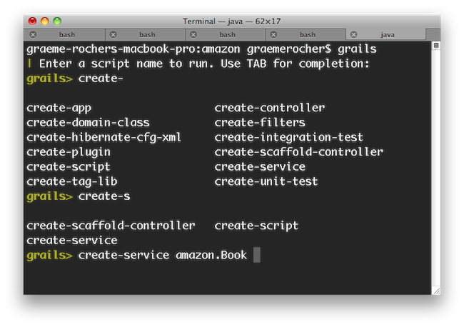

export JAVA_HOME=/Library/Java/Home
export PATH="$PATH:$JAVA_HOME/bin"The Grails Framework
Authors: The Apache Grails Team
Version:
Table of Contents
1 Introduction
Many modern web frameworks in the Java space are more complicated than needed and don’t embrace the Don’t Repeat Yourself (DRY) principles.
Dynamic frameworks like Rails and Django helped pave the way to a more modern way of thinking about web applications. Grails builds on these concepts and dramatically reduces the complexity of building web applications on the Java platform. What makes it different, however, is that it does so by building on already established Java technologies like Spring and Hibernate.
Grails is a full stack framework and attempts to solve as many pieces of the web development puzzle through the core technology and its associated plugins. Included out the box are things like:
-
GORM - An easy-to-use Object Mapping library with support for SQL, MongoDB, Neo4j and more.
-
View technologies for rendering HTML as well as JSON
-
A controller layer built on Spring Boot
-
A plugin system featuring hundreds of plugins.
-
Flexible profiles to create Web applications, Rest applications, plugins and more.
-
An interactive command line environment and build system based on Gradle
-
An embedded Tomcat container which is configured for on the fly reloading
All of these are made easy to use through the power of the Groovy language and the extensive use of Domain Specific Languages (DSLs)
This documentation will take you through getting started with Grails and building web applications with the Grails framework.
In addition to this documentation, there are comprehensive guides that walk you through various aspects of the technology.
Finally, Grails is far more than just a web framework and is made up of various sub-projects. The following table summarizes some other key projects in the eco-system with links to documentation.
| Project | Description |
|---|---|
An Object Mapping implementation for SQL databases |
|
An Object Mapping implementation for the MongoDB Document Database |
|
An Object Mapping implementation for Neo4j Graph Database |
|
A View technology for rendering HTML and other markup on the server |
|
A View technology for rendering JSON on the server side |
|
Asynchronous programming abstraction with support for RxJava, GPars and more |
1.1 What's new in Grails 7?
This section covers all the new features introduced in Grails 7
Overview
Grails 7.0.0-SNAPSHOT is a major release that includes new features, improvements, and dependency upgrades. This release focuses on enhancing the developer experience, improving performance, and ensuring compatibility with the latest technologies.
For detailed information on how to upgrade to Grails 7, including major dependency changes, please see the Upgrading from Grails 6 to Grails 7 section. Notable new features are included below.
External Configuration
The external configuration plugin is now integrated into Grails. See the Configuration section for details.
Ubiquitous Containerized Browser Testing with Geb
The Grails Geb Plugin has received a significant update, introducing test fixtures that enable ubiquitous containerized browser testing.
This new approach is now the recommended way to write functional tests in Grails. However, the previous method using WebDriver binaries remains supported for backward compatibility.
Key Features
By extending your test classes with ContainerGebSpec, your tests will automatically leverage a containerized browser provided by Testcontainers. This setup eliminates the need for managing browser versions and ensures consistent test environments.
Requirements
To use ContainerGebSpec, ensure that you have a compatible container runtime installed. Supported options include:
-
Docker Desktop
-
OrbStack (macOS only)
-
Rancher Desktop
-
Podman Desktop
-
Colima (macOS and Linux)
How It Works
Once a compatible container runtime is installed, no additional configuration is needed. Simply extend your test classes with ContainerGebSpec (instead of GebSpec), and the following will happen:
-
A container will be started automatically when you run your integration tests.
-
The container will be configured to launch a browser capable of accessing your application under test.
With this setup, you gain the benefits of containerized testing, such as isolation, reproducibility, and reduced setup complexity.
formActionSubmit tag
A new tag formActionSubmit has been added to replace actionSubmit.
Dispatching actions via a parameter name on a form submit will be removed in a future version of grails.
See ticket #551 for details.
@Scaffold support for Controllers and Services
The @Scaffold annotation was added to customize scaffolding generation for controllers and services.
Bootstrap 5.3.3 support
Bootstrap 5.3.3 support. Saffolding and Fields tags now optionally support boostrap classes.
Prioritization of AutoConfiguration over bean overriding.
The core dependencies of Grails are moving to using @Configuration to better integrate with the Spring Boot ecosystem.
Please note that this does mean that some beans are now initialized earlier in the application context lifecycle.
Significant Dependency Removals
With the removal of Micronaut, and the fixes to the asset pipeline plugin, Grails build sizes should now be significantly reduced.
g:form & CSRF protection
The g:form tag now automatically provides csrf protection when Spring Security CSRF is enabled.
1.1.1 Updated Dependencies
Grails 7.0.0-SNAPSHOT ships with the following dependency upgrades:
-
Groovy 4.0.28
-
Spring Framework 6.2.11
-
Spring Boot 3.5.6
-
Gradle 8.14.3
-
Spock 2.3-groovy-4.0
2 Getting Started
2.1 Installation Requirements
Before installing Grails you will need a Java Development Kit (JDK) installed with the minimum version denoted in the table below. Download the appropriate JDK for your operating system, run the installer, and then set up an environment variable called JAVA_HOME pointing to the location of this installation.
We recommend Liberica JDK 17 LTS based on Spring’s JDK recommendation.
| Grails version | JDK version (minimum) |
|---|---|
7 |
17 |
6 |
11 |
5 |
8 |
To automate the installation of Grails we recommend SDKMAN which greatly simplifies installing and managing multiple Grails versions.
On some platforms (for example macOS) the Java installation is automatically detected. However in many cases you will want to manually configure the location of Java. For example, if you’re using bash or another variant of the Bourne Shell:
On Windows you would have to configure these environment variables in My Computer/Advanced/Environment Variables
|
2.2 Downloading and Installing
There are many ways to create a Grails application. The best way is to use either start.grails.org or use the Grails CLI via SDKMAN. SDKMAN greatly simplifies installing and managing multiple Grails versions.
Types of command-line interface (CLI)
Historically, Grails had one CLI - grails shell, until grails forge was introduced in Grails 6.
Grails Shell CLI
The historical grails shell CLI has been a core part of the Grails Framework since its inception, providing command-line tools for project creation, code generation, and application management.
Nearly all historical references to the grails or grailsw commands pertain to grails shell functionality.
The grails shell CLI relies on Profiles, consisting of skeleton directories and YAML-based configurations for application generation.
However, this approach is less flexible than the feature-rich application generation capabilities of grails forge.
The Grails Wrapper is a lightweight script (grailsw) and the accompanying JAR file is designed to bootstrap and load the CLI within a Grails Application.
The grails shell CLI provides most of the same application generation functionality provided by grails forge.
Importantly, it can also run scripts, such as run-app that call Gradle and/or your Grails Application.
Most Grails plugins still include Grails Scripts that execute within grails shell CLI and have not yet been migrated to Gradle tasks.
IntelliJ IDEA’s Grails plugin depends on grails shell for code generation and Grails command execution.
Extending application generation in the grails shell CLI is straightforward: developers can create a Custom Profile and reference it as a Maven dependency, which is generally simpler than customizing grails forge.
Restoration of Grails Shell CLI
In Grails 6.0.0, grails shell CLI was removed and replaced with grails forge CLI.
However, in Grails 6.2.1, the grails shell CLI, along with Grails Profiles and the Wrapper were restored, empowering users to choose their preferred CLI and reclaiming functionalities that had not yet been fully transitioned to the grails forge CLI combined with Gradle tasks.
Grails Shell CLI and Gradle
Certain grails shell CLI commands overlap with Gradle tasks.
For Gradle these use a variety of Gradle tasks provided by Gradle, Spring Boot, Grails or a Grails Plugin.
Partial list, for illustration purposes:
| grails shell CLI | Gradle | Integration |
|---|---|---|
|
|
run-app is a Grails Script from the Base Grails Profile commands directory and ultimately calls the Gradle bootRun task |
|
|
run-app is a Grails Script from the Base Grails Profile commands directory and ultimately calls the Gradle bootRun task |
|
|
package is a YAML file from the Base Grails Profile commands directory which is converted by YamlCommandFactory, when Grails CLI starts, into a Grails Command which ultimately calls the Gradle assemble task |
|
|
None. The Grails Script GenerateAll.groovy and the Grails Command GenerateAllCommand.groovy both come from the Scaffolding Plugin and have duplicate functionality |
|
|
Both are provided by DbmUpdateCommand.groovy in the database migration plugin |
|
|
Both are provided by DbmGenerateChangelogCommand.groovy in the database migration plugin |
|
|
None. The Grails Script s2-quickstart.groovy and the Grails Command S2QuickstartCommand.groovy both come from the Grails Spring Security Core Plugin and have duplicate functionality |
Additional details on these commands are covered in other sections of Grails documentation.
Grails Forge CLI
In Grails 6, grails forge was introduced to replace the application generation features of grails shell CLI, while forcing the transition of all other historical CLI functionality directly to Gradle tasks.
This new CLI offers a superior architecture for application generation, particularly when incorporating multiple features, and starts and generates applications faster than the grails shell CLI.
grails forge also powers start.grails.org and the "New Grails Project" feature in JetBrains' IntelliJ IDEA via the Grails Plugin.
Unfortunately, in Grails 6, but corrected for 7, the grails forge CLI was invoked using the historical grails command, which confused users due to its markedly different feature set and architecture.
The grails forge CLI is dedicated solely to initial application generation and the subsequent creation of components such as domains, controllers, services, interceptors, and tag libraries, which is all it can do.
This CLI is entirely offline with precompiled templates and does not run or use Gradle or your Grails Application.
With the grails forge CLI, the goal was to transition all other historical capabilities provided by the grails shell CLI to Gradle tasks.
Although some advancements have been made in this transition, substantial work is still outstanding.
The grails forge can be extended by forking the repository and hosting your own Grails Application Forge internally, which is generally more complex than extending grails shell with a custom profile.
Both CLIs exist in Grails 7
For the reasons listed above, Grails 7 now includes both CLIs and a combined delegating CLI that can invoke either CLI. grails-shell, grails-profiles, grails-wrapper and grails-forge projects are now all part of the grails-core project and are released together.
Grails 7 adds the following commands to any Grails install:
-
grails-forge-cli- the forge cli that was shipped asgrailsinitially in Grails 6. This CLI has both interactive completion & bash autocompletion. Long term, we intend to fold the legacy shell functions into it - including the ability to create custom commands & supporting a custom layout. -
grails-shell-cli- the legacy shell cli that IntelliJ uses. This CLI has only interactive completion. Historically, this shell has not had autocompletion. -
grails- a new, delegating shell application that will call eithergrails-shell-cliorgrails-forge-cli. By default,./grailsusesgrails-shell-clifor backwards compatibility. To usegrails-forge-cli, pass the-tor--typeargument:$ ./grails -t forge
Install with SDKMAN
To install the latest version of Grails using SDKMAN, run this on your terminal:
$ sdk install grailsYou can also specify a version
$ sdk install grails 7.0.0-SNAPSHOTYou can find more information about SDKMAN usage on the SDKMAN Docs.
After installing, all three CLI commands: grails, grails-shell-cli, and grails-forge-cli will be available.
Manual installation
For manual installation follow these steps:
-
Download a binary distribution of Grails and extract the resulting zip file to a location of your choice. Then add the bin directory to your system path.
Unix/Linux
-
This can be done by adding
export PATH="$PATH:/path/to/grails/bin"to your profile
Windows
-
Copy the path to the bin directory inside the grails folder you have downloaded, for example,
C:\path_to_grails\bin
-
Go to Environment Variables, you can typically search or run the command below, the type env and then Enter
Start + R
-
Edit the Path variable on User Variables / System Variables depending on your choice.
-
Paste the copied path in the Path Variable.
If Grails is working correctly you should now be able to type grails --version in the terminal window and see output similar to this:
Grails Version: 7.0.0-SNAPSHOTGrails Wrapper
The original CLI binaries can be quite large.
When installing via SDKMAN or via a download, we include a single shadowJar that contains both shells and the associated scripts to invoke them.
However, when a project is generated, we also include a wrapper grailsw that can be checked into source control.
This wrapper will download the CLI’s to ~/.grails/wrapper/myGrailsVersion and invoke them when calling grailsw.
It is meant to be a light weight option if SDKMAN is not available.
2.3 Creating an Application
To create a Grails application you first need to familiarize yourself with the usage of the grails command which is used in the following manner:
$ grails <<command name>>Run create-app to create an application:
The create-app command is supported by both the Grails Shell CLI and the Grails Forge CLI.
|
Grails Shell CLI
$ grails create-app myappGrails Forge CLI
$ grails -t forge create-app myappThis will create a new directory inside the current one that contains the project. Navigate to this directory in your console:
$ cd myapp2.4 Creating a Simple Web Application with Grails
Step 1: Create a New Project
Open your command prompt or terminal.
Navigate to the directory where you want to create your Grails project:
$ cd your_project_directoryCreate a new Grails project with the following command:
$ grails -t forge create-app myapp
You can omit -t forge, to generate the application with Grails Shell CLI and profiles
|
Step 2: Access the Project Directory
Change into the "myapp" directory, which you just created:
$ cd myappStep 3: Start Grails Interactive Console
Start the Grails Forge CLI interactive console by running the "grails" command:
$ grails -t forgeStep 4: Create a Controller
In the Grails interactive console, you can use auto-completion to create a controller. Type the following command to create a controller named "greeting":
grails> create-controller greetingThis command will generate a new controller named "GreetingController.groovy" within the grails-app/controllers/myapp directory. You might wonder why there is an additional "myapp" directory. This structure aligns with conventions commonly used in Java development, where classes are organized into packages. Grails automatically includes the application name as part of the package structure. If you do not specify a package, Grails defaults to using the application name.
For more detailed information on creating controllers, you can refer to the documentation on the create-controller page.
Step 5: Edit the Controller
Open the "GreetingController.groovy" file located in the "grails-app/controllers/myapp" directory in a text editor.
Add the following code to the "GreetingController.groovy" file:
package myapp
class GreetingController {
def index() {
render "Hello, Congratulations for your first Grails application!"
}
}The action is simply a method. In this particular case, it calls a special method provided by Grails to render the page.
Step 6: Run the Application
Grails framework now relies on Gradle tasks for running the application. To start the application, use the following Gradle bootRun command:
$ ./gradlew bootRunYour application will be hosted on port 8080 by default. You can access it in your web browser at:
Now, it’s important to know that the welcome page is determined by the following URL mapping:
class UrlMappings {
static mappings = {
"/$controller/$action?/$id?(.$format)?"{
constraints {
// apply constraints here
}
}
"/"(view:"/index")
"500"(view:'/error')
"404"(view:'/notFound')
}
}This mapping specifies that the root URL ("/") should display the "index.gsp" view, which is located at "grails-app/views/index.gsp." This "index.gsp" file serves as your welcome or landing page. The other entries in the mapping handle error pages for HTTP status codes 500 and 404.
Grails URL Convention Based on Controller and Action Name
Grails follows a URL convention that relies on the names of controllers and their actions. This convention simplifies the creation and access of various pages or functionalities within your web application.
In the provided code example:
package myapp
class GreetingController {
def index() {
render "Hello, Congratulations for your first Grails application!"
}
}-
The
GreetingControllerclass represents a controller in Grails. -
Inside the controller, there’s an
indexaction defined as a method. In Grails, actions are essentially methods within a controller that handle specific tasks or respond to user requests.
Now, let’s understand how the Grails URL convention works based on this controller and action:
-
Controller Name in URL:
-
The controller name, in this case, "GreetingController," is used in the URL. However, the convention capitalizes the first letter of the controller name and removes the "Controller" suffix. So, "GreetingController" becomes "greeting" in the URL.
-
-
Action Name in URL:
-
By default, if you don’t specify an action in the URL, Grails assumes the "index" action. So, in this example, accessing the URL
/greeting
-
See the end of the controllers and actions section of the user guide to find out more on default actions.
Optional: Set a Context Path
If you want to set a context path for your application, create a configuration property in the "grails-app/conf/application.yml" file:
server:
servlet:
context-path: /myappWith this configuration, the application will be available at: http://localhost:8080/myapp/
Alternatively, you can also set the context path via the command line:
grails> run-app -Dgrails.server.servlet.context-path=/helloworldAlternatively, you can set the context path from the command line when using Gradle to run a Grails application. Here’s how you can do it:
$ ./gradlew bootRun -Dgrails.server.servlet.context-path=/your-context-pathReplace /your-context-path with the desired context path for your Grails application. This command sets the context path directly via the -Dgrails.server.servlet.context-path system property.
For example, if you want your application to be available at "http://localhost:8080/myapp," you can use the following command:
$ ./gradlew bootRun -Dgrails.server.servlet.context-path=/myappThis allows you to configure the context path without modifying the application’s configuration files, making it a flexible and convenient option when running your Grails application with Gradle.
Optional: Change Server Port
If port 8080 is already in use, you can start the server on a different port using the grails.server.port system-property:
$ ./gradlew bootRun -Dgrails.server.port=9090Replace "9090" with your preferred port.
Note for Windows Users
It may also be necessary to enclose the system properties in quotes on Windows:
./gradlew bootRun "-Dgrails.server.port=9090"
Conclusion
Your Grails application will now display a "Hello, Congratulations on your first Grails application!" message when you access it in your web browser.
Remember, you can create multiple controllers and actions to build more complex web applications with Grails. Each action corresponds to a different page accessible through unique URLs based on the controller and action names.
2.5 Using Interactive Mode
Since 3.0, Grails has an interactive mode which makes command execution faster since the JVM doesn’t have to be restarted for each command. To use interactive mode simply type 'grails' from the root of any projects and use TAB completion to get a list of available commands. See the screenshot below for an example:

As of Grails 7, both the Grails Shell CLI and the Forge CLI are available. Interactive mode is part of the Grails Shell CLI and is accessed by typing grails without additional arguments. Grails Forge CLI is accessed as grails -t forge.
|
For more information on the capabilities of interactive mode refer to the section on Interactive Mode in the user guide.
The Grails Shell Command-line Interface (CLI) offers an interactive mode, which you can access by entering "grails" in your Terminal application or Linux Command Line.
Once you’re in the command-line interface, you can enhance your efficiency by utilizing the TAB key for auto-completion. For instance:
grails> create
create-app create-plugin create-webapp
create-controller create-restapi
create-domain-class create-web-pluginThis interactive mode provides a convenient way to explore available Grails commands and options, making your Grails development workflow more efficient and user-friendly.
For more information on the capabilities of interactive mode, refer to the section on Interactive Mode in the user guide.
2.6 Getting Set Up in an IDE
Because Grails is built upon the Spring Framework (Spring Boot), the Gradle build tool, and the Groovy programming language, it is possible to develop Grails application using most popular JVM Integrated Development Environments (IDEs). Some IDEs offer more specialized support for Grails, while others may offer basic support for managing dependencies/plugins, running Gradle tasks, code-completion and syntax highlighting.
1. IntelliJ IDEA
IntelliJ IDEA is a widely used IDE for Grails development. It offers comprehensive support for Groovy and Grails, including features like code-completion, intelligent code analysis, and seamless integration with Grails artefacts.
The new Apache Grails Maven Coordinates are supported in IntelliJ IDEA 2025.2 and later releases via the Grails Plugin.
IntelliJ IDEA also provides powerful database tools that work with Grails' GORM (Grails Object Relational Mapping) seamlessly. It offers both a Community (free) and Ultimate (paid) edition, with the latter offering more advanced Grails support via the regularly updated Grails Plugin, including an embedded version of the Grails Forge, and view resolution for both GSPs and JSON views.
For larger projects, it may be beneficial to adjust memory settings, based on available system RAM, by increasing -Xmx (maximum Java heap size) and -XX:ReservedCodeCacheSize (JIT compiler maximum code cache size). Edit these settings under Help→Custom VM Options, by adding one setting per line. Example for a small project: -Xmx2048m -XX:ReserveCodeCacheSize=128m and for a large project: -Xmx6144m -XX:ReservedCodeCacheSize=512m
|
2. Visual Studio Code (VS Code)
Visual Studio Code is a lightweight, open-source code editor developed by Microsoft. While it’s not a full-fledged IDE, it offers powerful extensions for Grails and Groovy development. You can install extensions like code-groovy and Grails for VS Code to enhance your Grails developer experience.
VS Code provides features such as syntax highlighting, code navigation, and integrated terminal support. It’s a great choice for developers who prefer a lightweight and customizable development environment.
3. STS (Spring Tool Suite)
The Spring Tool Suite (STS) is set of IDE tools designed for Spring Framework development, with versions based on both VS Code and Eclipse. This section focuses on the Eclipse version.
STS can work as an effective Grails developer platform when used with the Groovy Development Tools plugin (which can be installed using the Eclipse Marketplace). STS does not offer specific support for Grails artefacts or GSP views.
4. Netbeans
Apache Netbeans does not offer specific support for Grails, but it will import Grails applications as Gradle projects and provides reasonable editing support for Groovy and GSP views.
5. TextMate, VIM, and More
There are several excellent text editors that work nicely with Groovy and Grails. Here are some references:
-
A bundle is available for Groovy / Grails support in Textmate.
-
A plugin can be installed via Sublime Package Control for the Sublime Text Editor.
-
The emacs-grails extension offers basic support for Grails development in Emacs.
These text editors, along with the provided extensions and configurations, can enhance your Groovy and Grails development experience, offering flexibility and customization to meet your coding preferences.
2.7 Grails Directory Structure and Convention over Configuration
Grails adopts the "convention over configuration" approach to configure itself. In this approach, the name and location of files are used instead of explicit configuration. Therefore, it’s essential to become familiar with the directory structure provided by Grails. Here’s a breakdown of the key directories and links to relevant sections:
-
grails-app- Top-Level Directory for Groovy Sources-
conf- Configuration Sources -
controllers- Web Controllers - Responsible for the "C" in MVC (Model-View-Controller). -
domain- Application Domain - Represents the "M" in MVC. -
i18n- Supports Internationalization (i18n). -
services- The Service Layer. -
taglib- Tag Libraries. -
utils- Houses Grails-specific utilities. -
views- Groovy Server Pages (GSP) or JSON Views - Responsible for the "V" in MVC. -
commands- Custom Grails Commands - Create your own Grails CLI commands.
-
-
src/main/groovy- Supporting Sources -
src/test/groovy- Unit Tests -
src/integration-test/groovy- Integration Tests - For testing Grails applications at the integration level. -
src/main/scripts- Code generation scripts.
Understanding this directory structure and its conventions is fundamental to efficient Grails development.
2.8 Running and Debugging an Application
Grails applications can be run with the built in Tomcat server using the run-app command which will load a server on port 8080 by default:
grails run-appYou can specify a different port by using the -port argument:
grails run-app -port=8090Note that it is better to start up the application in interactive mode since a container restart is much quicker:
$ grails
grails> run-app
| Grails application running at http://localhost:8080 in environment: development
grails> stop-app
| Shutting down application...
| Application shutdown.
grails> run-app
| Grails application running at http://localhost:8080 in environment: developmentYou can debug a grails app by simply right-clicking on the Application.groovy class in your IDE and choosing the appropriate action (since Grails 3).
Alternatively, you can run your app with the following command and then attach a remote debugger to it.
grails run-app --debug-jvmMore information on the run-app command can be found in the reference guide.
Via Gradle, Grails applications can be executed using the built-in application server using the bootRun command. By default, it launches a server on port 8080:
$ ./gradlew bootRunTo specify a different port, you can set the system property -Dgrails.server.port as follows:
$ ./gradlew bootRun -Dgrails.server.port=8081For debugging a Grails app, you have two options. You can either right-click on the Application.groovy class in your IDE and select the appropriate debugging action, or you can run the app with the following command and then connect a remote debugger to it:
$ ./gradlew bootRun --debug-jvmFor more information on the bootRun command, please refer to the bootRun section of the Grails reference guide.
2.9 Testing an Application
The create-* commands in Grails automatically create unit or integration tests for you within the src/test/groovy directory. It is of course up to you to populate these tests with valid test logic, information on which can be found in the section on Unit and integration tests.
To execute tests you run the test-app command as follows:
grails test-appGradle offers a convenient feature where you can automatically generate unit and integration tests for your application using the create-* commands. These generated tests are stored in the src/test/groovy and src/integration-test/groovy directories. However, it is your responsibility to populate these tests with the appropriate test logic. You can find comprehensive guidance on crafting valid test logic in the section dedicated to Unit and Integration Tests.
To initiate the execution of your tests, including both unit and integration tests, you can utilize the Gradle check task. Follow these steps:
-
Open your terminal or command prompt and navigate to your Grails project’s root directory.
-
Execute the following Gradle command:
$ ./gradlew checkBy running the
checktask, you ensure that all tests in your Grails project, including the ones you’ve created and populated with test logic, are executed. This comprehensive testing approach contributes significantly to the robustness and overall quality of your application. -
Viewing Test Reports: After running your tests, Grails generates test reports that provide valuable insights into the test results. You can typically find these reports in the
build/reports/testsdirectory of your Grails project. Open these reports in a web browser to view detailed information about test outcomes, including passed, failed, and skipped tests.
Remember, testing is not just a process; it’s a fundamental practice that enhances your Grails application’s reliability. Viewing test reports helps you analyze and understand the test results, making it easier to identify and address any issues.
By following these testing practices and reviewing test reports, you can deliver a high-quality Grails application to your users with confidence.
2.10 Deploying an Application
Grails applications can be deployed in a number of different ways.
If you are deploying to a traditional container (Tomcat, Jetty etc.) you can create a Web Application Archive (WAR file), and Grails includes the war command for performing this task:
grails warThis will produce a WAR file under the build/libs directory which can then be deployed as per your container’s instructions.
Note that by default Grails will include an embeddable version of Tomcat inside the WAR file, this can cause problems if you deploy to a different version of Tomcat. If you don’t intend to use the embedded container then you should change the scope of the Tomcat dependencies to testImplementation (or provided if using Grails 4.x) prior to deploying to your production container in build.gradle:
testImplementation "org.springframework.boot:spring-boot-starter-tomcat"If you are building a WAR file to deploy on Tomcat 7 then in addition you will need to change the target Tomcat version in the build. Grails is built against Tomcat 8 APIs by default.
To target a Tomcat 7 container, insert a line to build.gradle above the dependencies { } section:
ext['tomcat.version'] = '7.0.59'
Grails 5 contains dependencies that require javax.el-api:3.0 (eg.: datastore-gorm:7.x, spring-boot:2.x) which is only supported starting from Tomcat 8.x+, based on the tomcat version table!
|
Unlike most scripts which default to the development environment unless overridden, the war command runs in the production environment by default. You can override this like any script by specifying the environment name, for example:
grails dev warIf you prefer not to operate a separate Servlet container then you can simply run the Grails WAR file as a regular Java application. Example:
grails war
java -Dgrails.env=prod -jar build/libs/mywar-0.1.warWhen deploying Grails you should always run your containers JVM with the -server option and with sufficient memory allocation. A good set of VM flags would be:
-server -Xmx768MVia Gradle, Grails applications offer multiple deployment options.
For traditional container deployments, such as Tomcat or Jetty, you can generate a Web Application Archive (WAR) file using the Gradle war task as follows:
$ ./gradlew warThis task generates a WAR file with a -plain suffix within the build/libs directory, ready for deployment according to your container’s guidelines.
By default, the war task runs in the production environment. You can specify a different environment, such as development, by overriding it in the Gradle command:
$ ./gradlew -Dgrails.env=dev warIf you prefer not to use a separate Servlet container, you can create and run the Grails WAR file as a regular Java application:
$ ./gradlew bootWar
$ java -jar build/libs/mywar-0.1.warWhen deploying Grails, ensure that your container’s JVM runs with the -server option and sufficient memory allocation. Here are recommended VM flags:
-server -Xmx1024M
2.11 Supported Jakarta EE Containers
The Grails framework requires that runtime containers support Servlet 6.0.0 and above. By default, Grails framework applications are bundled with an embedded Tomcat server. For more information, please see the Deployment section of this documentation.
In addition, read the Grails Guides for tips on how to deploy Grails to various popular Cloud services.
2.12 Creating Artefacts
Grails provides a set of useful CLI commands for various tasks, including the creation of essential artifacts such as controllers and domain classes. These commands simplify the development process, although you can achieve similar results using your preferred Integrated Development Environment (IDE) or text editor.
For instance, to create the foundation of an application, you typically need to generate a domain model using Grails Commands:
The create-app and create-domain-class commands are supported in both the Grails Shell CLI and the Grails Forge CLI.
Grails Forge CLI
$ grails -t forge create-app myapp
$ cd myapp
$ grails -t forge create-domain-class bookGrails Shell CLI
$ grails create-app myapp
$ cd myapp
$ grails create-domain-class bookExecuting these commands will result in the creation of a domain class located at grails-app/domain/myapp/Book.groovy, as shown in the following code:
package myapp
class Book {
}The Grails CLI offers numerous other commands that you can explore in the Grails command line reference guide.
| Using interactive mode enhances the development experience by providing auto-complete and making the process smoother. |
2.13 Generating an Application
Quick Start with Grails Scaffolding
To get started quickly with Grails it is often useful to use a feature called scaffolding to generate the skeleton of an application. To do this use one of the generate-* commands such as generate-all, which will generate a controller (and its unit test) and the associated views:
grails generate-all helloworld.BookGradle Quick Start with Grails Scaffolding
To quickly initiate your Grails project, you can employ the runCommand Gradle task. This task allows you to generate the essential structure of an application swiftly. Specifically, when running the following command, you can create a controller (including its unit tests) and the associated views for your application:
$ ./gradlew runCommand -Pargs="generate-all myapp.Book"2.14 Development Reloading
Spring Boot Developer Tools, JRebel, and Hotswap Agent are tools designed to improve developer productivity by enabling application reloading during development, reducing the need for full application restarts. Since Grails is built on Spring Boot, all three tools are compatible, but they differ in mechanisms, features, and trade-offs. Spring Boot Developer Tools is the default in Grails, replacing older agents like Spring Loaded (no longer maintained and lacking support for Java 17+). Hotswap Agent and JRebel offer more advanced "true" hot swapping capabilities.
Spring Boot Developer Tools
Spring Boot Developer Tools is a feature of Spring Boot that provides automatic restarts and live reload capabilities. It is enabled by default in generated Grails applications. When you make changes to your code, the application automatically restarts, allowing you to see the changes without manually stopping and starting the server. Best developer reloading tool to start with.
For larger applications, you may need to adjust the default settings for optimal performance. This works well until your application becomes very large, at which point restarts may take longer or fail.
Please see the Spring Boot documentation for more details: Spring Boot Developer Tools.
| You can use Spring Developer Tools in combination with a browser extension to get automatic browser refresh when you change anything in your Grails application. |
Reloading Mechanism: Auto-restarts the application context on code changes using dual class loaders; supports live reload for static resources like views/templates.
JRebel
JRebel is a commercial tool that provides advanced hot swapping capabilities, allowing developers to make changes to their code without restarting the application. It supports a wide range of frameworks and libraries, including Grails. JRebel requires a license for use.
Please see the JRebel documentation for more details: JRebel.
Reloading Mechanism: True hot swapping via bytecode instrumentation; reloads classes, configurations, and resources without restarting the JVM, preserving application state.
Hotswap Agent
Hotswap Agent support for Grails is considered experimental, and it may not work in all cases. Known limitations are documented here.
Hotswap Agent is an open-source tool that provides advanced hot swapping capabilities for Java applications. It allows developers to make changes to their code without restarting the application. Hotswap Agent supports a wide range of frameworks and libraries, including Spring Framework and Spring Boot.
Reloading Mechanism: True hot swapping using DCEVM (Dynamic Code Evolution VM) to patch the JVM; reloads classes and resources, supporting structural changes.
Running the Grails Application in Debug Mode
Enables limited dynamic reloading via standard JVM hot swapping. This feature is built into the JVM and does not require additional configuration beyond starting the application with debugging enabled. Supports automatic reloading of static content (such as CSS, JavaScript, or HTML templates) without restarting the application. You can modify and reload Java code changes without a full restart, but this is limited to non-structural modifications. Changes that affect class or method signatures (e.g., adding new methods, fields, or constructors; changing method parameters; or modifying class hierarchies) are not supported and will require a restart. This limitation stems from the JVM’s hot swapping constraints.
Reloading Mechanism: standard JVM hot swapping
3 Upgrading from the previous versions
3.1 Upgrading from Grails 6 to Grails 7
Upgrade Instructions for Grails and Related Dependencies
To ensure compatibility with Grails 7.0.0-SNAPSHOT, please review the following upgrade instructions carefully. This guide outlines the necessary steps & warnings to upgrade your Grails project.
1. Java 17 as baseline:
Starting from Grails 7, Java 17 serves as the baseline requirement for the framework, matching Spring Framework and Spring Boot’s minimum Java version. When upgrading to Grails 7, ensure that your project is configured to use Java 17. Updating to Java 17 allows you to take advantage of the latest features, security enhancements, and performance improvements provided by Java 17.
Please make sure to update your project’s Java version to 17 before proceeding with the Grails 7 upgrade. Doing so will ensure a seamless transition to the latest version of Grails and enable you to enjoy all the benefits that Java 17 has to offer.
2. Groovy 4.0.28 as a baseline:
Grails 7.0.0-SNAPSHOT adopts Groovy 4.0.28 as it’s baseline requirement. Several changes in Groovy 4 can affect your application. Changes that may affect a Grails Application or Plugin include:
-
GROOVY-10621 - Primitive booleans will no longer generate the form of isProperty & getProperty. They will only generate isProperty(). For Grails Domain objects, grails sometimes generates these properties. It is advisable to switch to the new form of the property.
-
GROOVY-5169 & GROOVY-10449 - Fields with a public modifier were not returned with MetaClassImpl#getProperties() in groovy 3, but are now.
-
Closures using the DELEGATE_FIRST strategy now behave differently. The resolution order in Groovy 3 used to be Delegate’s invokeMethod, Owner’s invokeMethod, Delegate’s invokeMissingMethod, Owner’s invokeMissingMethod. In Groovy 4, the order is now Delegate’s invokeMethod, Delegate’s invokeMissingMethod, Owner’s invokeMethod, Owner’s invokeMissingMethod.
-
Closures defined in a parent class that reference its private properties or methods may no longer have access to them in subclasses. See GROOVY-11568 for more details.
Some older libraries may include an older version of groovy, but still be compatible with Groovy 4. One example is GPars. In your gradle file, you can force a dependency upgrade via this code:
build.gradle
configurations.configureEach {
resolutionStrategy.eachDependency { DependencyResolveDetails details ->
if (details.requested.group == 'org.codehaus.groovy') {
details.useTarget(group: 'org.apache.groovy', name: details.requested.name, version: '{groovyVersion}')
}
}
}3. Unified Project Version
Grails 7 moved to a mono repository.
As part of this move, all projects that make up a grails release now have a common version.
Setting grailsVersion in gradle.properties is the proper way to specify a set of dependencies that are compatible with each other for a given Grails release.
Please remove older properties such as gormVersion & grailsGradlePluginVersion and exclusively use this property going forward.
gradle.properties
grailsVersion=7.0.0-SNAPSHOT
4. Unified Bill of Materials
Previously Grails did not have a single Bill of Materials (BOM). Instead it had a micronaut-bom and a spring-bom that existed side by side. As of Grails 7, a grails-bom is published that inherits from the spring-bom and the micronaut-bom is not included by default.
Grails 7 introduces a BOM that includes all the dependencies required for a Grails application. This BOM is available in the org.apache.grails:grails-bom artifact. The BOM is automatically applied when a Grails Gradle plugin is applied via the Spring Dependency Management plugin. For projects that do not use a Grails Gradle plugin, you can apply the BOM via a Gradle Platform:
build.gradle
dependencies {
implementation platform("org.apache.grails:grails-bom:${grailsVersion}")
}Because all Grails projects will apply the Grails Gradle plugin, the BOM is automatically applied. You can override a version in the BOM by setting the associated Gradle property. The possible gradle properties are generated as part of this documentation. Please see link:../ref/Versions/Grails BOM.html[Grails BOM Dependencies] for a quick reference.
5. Coordinate Changes
Grails has transitioned to the Apache Software Foundation (ASF).
As a result, the group ID for Grails artifacts has changed to org.apache.grails.
This change applies to all Grails packages, including core plugins and core dependencies, maintained by the Grails team.
When upgrading to Grails 7, ensure that you update your build configuration to use the new group ID.
There is a RENAME.md in the grails-core repository that maps previous coordinate names to new names.
Additionally, there is a script to aid in the updating of Grails projects to the new coordinates.
The script is located in the etc/bin directory of the grails-core repository and can be run as follows:
./rename_gradle_artifacts.sh -l my/project/locationThis script will scan any gradle file and attempt to update both exclusions & dependencies to the new coordinates.
6. Gradle Changes:
One of the major changes in Grails 7 is the modernization of it’s build system. As a side effect of this modernization, the Grails build is fully parallel & lazy. Moreover, most tasks have been enhanced to be cacheable. When updating to Grails 7.0.0-SNAPSHOT, there may be required updates to various tasks we distribute since the inputs of those tasks have changed to support lazy configuration.
6.1. Gradle Plugin Changes
As part of the cacheable task changes, some tasks have slightly new behaviors:
-
FindMainTask can now fail for non-plugins: If an Application class is not found & the project has a Grails gradle plugin applied, the FindMainTask will now fail.
-
FindMainTask is now cacheable - restarting with bootRun should not force a recompile of the application if no changes have been made.
-
Configuration tasks have been added to customize compileGroovy tasks. These tasks allow for proper metadata being passed to the Groovy compiler to ensure the AST transformations know if code is a Grails Plugin or a Grails Application. In the event these tasks do not run or are caching incorrectly, you may observe incorrect UrlMapping resolution. Please report any instances of this happening so it can be addressed.
-
groovyVersionis nowgroovy.versionto match upstream Spring BOM property names. If you still define groovyVersion to override the groovy version & use the Spring Dependency Management plugin, you will need to change this property togroovy.versionin yourgradle.propertiesfile. -
While the Spring Dependency Management plugin is still used by default, it can now be disabled by setting the property
springDependencyManagementon thegrailsextension.
6.2. Upgrading Gradle:
It is recommended to set your gradle version to a version of 8.14.3 or higher:
./gradlew wrapper --gradle-version 8.14.3This command will download the specified Gradle version and update the Gradle wrapper settings in your project.
6.3. Check Gradle Version:
After the command finishes, you can verify that the Gradle version has been updated by checking the gradle-wrapper.properties file located in the gradle/wrapper directory.
The distributionUrl in the file should now point to the specified Gradle version’s distribution:
distributionUrl=https\://services.gradle.org/distributions/gradle-8.14.3-bin.zip
6.4. Removed Gradle Plugins
The grails-doc plugin has been removed. If you wish to continue to generate the guide documentation, you can use the PublishGuideTask offered by grails-docs-core.
7. Reproducible Builds:
The ASF strongly encourages reproducible builds as part of it’s security requirements. We have begun making the Grails build reproducible - that is, if you build with the same settings as the GitHub action the produced artifacts should be identical. We have starting addressing reproducible builds under the ticket #14679.
A side effect of making our builds reproducible is that Grails applications can also now be reproducible. The benefits of reproducible builds are well documented, but for Grails applications, some of the side effects include:
-
Improved build times - since the build is reproducible, Gradle can cache the results of the build and reuse them in future builds.
-
Minimizing rebuilds - if the build is reproducible, Gradle can avoid unnecessary rebuilds of tasks that have not changed.
-
Improved security - reproducible builds can help to ensure that the build process is not tampered with, and that the resulting artifacts are exactly what was intended.
To make your local build reproducible, you’ll want to set the environment variable SOURCE_DATE_EPOCH to a fixed date.
For Grails, we set this value to the last commit in git via the bash command: SOURCE_DATE_EPOCH=$(git log -1 --pretty=%ct)
8. Spring 6.2.11:
Grails 7.0.0-SNAPSHOT is built on the Spring Framework, version 6.2.11. If your project uses Spring-specific features, refer to the Upgrading to Spring 6 guide.
This update introduces enhancements and fixes to the Spring Framework, providing you with the latest improvements in dependency injection, web frameworks, and other Spring-related functionalities.
9. Spring Boot 3.5.6:
Grails 6 used Spring Boot 2.7.x. Grails 7.0.0-SNAPSHOT updates this to Spring Boot 3.5.6. For more information, consult the release notes for previous Spring Boot releases: 1. Spring Boot 3.5 Release Notes 2. Spring Boot 3.4 Release Notes 3. Spring Boot 3.3 Release Notes 4. Spring Boot 3.2 Release Notes 5. Spring Boot 3.1 Release Notes 6. Spring Boot 3.0 Release Notes
10. Upgrading Your Project:
In addition to the coordinate changes, the version updates, and the build updates, to upgrade your project it is advised to use an application generator and compare it to your existing project. The preferred app generator for Grails is start.grails.org. Please note that several previously required gradle configurations have been integrated into the Grails Gradle Plugins as defaults. Compare a freshly generated application to your application and apply any associated changes.
10.1 Building the Project:
After comparing to a generated build & updating your gradle files, you can now build your Grails project using the updated Gradle version:
./gradlew buildThis will initiate the build process with the new Gradle version.
11. Grails CLI
Both the legacy grails-shell-cli and grails-forge-cli are now included with Grails 7. Please see the Downloading & Installing section of this guide for important background on how to use the Grails CLI commands.
12. Breaking changes
Grails 7 introduces several breaking changes that may require updates to your application.
12.1
Due to the significant changes in Grails 7, all prior Grails Plugins will need updated to work with Grails 7. For plugins in the Grails Plugins GitHub organization, the Grails Core team is updating them as time permits and when requested. If there is a plugin that you require updating, please reach out via ticket to see if we can help.
12.2 javax → Jakarta
Spring has switched from javax to jakarta packages. Please consult the Spring upgrade guides for the impacts of this change.
Gradle Javax-to-Jakarta EE migration plugins, such as the gradle-jakartaee-migration-plugin, provide transforms and dependency substitutions to ease the migration from Java EE (javax.) to Jakarta EE (jakarta.). These plugins can help mitigate upgrade challenges with older dependencies that still use javax. until they are updated or replaced with alternative solutions.
To apply and configure the gradle-jakartaee-migration-plugin in your build.gradle, you can use the following snippet:
build.gradle
plugins {
id 'com.netflix.nebula.jakartaee-migration' version '0.24.0'
}
jakartaeeMigration {
migrate()
}12.3 Removed libraries/classes
-
The
grails-web-fileuploadlibrary, including its sole classContentLengthAwareCommonsMultipartResolver, has been removed. This change was necessitated by the removal of the superclassCommonsMultipartResolverin Spring 6. TheContentLengthAwareCommonsMultipartResolverwas originally introduced to address a bug in Safari back in 2007, but it is likely no longer needed. Spring has transitioned away fromCommonsMultipartResolverand now recommends using the built-in support for multipart uploads provided by servlet containers. For more information on handling file uploads in Spring Boot, please refer to the relevant sections of the Spring Boot documentation and the Spring Framework 6 upgrade guide. -
Removed deprecations:
-
org.grails.spring.beans.factory.OptimizedAutowireCapableBeanFactory -
GrailsPlugin#checkForChangesExpected -
GrailsClassUtils#isGetter(String, Class[])- useisGetter(String, Class, Class[])instead. -
GrailsClassUtils#getPropertyForGetter(String)- usegetPropertyForGetter(String, Class)instead. -
AbstractGrailsClass#getPropertyDescriptors- usegetMetaPropertiesinstead. -
org.grails.core.metaclass.BaseApiProvider- use traits instead. -
Several static variables on
ClosureEventTriggeringInterceptor- use the variables onAbstractPersistentEventinstead. -
grails.testing.gorm.DataTest#dataStore- useDataTest#datastoreinstead.
-
-
The following deprecated classes were removed, please use the suggested replacement:
-
grails.core.GrailsTagLibClass→grails.core.gsp.GrailsTagLibClass -
org.grails.core.artefact.TagLibArtefactHandler→org.grails.core.artefact.gsp.TagLibArtefactHandler -
org.grails.core.DefaultGrailsTagLibClass→org.grails.core.gsp.DefaultGrailsTagLibClass -
org.grails.plugins.CodecsGrailsPlugin→org.grails.plugins.codecs.CodecsGrailsPlugin -
grails.artefact.AsyncController→grails.async.web.AsyncController -
grails.beans.util.LazyBeanMap→grails.beans.util.LazyMetaPropertyMap -
org.grails.plugins.databinding.DataBindingGrailsPlugin→DataBindingConfiguration
-
12.4 Micronaut in Grails is now supported via the plugin grails-micronaut
In Grails 4 to Grails 6, Micronaut was integrated by making Micronaut the parent context of the Grails application. As of Grails 7, Micronaut is set up via the micronaut-spring-starter using the grails-micronaut plugin. Discussion around this change can be found here.
To enable Micronaut in your Grails application, two steps must be completed. First, the grails-micronaut plugin needs added to the build file. Second, the property micronautPlatformVersion needs set to your desired version. Only Micronaut 4.9.2 or higher is supported for Grails.
Here’s an example build file:
build.gradle
dependencies {
implementation 'org.apache.grails:grails-micronaut'
}Here’s an example gradle.properties file:
gradle.properties
micronautPlatformVersion=4.9.212.5 hibernate-ehcache
The org.hibernate:hibernate-ehcache library is no longer provided by the org.apache.grails:grails-hibernate5 plugin. If
your application depends on hibernate-ehcache, you must now add it explicitly to your project dependencies.
Since hibernate-ehcache brings in a conflicting javax version of org.hibernate:hibernate-core, it is
recommended to exclude hibernate-core from the hibernate-ehcache dependency to avoid conflicts:
build.gradle
dependencies {
implementation 'org.hibernate:hibernate-ehcache:5.6.15.Final', {
// exclude javax variant of hibernate-core
exclude group: 'org.hibernate', module: 'hibernate-core'
}
runtimeOnly 'org.jboss.spec.javax.transaction:jboss-transaction-api_1.3_spec:2.0.0.Final', {
// required for hibernate-ehcache to work with javax variant of hibernate-core excluded
}
}12.6 H2
The test database H2 is stricter about reserved keywords. If you use H2 in your application, please take a look at this pull request for examples of these new restrictions.
12.7 Removal of Test Dependencies from Production Classpath
Prior versions of Grails included test dependencies on the production classpath.
These are now removed in Grails 7. If you still need them, you can add them to your implementation configuration in your build.gradle file.
12.8 Jar Artifact name changes
Jar artifacts produced by Grails Plugins will no longer have the suffix -plain.
Please see ticket #347 for details.
12.9 Java 20+ Date Formatting Changes
In Java 20+, Unicode CLDR42 was implemented which changed the space character preceding the period (AM or PM) in formatted date/time text from a standard space (" ") to a narrow non-breaking space (NNBSP: "\u202F"). Additionally, when using the LONG or FULL timeStyle with dateStyle, the date and time separator has changed from ' at ' to ', '. IE. January 5, 1941, 8:00:00 AM UTC vs. January 5, 1941 at 8:00:00 AM UTC
12.10 Container runtime environment is now required for standard Geb functional and integration tests
The Grails Geb Plugin has received a significant update, introducing test fixtures that enable ubiquitous containerized browser testing.
This new approach is now the recommended way to write functional tests in Grails, but it requires a container runtime environment.
The previous method using WebDriver binaries remains supported for backward compatibility, although matching driver and browser versions can be challenging.
Key Features
By extending your test classes with ContainerGebSpec, your tests will automatically leverage a containerized browser provided by Testcontainers. This setup eliminates the need for managing browser versions and ensures consistent test environments.
Requirements
To use ContainerGebSpec, ensure that you have a compatible container runtime installed. Supported options include:
-
Docker Desktop
-
OrbStack (macOS only)
-
Rancher Desktop
-
Podman Desktop
-
Colima (macOS and Linux)
How It Works
Once a compatible container runtime is installed, no additional configuration is needed. Simply extend your test classes with ContainerGebSpec (instead of GebSpec), and the following will happen:
-
A container will be started automatically when you run your integration tests.
-
The container will be configured to launch a browser capable of accessing your application under test.
With this setup, you gain the benefits of containerized testing, such as isolation, reproducibility, and reduced setup complexity.
12.11 Asset Pipeline
The asset pipeline has a new home. Version 5.0.12 and forward is compatible with Grails 7.x.
Updated maven coordinates:
build.gradle
cloud.wondrify:asset-pipeline-gradle
cloud.wondrify:asset-pipeline-grailsGradle plugin:
build.gradle
plugins {
id "cloud.wondrify.asset-pipeline"
}
or
apply plugin: "cloud.wondrify.asset-pipeline"12.12 API Changes
As part of any major release, APIs can change. For Grails 7.0, the list of renamed APIs follows:
-
GrailsClassUtils#isMatchBetweenPrimativeAndWrapperTypes → GrailsClassUtils#isMatchBetweenPrimitiveAndWrapperTypes
12.13 Layout Plugins
Grails 7 has two different layout engines: Sitemesh 2.6.x & Sitemesh 3.x. The Sitemesh2 plugin is named grails-layout and the Sitemesh 3 plugin is grails-sitemesh3. The grails-layout plugin is what has traditionally shipped with Grails. The grails-sitemesh3 plugin is functional, but has some known issues. Please see the thread Grails 7 & Reverting Sitemesh 3 for the history of why we did not exclusively use grails-sitemesh3 for Grails 7.
12.14 grails-layout Configuration
If you decide to use the grails-layout plugin, several changes have occurred:
Add the following dependency to your project:
build.gradle
implementation "org.apache.grails:grails-layout"Package Changes:
-
grails.web.sitemesh → org.apache.grails.web.layout
-
org.grails.web.sitemesh → org.apache.grails.views.gsp.layout
Notable Class Moves:
-
org.grails.web.servlet.view.GrailsLayoutViewResolver → org.apache.grails.web.layout.EmbeddedGrailsLayoutViewResolver
-
org.grails.web.servlet.view.SitemeshLayoutViewResolver → org.apache.grails.web.layout.GrailsLayoutViewResolver
-
org.grails.web.sitemesh.GrailsLayoutView → org.apache.grails.web.layout.EmbeddedGrailsLayoutView
-
org.grails.web.sitemesh.SitemeshLayoutView → org.apache.grails.web.layout.GrailsLayoutView
Property Changes:
-
grails.sitemesh.default.layout → grails.views.layout.default
-
grails.sitemesh.enable.nongsp → grails.views.layout.enable.nongsp
Tag namespace changes:
-
sitemesh → grailsLayout
12.15 Tomcat 10.1.42 introduced limits for part count and header size in multipart/form-data requests
These limits can be customized using server.tomcat.max-part-count and server.tomcat.max-part-header-size respectively.
server.tomcat.max-part-count default is 10
server.tomcat.max-part-header-size defalt is 512B
12.16 servletContext no longer included by default in generated Bootstrap init{}
The servletContext is no longer included by default in the generated Bootstrap class. If you need access to the servletContext, you can inject it into your Bootstrap class using:
ServletContext servletContext12.17 Development Reloading
For Grails 7, as was the case with Grails 4 and 5 and shell-generated applications in 6, Spring Boot Developer Tools is used by default for development reloading within generated applications.
To learn more about development reloading options, please see the Development Reloading section of this guide.
12.18 grails-i18n plugin
org.apache.grails:grails-i18n has been changed to org.apache.grails.i18n:grails-i18n and is provided transitively, remove org.apache.grails:grails-i18n and org.grails:grails-plugin-i18n from your dependency list
12.19 hibernate.cache.region.factory_class
org.hibernate.cache.ehcache.SingletonEhCacheRegionFactory is deprecated in Hibernate 5.6 and is not compatible with org.hibernate:hibernate-core-jakarta:5.6.15.Final, which is used in Grails 7.
application.yml
hibernate:
allow_update_outside_transaction: true
cache:
queries: false
use_second_level_cache: true
use_query_cache: false
region:
factory_class: 'org.hibernate.cache.ehcache.SingletonEhCacheRegionFactory'If your application sets hibernate.cache.region.factory_class to org.hibernate.cache.ehcache.SingletonEhCacheRegionFactory it will add the non-jakarta version of hibernate-core to your classpath which will cause NoClassDefFoundError and ClassNotFoundException errors.
You will need to change it to jcache and add the Ehcache dependency as follows:
application.yml
hibernate:
allow_update_outside_transaction: true
cache:
queries: false
use_second_level_cache: true
use_query_cache: false
region:
factory_class: 'jcache'build.gradle
implementation 'org.ehcache:ehcache'Alternatively, you can define the hibernate-ehcache dependency explicitly and adjust it to exclude hibernate-core and add the jboss-transaction-api_1.3_spec see Hibernate-ehcache
12.20 A Grails project cannot be both a plugin & an Application
In previous versions of Grails, it was possible to apply both the grails-plugin and grails-web Gradle plugins in build.gradle.
This would force the project to be both a Grails Plugin and a Grails Application.
This scenario is not supported and can lead to unexpected behavior due to the AST transforms.
Starting with Grails 7, a validation error will trigger if both a Grails Application Gradle Plugin & a Grails Plugin Gradle Plugin are configured in build.gradle for the same Gradle Project.
12.21 exploded is supported again to enable multi-project reloading
Earlier versions of Grails supported an exploded Gradle configuration that forced defined plugins to use class and resource files, instead of jar files, on the Grails Application runtime classpath if several conditions were true:
-
the property
grails.run.activewas set -
the plugin project had the property
explodedset totrueprior to the application of thegrails-pluginGradle plugin -
plugins were added to the Grails Application project via the
pluginsblock inside of thegrailsextension inbuild.gradleinstead of thedependenciesblock -
the property
explodedwas set on thegrailsextension inbuild.gradleof the Grails Application project
The exploded setup facilitates better class reloading behavior.
For Grails 7, it has been simplified to the following:
-
In the plugin project, apply the gradle plugin
org.apache.grails.gradle.grails-exploded -
In the application project, define plugins inside of the
pluginsblock of thegrailsextension inbuild.gradle:
grails {
plugins {
implementation project(":my-plugin")
}
}
Expanded class files & resource files will only be used over the jar file if the plugin applies the gradle plugin org.apache.grails.gradle.grails-exploded & the plugin is a subproject of your Gradle build.
|
12.22 Database Migration Plugin migrations directory in the main sourceSet
It is no longer necessary to add the grails-app/migrations directory to the main sourceSet in order for the Database Migration Plugin to find your changelogs.
This is now done automatically by the org.apache.grails.gradle.grails-plugin Gradle plugin.
The following code can be removed from your build.gradle file:
build.gradle
sourceSets {
main {
resources {
srcDir 'grails-app/migrations'
}
}
}12.23 Test & JavaExec JVM Args no longer set by default
Previously tasks of type Test & JavaExec had several JVM args set by default to facilitate faster startup times in larger projects.
These settings are removed by default in Grails 7. To restore the old behavior, configure the Test & JavaExec tasks as follows:
tasks.withType(Test).configureEach {
jvmArgs('-XX:+TieredCompilation', '-XX:TieredStopAtLevel=1', '-XX:CICompilerCount=3')
}
tasks.withType(JavaExec).configureEach {
jvmArgs('-XX:+TieredCompilation', '-XX:TieredStopAtLevel=1', '-XX:CICompilerCount=3')
}3.2 Upgrading from Grails 5 to Grails 6
Upgrade Instructions for Grails and Related Dependencies
To ensure compatibility with Grails 6, you must update the following versions in your project:
1. Java 11 as Baseline:
Starting from Grails 6, Java 11 serves as the baseline requirement for the framework. When upgrading to Grails 6, ensure that your project is configured to use Java 11. This compatibility with Java 11 allows you to take advantage of the latest features, security enhancements, and performance improvements provided by Java 11.
Please make sure to update your project’s Java version to 11 before proceeding with the Grails 6 upgrade. Doing so will ensure a seamless transition to the latest version of Grails and enable you to enjoy all the benefits that Java 11 has to offer.
2. The New Grails CLI:
Grails 6 comes with a completely revamped and highly efficient Command Line Interface (CLI) that enables you to generate applications and plugins at a remarkable speed. For instance, you can now use the new CLI to create a new Grails 6 application with the following command:
grails create-app my-appThe new CLI also allows you to generate plugins easily. For example, to create a new plugin named "my-plugin," you can use the following command:
grails create-plugin my-pluginOne notable improvement in Grails 6 is that it no longer supports certain commands that performed redundant tasks, such as the outdated grails run-app command. Instead, it recommends using the Gradle bootRun task for running your application, which offers better performance and functionality.
For example, to run your Grails 6 application, you can use the following command:
./gradlew bootRunAs a result of these improvements, the new CLI provides a more streamlined and efficient way to work with Grails applications and plugins.
Overall, Grails 6 offers a significantly improved development experience with its new CLI, optimized commands, and advanced features for generating applications and plugins.
3. Setting Grails Version and Grails Gradle Plugin:
To upgrade to Grails 6, it’s important to configure the appropriate versions in the gradle.properties file as shown below:
gradle.properties
grailsVersion=6.0.0
grailsGradlePluginVersion=6.0.0By specifying the above versions, you’ll gain access to the latest features, improvements, and bug fixes introduced in Grails 6. Upgrading to this version empowers your application with enhanced performance and improved security. Additionally, it allows you to leverage the latest advancements in the Grails framework for a more efficient and secure development experience.
4. GORM Version:
If your project utilizes GORM, ensure to update the version in the gradle.properties file as demonstrated below:
gradle.properties
gormVersion=8.0.0By upgrading to GORM 8.0.0, you will benefit from essential updates and optimizations. This upgrade guarantees seamless interactions with your database and enhances your data management experience. Staying current with GORM allows you to take advantage of the latest database features and improvements, thereby optimizing the performance and functionality of your application.
5. Gradle Version:
Grails 6 uses Gradle 7.6.2 which offers performance improvements, bug fixes, and new features over previous versions. Upgrading to the latest Gradle version helps accelerate your build processes and ensures compatibility with other dependencies.
5.1. Upgrade to Gradle 7.6.2
Run the following command to update the Gradle wrapper to the desired version (e.g., Gradle 7.6.2):
./gradlew wrapper --gradle-version 7.6.2This command will download the specified Gradle version and update the Gradle wrapper settings in your project.
5.2. Check Gradle Version:
After the command finishes, you can verify that the Gradle version has been updated by checking the gradle-wrapper.properties file located in the gradle/wrapper directory. The distributionUrl in the file should now point to the Gradle 7.6.2 distribution:
distributionUrl=https\://services.gradle.org/distributions/gradle-7.6.2-bin.zip5.3. Build the Project:
After updating the Gradle wrapper, you can now build your Grails project using the updated Gradle version:
./gradlew buildThis will initiate the build process with the new Gradle version.
6. Embracing Modern Plugin Management with Grails 6
In Gradle, there are two main ways to add plugins to your project: the plugins block and the apply plugin statement.
Grails 6 introduces a significant change in how plugins are managed by adopting the Gradle plugins block instead of the traditional apply plugin statements. This shift streamlines the project’s build configuration and brings it more in line with modern Gradle conventions. New Grails projects will now utilize the plugins block to manage plugin dependencies and configurations.
Using the plugins Block in Grails 6:
With the new approach, adding plugins to a Grails 6 project is more explicit and organized. In your build.gradle file, you can declare plugins within the plugins block, specifying the plugin’s ID and version.
Here’s an example of adding the views-json plugin using the plugins block:
build.gradle
plugins {
id 'org.grails.plugins.views-json' version '3.0.0'
}Managing Multiple Plugins:
The plugins block allows you to add multiple plugins, each on its own line. This enhances clarity and makes it easier to manage plugin dependencies.
build.gradle
plugins {
id 'org.grails.plugins.views-json' version '3.0.0'
// Add other plugins as needed
}Moving Older Applications to the New Approach:
If you are migrating an older Grails application to Grails 6, you can update the plugin declarations from apply plugin to the plugins block. For example, if your previous application used the views-json plugin, you can modify the build.gradle as follows:
Before (Using apply plugin):
build.gradle
apply plugin: 'org.grails.plugins.views-json'After (Using plugins Block in Grails 6):
build.gradle
plugins {
id 'org.grails.plugins.views-json' version '3.0.0'
}By migrating to the plugins block, your Grails 6 project will adhere to modern Gradle conventions, making it easier to manage plugin dependencies and configurations. This new approach maintains consistency and enhances the overall structure of the project, ensuring a smoother and more efficient development process.
7. GORM for MongoDB Sync Driver:
The GORM for MongoDB is updated to support the latest mongodb-driver-sync. If you are using GORM for MongoDB and making use of specific MongoDB Driver or low-level Mongo API features, consider checking the Upgrading to the 4.0 Driver guide.
This update ensures seamless integration with MongoDB, access to new features, and improved performance while interacting with your MongoDB database.
8. Asset Pipeline Plugin:
In Grails 6, there is an update to the Asset Pipeline Plugin, which is now version 4.3.0. The Asset Pipeline Plugin is a crucial component in Grails applications, responsible for managing frontend assets like stylesheets, JavaScript files, and images. The update to version 4.3.0 brings several improvements and new features to enhance the management and processing of frontend assets in your Grails projects.
The asset-pipeline plugin 4.3.0 offers new features for managing and processing your frontend assets, ensuring they are efficiently bundled and served to your users.
9. Spring 5.3:
Grails 6 is built on Spring 5.3.27. If your project uses Spring-specific features, refer to the Upgrading to Spring 5.3 guide.
Spring 5.3 introduces enhancements and fixes to the Spring framework, providing you with the latest improvements in dependency injection, web frameworks, and other Spring-related functionalities.
10. Spring Boot 2.7:
Grails 6 updates to Spring Boot 2.7. For more information, consult the Spring Boot 2.7 Release Notes
Spring Boot 2.7 comes with new features, performance enhancements, and compatibility improvements, making it a solid foundation for your Grails application.
11. Micronaut 3.9.3:
Grails 6 is shipped with Micronaut 3.9.3. If you are using specific Micronaut features, refer to the Upgrading to Micronaut 3.x guide.
Micronaut 3.9.3 brings new capabilities, improvements, and bug fixes, empowering your application with a powerful and lightweight microservices framework.
12. Micronaut for Spring 4.5.1:
Grails 6 is updated to use Micronaut for Spring 4.5.1. For more information, check out the release notes.
Micronaut for Spring 4.5.1 provides seamless integration between Micronaut and Spring, allowing you to leverage the strengths of both frameworks in your Grails project.
3.3 Upgrading from Grails 4 to Grails 5
Bump up Grails Version
You will need to upgrade your Grails version defined in gradle.properties as:
gradle.properties
...
grailsVersion=5.2.0
...Apache Groovy 3.0.7
Grails 5.1.1 provide support for Groovy 3. We would recommend you to please check the Release notes for Groovy 3 to update your application in case you are using a specific feature which might not work in Groovy 3.
Define groovyVersion in gradle.properties to force the application to use Groovy 3.
Grails 5.1 app’s gradle.properties
gradle.properties
...
groovyVersion=3.0.7
...Bump up GORM Version
If you were using GORM, you will need to update the version defined in gradle.properties as:
gradle.properties
...
gormVersion=7.2.0
...Bump up gradle version
Grails 5.2.x uses gradle 7.2
gradle-wrapper.properties
...
distributionUrl=https\://services.gradle.org/distributions/gradle-7.2-bin.zip
...Also you can run this command
./gradlew wrapper --gradle-version 7.2GORM for MonogDB Sync Driver
The GORM for MongoDB is updated to support latest mongodb-driver-sync. If you are using GORM for MongoDB and doing something specific to MongoDB Driver or low level Mongo API then you might want to take a look at Upgrading to the 4.0 Driver
Bump up Asset Pipeline plugin version
The previous version of asset-pipeline is not supported with Grails 5.0 as it is compiled with a version of Groovy which is binary incompatible with Groovy 3. So, please update the plugin version to 3.2.4.
Disabled StringCharArrayAccessor by default
The previous version of Grails use the StringCharArrayAccessor which is enabled by default and provides optimized access to java.lang.String internals. In Grails 5.0 it is disabled by default but you can enable it by setting a system property with name stringchararrayaccessor.disabled and value false.
| Enabling StringCharArrayAccessor would show IllegalReflectiveAccess warnings as it uses reflection to do the optimizations. |
Changes in profile.yml and feature.yml files in Grails Profiles
The format of how dependencies are defined in features and profiles has been changed. See the section on Application Profiles for more information.
Deprecation of dot navigation of Grails configuration
In order to reduce complexity, improve performance, and increase maintainability, accessing configuration through dot notation (config.a.b.c) has been deprecated. This functionality will be removed in a future release.
Also, you would see a warning message if you are accessing configuration through the dot notation.
The recommended way to access configuration is:
grailsApplication.config.getProperty("hola", String.class)Deprecated Classes
Spring 5.3
Grails 5.0.0.RC1 is built on Spring 5.3.2 See the Upgrading to Spring 5.3 if you are using Spring specific features.
Spring Boot 2.4
Grails 5.1.1 updates to Spring Boot 2.6. Please check Spring Boot 2.6 Release Notes for more information.
Micronaut 3.2.0
Grails 5.1.1 is shipped with Micronaut 3.2.0. Please check the Upgrading to Micronaut 3.x if you are using a specific feature.
Micronaut for Spring 4.0.1
Grails 5.1.1 is updated to Micronaut for Spring 4.0.1, please check out release notes for more information.
Gradle 7.x
Compile dependency configuration as well as others have been removed from Gradle 7.x. In previous version they were deprecated.
Replace configurations:
build.gradle
...
compile -> implementation
testCompile -> testImplementation
runtime -> runtimeOnly
...| More information in Gradle upgrade docs Gradle upgrade docs |
Plugins in multi-project setup
If you have grails plugins as part of multi-project builds you should also replace the compile with implementation configuration.
Additionally if your main application relied on the dependencies declared by the plugin you need to apply further changes.
To make the dependencies available again you have to declare them with api configuration. You also have to apply the java-library gradle plugin in your plugin project.
| More information gradle java-library-plugin |
3.4 Upgrading from Grails 3.3.x to Grails 4
Bump up Grails Version
You will need to upgrade your Grails version defined in gradle.properties.
Grails 3 app’s gradle.properties
gradle.properties
...
grailsVersion=3.3.8
...Grails 4 app’s gradle.properties
gradle.properties
...
grailsVersion=4.0.4
...Bump up GORM Version
If you were using GORM, you will need to update the version defined in gradle.properties.
Grails 3 app’s gradle.properties
gradle.properties
...
gormVersion=6.1.10.RELEASE
...Grails 4 app’s gradle.properties
gradle.properties
...
gormVersion=7.0.4
...Move GORM DSL Entries to runtime.groovy
GORM DSL entries should be move to runtime.groovy. For instance, using following GORM configuration in the application.groovy is not supported and will break the application:
grails.gorm.default.mapping = {
id generator: 'identity'
}Spring 5 and Spring Boot 2.1
Grails 4.0 is built on Spring 5 and Spring Boot 2.1. See the migration guide and release notes if you are using Spring specific features.
Hibernate 5.4 and GORM 7.x
Grails 4.x supports a minimum version of Hibernate 5.4 and GORM 7.x. Several changes have been made to GORM to support the newer version of Hibernate and simplify GORM itself.
The details of these changes are covered in the GORM upgrade documentation.
Spring Boot 2.1 Actuator
Please check the Spring Boot Actuator documentation since it has changed substantially from Spring Boot 1.5 the version Grails 3.x used.
If you had configuration such as:
grails-app/conf/application.yml - Grails 3.3.x
endpoints:
enabled: false
jmx:
enabled: true
unique-names: truereplace it with:
grails-app/conf/application.yml - Grails 4.x
spring:
jmx:
unique-names: true
management:
endpoints:
enabled-by-default: falseSpring Boot Developer Tools and Spring Loaded
Previous versions of Grails used a reloading agent called Spring Loaded. Since this library is no longer maintained and does not support Java 11 support for Spring Loaded has been removed.
As a replacement, Grails 4 applications include Spring Boot Developer Tools dependencies in the build.gradle build script. If you are migrating a Grails 3.x app, please include the following set of dependencies:
build.gradle
.
..
...
configurations {
developmentOnly
runtimeClasspath {
extendsFrom developmentOnly
}
}
dependencies {
developmentOnly("org.springframework.boot:spring-boot-devtools")
...
..
}
...
..
.Also you should configure the necessary excludes for Spring Developer Tools in application.yml:
spring:
devtools:
restart:
exclude:
- grails-app/views/**
- grails-app/i18n/**
- grails-app/conf/**The above configuration prevents the server from restarting when views or message bundles are changed.
| You can use Spring Developer Tools in combination with a browser extension such as the Chrome LiveReload extension to get automatic browser refresh when you change anything in your Grails application. |
Spring Boot Gradle Plugin Changes
Grails 4 is built on top of Spring Boot 2.1. Grails 3 apps were built on top of Spring Boot 1.x.
Your Grails 3 app’s build.gradle may have such configuration:
build.gradle
bootRun {
addResources = true
...
}Grails 4 apps are built on top of Spring Boot 2.1. Starting from Spring Boot 2.0, the addResources property no longer exists. Instead, you need to set the sourceResources property to the source set that you want to use. Typically that’s sourceSets.main. This is described in the Spring Boot Gradle plugin’s documentation.
Your Grails 4 app’s build.gradle can be configured:
build.gradle
bootRun {
sourceResources sourceSets.main
...
}Building executable jars for Grails Plugins
The bootRepackage task has been replaced with bootJar and bootWar tasks for building executable jars and wars respectively. Both tasks extend their equivalent standard Gradle jar or war task, giving you access to all of the usual configuration options and behaviour.
If you had configuration such as:
build.gradle | Grails 3
// enable if you wish to package this plugin as a standalone application
bootRepackage.enabled = falsereplace it with:
build.gradle | Grails 4
// enable if you wish to package this plugin as a standalone application
bootJar.enabled = falseUpgrading to Gradle 5
Grails 3 apps by default used Gradle 3.5. Grails 4 apps use Gradle 5.
To upgrade to Gradle 5 execute:
./gradlew wrapper --gradle-version 5.0Due to changes in Gradle 5, transitive dependencies are no longer resolved for plugins. If your project makes use of a plugin that has transitive dependencies, you will need to add those explicitly to your build.gradle file.
If you customized your app’s build, other migrations may be necessary. Please check Gradle Upgrading your build documentation. Especially notice, that default Gradle daemon now starts with 512MB of heap instead of 1GB. Please check Default memory settings changed documentation.
Groovy language update to 2.5.6
Keep in mind, that with grails 4.0.x there is a minor groovy language upgrade (e.g. 3.3.9. used groovy 2.4.x), which requires a couple of changes, that are immediately obvious when trying to compile your source code. However there are also issues with changed implementations of core linkedlist functions! Check an overview of the breaking changes here: Breaking changes of Groovy 2.5
Removed date helper functions
Most common issue is that date util functions have been moved to individual project, e.g new Date().format("ddMMyyyy") no longer works without adding:
build.gradle
dependencies {
implementation "org.codehaus.groovy:groovy-dateutil:3.0.4"
}Changed linked list method implementations
Check whether you are using the groovy version of linkedlist implementations:
-
[].pop()- will no longer remove the last, but the first element of the list. Replace it with[].removeLast()is recommended. -
[].push(..)- will no longer add to the end, but to the beginning of the list. Replace it with[].add(..)is recommended.
H2 Web Console
Spring Boot 2.1 includes native support for the H2 database web console. Since this is already included in Spring Boot the equivalent feature has been removed from Grails. The H2 console is therefore now available at /h2-console instead of the previous URI of /dbconsole. See Using H2’s Web Console in the Spring Boot documentation for more information.
Upgrade Hibernate
If you were using GORM for Hibernate implementation in your Grails 3 app, you will need to upgrade to Hibernate 5.4.
A Grails 3 build.gradle such as:
build.gradle
dependencies {
...
implementation "org.grails.plugins:hibernate5"
implementation "org.hibernate:hibernate-core:5.1.5.Final"
}will be in Grails 4:
build.gradle
dependencies {
...
implementation "org.grails.plugins:hibernate5"
implementation "org.hibernate:hibernate-core:5.4.0.Final"
}Migrating to Geb 2.3
Geb 1.1.x (a JDK 1.7 compatible version) was the version shipped by default with Grails 3. Grails 4 is no longer compatible with Java 1.7. You should migrate to Geb 2.3.
In Grails 3, if your build.gradle looks like:
build.gradle
dependencies {
testCompile "org.grails.plugins:geb:1.1.2"
testRuntime "org.seleniumhq.selenium:selenium-htmlunit-driver:2.47.1"
testRuntime "net.sourceforge.htmlunit:htmlunit:2.18"
}In Grails 4, you should replace it with:
build.gradle
buildscript {
repositories {
...
}
dependencies {
...
classpath "gradle.plugin.com.energizedwork.webdriver-binaries:webdriver-binaries-gradle-plugin:$webdriverBinariesVersion" (1)
}
}
...
..
repositories {
...
}
apply plugin:"idea"
...
...
apply plugin:"com.energizedwork.webdriver-binaries" (1)
dependencies {
...
testCompile "org.grails.plugins:geb" (4)
testRuntime "org.seleniumhq.selenium:selenium-chrome-driver:$seleniumVersion" (5)
testRuntime "org.seleniumhq.selenium:selenium-firefox-driver:$seleniumVersion" (5)
testRuntime "org.seleniumhq.selenium:selenium-safari-driver:$seleniumSafariDriverVersion" (5)
testCompile "org.seleniumhq.selenium:selenium-remote-driver:$seleniumVersion" (5)
testCompile "org.seleniumhq.selenium:selenium-api:$seleniumVersion" (5)
testCompile "org.seleniumhq.selenium:selenium-support:$seleniumVersion" (5)
}
webdriverBinaries {
chromedriver "$chromeDriverVersion" (2)
geckodriver "$geckodriverVersion" (3)
}
tasks.withType(Test) {
systemProperty "geb.env", System.getProperty('geb.env')
systemProperty "geb.build.reportsDir", reporting.file("geb/integrationTest")
systemProperty "webdriver.chrome.driver", System.getProperty('webdriver.chrome.driver')
systemProperty "webdriver.gecko.driver", System.getProperty('webdriver.gecko.driver')
}gradle.properties
gebVersion=2.3
seleniumVersion=3.12.0
webdriverBinariesVersion=1.4
hibernateCoreVersion=5.1.5.Final
chromeDriverVersion=2.44 (2)
geckodriverVersion=0.23.0 (3)
seleniumSafariDriverVersion=3.14.0| 1 | Includes Webdriver binaries Gradle plugin. |
| 2 | Set the appropriate Webdriver for Chrome version. |
| 3 | Set the appropriate Webdriver for Firefox version. |
| 4 | Includes the Grails Geb Plugin dependency which has a transitive dependency to geb-spock. This is the dependency necessary to work with Geb and Spock. |
| 5 | Selenium and different driver dependencies. |
Create also a Geb Configuration file at src/integration-test/resources/GebConfig.groovy.
src/integration-test/resources/GebConfig.groovy
import org.openqa.selenium.chrome.ChromeDriver
import org.openqa.selenium.chrome.ChromeOptions
import org.openqa.selenium.firefox.FirefoxDriver
import org.openqa.selenium.firefox.FirefoxOptions
import org.openqa.selenium.safari.SafariDriver
environments {
// You need to configure in Safari -> Develop -> Allowed Remote Automation
safari {
driver = { new SafariDriver() }
}
// run via “./gradlew -Dgeb.env=chrome iT”
chrome {
driver = { new ChromeDriver() }
}
// run via “./gradlew -Dgeb.env=chromeHeadless iT”
chromeHeadless {
driver = {
ChromeOptions o = new ChromeOptions()
o.addArguments('headless')
new ChromeDriver(o)
}
}
// run via “./gradlew -Dgeb.env=firefoxHeadless iT”
firefoxHeadless {
driver = {
FirefoxOptions o = new FirefoxOptions()
o.addArguments('-headless')
new FirefoxDriver(o)
}
}
// run via “./gradlew -Dgeb.env=firefox iT”
firefox {
driver = { new FirefoxDriver() }
}
}Deprecated classes
The following classes, which were deprecated in Grails 3.x, have been removed in Grails 4. Please, check the list below to find a suitable replacement:
Removed Class |
Alternative |
|
|
|
|
|
|
|
|
|
|
|
|
|
|
|
|
|
Use traits instead. |
|
|
|
|
|
|
|
Use the |
|
|
|
|
|
Use the |
|
|
|
|
|
Handled by |
|
Use |
|
|
|
|
|
|
|
|
|
|
|
|
|
|
|
|
|
|
|
|
|
|
|
|
|
|
|
|
|
|
|
|
|
|
|
|
|
|
|
|
|
|
|
|
|
|
|
|
|
|
|
|
|
|
|
|
|
|
|
Replaced by newer version of commons-validation |
|
Replaced by newer version of commons-validation |
|
Replaced by newer version of commons-validation |
|
Replaced by newer version of commons-validation |
|
Replaced by newer version of commons-validation |
|
|
Grails-Java8
For those who have added a dependency on the grails-java8 plugin, all you should need to do is simply remove the dependency. All of the classes in the plugin have been moved out to their respective projects.
Profiles Deprecation
A few of the profiles supported in Grails 3.x will no longer be maintained going forward and as a result it is no longer possible to create applications when them in the shorthand form. When upgrading existing projects, it will be necessary to supply the version for these profiles.
-
org.grails.profiles:angularjs→org.grails.profiles:angularjs:1.1.2 -
org.grails.profiles:webpack→org.grails.profiles:webpack:1.1.6 -
org.grails.profiles:react-webpack→org.grails.profiles:react-webpack:1.0.8
Scheduled Methods
In Grails 3 no configuration or additional changes were necessary to use the Spring @Scheduled annotation. In Grails 4 you must apply the @EnableScheduling annotation to your application class in order for scheduling to work.
4 Configuration
It may seem odd that in a framework that embraces "convention-over-configuration" that we tackle this topic now. With Grails' default settings you can actually develop an application without doing any configuration whatsoever, as the quick start demonstrates, but it’s important to learn where and how to override the conventions when you need to. Later sections of the user guide will mention what configuration settings you can use, but not how to set them. The assumption is that you have at least read the first section of this chapter!
4.1 Configuration Types
Configuration in Grails is generally split across 2 areas: build configuration and runtime configuration.
Build configuration is generally done via Gradle and the build.gradle file. Runtime configuration is by default specified in YAML in the grails-app/conf/application.yml file.
If you prefer to use Grails 2.0-style Groovy configuration then it is possible to specify configuration using Groovy’s ConfigSlurper syntax. Two Groovy configuration files are available: grails-app/conf/application.groovy and grails-app/conf/runtime.groovy:
-
Use
application.groovyfor configuration that doesn’t depend on application classes -
Use
runtime.groovyfor configuration that does depend on application classes
|
This separation is necessary because configuration values defined in Error occurred running Grails CLI: startup failed:script14738267015581837265078.groovy: 13: unable to resolve class com.foo.Bar |
For Groovy configuration the following variables are available to the configuration script:
| Variable | Description |
|---|---|
userHome |
Location of the home directory for the account that is running the Grails application. |
appName |
The application name as it appears in build.gradle. |
appVersion |
The application version as it appears in build.gradle. |
For example:
my.tmp.dir = "${userHome}/.grails/tmp"Accessing Configuration with GrailsApplication
If you want to read runtime configuration settings, i.e. those defined in application.yml, use the grailsApplication object, which is available as a variable in controllers and tag libraries:
class MyController {
def hello() {
def recipient = grailsApplication.config.getProperty('foo.bar.hello')
render "Hello ${recipient}"
}
}The config property of the grailsApplication object is an instance of the Config interface and provides a number of useful methods to read the configuration of the application.
In particular, the getProperty method (seen above) is useful for efficiently retrieving configuration properties, while specifying the property type (the default type is String) and/or providing a default fallback value.
class MyController {
def hello(Recipient recipient) {
//Retrieve Integer property 'foo.bar.max.hellos', otherwise use value of 5
def max = grailsApplication.config.getProperty('foo.bar.max.hellos', Integer, 5)
//Retrieve property 'foo.bar.greeting' without specifying type (default is String), otherwise use value "Hello"
def greeting = grailsApplication.config.getProperty('foo.bar.greeting', "Hello")
def message = (recipient.receivedHelloCount >= max) ?
"Sorry, you've been greeted the max number of times" : "${greeting}, ${recipient}"
}
render message
}
}Notice that the Config instance is a merged configuration based on Spring’s PropertySource concept and reads configuration from the environment, system properties and the local application configuration merging them into a single object.
GrailsApplication can be easily injected into services and other Grails artifacts:
import grails.core.*
class MyService {
GrailsApplication grailsApplication
String greeting() {
def recipient = grailsApplication.config.getProperty('foo.bar.hello')
return "Hello ${recipient}"
}
}GrailsConfigurationAware Interface
Accessing configuration dynamically at runtime can have a small effect on application performance. An alternative approach is to implement the GrailsConfigurationAware interface, which provides a setConfiguration method that accepts the application configuration as a parameter when the class is initialized. You can then assign relevant configuration properties to instance properties on the class for later usage.
The Config instance has the same properties and usage as the injected GrailsApplication config object. Here is the service class from the previous example, using GrailsConfigurationAware instead of injecting GrailsApplication:
import grails.core.support.GrailsConfigurationAware
class MyService implements GrailsConfigurationAware {
String recipient
String greeting() {
return "Hello ${recipient}"
}
void setConfiguration(Config config) {
recipient = config.getProperty('foo.bar.hello')
}
}Spring Value Annotation
You can use Spring’s Value annotation to inject configuration values:
import org.springframework.beans.factory.annotation.*
class MyController {
@Value('${foo.bar.hello}')
String recipient
def hello() {
render "Hello ${recipient}"
}
}
In Groovy code you must use single quotes around the string for the value of the Value annotation otherwise it is interpreted as a GString not a Spring expression.
|
As you can see, when accessing configuration settings you use the same dot notation as when you define them.
4.1.1 YML Configuration
The application.yml file was introduced in Grails 3.0, and YAML is now the preferred format for configuration files.
Using system properties / command line arguments
Suppose you are using the JDBC_CONNECTION_STRING command line argument and you want to access the same in the yml file then it can be done in the following manner:
production:
dataSource:
url: '${JDBC_CONNECTION_STRING}'Similarly system arguments can be accessed.
You will need to have this in build.gradle to modify the bootRun target if grails run-app or ./gradlew bootRun is used to start the application
bootRun {
systemProperties = System.properties
}For testing the following will need to change the test task as follows
test {
systemProperties = System.properties
}Default Configuration
Grails will read application.(properties|yml) from the ./config or the current directory by default.
4.1.2 External Configuration
While Grails will check for configuration in application.(properties|yml) by default, it’s useful to load configuration from other locations.
There are many use cases for external, optional configuration, but two important ones are:
-
Production Environments - sensitive information may need to be separated from the code.
-
Development Environments - development environment specific configuration that will vary.
As of Grails 7.0, external configuration is supported via the property grails.config.locations.
Any configuration that is not found, will be skipped and not error.
YML Example
grails:
config:
locations:
- classpath:myconfig.groovy
- classpath:myconfig.yml
- classpath:myconfig.properties
- file:///etc/app/myconfig.groovy
- file:///etc/app/myconfig.yml
- file:///etc/app/myconfig.properties
- ~/.grails/myconfig.groovy
- ~/.grails/myconfig.yml
- ~/.grails/myconfig.properties
- file:${catalina.base}/myconfig.groovy
- file:${catalina.base}/myconfig.yml
- file:${catalina.base}/myconfig.propertiesGroovy Example
grails.config.locations = [
"classpath:myconfig.groovy",
"classpath:myconfig.yml",
"classpath:myconfig.properties",
"file:///etc/app/myconfig.groovy",
"file:///etc/app/myconfig.yml",
"file:///etc/app/myconfig.properties",
"~/.grails/myconfig.groovy",
"~/.grails/myconfig.yml",
"~/.grails/myconfig.properties",
'file:${catalina.base}/myconfig.groovy',
'file:${catalina.base}/myconfig.yml',
'file:${catalina.base}/myconfig.properties',Prefix Explanations
Each configuration location can be prefixed to indicate where to look for the configuration:
* classpath: - indicates to search the classpath for the file.
Wildcards are not supported.
* file: - indicates to search for a file based on the path. ~/ maps to the user home directory.
If not specified, the prefix is assumed to be a file based location.
Advanced Usage: Wildcard Support
It is possible to use * as wildcards in the filename part of the configuration when using a file specific configuration:
grails:
config:
locations:
- file:/etc/app/myconfig*.groovy
- ~/.grails/myconfig*.groovygrails.config.locations = [
"file:/etc/app/myconfig*.groovy",
"~/.grails/myconfig*.groovy",
]
Wildcards are in the order they are found in the locations list, but the order of the expanded locations for each wildcard is not guaranteed, and it is dependent on the OS used.
|
Advanced Usage: Adding configuration to the Classpath
If you wish to make your Grails application pull external configuration from classpath when running locally, but you do not wish to get it packed into the assembled artifact (i.e. place the external configuration file in e.g. /external-config instead of /conf), then you can include the external configuration file to the classpath by adding the following line to build.gradle:
tasks.named('bootRun').configure {
it.doFirst {
classpath += files("external-config")
}
}
tasks.withType(Test).configureEach {
doFirst {
classpath += files("external-config")
}
}Alternatively, you can add it to your dependencies block:
runtimeOnly files('external-config') // provided to ensure that external config is not included in the war fileAdvanced Usage: Debugging
In the event that you need to debug external configuration, you can enable logging for grails.config.external to DEBUG in your logback.xml.
Further Configuration Customization
As Grails is a SpringBoot configuration options are available as well, for documentation please consult: https://docs.spring.io/spring-boot/3.5.6/reference/features/external-config.html
4.1.3 Built-in Properties
Grails has a set of core settings that are worth knowing about. Their defaults are suitable for most projects, but it’s important to understand what they do because you may need one or more of them later.
Runtime settings
On the runtime front, i.e. grails-app/conf/application.yml, there are quite a few more core settings:
-
grails.enable.native2ascii- Set this to false if you do not require native2ascii conversion of Grails i18n properties files (default: true). -
grails.views.default.codec- Sets the default encoding regime for GSPs - can be one of 'none', 'html', or 'base64' (default: 'none'). To reduce risk of XSS attacks, set this to 'html'. -
grails.views.gsp.encoding- The file encoding used for GSP source files (default: 'utf-8'). -
grails.mime.file.extensions- Whether to use the file extension to dictate the mime type in Content Negotiation (default: true). -
grails.mime.types- A map of supported mime types used for Content Negotiation. -
grails.serverURL- A string specifying the server URL portion of absolute links, including server name e.g. grails.serverURL="https://my.yourportal.com". See createLink. Also used by redirects. -
grails.views.gsp.layout.preprocess- Determines whether layout preprocessing happens. Disabling this slows down page rendering, but if you need Grails' layout implementation to parse the generated HTML from a GSP view, then disabling it is the right option. Don’t worry if you don’t understand this advanced property: leave it set to true. -
grails.reload.excludesandgrails.reload.includes- Configuring these directives determines the reload behavior for project specific source files. Each directive takes a list of strings that are the class names for project source files that should be excluded from reloading behavior or included accordingly when running the application in development with thebootRuntask. If thegrails.reload.includesdirective is configured, then only the classes in that list will be reloaded.
4.1.4 Logging
Logging is handled by the Logback logging framework and can be configured with the grails-app/conf/logback-spring.xml file. See the Spring Boot Logging and Logging Extensions for all the available options.
The Grails Environments development, test and production can be used with <springProfile name="development"> to configure environment specific logging. This was one of the features lost when logback removed groovy configuration.
The filename logback.xml still works but logback-spring.xml is now recommended
|
More information can be found in the official Logback documentation.
4.1.4.1 Logger Names
Grails artifacts (controllers, services …) get injected a log property automatically.
Prior to Grails 3.3.0, the name of the
logger for Grails Artifact followed the convention grails.app.<type>.<className>, where type is the
type of the artifact, for example, controllers or services, and className is the fully
qualified name of the artifact.
Grails 3.3.x simplifies logger names. The next examples illustrate the changes:
BookController.groovy located at grails-app/controllers/com/company NOT annotated with @Slf4j
Logger Name (Grails 3.3.x or higher) |
Logger Name (Grails 3.2.x or lower) |
|
|
BookController.groovy located at grails-app/controllers/com/company annotated with @Slf4j
Logger Name (Grails 3.3.x or higher) |
Logger Name (Grails 3.2.x or lower) |
|
|
BookService.groovy located at grails-app/services/com/company NOT annotated with @Slf4j
Logger Name (Grails 3.3.x or higher) |
Logger Name (Grails 3.2.x or lower) |
|
|
BookService.groovy located at grails-app/services/com/company annotated with @Slf4j
Logger Name (Grails 3.3.x or higher) |
Logger Name (Grails 3.2.x or lower) |
|
|
BookDetail.groovy located at src/main/groovy/com/company annotated with @Slf4j
Logger Name (Grails 3.3.x or higher) |
Logger Name (Grails 3.2.x or lower) |
|
|
4.1.4.2 Masking Request Parameters From Stacktrace Logs
When Grails logs a stacktrace, the log message may include the names and values of all of the request parameters for the current request.
To mask out the values of secure request parameters, specify the parameter names in the grails.exceptionresolver.params.exclude config property:
grails-app/conf/application.yml
grails:
exceptionresolver:
params:
exclude:
- password
- creditCardRequest parameter logging may be turned off altogether by setting the grails.exceptionresolver.logRequestParameters
config property to false. The default value is true when the application is running in DEVELOPMENT mode and false for all other
environments.
grails-app/conf/application.yml
grails:
exceptionresolver:
logRequestParameters: false4.1.4.3 External Configuration File
If you set the configuration property logging.config, you can instruct Logback to use an external configuration file.
grails-app/conf/application.yml
logging:
config: /Users/me/config/logback-spring.xmlAlternatively, you can supply the configuration file location with a system property:
$ ./gradlew -Dlogging.config=/Users/me/config/logback-spring.xml bootRun
Or, you could use an environment variable:
$ export LOGGING_CONFIG=/Users/me/config/logback-spring.xml
$ ./gradlew bootRun4.1.5 GORM
Grails provides the following GORM configuration options:
-
grails.gorm.failOnError- If set totrue, causes thesave()method on domain classes to throw agrails.validation.ValidationExceptionif validation fails during a save. This option may also be assigned a list of Strings representing package names. If the value is a list of Strings then the failOnError behavior will only be applied to domain classes in those packages (including sub-packages). See the save method docs for more information.
For example, to enable failOnError for all domain classes:
grails:
gorm:
failOnError: trueand to enable failOnError for domain classes by package:
grails:
gorm:
failOnError:
- com.companyname.somepackage
- com.companyname.someotherpackage4.1.6 Configuring an HTTP proxy
To setup Grails to use an HTTP proxy there are two steps. Firstly you need to configure the grails CLI to be aware of the proxy if you wish to use it to create applications and so on. This can be done using the GRAILS_OPTS environment variable, for example on Unix systems:
export GRAILS_OPTS="-Dhttps.proxyHost=127.0.0.1 -Dhttps.proxyPort=3128 -Dhttp.proxyUser=test -Dhttp.proxyPassword=test"
The default profile repository is resolved over HTTPS so https.proxyPort and https.proxyUser are used, however the username and password are specified with http.proxyUser and http.proxyPassword
|
For Windows systems the environment variable can be configured under My Computer/Advanced/Environment Variables.
With this configuration in place the grails command can connect and authenticate via a proxy.
Secondly, since Grails uses Gradle as the build system, you need to configure Gradle to authenticate via the proxy. For instructions on how to do this see the Gradle user guide section on the topic.
4.2 The Application Class
Every new Grails application features an Application class within the grails-app/init directory.
The Application class subclasses the GrailsAutoConfiguration class and features a static void main method, meaning it can be run as a regular application.
4.2.1 Executing the Application Class
There are several ways to execute the Application class, if you are using an IDE then you can simply right click on the class and run it directly from your IDE which will start your Grails application.
This is also useful for debugging since you can debug directly from the IDE without having to connect a remote debugger when using the run-app --debug-jvm or ./gradlew bootRun --debug-jvm command from the command line.
You can also package your application into a runnable WAR file, for example:
$ grails package
$ java -jar build/libs/myapp-0.1.war$ ./gradlew bootWar
$ java -jar build/libs/myapp-0.1.warThis is useful if you plan to deploy your application using a container-less approach.
4.2.2 Customizing the Application Class
There are several ways in which you can customize the Application class.
Customizing Scanning
By default Grails will scan all known source directories for controllers, domain class etc., however if there are packages in other JAR files you wish to scan you can do so by overriding the packageNames() method of the Application class:
class Application extends GrailsAutoConfiguration {
@Override
Collection<String> packageNames() {
super.packageNames() + ['my.additional.package']
}
...
}Registering Additional Beans
The Application class can also be used as a source for Spring bean definitions, simply define a method annotated with the Bean and the returned object will become a Spring bean. The name of the method is used as the bean name:
class Application extends GrailsAutoConfiguration {
@Bean
MyType myBean() {
return new MyType()
}
...
}4.2.3 The Application LifeCycle
The Application class also implements the GrailsApplicationLifeCycle interface which all plugins implement.
This means that the Application class can be used to perform the same functions as a plugin. You can override the regular plugins hooks such as doWithSpring, doWithApplicationContext and so on by overriding the appropriate method:
class Application extends GrailsAutoConfiguration {
@Override
Closure doWithSpring() {
{->
mySpringBean(MyType)
}
}
...
}4.3 Environments
Per Environment Configuration
Grails supports the concept of per environment configuration. The application.yml and application.groovy files in the grails-app/conf directory can use per-environment configuration using either YAML or the syntax provided by ConfigSlurper. As an example consider the following default application.yml definition provided by Grails:
environments:
development:
dataSource:
dbCreate: create-drop
url: jdbc:h2:mem:devDb;MVCC=TRUE;LOCK_TIMEOUT=10000;DB_CLOSE_ON_EXIT=FALSE
test:
dataSource:
dbCreate: update
url: jdbc:h2:mem:testDb;MVCC=TRUE;LOCK_TIMEOUT=10000;DB_CLOSE_ON_EXIT=FALSE
production:
dataSource:
dbCreate: update
url: jdbc:h2:prodDb;MVCC=TRUE;LOCK_TIMEOUT=10000;DB_CLOSE_ON_EXIT=FALSE
properties:
jmxEnabled: true
initialSize: 5
...The above can be expressed in Groovy syntax in application.groovy as follows:
dataSource {
pooled = false
driverClassName = "org.h2.Driver"
username = "sa"
password = ""
}
environments {
development {
dataSource {
dbCreate = "create-drop"
url = "jdbc:h2:mem:devDb"
}
}
test {
dataSource {
dbCreate = "update"
url = "jdbc:h2:mem:testDb"
}
}
production {
dataSource {
dbCreate = "update"
url = "jdbc:h2:prodDb"
properties {
jmxEnabled = true
initialSize = 5
}
}
}
}Notice how the common configuration is provided at the top level and then an environments block specifies per environment settings for the dbCreate and url properties of the DataSource.
Packaging and Running for Different Environments
Grails' command line has built in capabilities to execute any command within the context of a specific environment. The format is:
grails <<environment>> <<command name>>In addition, there are 3 preset environments known to Grails: dev, prod, and test for development, production and test. For example to create a WAR for the test environment you would run:
grails test warTo target other environments you can pass a grails.env variable to any command:
grails -Dgrails.env=UAT run-app./gradlew bootRun -Dgrails.env=UATProgrammatic Environment Detection
Within your code, such as in a Gant script or a bootstrap class you can detect the environment using the Environment class:
import grails.util.Environment
...
switch (Environment.current) {
case Environment.DEVELOPMENT:
configureForDevelopment()
break
case Environment.PRODUCTION:
configureForProduction()
break
}Per Environment Bootstrapping
It’s often desirable to run code when your application starts up on a per-environment basis. To do so you can use the grails-app/init/BootStrap.groovy file’s support for per-environment execution:
ServletContext servletContext
def init = {
environments {
production {
servletContext.setAttribute("env", "prod")
}
development {
servletContext.setAttribute("env", "dev")
}
}
servletContext.setAttribute("foo", "bar")
}Generic Per Environment Execution
The previous BootStrap example uses the grails.util.Environment class internally to execute. You can also use this class yourself to execute your own environment specific logic:
Environment.executeForCurrentEnvironment {
production {
// do something in production
}
development {
// do something only in development
}
}4.4 The DataSource
Since Grails is built on Java technology setting up a data source requires some knowledge of JDBC (the technology that stands for Java Database Connectivity).
If you use a database other than H2 you need a JDBC driver. For example for MySQL you would need Connector/J.
Drivers typically come in the form of a JAR archive. It’s best to use the dependency resolution to resolve the jar if it’s available in a Maven repository, for example you could add a dependency for the MySQL driver like this:
dependencies {
runtimeOnly 'mysql:mysql-connector-java:5.1.29'
}Once you have the JAR resolved you need to get familiar with how Grails manages its database configuration. The configuration can be maintained in either grails-app/conf/application.groovy or grails-app/conf/application.yml. These files contain the dataSource definition which includes the following settings:
-
driverClassName- The class name of the JDBC driver -
username- The username used to establish a JDBC connection -
password- The password used to establish a JDBC connection -
url- The JDBC URL of the database -
dbCreate- Whether to auto-generate the database from the domain model - one of 'create-drop', 'create', 'update', 'validate', or 'none' -
pooled- Whether to use a pool of connections (defaults to true) -
logSql- Enable SQL logging to stdout -
formatSql- Format logged SQL -
dialect- A String or Class that represents the Hibernate dialect used to communicate with the database. See the org.hibernate.dialect package for available dialects. -
readOnly- Iftruemakes the DataSource read-only, which results in the connection pool callingsetReadOnly(true)on eachConnection -
transactional- Iffalseleaves the DataSource’s transactionManager bean outside the chained BE1PC transaction manager implementation. This only applies to additional datasources. -
persistenceInterceptor- The default datasource is automatically wired up to the persistence interceptor, other datasources are not wired up automatically unless this is set totrue -
properties- Extra properties to set on the DataSource bean. See the Tomcat Pool documentation. There is also a Javadoc format documentation of the properties. -
jmxExport- Iffalse, will disable registration of JMX MBeans for all DataSources. By default JMX MBeans are added for DataSources withjmxEnabled = truein properties. -
type- The connection pool class if you want to force Grails to use it when there are more than one available.
A typical configuration for MySQL in application.groovy may be something like:
dataSource {
pooled = true
dbCreate = "update"
url = "jdbc:mysql://localhost:3306/my_database"
driverClassName = "com.mysql.jdbc.Driver"
dialect = org.hibernate.dialect.MySQL5InnoDBDialect
username = "username"
password = "password"
type = "com.zaxxer.hikari.HikariDataSource"
properties {
jmxEnabled = true
initialSize = 5
maxActive = 50
minIdle = 5
maxIdle = 25
maxWait = 10000
maxAge = 10 * 60000
timeBetweenEvictionRunsMillis = 5000
minEvictableIdleTimeMillis = 60000
validationQuery = "SELECT 1"
validationQueryTimeout = 3
validationInterval = 15000
testOnBorrow = true
testWhileIdle = true
testOnReturn = false
jdbcInterceptors = "ConnectionState;StatementCache(max=200)"
defaultTransactionIsolation = java.sql.Connection.TRANSACTION_READ_COMMITTED
}
}| When configuring the DataSource do not include the type or the def keyword before any of the configuration settings as Groovy will treat these as local variable definitions and they will not be processed. For example the following is invalid: |
dataSource {
boolean pooled = true // type declaration results in ignored local variable
...
}Example of advanced configuration using extra properties:
dataSource {
pooled = true
dbCreate = "update"
url = "jdbc:mysql://localhost:3306/my_database"
driverClassName = "com.mysql.jdbc.Driver"
dialect = org.hibernate.dialect.MySQL5InnoDBDialect
username = "username"
password = "password"
type = "com.zaxxer.hikari.HikariDataSource"
properties {
// Documentation for Tomcat JDBC Pool
// https://tomcat.apache.org/tomcat-7.0-doc/jdbc-pool.html#Common_Attributes
// https://tomcat.apache.org/tomcat-7.0-doc/api/org/apache/tomcat/jdbc/pool/PoolConfiguration.html
jmxEnabled = true
initialSize = 5
maxActive = 50
minIdle = 5
maxIdle = 25
maxWait = 10000
maxAge = 10 * 60000
timeBetweenEvictionRunsMillis = 5000
minEvictableIdleTimeMillis = 60000
validationQuery = "SELECT 1"
validationQueryTimeout = 3
validationInterval = 15000
testOnBorrow = true
testWhileIdle = true
testOnReturn = false
ignoreExceptionOnPreLoad = true
// https://tomcat.apache.org/tomcat-7.0-doc/jdbc-pool.html#JDBC_interceptors
jdbcInterceptors = "ConnectionState;StatementCache(max=200)"
defaultTransactionIsolation = java.sql.Connection.TRANSACTION_READ_COMMITTED // safe default
// controls for leaked connections
abandonWhenPercentageFull = 100 // settings are active only when pool is full
removeAbandonedTimeout = 120
removeAbandoned = true
// use JMX console to change this setting at runtime
logAbandoned = false // causes stacktrace recording overhead, use only for debugging
// JDBC driver properties
// Mysql as example
dbProperties {
// Mysql specific driver properties
// https://dev.mysql.com/doc/connector-j/en/connector-j-reference-configuration-properties.html
// let Tomcat JDBC Pool handle reconnecting
autoReconnect=false
// truncation behaviour
jdbcCompliantTruncation=false
// mysql 0-date conversion
zeroDateTimeBehavior='convertToNull'
// Tomcat JDBC Pool's StatementCache is used instead, so disable mysql driver's cache
cachePrepStmts=false
cacheCallableStmts=false
// Tomcat JDBC Pool's StatementFinalizer keeps track
dontTrackOpenResources=true
// performance optimization: reduce number of SQLExceptions thrown in mysql driver code
holdResultsOpenOverStatementClose=true
// enable MySQL query cache - using server prep stmts will disable query caching
useServerPrepStmts=false
// metadata caching
cacheServerConfiguration=true
cacheResultSetMetadata=true
metadataCacheSize=100
// timeouts for TCP/IP
connectTimeout=15000
socketTimeout=120000
// timer tuning (disable)
maintainTimeStats=false
enableQueryTimeouts=false
// misc tuning
noDatetimeStringSync=true
}
}
}More on dbCreate
Hibernate can automatically create the database tables required for your domain model. You have some control over when and how it does this through the dbCreate property, which can take these values:
-
create - Drops the existing schema and creates the schema on startup, dropping existing tables, indexes, etc. first.
-
create-drop - Same as create, but also drops the tables when the application shuts down cleanly.
-
update - Creates missing tables and indexes, and updates the current schema without dropping any tables or data. Note that this can’t properly handle many schema changes like column renames (you’re left with the old column containing the existing data).
-
validate - Makes no changes to your database. Compares the configuration with the existing database schema and reports warnings.
-
any other value - does nothing
Setting the dbCreate setting to "none" is recommended once your schema is relatively stable and definitely when your application and database are deployed in production. Database changes are then managed through proper migrations, either with SQL scripts or a migration tool like Flyway or Liquibase. The Database Migration plugin uses Liquibase.
4.4.1 DataSources and Environments
The previous example configuration assumes you want the same config for all environments: production, test, development etc.
Grails' DataSource definition is "environment aware", however, so you can do:
dataSource {
pooled = true
driverClassName = "com.mysql.jdbc.Driver"
dialect = org.hibernate.dialect.MySQL5InnoDBDialect
// other common settings here
}
environments {
production {
dataSource {
url = "jdbc:mysql://liveip.com/liveDb"
// other environment-specific settings here
}
}
}4.4.2 Automatic Database Migration
The dbCreate property of the DataSource definition is important as it dictates what Grails should do at runtime with regards to automatically generating the database tables from GORM classes. The options are described in the DataSource section:
-
create -
create-drop -
update -
validate -
no value
In development mode dbCreate is by default set to "create-drop", but at some point in development (and certainly once you go to production) you’ll need to stop dropping and re-creating the database every time you start up your server.
It’s tempting to switch to update so you retain existing data and only update the schema when your code changes, but Hibernate’s update support is very conservative. It won’t make any changes that could result in data loss, and doesn’t detect renamed columns or tables, so you’ll be left with the old one and will also have the new one.
Grails supports migrations with Liquibase plugin.
4.4.3 Transaction-aware DataSource Proxy
The actual dataSource bean is wrapped in a transaction-aware proxy so you will be given the connection that’s being used by the current transaction or Hibernate Session if one is active.
If this were not the case, then retrieving a connection from the dataSource would be a new connection, and you wouldn’t be able to see changes that haven’t been committed yet (assuming you have a sensible transaction isolation setting, e.g. READ_COMMITTED or better).
4.4.4 Database Console
The H2 database console is a convenient feature of H2 that provides a web-based interface to any database that you have a JDBC driver for, and it’s very useful to view the database you’re developing against. It’s especially useful when running against an in-memory database.
You can access the console by navigating to http://localhost:8080/h2-console in a browser. See the Spring Boot H2 Console Documentation for more information on the options available.
The H2 console is disabled by default (unless you are using Spring Boot’s developer tools) and must be enabled by configuring the spring.h2.console.enabled property with a value of true.
|
The H2 console is only intended for use during development so care should be taken to ensure that spring.h2.console.enabled is not set to true in production.
|
4.4.5 Multiple Datasources
By default all domain classes share a single DataSource and a single database, but you have the option to partition your domain classes into two or more data sources.
Configuring Additional DataSources
The default DataSource configuration in grails-app/conf/application.yml looks something like this:
dataSource:
pooled: true
jmxExport: true
driverClassName: org.h2.Driver
username: sa
password:
environments:
development:
dataSource:
dbCreate: create-drop
url: jdbc:h2:mem:devDb;MVCC=TRUE;LOCK_TIMEOUT=10000;DB_CLOSE_ON_EXIT=FALSE
test:
dataSource:
dbCreate: update
url: jdbc:h2:mem:testDb;MVCC=TRUE;LOCK_TIMEOUT=10000;DB_CLOSE_ON_EXIT=FALSE
production:
dataSource:
dbCreate: update
url: jdbc:h2:prodDb;MVCC=TRUE;LOCK_TIMEOUT=10000;DB_CLOSE_ON_EXIT=FALSE
properties:
jmxEnabled: true
initialSize: 5This configures a single DataSource with the Spring bean named dataSource. To configure extra data sources, add a dataSources block (at the top level, in an environment block, or both, just like the standard DataSource definition) with a custom name. For example, this configuration adds a second DataSource, using MySQL in the development environment and Oracle in production:
dataSource:
pooled: true
jmxExport: true
driverClassName: org.h2.Driver
username: sa
password:
dataSources:
lookup:
dialect: org.hibernate.dialect.MySQLInnoDBDialect
driverClassName: com.mysql.jdbc.Driver
username: lookup
password: secret
url: jdbc:mysql://localhost/lookup
dbCreate: update
environments:
development:
dataSource:
dbCreate: create-drop
url: jdbc:h2:mem:devDb;MVCC=TRUE;LOCK_TIMEOUT=10000;DB_CLOSE_ON_EXIT=FALSE
test:
dataSource:
dbCreate: update
url: jdbc:h2:mem:testDb;MVCC=TRUE;LOCK_TIMEOUT=10000;DB_CLOSE_ON_EXIT=FALSE
production:
dataSource:
dbCreate: update
url: jdbc:h2:prodDb;MVCC=TRUE;LOCK_TIMEOUT=10000;DB_CLOSE_ON_EXIT=FALSE
properties:
jmxEnabled: true
initialSize: 5
...
dataSources:
lookup:
dialect: org.hibernate.dialect.Oracle10gDialect
driverClassName: oracle.jdbc.driver.OracleDriver
username: lookup
password: secret
url: jdbc:oracle:thin:@localhost:1521:lookup
dbCreate: updateYou can use the same or different databases as long as they’re supported by Hibernate.
If you need to inject the lookup datasource in a Grails artefact, you can do it like this:
DataSource dataSource_lookup| While defining multiple data sources, one of them must be named "dataSource". This is required because Grails determines which data source is the default by determining which one is named "dataSource". |
Configuring Domain Classes
If a domain class has no DataSource configuration, it defaults to the standard 'dataSource'. Set the datasource property in the mapping block to configure a non-default DataSource. For example, if you want to use the ZipCode domain to use the 'lookup' DataSource, configure it like this:
class ZipCode {
String code
static mapping = {
datasource 'lookup'
}
}A domain class can also use two or more data sources. Use the datasources property with a list of names to configure more than one, for example:
class ZipCode {
String code
static mapping = {
datasources(['lookup', 'auditing'])
}
}If a domain class uses the default DataSource and one or more others, use the special name 'DEFAULT' to indicate the default DataSource:
class ZipCode {
String code
static mapping = {
datasources(['lookup', 'DEFAULT'])
}
}If a domain class uses all configured data sources, use the special value 'ALL':
class ZipCode {
String code
static mapping = {
datasource 'ALL'
}
}Namespaces and GORM Methods
If a domain class uses more than one DataSource then you can use the namespace implied by each DataSource name to make GORM calls for a particular DataSource. For example, consider this class which uses two data sources:
class ZipCode {
String code
static mapping = {
datasources(['lookup', 'auditing'])
}
}The first DataSource specified is the default when not using an explicit namespace, so in this case we default to 'lookup'. But you can call GORM methods on the 'auditing' DataSource with the DataSource name, for example:
def zipCode = ZipCode.auditing.get(42)
...
zipCode.auditing.save()As you can see, you add the DataSource to the method call in both the static case and the instance case.
Hibernate Mapped Domain Classes
You can also partition annotated Java classes into separate datasources. Classes using the default datasource are registered in grails-app/conf/hibernate.cfg.xml. To specify that an annotated class uses a non-default datasource, create a hibernate.cfg.xml file for that datasource with the file name prefixed with the datasource name.
For example if the Book class is in the default datasource, you would register that in grails-app/conf/hibernate.cfg.xml:
<?xml version='1.0' encoding='UTF-8'?>
<!DOCTYPE hibernate-configuration PUBLIC
'-//Hibernate/Hibernate Configuration DTD 3.0//EN'
'https://hibernate.sourceforge.net/hibernate-configuration-3.0.dtd'>
<hibernate-configuration>
<session-factory>
<mapping class='org.example.Book'/>
</session-factory>
</hibernate-configuration>and if the Library class is in the "ds2" datasource, you would register that in grails-app/conf/ds2_hibernate.cfg.xml:
<?xml version='1.0' encoding='UTF-8'?>
<!DOCTYPE hibernate-configuration PUBLIC
'-//Hibernate/Hibernate Configuration DTD 3.0//EN'
'https://hibernate.sourceforge.net/hibernate-configuration-3.0.dtd'>
<hibernate-configuration>
<session-factory>
<mapping class='org.example.Library'/>
</session-factory>
</hibernate-configuration>The process is the same for classes mapped with hbm.xml files - just list them in the appropriate hibernate.cfg.xml file.
Services
Like Domain classes, by default Services use the default DataSource and PlatformTransactionManager. To configure a Service to use a different DataSource, use the static datasource property, for example:
class DataService {
static datasource = 'lookup'
void someMethod(...) {
...
}
}A transactional service can only use a single DataSource, so be sure to only make changes for domain classes whose DataSource is the same as the Service.
Note that the datasource specified in a service has no bearing on which datasources are used for domain classes; that’s determined by their declared datasources in the domain classes themselves. It’s used to declare which transaction manager to use.
If you have a Foo domain class in dataSource1 and a Bar domain class in dataSource2, if WahooService uses dataSource1, a service method that saves a new Foo and a new Bar will only be transactional for Foo since they share the same datasource. The transaction won’t affect the Bar instance. If you want both to be transactional you’d need to use two services and XA datasources for two-phase commit, e.g. with the Atomikos plugin.
Transactions across multiple data sources
Grails does not by default try to handle transactions that span multiple data sources.
You can enable Grails to use the Best Effort 1PC pattern for handling transactions across multiple datasources. To do so you must set the grails.transaction.chainedTransactionManager.enabled setting to true in application.yml:
grails:
transaction:
chainedTransactionManager:
enabled: trueThe Best Efforts 1PC pattern is fairly general but can fail in some circumstances that the developer must be aware of.
This is a non-XA pattern that involves a synchronized single-phase commit of a number of resources. Because the 2PC is not used, it can never be as safe as an XA transaction, but is often good enough if the participants are aware of the compromises.
The basic idea is to delay the commit of all resources as late as possible in a transaction so that the only thing that can go wrong is an infrastructure failure (not a business-processing error). Systems that rely on Best Efforts 1PC reason that infrastructure failures are rare enough that they can afford to take the risk in return for higher throughput. If business-processing services are also designed to be idempotent, then little can go wrong in practice.
The BE1PC implementation was added in Grails 2.3.6. . Before this change additional datasources didn’t take part in transactions initiated in Grails. The transactions in additional datasources were basically in auto commit mode. In some cases this might be the wanted behavior. One reason might be performance: on the start of each new transaction, the BE1PC transaction manager creates a new transaction to each datasource. It’s possible to leave an additional datasource out of the BE1PC transaction manager by setting transactional = false in the respective configuration block of the additional dataSource. Datasources with readOnly = true will also be left out of the chained transaction manager (since 2.3.7).
By default, the BE1PC implementation will add all beans implementing the Spring PlatformTransactionManager interface to the chained BE1PC transaction manager. For example, a possible JMSTransactionManager bean in the Grails application context would be added to the Grails BE1PC transaction manager’s chain of transaction managers.
You can exclude transaction manager beans from the BE1PC implementation with this configuration option:
grails:
transaction:
chainedTransactionManager:
enabled: true
blacklistPattern: '.*'The exclude matching is done on the name of the transaction manager bean. The transaction managers of datasources with transactional = false or readOnly = true will be skipped and using this configuration option is not required in that case.
XA and Two-phase Commit
When the Best Efforts 1PC pattern isn’t suitable for handling transactions across multiple transactional resources (not only datasources), there are several options available for adding XA/2PC support to Grails applications.
The Spring transactions documentation contains information about integrating the JTA/XA transaction manager of different application servers. In this case, you can configure a bean with the name transactionManager manually in resources.groovy or resources.xml file.
4.5 Versioning
Detecting Versions at Runtime
You can detect the application version using Grails' support for application metadata using the GrailsApplication class. For example within controllers there is an implicit grailsApplication variable that can be used:
def version = grailsApplication.metadata.getApplicationVersion()You can retrieve the version of Grails that is running with:
def grailsVersion = grailsApplication.metadata.getGrailsVersion()or the GrailsUtil class:
import grails.util.GrailsUtil
...
def grailsVersion = GrailsUtil.grailsVersion4.6 Dependency Resolution
Dependency resolution is handled by the Gradle build tool, all dependencies are defined in the build.gradle file. Refer to the Gradle user guide for more information.
5 The Command Line
Grails 3.0’s command line system differs greatly from previous versions of Grails and features APIs for invoking Gradle for build related tasks, as well as performing code generation.
When you type:
grails <<command name>>Grails searches the profile repository based on the profile of the current application. If the profile is for a web application then commands are read from the web profile and the base profile which it inherits from.
Since command behavior is profile specific the web profile may provide different behavior for the run-app command then say a profile for running batch applications.
When you type the following command:
grails run-appIt will first search the application, and then the profile for commands:
To get a list of all commands and some help about the available commands type:
grails helpwhich outputs usage instructions and the list of commands Grails is aware of:
grails <<environment>>* <<target>> <<arguments>>*'
| Examples:
$ grails dev run-app
$ grails create-app books
| Available Commands (type grails help 'command-name' for more info):
| Command Name Command Description
----------------------------------------------------------------------------------------------------
clean Cleans a Grails application's compiled sources
compile Compiles a Grails application
...| Refer to the Command Line reference in the Quick Reference menu of the reference guide for more information about individual commands |
Arguments
The grails command is a front to a gradle invocation, because of this there can be unexpected side-effects.
For example, when executing grails -Dapp.foo=bar run-app the app.foo system property won’t be available to your application. This is because bootRun in your build.gradle configures the system properties.
To make this work you can simply append all System.properties to bootRun in build.gradle like:
bootRun{
systemProperties System.properties // Please note not to use '=', because this will override all configured systemProperties. This will append them.
}Or if you only want to pass through a limited set, you can prefix your system properties using an arbitrary prefix and configure bootRun like:
bootRun{
bootRun {
systemProperties System.properties.inject([:]){acc,item-> item.key.startsWith('boot.')?acc << [(item.key.substring('boot.'.length())):item.value]:acc }
}
}In this example only system properties starting with boot. are passed through.
Application and JVM arguments should be specified in bootRun as well.
bootRun{
bootRun {
jvmArgs('-Dspring.output.ansi.enabled=always')
args('--app.foo=bar','--app.bar=foo') // Override the `app.foo` and `app.bar` config options (`grailsApplication.config`)
}
}Non-interactive mode
When you run a script manually, and it prompts you for information, you can answer the questions and continue running the script. But when you run a script as part of an automated process, for example a continuous integration build server, there’s no way to "answer" the questions. So you can pass the --non-interactive switch to the script command to tell Grails to accept the default answer for any questions, for example whether to install a missing plugin.
For example:
grails war --non-interactiveThe Grails Forge New Command-Line Interface (CLI) has undergone significant changes compared to its previous versions, primarily focusing on code generation. One notable alteration is the removal of APIs for invoking Gradle for tasks related to building using Gradle Tooling APIs. This shift in responsibility aligns with the framework’s evolution and its integration with the Gradle build system.
Accessing the Grails CLI
The Grails CLI (Command Line Interface) can be swiftly and effortlessly accessed by simply typing the following command into your terminal or command prompt:
grailsThis command allows developers to quickly initiate the Grails CLI and begin working with the framework, making it an easy entry point for those looking to start their Grails projects.
The New Grails CLI! is the preferred method for initiating new Grails projects. This command-line interface offers various options for creating projects, enabling you to select your preferred build tools, test frameworks, GORM implementation, and more. Additionally, the CLI provides commands for generating essential components like controllers and domain classes.
The Grails Forge Website
You can also begin your Grails application without the need to install the Grails CLI by visiting the Grails Forge website. This web-based platform allows you to initiate Grails projects conveniently, bypassing the installation of the CLI.
Understanding the New Grails Command-line Interface (CLI)
Once the Grails CLI has been successfully installed, you can activate it using the "grails" command. For example:
grails create-app myappA Grails framework CLI project is recognizable by the presence of the "grails-forge-cli.yml" file, which is automatically generated at the project’s root if it was created using the CLI. This file contains information about the project’s profile, default package, and other variables.
The file was previously "grails-cli.yml", and that filename is backwards compatible for Grails Forge CLI.
Here is an example of a "grails-forge-cli.yml" configuration for a default Grails web application:
applicationType: web
defaultPackage: com.example
testFramework: spock
sourceLanguage: groovy
buildTool: gradle
gormImpl: gorm-hibernate5
servletImpl: spring-boot-starter-tomcat
features:
- app-name
- asset-pipeline-grails
- base
- geb
- gorm-hibernate5
- gradle
- grails-application
- grails-console
- grails-dependencies
- grails-gorm-testing-support
- grails-gradle-plugin
- grails-gsp
- grails-url-mappings
- grails-web
- grails-web-testing-support
- h2
- logback
- readme
- scaffolding
- spock
- spring-boot-autoconfigure
- spring-boot-starter
- spring-boot-starter-tomcat
- yamlThis "grails-forge-cli.yml" configuration sets the default values for various aspects of the Grails web application, including the application type, default package, test framework, source language, build tool, GORM implementation, servlet implementation, and a list of enabled features.
Grails Default Package Configuration
The project’s default package is determined based on the project’s name. For instance, running the following command:
grails create-app myappWill set the default package to myapp.
If you wish to specify your own default package when creating the application, you can do so by prefixing the application name with the package like this:
grails create-app com.example.myappIn this case, "com.example" becomes the default package for your project.
Gradle Build Tool
Grails now utilizes the Gradle Build System for project management. The project’s build configuration is specified in the build.gradle file, where you define critical aspects of your project such as its version, required dependencies, and the repositories from which these dependencies should be sourced. Here’s an example of how this is done:
plugins {
id 'org.apache.grails.gradle.grails-web' version 'x.y.z' // Grails plugin
}
repositories {
mavenCentral()
}
dependencies {
implementation 'org.springframework.boot:spring-boot-starter'
implementation 'org.grails:grails-core'
// Add more dependencies as needed...
}Utilizing Gradle Build Tool
To interact with your Grails project and perform various tasks related to building and running it, you should employ Gradle commands. Here are a few examples:
-
Building the Grails application:
gradle build-
Running the Grails application:
gradle bootRun-
Listing available Gradle tasks:
gradle tasksBy invoking these Gradle commands, you can effectively manage your Grails application’s lifecycle.
It is important to remember that Grails leverages the power of Gradle for streamlined project management, including build automation and dependency resolution. This approach allows for greater flexibility and control over your Grails projects.
5.1 Interactive Mode
Interactive mode is a feature of the Grails command line which keeps the JVM running and allows for quicker execution of commands. To activate interactive mode type 'grails' at the command line and then use TAB completion to get a list of commands:
If you need to open a file whilst within interactive mode you can use the open command which will TAB complete file paths:

Even better, the open command understands the logical aliases 'test-report' and 'dep-report', which will open the most recent test and dependency reports respectively. In other words, to open the test report in a browser simply execute open test-report. You can even open multiple files at once: open test-report test/unit/MyTests.groovy will open the HTML test report in your browser and the MyTests.groovy source file in your text editor.
TAB completion also works for class names after the create-* commands:

If you need to run an external process whilst interactive mode is running you can do so by starting the command with a !:

Note that with ! (bang) commands, you get file path auto completion - ideal for external commands that operate on the file system such as 'ls', 'cat', 'git', etc.
To exit interactive mode enter the exit command. Note that if the Grails application has been run with run-app normally it will terminate when the interactive mode console exits because the JVM will be terminated. An exception to this would be if the application were running in forked mode which means the application is running in a different JVM. In that case the application will be left running after the interactive mode console terminates. If you want to exit interactive mode and stop an application that is running in forked mode, use the quit command. The quit command will stop the running application and then close interactive mode.
With Grails Forge, when you execute the grails -t forge command, the Grails Command Line Interface (CLI) enters interactive mode. In this mode, it functions like a shell, allowing you to run multiple CLI commands without the need to re-initialize the CLI runtime. This mode is particularly useful when working with code-generation commands (such as create-controller), creating multiple projects, or exploring various CLI features.
One of the advantages of interactive mode is the availability of tab-completion. You can simply press the TAB key to view possible options for a given command or flag. Here’s an example of the available options in interactive mode:
The Grails Shell CLI (grails) supports interactive tab-completion and most developer commands. However, advanced configuration flags are only available via the Forge CLI (grails -t forge).
Here’s an example of the available options in interactive mode:
grails>
--help --verbose -V -v create-app create-domain-class create-restapi create-webapp
--stacktrace --version -h -x create-controller create-plugin create-web-pluginHelp and Information
You can access general usage information for Grails commands using the help flag associated with a specific command.
grails> create-app -h
Usage: grails create-app [-hivVx] [--list-features] [-g=GORM Implementation] [--jdk=<javaVersion>]
[-s=Servlet Implementation] [-t=TEST] [-f=FEATURE[,FEATURE...]]... [NAME]
Creates an application
[NAME] The name of the application to create.
-f, --features=FEATURE[,FEATURE...]
The features to use. Possible values: h2, scaffolding, gorm-hibernate5,
spring-boot-starter-jetty, spring-boot-starter-tomcat,
micronaut-http-client, cache-ehcache, hibernate-validator, postgres,
mysql, cache, database-migration, grails-gsp, hamcrest, gorm-mongodb,
assertj, mockito, spring-boot-starter-undertow,
github-workflow-java-ci, jrebel, testcontainers, sqlserver,
grails-console, views-markup, asset-pipeline-grails, views-json,
gorm-neo4j, asciidoctor, grails-web-console,
logbackGroovy, mongo-sync, shade, geb, properties
-g, --gorm=GORM Implementation
Which GORM Implementation to configure. Possible values: hibernate,
mongodb, neo4j.
-h, --help Show this help message and exit.
-i, --inplace Create a service using the current directory
--jdk, --java-version=<javaVersion>
The JDK version the project should target
--list-features Output the available features and their descriptions
-s, --servlet=Servlet Implementation
Which Servlet Implementation to configure. Possible values: none, tomcat,
jetty, undertow.
-t, --test=TEST Which test framework to use. Possible values: junit, spock.
-v, --verbose Create verbose output.
-V, --version Print version information and exit.
-x, --stacktrace Show full stack trace when exceptions occur.You can also obtain a list of available features by using the --list-features flag with any of the create commands.
grails> create-app --list-features
Available Features
(+) denotes the feature is included by default
Name Description
---------------------------------- ---------------
CI/CD
github-workflow-java-ci [PREVIEW] Adds a Github Actions Workflow to Build and Test Grails Application
Cache
cache The Grails Cache plugin provides powerful and easy to use caching functionality to Grails applications and plugins.
cache-ehcache The Grails Cache Ehcache plugin extends the Cache plugin and uses Ehcache as the storage provider for cached content.
Client
micronaut-http-client Adds support for the Micronaut HTTP client
Configuration
properties Creates a properties configuration file
Database
database-migration Adds support for Liquibase database migrations. The Database Migration plugin helps you manage database changes while developing Grails applications.
gorm-hibernate5 (+) Adds support for Hibernate5 using GORM
gorm-mongodb Configures GORM for MongoDB for Groovy applications
gorm-neo4j Configures GORM for Neo4j for Groovy applications
h2 (+) Adds the H2 driver and default config
mongo-sync Adds support for the MongoDB Synchronous Driver
mysql Adds the MySQL driver and default config
postgres Adds the PostgresSQL driver and default config
sqlserver Adds the SQL Server driver and default config
testcontainers Use Testcontainers to run a database or other software in a Docker container for tests
Development Tools
assertj AssertJ fluent assertions framework
hamcrest Hamcrest matchers for JUnit
jrebel Adds support for class reloading with JRebel (requires separate JRebel installation)
Documentation
asciidoctor Adds support for creating Asciidoctor documentation
Logging
logbackGroovy Gives you the ability to use groovy to configure logback instead of XML.
Management
grails-web-console A web-based Groovy console for interactive runtime application management and debugging
Other
geb (+) This plugins configure Geb for the Grails framework to write automation tests.
grails-console (+) Starts the Grails console, which is an extended version of the regular Groovy console.
scaffolding (+) The Grails® framework Scaffolding plugin replicates much of the functionality from Grails 2, but uses the fields plugin instead.
Packaging
shade Adds the ability to build a Fat/Shaded JAR
Server
spring-boot-starter-jetty spring-boot-starter-jetty
spring-boot-starter-tomcat (+) spring-boot-starter-tomcat
spring-boot-starter-undertow spring-boot-starter-undertow
Validation
hibernate-validator Adds support for the Hibernate Validator
mockito Mockito test mocking framework for JUnit
View Rendering
asset-pipeline-grails (+) The Asset-Pipeline is a plugin used for managing and processing static assets in JVM applications primarily via Gradle (however not mandatory). Read more at https://github.com/wondrify/asset-pipeline
grails-gsp (+) grails-gsp
views-json JSON views are written in Groovy, end with the file extension gson and reside in the grails-app/views directory. They provide a DSL for producing output in the JSON format.
views-markup Markup views are written in Groovy, end with the file extension gml and reside in the grails-app/views directory. They provide a DSL for producing output in the XML.5.2 Creating Custom Scripts
You can create your own Command scripts by running the create-script command from the root of your project. For example the following command will create a script called src/main/scripts/hello-world.groovy:
grails create-script hello-world| In general Grails scripts should be used for scripting the Gradle based build system and code generation. Scripts cannot load application classes and in fact should not since Gradle is required to construct the application classpath. |
See below for an example script that prints "Hello World":
description "Example description", "grails hello-world"
println "Hello World"The description method is used to define the output seen by grails help and to aid users of the script. The following is a more complete example of providing a description taken from the generate-all command:
description( "Generates a controller that performs CRUD operations and the associated views" ) {
usage "grails generate-all <<DOMAIN CLASS>>"
flag name:'force', description:"Whether to overwrite existing files"
argument name:'Domain Class', description:'The name of the domain class'
}As you can see this description profiles usage instructions, a flag and an argument. This allows the command to be used as follows:
grails generate-all MyClass --forceTemplate Generation
Plugins and applications that need to define template generation tasks can do so using scripts. A example of this is the Scaffolding plugin which defines the generate-all and generate-controllers commands.
Every Grails script implements the TemplateRenderer interface which makes it trivial to render templates to the users project workspace.
The following is an example of the create-script command written in Groovy:
description( "Creates a Grails script" ) {
usage "grails create-script <<SCRIPT NAME>>"
argument name:'Script Name', description:"The name of the script to create"
flag name:'force', description:"Whether to overwrite existing files"
}
def scriptName = args[0]
def model = model(scriptName)
def overwrite = flag('force') ? true : false
render template: template('artifacts/Script.groovy'),
destination: file("src/main/scripts/${model.lowerCaseName}.groovy"),
model: model,
overwrite: overwriteIf a script is defined in a plugin or profile, the template(String) method will search for the template in the application before using the template provided by your plugin or profile. This allows users of your plugin or profile to customize what gets generated.
It is common to provide an easy way to allow users to copy the templates from your plugin or profile. Here is one example on how the angular scaffolding copies templates.
templates("angular/**/*").each { Resource r ->
String path = r.URL.toString().replaceAll(/^.*?META-INF/, "src/main")
if (path.endsWith('/')) {
mkdir(path)
} else {
File to = new File(path)
SpringIOUtils.copy(r, to)
println("Copied ${r.filename} to location ${to.canonicalPath}")
}
}The "model"
Executing the model method with a Class/String/File/Resource will return an instance of Model. The model contains several properties that can help you generate code.
Example:
def domain = model(com.foo.Bar)
domain.className == "FooBar"
domain.fullName == "com.foo.FooBar"
domain.packageName == "com.foo"
domain.packagePath == "com/foo"
domain.propertyName == "fooBar"
domain.lowerCaseName == "foo-bar"In addition, an asMap method is available to turn all of the properties into a map to pass to the render method.
Working with files
All scripts have access to methods on the FileSystemInteraction class. It contains helpful methods to copy, delete, and create files.
5.3 Creating Custom Commands
You can create your own commands by running the create-command command from the root of your project. For example the following command will create a command called grails-app/commands/HelloWorldCommand:
grails create-command HelloWorld| Unlike scripts, commands cause the Grails environment to start and you have full access to the application context and the runtime. |
Since Grails 3.2.0, commands have similar abilities as scripts in regards to retrieving arguments, template generation, file access, and model building.
If you created a command in a previous version of grails, you can update your command to have those abilities by changing which trait you are implementing.
Commands created in Grails 3.1.x or lower implement the ApplicationCommand trait by default which requires your command to implement the following method:
boolean handle(ExecutionContext executionContext)Commands created in Grails 3.2.0 or higher implement the GrailsApplicationCommand trait by default which requires your command to implement the following method:
boolean handle()| Commands defined this way still have access to the execution context via a variable called "executionContext". |
Custom commands can be executed using grails run-command:
grails run-command my-exampleCommands can also be executed using the runCommand gradle task. Note that the gradle task uses camelCase:
gradle runCommand -Pargs="my-example"If the grails server is a subproject (e.g., in a project created with the angular profile), the subproject command can still be invoked from the gradle wrapper in the parent project:
./gradlew server:runCommand -Pargs="my-example"With Gradle, a custom command is a piece of functionality that you can add to your Grails application and execute via the command-line interface (CLI). These commands are not part of the core Grails framework but are extensions you can create to perform specific tasks or operations that are unique to your application’s requirements. Custom commands are a powerful way to automate various tasks, interact with your application, and perform administrative functions from the command line. When you run custom commands, they cause the Grails environment to start, giving you full access to the application context and the runtime, allowing you to work with the application’s resources, services, and configuration as needed within your custom command.
There are several reasons why you might want to write a custom command for your Grails application:
-
Automating Tasks: Custom commands allow you to automate routine tasks, such as data migration, database updates, or batch processing, by encapsulating the logic in a command that can be executed on-demand.
-
Administrative Operations: You can use custom commands for administrative tasks like user management, system maintenance, and configuration management, making it easier to manage your application in different environments.
-
Integration: Custom commands can be used to integrate your Grails application with other systems or services. For example, you can create a command to synchronize data with an external API.
-
Customized Workflows: If your application has unique workflows or processes, custom commands provide a way to execute these workflows from the command line.
In Grails, you can create custom commands by implementing the GrailsApplicationCommand trait. By default, this trait requires your command to implement the handle() method as following:
boolean handle()|
Commands defined this way still have access to the execution context via a variable called "executionContext." |
Here’s a step-by-step guide on how to create custom commands using the GrailsApplicationCommand trait with examples, and how to run these commands.
In Grails, you can create custom commands by implementing the GrailsApplicationCommand trait. Custom commands allow you to add functionality to your Grails application that can be executed via the command-line interface (CLI). Here’s a step-by-step guide on how to create custom commands using the GrailsApplicationCommand trait with examples, and how to run these commands.
Step 1: Create a Custom Command
To create a custom command, you need to create a Groovy class that implements the GrailsApplicationCommand trait. This trait provides methods for command execution. Let’s create a simple example command that greets the user:
// grails-app/commands/com/example/GreetCommand.groovy
package com.example
import grails.dev.commands.GrailsApplicationCommand
class GreetCommand implements GrailsApplicationCommand {
String getName() {
return "greet"
}
String getDescription() {
return "Greet the user"
}
boolean handle() {
println("Hello, user!")
return true // Return true to indicate successful execution
}
}In this example, we’ve created a GreetCommand class that implements the GrailsApplicationCommand trait. It provides a getName() method to define the command name, a getDescription() method for a brief description, and the run() method to specify the code to execute when the command is run.
Step 2: Build Your Grails Application
Before you can use the runCommand task, ensure you have built your Grails application using the following command:
./gradlew assembleThis command will compile your application and make it ready for running custom commands.
Step 3: Run the Custom Command
To run the custom command, use Gradle’s runCommand task. Open your terminal and navigate to your Grails application’s root directory. Then, run the custom command with the following Gradle command:
./gradlew runCommand -Pargs="greet"In the command above, replace "greet" with the name of your custom command. This will execute the GreetCommand, and you will see the output.
Here’s the expected final output when you run the greet command:
Hello, user!Additional Features: Command Arguments and Options
Grails also supports command-line arguments and options for custom commands. You can define these in your command class by implementing the GrailsApplicationCommand interface. Here’s an example of a command that takes a name as an argument and an optional --loud option to make the greeting louder:
// grails-app/commands/com/example/GreetCommand.groovy
package com.example
import grails.dev.commands.GrailsApplicationCommand
class GreetCommand implements GrailsApplicationCommand {
String getName() {
return "greet"
}
String getDescription() {
return "Greet the user with options"
}
boolean handle() {
def args = commandLine.args
String name = args.size() > 0 ? args[0] : "user"
boolean loud = args.contains("--loud")
if (loud) {
println("HELLO, $name! (LOUD)")
} else {
println("Hello, $name!")
}
return true
}
}Now you can run the greet command with arguments and options:
# Greet the user with the default message
./gradlew runCommand -Pargs="greet"
# Greet a specific user
./gradlew runCommand -Pargs="greet Alice"
# Greet loudly
./gradlew runCommand -Pargs="greet --loud"
# Greet a specific user loudly
./gradlew runCommand -Pargs="greet Alice --loud"This allows you to create more versatile and interactive custom commands for your Grails application.
In summary, creating custom commands in Grails using the GrailsApplicationCommand trait is a powerful way to extend your application’s functionality beyond the web interface. You can define the command’s name, description, and logic, and then execute it from the command line, optionally passing arguments and options as needed.
Using the executionContext in the Grails Custom Commands
In Grails, the executionContext is a runtime context object that provides valuable information about the current execution environment of a Grails application. It includes details such as the application’s environment (e.g., development, production, test) and allows developers to access this context within custom commands.
Custom commands in Grails can use the executionContext to make informed decisions and perform specific tasks based on the current runtime environment. For example, developers can write conditional logic in custom commands that execute differently in production, development, or testing environments. This flexibility enables custom commands to adapt and behave differently depending on the context in which they are run, making them versatile tools for managing and extending Grails applications.
Suppose you have a Grails application that manages customer data, and you want to create a custom command to perform data backup. In this scenario, you may want the backup process to behave differently depending on whether you’re running it in a development, staging, or production environment.
Here’s an example of how you can create a custom command that uses the executionContext to determine the backup behavior:
// grails-app/commands/com/example/BackupCommand.groovy
package com.example
import grails.dev.commands.GrailsApplicationCommand
class BackupCommand implements GrailsApplicationCommand {
String getName() {
return "backup"
}
String getDescription() {
return "Backup customer data"
}
boolean handle() {
// Access the executionContext to determine the environment
def environment = executionContext.environment
if (environment == "production") {
// Perform a full backup in the production environment
println("Performing a full backup of customer data (Production)")
// Add production-specific backup logic here
} else {
// Perform a partial backup in other environments
println("Performing a partial backup of customer data (Non-production)")
// Add non-production backup logic here
}
return true // Return true to indicate successful execution
}
}In this example:
-
The custom command, named
BackupCommand, is created to back up customer data. -
It checks the
executionContextto determine the current environment. -
If the environment is "production," it performs a full backup with production-specific logic.
-
In all other environments, it performs a partial backup with non-production logic.
When you run this custom command using ./gradlew runCommand -Pargs="backup", it will adapt its behavior based on whether you’re in a production or non-production environment, demonstrating how the executionContext can be used to make environment-specific decisions in a realistic scenario.
How to Create a Custom Command from a Grails Plugin
You can create custom commands not only within your Grails application but also from a Grails plugin. Here’s how to do it:
-
Create a Grails Plugin: If you don’t already have a Grails plugin, you can create one using Grails' plugin generation commands. For example:
grails create-plugin my-plugin -
Define the Command: Inside your Grails plugin, define the custom command by creating a Groovy class that implements the
GrailsApplicationCommandtrait or interface, providing the necessary methods likegetName(),getDescription(), andhandle(). -
Build and Package the Plugin: To publish the plugin, you should use the Gradle maven-publish plugin. Update your plugin’s build.gradle file to include the following configuration:
publishing { publications { mavenJava(MavenPublication) { from components.java } } repositories { maven { url "file://path/to/your/local/repo" // Adjust the path accordingly } } }Then, you can publish the plugin to your local repository:
./gradlew publishToMavenLocal -
Add the Plugin as a Dependency: Instead of using the grails install-plugin command, you should add the plugin as a dependency in your Grails application’s build.gradle file. Include the following dependency:
dependencies { // ... implementation 'com.example:my-plugin:1.0.0' // Replace with your plugin's group and version // ... }Make sure to replace "com.example:my-plugin:1.0.0" with the appropriate group and version for your plugin
-
Run the Custom Command: Now, you can run the custom command from your Grails application’s root directory using the Gradle
runCommandtask, as previously explained:./gradlew runCommand -Pargs="your-command-name"Replace
"your-command-name"with the name of the custom command you defined in your plugin.
By following these steps, you can create and run custom commands from a Grails plugin, extending the functionality of your Grails application as needed. This approach allows you to modularize your custom functionality and share it across multiple Grails projects if necessary.
5.4 Creating a Grails Project
|
The
|
The primary command for creating a new project is create-app, which creates a standard Grails web application that communicates over HTTP. For other types of applications, see the documentation below.
Creating a project is the primary usage of the Grails Forge CLI. You can also generate an application with grails-shell, which uses profiles for generation.
The create-app and other commands support extended options in Forge, which must be run using the following format:
$ ./grails -t forge create-app myappAfter generating a project with Forge, switch to the created directory and use the default Grails shell CLI (./grails) to manage, run, test, and deploy your application.
| Command | Description | Options | Example |
|---|---|---|---|
create-app / create-webapp |
Creates a Grails web application |
|
|
create-restapi |
Creates a Grails REST API application |
|
|
create-plugin |
Creates a Grails Plugin application |
|
|
create-web-plugin |
Creates a Grails Web Plugin application |
|
|
The create- command flags
The "create-*" commands are used to produce a fundamental Grails project, allowing for the inclusion of optional flags to select additional features, to customize GORM settings, an embedded servlet, the test framework, and the Java version.
| Flag | Description | Example |
|---|---|---|
-jdk, --java-version |
The JDK version the project should target |
|
-s, --servlet |
Which Servlet Implementation to configure. Possible values: none, tomcat, jetty, undertow. |
|
-g, --gorm |
Which GORM Implementation to configure. Possible values: hibernate, mongodb, neo4j. |
|
-t, --test |
Which test framework to use. Possible values: junit, spock. |
|
-f, --features |
The features to use. Possible values: h2, gorm-hibernate5, spring-boot-starter-jetty, micronaut-http-client, cache-ehcache, hibernate-validator, postgres, mysql, cache, database-migration, grails-gsp, hamcrest, gorm-mongodb, assertj, mockito, spring-boot-starter-undertow, github-workflow-java-ci, jrebel, testcontainers, sqlserver, grails-console, views-markup, views-json, gorm-neo4j, asciidoctor, grails-web-console, logbackGroovy, mongo-sync, shade, properties |
|
-i, --inplace |
Create a project using the current directory |
|
5.5 Re-using Grails scripts
Grails ships with a lot of command line functionality out of the box that you may find useful in your own scripts (See the command line reference in the reference guide for info on all the commands).
Any script you create can invoke another Grails script simply by invoking a method:
testApp()The above will invoke the test-app command. You can also pass arguments using the method arguments:
testApp('--debug-jvm')Invoking Gradle
Instead of invoking another Grails CLI command you can invoke Gradle directory using the gradle property.
gradle.compileGroovy()Invoking Ant
You can also invoke Ant tasks from scripts which can help if you need to writing code generation and automation tasks:
ant.mkdir(dir:"path")5.6 Building with Gradle
The Gradle Build System is used for build related tasks such as compilation, running tests and producing binary distributions of your Grails project. It is recommended to use Gradle 8.14.3 or above with Grails.
The build is defined by the build.gradle file which specifies the version of your project, the dependencies of the project and the repositories where to find those dependencies (amongst other things).
When you invoke the grails command the version of Gradle that ships with Grails (currently 8.14.3) is invoked by the grails process via the Gradle Tooling API:
# Equivalent to 'gradle classes'
$ grails compileYou can invoke Gradle directly using the gradle command and use your own local version of Gradle, however you will need Gradle 2.2 or above to work with Grails 3.0 (and higher):
$ gradle assemble5.6.1 Defining Dependencies with Gradle
Dependencies for your project are defined in the dependencies block. In general, you can follow the Gradle documentation on dependency management to understand how to configure additional dependencies.
The default dependencies for the Grails Web application can be seen below:
dependencies {
profile "org.apache.grails.profiles:web"
testAndDevelopmentOnly "org.webjars.npm:bootstrap"
testAndDevelopmentOnly "org.webjars.npm:bootstrap-icons"
testAndDevelopmentOnly "org.webjars.npm:jquery"
implementation platform("org.apache.grails:grails-bom:$grailsVersion")
implementation "org.apache.grails:grails-core"
implementation "org.apache.grails:grails-logging"
implementation "org.apache.grails:grails-databinding"
implementation "org.apache.grails:grails-interceptors"
implementation "org.apache.grails:grails-rest-transforms"
implementation "org.apache.grails:grails-services"
implementation "org.apache.grails:grails-url-mappings"
implementation "org.apache.grails:grails-web-boot"
implementation "org.apache.grails:grails-gsp"
implementation "org.apache.grails:grails-data-hibernate5"
implementation "org.apache.grails:grails-scaffolding"
implementation "org.springframework.boot:spring-boot-autoconfigure"
implementation "org.springframework.boot:spring-boot-starter"
implementation "org.springframework.boot:spring-boot-starter-actuator"
implementation "org.springframework.boot:spring-boot-starter-logging"
implementation "org.springframework.boot:spring-boot-starter-tomcat"
implementation "org.springframework.boot:spring-boot-starter-validation"
console "org.apache.grails:grails-console"
runtimeOnly "cloud.wondrify:asset-pipeline-grails"
runtimeOnly "com.h2database:h2"
runtimeOnly "com.zaxxer:HikariCP"
runtimeOnly "org.fusesource.jansi:jansi"
integrationTestImplementation testFixtures("org.apache.grails:grails-geb")
testImplementation "org.apache.grails:grails-testing-support-datamapping"
testImplementation "org.apache.grails:grails-testing-support-web"
testImplementation "org.spockframework:spock-core"
}Note that version numbers are not present in the majority of the dependencies.
This is thanks to the Spring dependency management plugin which automatically configures grails-bom as a Maven BOM via the Grails Gradle Plugin. This defines the default dependency versions for most commonly used dependencies and plugins.
For a Grails App, applying org.grails:grails-gradle-plugin will automatically configure the grails-bom. No other steps required.
For Plugins and Projects which do not use org.grails:grails-gradle-plugin, you can apply the grails-bom in one of the following two ways.
build.gradle, using Gradle Platforms:
dependencies {
implementation platform("org.apache.grails:grails-bom:{GrailsVersion}")
// all other dependencies
}build.gradle, using Spring dependency management plugin:
dependencyManagement {
imports {
mavenBom 'org.apache.grails:grails-bom:{GrailsVersion}'
}
applyMavenExclusions false
}5.6.2 Working with Gradle Tasks
As mentioned previously the grails command uses an embedded version of Gradle and certain Grails commands that existed in previous versions of Grails map onto their Gradle equivalents. The following table shows which Grails command invoke which Gradle task:
| Grails Command | Gradle Task |
|---|---|
clean |
clean |
compile |
classes |
package |
assemble |
run-app |
bootRun |
test-app |
check |
test-app --unit |
test |
test-app --integration |
integrationTest |
war |
assemble |
You can invoke any of these Grails commands using their Gradle equivalents if you prefer:
$ gradle testNote however that you will need to use a version of Gradle compatible with Grails 3.1 (Gradle 2.2 or above). If you wish to invoke a Gradle task using the version of Gradle used by Grails you can do so with the grails command:
$ grails gradle compileGroovyHowever, it is recommended you do this via interactive mode, as it greatly speeds up execution and provides TAB completion for the available Gradle tasks:
$ grails
| Enter a command name to run. Use TAB for completion:
grails> gradle compileGroovy
...To find out what Gradle tasks are available without using interactive mode TAB completion you can use the Gradle tasks task:
gradle tasks5.6.3 Grails plugins for Gradle
The create-app command is available in both the Grails Shell CLI and the Forge CLI.
-
Use
grails create-app myappto generate a default project using the Grails Shell CLI. This is the most common usage. -
Use
grails -t forge create-app myappto access advanced application generation options such as--jdk,--gorm, and other Forge-only flags.
The example below assumes you are using the Forge CLI, which is solely intended for application generation. It does not support running, building, or managing a Grails application.
When you create a new project with the create-app command in the Forge CLI (grails -t forge create-app), a default build.gradle is generated for you.
plugins {
id "groovy"
id "war"
id "idea"
id "eclipse"
}
apply plugin: "cloud.wondrify.asset-pipeline"
apply plugin: "org.apache.grails.gradle.grails-web"
apply plugin: "org.apache.grails.gradle.grails-gsp"The default plugins are as follows:
-
groovy- The Groovy plugin adds support for Groovy projects. It can handle Groovy code mixed with Java. Read More: The Groovy Plugin -
war- The WAR plugin changes the packaging so that Gradle creates a WAR file. You can comment out this plugin to build a runnable JAR file for standalone deployment. -
idea- The IDEA plugin generates files used by IntelliJ IDEA, allowing the project to be opened from IDEA. Read More: The IDEA Plugin -
eclipse- The Eclipse plugins generate files for the Eclipse IDE, enabling project import (File - Import… - Existing Projects into Workspace). Read More: The Eclipse Plugin -
asset-pipeline- The Asset Pipeline plugin enables compilation of static assets (JavaScript, CSS, etc.)
Many of these are built-in plugins provided by Gradle or third-party plugins. The Gradle plugins that Grails provides are as follows:
-
org.apache.grails.gradle.grails-app- Marks the project as a Grails application -
org.apache.grails.gradle.grails-docs- Adds Grails doc publishing support -
org.apache.grails.gradle.grails-gsp- Adds support for compiling Groovy Server Pages (GSP) -
org.apache.grails.gradle.grails-gson- Adds support for compiling JSON Views (GSON) -
org.apache.grails.gradle.grails-markup- Adds support for compiling Markup Views (XML) -
org.apache.grails.gradle.grails-plugin- Marks the project as a Grails plugin -
org.apache.grails.gradle.grails-web- Adds the web URL mappings report to the Gradle project -
org.apache.grails.gradle.grails-publish- Assists in publishing to Maven or Nexus repositories -
org.apache.grails.gradle.grails-profile- Marks the project as a Grails profile -
org.apache.grails.gradle.grails-publish-profile- Adds support for publishing Grails Profiles
6 Application Profiles
When you create a Grails application with the create-app command by default the "web" profile is used:
$ grails create-app myappYou can specify a different profile with the --profile argument:
$ grails create-app myapp --profile=rest-apiProfiles encapsulate the project commands, templates, and plugins that are designed to work for a given profile. The source for the profiles can be found on GitHub, and the profiles themselves are published as JAR files to the Grails central repository.
To find out what profiles are available, use the list-profiles command:
$ grails list-profilesFor more information on a particular profile, use the profile-info command:
$ grails profile-info rest-api
Commands such as profile-info or list-profiles are not available when you invoke the Grails CLI inside a grails project.
|
Profile Repositories
By default, Grails will resolve profiles from Maven central repository. However, you can override what repositories will be searched by specifying repositories in the USER_HOME/.grails/settings.groovy file.
If you want profiles to be resolved with a custom repository in addition to the Maven central repository, you must specify Maven central in the file as well:
grails {
profiles {
repositories {
myRepo {
url = "https://foo.com/repo"
snapshotsEnabled = true
}
mavenCentral()
}
}
}
Grails uses Aether to resolve profiles, as a Gradle instance is not yet available when the create-app command is executed. This means that you can also define repositories and more advanced configuration (proxies, authentication etc.) in your USER_HOME/.m2/settings.xml file if you wish.
|
It is also possible to store simple credentials for profile repositories directly in the USER_HOME/.grails/settings.groovy file.
grails {
profiles {
repositories {
myRepo {
url = "https://foo.com/repo"
snapshotsEnabled = true
username = "user"
password = "pass"
}
...
}
}
}Profile Defaults
To create an application that uses a custom profile, you must specify the full artifact.
$ grails create-app myapp --profile=com.mycompany.grails.profiles:myprofile:1.0.0To simplify this process, you can define defaults for that profile in your USER_HOME/.grails/settings.groovy file:
grails {
profiles {
myprofile {
groupId = "com.mycompany.grails.profiles"
version = "1.0.0"
}
repositories {
...
}
}
}With the defaults set, the following command will use the defined group ID and version:
$ grails create-app myapp --profile=myprofile6.1 Standard Profiles
Grails provides a set of standard application profiles that serve as foundational templates for generating various types of projects. These profiles encapsulate specific commands, templates, plugins, and configurations tailored to different development needs, allowing developers to quickly generate applications or plugins with predefined structures. The standard profiles are resolved from Maven Central.
Standard profiles include base, web, rest-api, plugin, web-plugin, rest-api-plugin and profile. Most extend from other profiles to promote reusability and consistency.
Available profiles can be listed, when not inside a Grails' project directory:
$ grails list-profiles| Available Profiles
--------------------
* base - The base profile extended by other profiles
* plugin - Profile for plugins designed to work across all profiles
* profile - A profile for creating new Grails profiles
* rest-api - Profile for REST API applications
* rest-api-plugin - Profile for REST API plugins
* web - Profile for Web applications
* web-plugin - Profile for Plugins designed for Web applicationsThe base profile acts as the foundational layer extended by most other profiles, providing essential skeleton directories, core dependencies, and basic commands that form the backbone of any Grails project.
It ensures a standardized starting point without imposing specific application paradigms.
For application development, the web profile is the default when creating a new Grails app, optimized for full-stack web applications with features like GSP views, controllers, and the asset pipeline.
The rest-api profile, on the other hand, targets REST API-centric projects, emphasizing RESTful endpoints, JSON handling, and configurations suitable for backend services.
The plugin profile is designed for creating reusable plugins that can integrate across various Grails applications.
Similarly, the web-plugin profile focuses on plugins tailored specifically for web applications, inheriting from the web and plugin profiles.
The rest-api-plugin profile is specialized for developing plugins that provide REST API functionality, inheriting from the rest-api and plugin profiles, enabling the creation of modular, reusable components focused on API endpoints.
Lastly, the profile profile is intended for developers creating custom profiles.
These profiles collectively enable flexible project generation while maintaining Grails' convention-over-configuration philosophy.
6.1.1 Web Profile
To create an application using the web profile:
grails create-app myappweb is the default profile. The above statement is equivalent to:
grails create-app myapp --profile=webTo get information about the profile and available features, when not inside a Grails' project directory:
grails profile-info webYou will see an output similar to:
Profile: web
--------------------
Profile for Web applications
Provided Commands:
--------------------
* create-controller - Creates a controller
* create-integration-test - Creates an integration test
* create-interceptor - Creates an interceptor
* create-service - Creates a Service
* create-taglib - Creates a Tag Library
* help - Prints help information for a specific command
* url-mappings-report - Prints out a report of the project's URL mappings
* open - Opens a file in the project
* gradle - Allows running of Gradle tasks
* clean - Cleans a Grails application's compiled sources
* compile - Compiles a Grails application
* create-command - Creates an Application Command
* create-domain-class - Creates a Domain Class
* create-unit-test - Creates a unit test
* assemble - Creates a JAR or WAR archive for production deployment
* test-app - Runs the applications tests
* run-command - Executes Grails commands
* console - Runs the Grails interactive console
* run-script - Executes Groovy scripts in a Grails context
* stop-app - Stops the running Grails application
* stats - Prints statistics about the project
* plugin-info - Prints information about the given plugin
* create-script - Creates a Grails script
* bug-report - Creates a zip file that can be attached to issue reports for the current project
* run-app - Runs a Grails application
* dependency-report - Prints out the Grails application's dependencies
* list-plugins - Lists available plugins from the Plugin Repository
* shell - Runs the Grails interactive shell
Provided Features:
--------------------
* asset-pipeline - Adds Asset Pipeline to a Grails project
* events - Adds support for the Grails EventBus abstraction
* geb2 - Adds Geb dependencies to run functional tests.
* gsp - Adds support for GSP to the project
* hibernate5 - Adds GORM for Hibernate 5 to the project
* json-views - Adds support for JSON Views to the project
* less-asset-pipeline - Adds LESS Transpiler Asset Pipeline to a Grails project
* markup-views - Adds support for Markup Views to the project
* mongodb - Adds GORM for MongoDB to the project
* neo4j - Adds GORM for Neo4j to the project
* rx-mongodb - Adds RxGORM for MongoDB to the project6.1.2 REST API Profile
To create an application using the rest-api profile:
grails create-app myapp --profile=rest-apiTo get information about the profile and available features, when not inside a Grails' project directory:
grails profile-info rest-apiYou will see an output similar to:
Profile: rest-api
--------------------
Profile for REST API applications
Provided Commands:
--------------------
* create-controller - Creates a controller
* create-domain-resource - Creates a domain class that represents a resource
* create-functional-test - Creates an functional test
* create-integration-test - Creates an integration test
* create-interceptor - Creates an interceptor
* create-restful-controller - Creates a REST controller
* create-service - Creates a Service
* help - Prints help information for a specific command
* url-mappings-report - Prints out a report of the project's URL mappings
* open - Opens a file in the project
* gradle - Allows running of Gradle tasks
* clean - Cleans a Grails application's compiled sources
* compile - Compiles a Grails application
* create-command - Creates an Application Command
* create-domain-class - Creates a Domain Class
* create-unit-test - Creates a unit test
* assemble - Creates a JAR or WAR archive for production deployment
* test-app - Runs the applications tests
* run-command - Executes Grails commands
* console - Runs the Grails interactive console
* run-script - Executes Groovy scripts in a Grails context
* stop-app - Stops the running Grails application
* stats - Prints statistics about the project
* plugin-info - Prints information about the given plugin
* create-script - Creates a Grails script
* bug-report - Creates a zip file that can be attached to issue reports for the current project
* run-app - Runs a Grails application
* dependency-report - Prints out the Grails application's dependencies
* list-plugins - Lists available plugins from the Plugin Repository
* shell - Runs the Grails interactive shell
* generate-all - Generates a controller that performs REST operations
* generate-functional-test - Generates a functional test for a controller that performs REST operations
* generate-views - Generates a controller that performs REST operations
* generate-unit-test - Generates a unit test for a controller that performs REST operations
* generate-controller - Generates a controller that performs REST operations
Provided Features:
--------------------
* security - Adds Spring Security REST to the project
* asset-pipeline - Adds Asset Pipeline to a Grails project
* events - Adds support for the Grails EventBus abstraction
* geb2 - Adds Geb dependencies to run functional tests.
* gsp - Adds support for GSP to the project
* hibernate5 - Adds GORM for Hibernate 5 to the project
* json-views - Adds support for JSON Views to the project
* less-asset-pipeline - Adds LESS Transpiler Asset Pipeline to a Grails project
* markup-views - Adds support for Markup Views to the project
* mongodb - Adds GORM for MongoDB to the project
* neo4j - Adds GORM for Neo4j to the project
* rx-mongodb - Adds RxGORM for MongoDB to the project6.1.3 Plugin Profile
To create an application using the plugin profile:
grails create-plugin mypluginThe above statement is equivalent to:
grails create-app myplugin --profile=pluginTo get information about the profile and available features, when not inside a Grails' project directory:
grails profile-info pluginYou will see an output similar to:
Profile: plugin
--------------------
Profile for plugins designed to work across all profiles
Provided Commands:
--------------------
* install - Installs a plugin into the local Maven cache
* package-plugin - Packages the plugin into a JAR file
* publish-plugin - Publishes the plugin to the Grails central repository
* help - Prints help information for a specific command
* url-mappings-report - Prints out a report of the project's URL mappings
* open - Opens a file in the project
* gradle - Allows running of Gradle tasks
* clean - Cleans a Grails application's compiled sources
* compile - Compiles a Grails application
* create-command - Creates an Application Command
* create-domain-class - Creates a Domain Class
* create-unit-test - Creates a unit test
* assemble - Creates a JAR or WAR archive for production deployment
* test-app - Runs the applications tests
* run-command - Executes Grails commands
* console - Runs the Grails interactive console
* run-script - Executes Groovy scripts in a Grails context
* stop-app - Stops the running Grails application
* stats - Prints statistics about the project
* plugin-info - Prints information about the given plugin
* create-script - Creates a Grails script
* bug-report - Creates a zip file that can be attached to issue reports for the current project
* run-app - Runs a Grails application
* dependency-report - Prints out the Grails application's dependencies
* list-plugins - Lists available plugins from the Plugin Repository
* shell - Runs the Grails interactive shell
Provided Features:
--------------------
* asset-pipeline-plugin - Adds Asset Pipeline to a Grails Plugin for packaging
* maven-publish - Publish Artifacts to Maven Central
* asset-pipeline - Adds Asset Pipeline to a Grails project
* events - Adds support for the Grails EventBus abstraction
* geb2 - Adds Geb dependencies to run functional tests.
* gsp - Adds support for GSP to the project
* hibernate5 - Adds GORM for Hibernate 5 to the project
* json-views - Adds support for JSON Views to the project
* less-asset-pipeline - Adds LESS Transpiler Asset Pipeline to a Grails project
* markup-views - Adds support for Markup Views to the project
* mongodb - Adds GORM for MongoDB to the project
* neo4j - Adds GORM for Neo4j to the project
* rx-mongodb - Adds RxGORM for MongoDB to the project6.1.4 Web Plugin Profile
To create an application using the web-plugin profile:
grails create-web-plugin mypluginThe above statement is equivalent to:
grails create-app myplugin --profile=web-pluginTo get information about the profile and available features, when not inside a Grails' project directory:
grails profile-info web-pluginYou will see an output similar to:
Profile: web-plugin
--------------------
Profile for Plugins designed for Web applications
Provided Commands:
--------------------
* help - Prints help information for a specific command
* url-mappings-report - Prints out a report of the project's URL mappings
* open - Opens a file in the project
* gradle - Allows running of Gradle tasks
* create-controller - Creates a controller
* create-integration-test - Creates an integration test
* create-interceptor - Creates an interceptor
* create-service - Creates a Service
* create-taglib - Creates a Tag Library
* clean - Cleans a Grails application's compiled sources
* compile - Compiles a Grails application
* create-command - Creates an Application Command
* create-domain-class - Creates a Domain Class
* create-unit-test - Creates a unit test
* assemble - Creates a JAR or WAR archive for production deployment
* test-app - Runs the applications tests
* run-command - Executes Grails commands
* console - Runs the Grails interactive console
* run-script - Executes Groovy scripts in a Grails context
* stop-app - Stops the running Grails application
* stats - Prints statistics about the project
* plugin-info - Prints information about the given plugin
* create-script - Creates a Grails script
* bug-report - Creates a zip file that can be attached to issue reports for the current project
* run-app - Runs a Grails application
* dependency-report - Prints out the Grails application's dependencies
* list-plugins - Lists available plugins from the Plugin Repository
* shell - Runs the Grails interactive shell
* install - Installs a plugin into the local Maven cache
* package-plugin - Packages the plugin into a JAR file
* publish-plugin - Publishes the plugin to the Grails central repository
Provided Features:
--------------------
* asset-pipeline - Adds Asset Pipeline to a Grails project
* events - Adds support for the Grails EventBus abstraction
* geb2 - Adds Geb dependencies to run functional tests.
* gsp - Adds support for GSP to the project
* hibernate5 - Adds GORM for Hibernate 5 to the project
* json-views - Adds support for JSON Views to the project
* less-asset-pipeline - Adds LESS Transpiler Asset Pipeline to a Grails project
* markup-views - Adds support for Markup Views to the project
* mongodb - Adds GORM for MongoDB to the project
* neo4j - Adds GORM for Neo4j to the project
* rx-mongodb - Adds RxGORM for MongoDB to the project
* asset-pipeline-plugin - Adds Asset Pipeline to a Grails Plugin for packaging
* maven-publish - Publish Artifacts to Maven Central6.1.5 REST API Plugin Profile
To create an application using the rest-api-plugin profile:
grails create-app myplugin --profile=rest-api-pluginTo get information about the profile and available features, when not inside a Grails' project directory:
grails profile-info rest-api-pluginYou will see an output similar to:
Profile: rest-api-plugin
--------------------
Profile for REST API plugins
Provided Commands:
--------------------
* help - Prints help information for a specific command
* url-mappings-report - Prints out a report of the project's URL mappings
* open - Opens a file in the project
* gradle - Allows running of Gradle tasks
* install - Installs a plugin into the local Maven cache
* package-plugin - Packages the plugin into a JAR file
* publish-plugin - Publishes the plugin to the Grails central repository
* clean - Cleans a Grails application's compiled sources
* compile - Compiles a Grails application
* create-command - Creates an Application Command
* create-domain-class - Creates a Domain Class
* create-unit-test - Creates a unit test
* assemble - Creates a JAR or WAR archive for production deployment
* test-app - Runs the applications tests
* run-command - Executes Grails commands
* console - Runs the Grails interactive console
* run-script - Executes Groovy scripts in a Grails context
* stop-app - Stops the running Grails application
* stats - Prints statistics about the project
* plugin-info - Prints information about the given plugin
* create-script - Creates a Grails script
* bug-report - Creates a zip file that can be attached to issue reports for the current project
* run-app - Runs a Grails application
* dependency-report - Prints out the Grails application's dependencies
* list-plugins - Lists available plugins from the Plugin Repository
* shell - Runs the Grails interactive shell
* create-controller - Creates a controller
* create-domain-resource - Creates a domain class that represents a resource
* create-functional-test - Creates an functional test
* create-integration-test - Creates an integration test
* create-interceptor - Creates an interceptor
* create-restful-controller - Creates a REST controller
* create-service - Creates a Service
* generate-all - Generates a controller that performs REST operations
* generate-controller - Generates a controller that performs REST operations
* generate-functional-test - Generates a functional test for a controller that performs REST operations
* generate-views - Generates a controller that performs REST operations
* generate-unit-test - Generates a unit test for a controller that performs REST operations
Provided Features:
--------------------
* asset-pipeline-plugin - Adds Asset Pipeline to a Grails Plugin for packaging
* maven-publish - Publish Artifacts to Maven Central
* asset-pipeline - Adds Asset Pipeline to a Grails project
* events - Adds support for the Grails EventBus abstraction
* geb2 - Adds Geb dependencies to run functional tests.
* gsp - Adds support for GSP to the project
* hibernate5 - Adds GORM for Hibernate 5 to the project
* json-views - Adds support for JSON Views to the project
* less-asset-pipeline - Adds LESS Transpiler Asset Pipeline to a Grails project
* markup-views - Adds support for Markup Views to the project
* mongodb - Adds GORM for MongoDB to the project
* neo4j - Adds GORM for Neo4j to the project
* rx-mongodb - Adds RxGORM for MongoDB to the project
* security - Adds Spring Security REST to the project6.1.6 Profile Profile
To create an application using the profile profile:
grails create-profile myprofileThe above statement is equivalent to:
grails create-app myprofile --profile=profileTo get information about the profile and available features, when not inside a Grails' project directory:
grails profile-info profileYou will see an output similar to:
Profile: profile
--------------------
A profile for creating new Grails profiles
Provided Commands:
--------------------
* install - Installs a profile into the local Maven cache
* help - Prints help information for a specific command
* url-mappings-report - Prints out a report of the project's URL mappings
* open - Opens a file in the project
* gradle - Allows running of Gradle tasks
* clean - Cleans a Grails application's compiled sources
* compile - Compiles a Grails application
* create-command - Creates a new command for the profile
* create-domain-class - Creates a Domain Class
* create-unit-test - Creates a unit test
* assemble - Creates a JAR or WAR archive for production deployment
* test-app - Runs the applications tests
* run-command - Executes Grails commands
* console - Runs the Grails interactive console
* run-script - Executes Groovy scripts in a Grails context
* stop-app - Stops the running Grails application
* stats - Prints statistics about the project
* plugin-info - Prints information about the given plugin
* create-script - Creates a Grails script
* bug-report - Creates a zip file that can be attached to issue reports for the current project
* run-app - Runs a Grails application
* dependency-report - Prints out the Grails application's dependencies
* list-plugins - Lists available plugins from the Plugin Repository
* shell - Runs the Grails interactive shell
* create-creator-command - Creates a new create-* command for the profile
* create-feature - Creates a new profile feature
* create-generator-command - Creates a new generate-* command for the profile
* create-template - Creates a new template for the profile
* create-gradle-command - Creates a new command that invokes Gradle for the profile
Provided Features:
--------------------
* asset-pipeline - Adds Asset Pipeline to a Grails project
* events - Adds support for the Grails EventBus abstraction
* geb2 - Adds Geb dependencies to run functional tests.
* gsp - Adds support for GSP to the project
* hibernate5 - Adds GORM for Hibernate 5 to the project
* json-views - Adds support for JSON Views to the project
* less-asset-pipeline - Adds LESS Transpiler Asset Pipeline to a Grails project
* markup-views - Adds support for Markup Views to the project
* mongodb - Adds GORM for MongoDB to the project
* neo4j - Adds GORM for Neo4j to the project
* rx-mongodb - Adds RxGORM for MongoDB to the project6.2 Creating Profiles
The idea behind creating a new profile is that you can setup a default set of commands and plugins that are tailored to a particular technology or organisation.
To create a new profile you can use the create-profile command which will create a new empty profile that extends the base profile:
$ grails create-profile mycompanyThe above command will create a new profile in the "mycompany" directory where the command is executed. If you start interactive mode within the directory you will get a set of commands for creating profiles:
$ cd mycompany
$ grails
| Enter a command name to run. Use TAB for completion:
grails>
create-command create-creator-command create-feature create-generator-command create-gradle-command create-templateThe commands are as follows:
-
create-command- creates a new command that will be available from the Grails CLI when the profile is used -
create-creator-command- creates a command available to the CLI that renders a template (Example: create-controller) -
create-generator-command- creates a command available to the CLI that renders a template based on a domain class (Example: generate-controller) -
create-feature- creates a feature that can be used with this profile -
create-gradle-command- creates a CLI command that can invoke gradle -
create-template- creates a template that can be rendered by a command
To customize the dependencies for your profile you can specify additional dependencies in profile.yml.
Below is an example profile.yml file:
features:
defaults:
- hibernate
- asset-pipeline
build:
plugins:
- org.apache.grails.gradle.grails-web
excludes:
- org.grails.grails-core
dependencies:
- scope: compile
coords: "org.mycompany:myplugin:1.0.1"
- scope: testCompile
coords: org.spockframework:spock-core
excludes:
- group: org.codehaus.groovy
module: groovy-allWith the above configuration in place you can publish the profile to your local repository with gradle install:
$ gradle installYour profile is now usable with the create-app command:
$ grails create-app myapp --profile mycompanyWith the above command the application will be created with the "mycompany" profile which includes an additional dependency on the "myplugin" plugin and also includes the "hibernate" and "asset-pipeline" features (more on features later).
Note that if you customize the dependency coordinates of the profile (group, version etc.) then you may need to use the fully qualified coordinates to create an application:
$ grails create-app myapp --profile com.mycompany:mycompany:1.0.16.3 Profile Inheritance
One profile can extend one or many different parent profiles. To define profile inheritance you can modify the build.gradle of a profile and define the profile dependences. For example typically you want to extend the base profile:
dependencies {
profileRuntimeApi "org.apache.grails.profiles:base:{version}"
}By inheriting from a parent profile you get the following benefits:
-
When the create-app command is executed the parent profile’s skeleton is copied first
-
Dependencies and
build.gradleis merged from the parent(s) -
The
application.ymlfile is merged from the parent(s) -
CLI commands from the parent profile are inherited
-
Features from the parent profile are inherited
To define the order of inheritance ensure that your dependencies are declared in the correct order. For example:
dependencies {
profileRuntimeApi "org.apache.grails.profiles:plugin:$baseProfileVersion"
profileRuntimeApi "org.apache.grails.profiles:web:$baseProfileVersion"
}In the above snippet the skeleton from the "plugin" profile is copied first, followed by the "web" profile. In addition, the "web" profile overrides commands from the "plugin" profile, whilst if the dependency order was reversed the "plugin" profile would override the "web" profile.
6.4 Publishing Profiles
Publishing Profiles
To mark a profile project for publishing, you need to apply the grails-profile-publish plugin:
apply plugin: "org.apache.grails.gradle.grails-publish-profile"To publish a profile using this plugin to the Grails central repository first upload the source to Github (closed source profiles will not be accepted). Then register for an account on Maven Central and configure your keys as follows in the profile’s build.gradle file:
grailsPublish {
githubSlug = 'foo/bar'
license {
name = 'Apache-2.0'
}
title = 'My profile title'
desc = 'My profile description'
developers = [johndoe: 'John Doe']
}
The githubSlug argument should point to the path to your Github repository. For example if your repository is located at https://github.com/apache/grails-core then your githubSlug is apache/grails-core
|
Environment variables control where the profile is published. By default, this plugin will publish to the specified MAVEN_PUBLISH instance for snapshots, and NEXUS_PUBLISH for releases. To change the snapshot publish behavior, set snapshotRepoType to PublishType.NEXUS_PUBLISH. To change the release publish behavior, set releaseRepoType to PublishType.MAVEN_PUBLISH.
The credentials and connection url must be specified as a project property or an environment variable.
MAVEN_PUBLISH Environment Variables are:
MAVEN_PUBLISH_USERNAME MAVEN_PUBLISH_PASSWORD MAVEN_PUBLISH_URL
NEXUS_PUBLISH Environment Variables are:
NEXUS_PUBLISH_USERNAME NEXUS_PUBLISH_PASSWORD NEXUS_PUBLISH_URL NEXUS_PUBLISH_SNAPSHOT_URL NEXUS_PUBLISH_STAGING_PROFILE_ID
By default, the release or snapshot state is determined by the project.version or projectVersion gradle property. To override this behavior, use the environment variable GRAILS_PUBLISH_RELEASE to decide if it’s a release or snapshot.
With these environment variables in place you can run gradle publish to publish your profile:
$ gradle publishThe profile will be uploaded to the specified location based on whether the version is a snapshot or release.
6.5 Understanding Profiles
A profile is a simple directory that contains a profile.yml file and directories containing the "commands", "skeleton" and "templates" defined by the profile. Example:
/web
commands/
create-controller.yml
run-app.groovy
...
features/
asset-pipeline/
skeleton
feature.yml
skeleton/
grails-app/
controllers/
...
build.gradle
templates/
artifacts/
Controller.groovy
profile.ymlThe above example is a snippet of structure of the 'web' profile. The profile.yml file is used to describe the profile and control how the build is configured.
Understanding the profile.yml descriptor
The profile.yml can contain the following child elements.
1) repositories
A list of Maven repositories to include in the generated build. Example:
repositories:
- "https://repo1.maven.org/maven2"2) build.repositories
A list of Maven repositories to include in the buildscript section of the generated build. Example:
build:
repositories:
- "https://repo1.maven.org/maven2"3) build.plugins
A list of Gradle plugins to configure in the generated build. Example:
build:
plugins:
- eclipse
- idea
- org.grails.grails-core4) build.excludes
A list of Gradle plugins to exclude from being inherited from the parent profile:
build:
excludes:
- org.grails.grails-core5) dependencies
A map of scopes and dependencies to configure. The excludes scope can be used to exclude from the parent profile. Example:
dependencies:
- scope: excludes
coords: "org.grails:hibernate:*"
- scope: build
coords: "org.grails:grails-gradle-plugin:$grailsVersion"
- scope: compile
coords: "org.springframework.boot:spring-boot-starter-logging"
- scope: compile
coords: "org.springframework.boot:spring-boot-autoconfigure"Excluding Transitive Dependencies
To exclude transitive dependencies, define excludes key with a List of transitive dependencies Map of the dependency group, module, classifier, and extension as:
dependencies:
- scope: testCompile
coords: org.spockframework:spock-core
excludes:
- group: org.codehaus.groovy
module: groovy-all6) features.defaults
A default list of features to use if no explicit features are specified.
features:
defaults:
- hibernate
- asset-pipeline7) skeleton.excludes
A list of files to exclude from parent profile’s skeletons (supports wildcards).
skeleton:
excludes:
- gradlew
- gradlew.bat
- gradle/8) skeleton.parent.target
The target folder that parent profile’s skeleton should be copied into. This can be used to create multi-project builds.
skeleton:
parent:
target: app9) skeleton.binaryExtensions
Which file extensions should be copied from the profile as binary. Inherited and combined from parent profiles.
skeleton:
binaryExtensions: [exe, zip]10) skeleton.executable
File patterns that should be marked as executable in the resulting application. Inherited and combined from parent profiles. The patterns are parsed with Ant.
skeleton:
executable:
- "**/gradlew*"
- "**/grailsw*"11) instructions
Text to be displayed to the user after the application is created
instructions: Here are some instructionsWhat happens when a profile is used?
When the create-app command runs it takes the skeleton of the parent profiles and copies the skeletons into a new project structure.
The build.gradle file is generated by collecting all dependency information defined in the profile.yml files, resulting in a complete list of the required dependencies.
The command will also merge any build.gradle files defined within a profile and its parent profiles.
The grails-app/conf/application.yml file is also merged into a single YAML file taking into account the profile and all of the parent profiles.
6.6 Creating Profile Commands
A profile can define new commands that apply only to that profile using YAML or Groovy scripts. Below is an example of the create-controller command defined in YAML:
description:
- Creates a controller
- usage: 'create-controller <<controller name>>'
- completer: org.grails.cli.interactive.completers.DomainClassCompleter
- argument: "Controller Name"
description: "The name of the controller"
steps:
- command: render
template: templates/artifacts/Controller.groovy
destination: grails-app/controllers/`artifact.package.path`/`artifact.name`Controller.groovy
- command: render
template: templates/testing/Controller.groovy
destination: src/test/groovy/`artifact.package.path`/`artifact.name`ControllerSpec.groovy
- command: mkdir
location: grails-app/views/`artifact.propertyName`Commands defined in YAML must define one or many steps. Each step is a command in itself. The available step types are:
-
render- To render a template to a given destination (as seen in the previous example) -
mkdir- To make a directory specified by thelocationparameter -
execute- To execute a command specified by theclassparameter. Must be a class that implements the Command interface. -
gradle- To execute one or many Gradle tasks specified by thetasksparameter.
For example to invoke a Gradle task, you can define the following YAML:
description: Creates a WAR file for deployment to a container (like Tomcat)
minArguments: 0
usage: |
war
steps:
- command: gradle
tasks:
- warIf you need more flexibility than what the declarative YAML approach provides you can create Groovy script commands. Each Command script is extends from the GroovyScriptCommand class and hence has all of the methods of that class available to it.
The following is an example of the create-script command written in Groovy:
description( "Creates a Grails script" ) {
usage "grails create-script <<SCRIPT NAME>>"
argument name:'Script Name', description:"The name of the script to create"
flag name:'force', description:"Whether to overwrite existing files"
}
def scriptName = args[0]
def model = model(scriptName)
def overwrite = flag('force') ? true : false
render template: template('artifacts/Script.groovy'),
destination: file("src/main/scripts/${model.lowerCaseName}.groovy"),
model: model,
overwrite: overwriteFor more information on creating CLI commands see the section on creating custom scripts in the Command Line section of the user guide.
6.7 Creating Profile Features
A Profile feature is a shareable set of templates and dependencies that may span multiple profiles. Typically you create a base profile that has multiple features and child profiles that inherit from the parent and hence can use the features available from the parent.
To create a feature use the create-feature command from the root directory of your profile:
$ grails create-feature myfeatureThis will create a myfeature/feature.yml file that looks like the following:
description: Description of the feature
# customize versions here
# dependencies:
# - scope: compile
# coords: "org.grails.plugins:myplugin2:1.0"
#As a more concrete example. The following is the feature.yml file from the "asset-pipeline" feature:
description: Adds Asset Pipeline to a Grails project
build:
plugins:
- asset-pipeline
dependencies:
- scope: build
coords: 'cloud.wondrify:asset-pipeline-gradle'
- scope: runtime
coords: "org.grails.plugins:asset-pipeline"The structure of a feature is as follows:
FEATURE_DIR
feature.yml
skeleton/
grails-app/
conf/
application.yml
build.gradleThe contents of the skeleton get copied into the application tree, whilst the application.yml and build.gradle get merged with their respective counterparts in the profile by used.
With the feature.yml you can define additional dependencies. This allows users to create applications with optional features. For example:
$ grails create-app myapp --profile myprofile --features myfeature,hibernateThe above example will create a new application using your new feature and the "hibernate" feature.
7 Object Relational Mapping (GORM)
Domain classes are core to any business application. They hold state about business processes and hopefully also implement behavior. They are linked together through relationships; one-to-one, one-to-many, or many-to-many.
GORM is Grails' object relational mapping (ORM) implementation. Under the hood it uses Hibernate (a very popular and flexible open source ORM solution) and thanks to the dynamic nature of Groovy with its static and dynamic typing, along with the convention of Grails, there is far less configuration involved in creating Grails domain classes.
You can also write Grails domain classes in Java. See the section on Hibernate Integration for how to write domain classes in Java but still use dynamic persistent methods. Below is a preview of GORM in action:
def book = Book.findByTitle("Groovy in Action")
book
.addToAuthors(name:"Dierk Koenig")
.addToAuthors(name:"Guillaume LaForge")
.save()7.1 Quick Start Guide
A domain class can be created with the create-domain-class command:
grails create-domain-class myapp.Person| If no package is specified with the create-domain-class script, Grails automatically uses the application name as the package name. |
This will create a class at the location grails-app/domain/myapp/Person.groovy such as the one below:
package myapp
class Person {
}
If you have the dbCreate property set to "update", "create" or "create-drop" on your DataSource, Grails will automatically generate/modify the database tables for you.
|
You can customize the class by adding properties:
class Person {
String name
Integer age
Date lastVisit
}grails consoleThis loads an interactive GUI where you can run Groovy commands with access to the Spring ApplicationContext, GORM, etc.
7.1.1 Basic CRUD
Try performing some basic CRUD (Create/Read/Update/Delete) operations.
Create
To create a domain class use Map constructor to set its properties and call save:
def p = new Person(name: "Fred", age: 40, lastVisit: new Date())
p.save()The save method will persist your class to the database using the underlying Hibernate ORM layer.
Read
Grails transparently adds an implicit id property to your domain class which you can use for retrieval:
def p = Person.get(1)
assert 1 == p.idThis uses the get method that expects a database identifier to read the Person object back from the database.
You can also load an object in a read-only state by using the read method:
def p = Person.read(1)In this case the underlying Hibernate engine will not do any dirty checking and the object will not be persisted. Note that if you explicitly call the save method then the object is placed back into a read-write state.
In addition, you can also load a proxy for an instance by using the load method:
def p = Person.load(1)This incurs no database access until a method other than getId() is called. Hibernate then initializes the proxied instance, or throws an exception if no record is found for the specified id.
Update
To update an instance, change some properties and then call save again:
def p = Person.get(1)
p.name = "Bob"
p.save()7.2 Further Reading on GORM
For more information on using GORM see the dedicated documentation for the GORM project.
8 The Web Layer
8.1 Controllers
A controller handles requests and creates or prepares the response. A controller can generate the response directly or delegate to a view. To create a controller, simply create a class whose name ends with Controller in the grails-app/controllers directory (in a subdirectory if it’s in a package).
The default URL Mapping configuration ensures that the first part of your controller name is mapped to a URI and each action defined within your controller maps to URIs within the controller name URI.
8.1.1 Understanding Controllers and Actions
Creating a controller
Controllers can be created with the create-controller or generate-controller command. For example try running the following command from the root of a Grails project:
grails create-controller bookThe command will create a controller at the location grails-app/controllers/myapp/BookController.groovy:
package myapp
class BookController {
def index() { }
}where "myapp" will be the name of your application, the default package name if one isn’t specified.
BookController by default maps to the /book URI (relative to your application root).
The create-controller and generate-controller commands are just for convenience and you can just as easily create controllers using your favorite text editor or IDE
|
Creating Actions
A controller can have multiple public action methods; each one maps to a URI:
class BookController {
def list() {
// do controller logic
// create model
return model
}
}This example maps to the /book/list URI by default thanks to the property being named list.
The Default Action
A controller has the concept of a default URI that maps to the root URI of the controller, for example /book for BookController. The action that is called when the default URI is requested is dictated by the following rules:
-
If there is only one action, it’s the default
-
If you have an action named
index, it’s the default -
Alternatively you can set it explicitly with the
defaultActionproperty:
static defaultAction = "list"8.1.2 Controllers and Scopes
Available Scopes
Scopes are hash-like objects where you can store variables. The following scopes are available to controllers:
-
servletContext - Also known as application scope, this scope lets you share state across the entire web application. The servletContext is an instance of ServletContext
-
session - The session allows associating state with a given user and typically uses cookies to associate a session with a client. The session object is an instance of HttpSession
-
request - The request object allows the storage of objects for the current request only. The request object is an instance of HttpServletRequest
-
params - Mutable map of incoming request query string or POST parameters
-
flash - See below
Accessing Scopes
Scopes can be accessed using the variable names above in combination with Groovy’s array index operator, even on classes provided by the Servlet API such as the HttpServletRequest:
class BookController {
def find() {
def findBy = params["findBy"]
def appContext = request["foo"]
def loggedUser = session["logged_user"]
}
}You can also access values within scopes using the de-reference operator, making the syntax even more clear:
class BookController {
def find() {
def findBy = params.findBy
def appContext = request.foo
def loggedUser = session.logged_user
}
}This is one of the ways that Grails unifies access to the different scopes.
Using Flash Scope
Grails supports the concept of flash scope as a temporary store to make attributes available for this request and the next request only. Afterwards the attributes are cleared. This is useful for setting a message directly before redirecting, for example:
def delete() {
def b = Book.get(params.id)
if (!b) {
flash.message = "User not found for id ${params.id}"
redirect(action:list)
}
... // remaining code
}When the delete action is requested, the message value will be in scope and can be used to display an information message. It will be removed from the flash scope after this second request.
Note that the attribute name can be anything you want, and the values are often strings used to display messages, but can be any object type.
Scoped Controllers
Newly created applications have the grails.controllers.defaultScope property set to a value of "singleton" in application.yml. You may change this value to any
of the supported scopes listed below. If the property is not assigned a value at all, controllers will default to "prototype" scope.
Supported controller scopes are:
-
prototype(default) - A new controller will be created for each request (recommended for actions as Closure properties) -
session- One controller is created for the scope of a user session -
singleton- Only one instance of the controller ever exists (recommended for actions as methods)
To enable one of the scopes, add a static scope property to your class with one of the valid scope values listed above, for example
static scope = "singleton"You can define the default strategy in application.yml with the grails.controllers.defaultScope key, for example:
grails:
controllers:
defaultScope: singleton| Use scoped controllers wisely. For instance, we don’t recommend having any properties in a singleton-scoped controller since they will be shared for all requests. |
8.1.3 Models and Views
Returning the Model
A model is a Map that the view uses when rendering. The keys within that Map correspond to variable names accessible by the view. There are a couple of ways to return a model. First, you can explicitly return a Map instance:
def show() {
[book: Book.get(params.id)]
}| The above does not reflect what you should use with the scaffolding views - see the scaffolding section for more details. |
A more advanced approach is to return an instance of the Spring ModelAndView class:
import org.springframework.web.servlet.ModelAndView
def index() {
// get some books just for the index page, perhaps your favorites
def favoriteBooks = ...
// forward to the list view to show them
return new ModelAndView("/book/list", [ bookList : favoriteBooks ])
}One thing to bear in mind is that certain variable names can not be used in your model:
-
attributes -
application
Currently, no error will be reported if you do use them, but this will hopefully change in a future version of Grails.
Selecting the View
In both of the previous two examples there was no code that specified which view to render. So how does Grails know which one to pick? The answer lies in the conventions. Grails will look for a view at the location grails-app/views/book/show.gsp for this show action:
class BookController {
def show() {
[book: Book.get(params.id)]
}
}To render a different view, use the render method:
def show() {
def map = [book: Book.get(params.id)]
render(view: "display", model: map)
}In this case Grails will attempt to render a view at the location grails-app/views/book/display.gsp. Notice that Grails automatically qualifies the view location with the book directory of the grails-app/views directory. This is convenient, but to access shared views, you use an absolute path instead of a relative one:
def show() {
def map = [book: Book.get(params.id)]
render(view: "/shared/display", model: map)
}In this case Grails will attempt to render a view at the location grails-app/views/shared/display.gsp.
Grails also supports JSPs as views, so if a GSP isn’t found in the expected location but a JSP is, it will be used instead.
|
Unlike GSPs, JSPs must be located in the directory path Additionally, to ensure JSPs work as intended, don’t forget to include the required dependencies for JSP and JSTL implementations in your |
Selecting Views For Namespaced Controllers
If a controller defines a namespace for itself with the namespace property that will affect the root directory in which Grails will look for views which are specified with a relative path. The default root directory for views rendered by a namespaced controller is grails-app/views/<namespace name>/<controller name>/. If the view is not found in the namespaced directory then Grails will fallback to looking for the view in the non-namespaced directory.
See the example below.
class ReportingController {
static namespace = 'business'
def humanResources() {
// This will render grails-app/views/business/reporting/humanResources.gsp
// if it exists.
// If grails-app/views/business/reporting/humanResources.gsp does not
// exist the fallback will be grails-app/views/reporting/humanResources.gsp.
// The namespaced GSP will take precedence over the non-namespaced GSP.
[numberOfEmployees: 9]
}
def accountsReceivable() {
// This will render grails-app/views/business/reporting/numberCrunch.gsp
// if it exists.
// If grails-app/views/business/reporting/numberCrunch.gsp does not
// exist the fallback will be grails-app/views/reporting/numberCrunch.gsp.
// The namespaced GSP will take precedence over the non-namespaced GSP.
render view: 'numberCrunch', model: [numberOfEmployees: 13]
}
}Rendering a Response
Sometimes it’s easier (for example with Ajax applications) to render snippets of text or code to the response directly from the controller. For this, the highly flexible render method can be used:
render "Hello World!"The above code writes the text "Hello World!" to the response. Other examples include:
// write some markup
render {
for (b in books) {
div(id: b.id, b.title)
}
}// render a specific view
render(view: 'show')// render a template for each item in a collection
render(template: 'book_template', collection: Book.list())// render some text with encoding and content type
render(text: "<xml>some xml</xml>", contentType: "text/xml", encoding: "UTF-8")If you plan on using Groovy’s MarkupBuilder to generate HTML for use with the render method be careful of naming clashes between HTML elements and Grails tags, for example:
import groovy.xml.MarkupBuilder
...
def login() {
def writer = new StringWriter()
def builder = new MarkupBuilder(writer)
builder.html {
head {
title 'Log in'
}
body {
h1 'Hello'
form {
}
}
}
def html = writer.toString()
render html
}This will actually call the form tag (which will return some text that will be ignored by the MarkupBuilder). To correctly output a <form> element, use the following:
def login() {
// ...
body {
h1 'Hello'
builder.form {
}
}
// ...
}8.1.4 Redirects and Chaining
Redirects
Actions can be redirected using the redirect controller method:
class OverviewController {
def login() {}
def find() {
if (!session.user)
redirect(action: 'login')
return
}
...
}
}Internally the redirect method uses the HttpServletResponse object’s sendRedirect method.
The redirect method expects one of:
-
The name of an action (and controller name if the redirect isn’t to an action in the current controller):
// Also redirects to the index action in the home controller
redirect(controller: 'home', action: 'index')-
A URI for a resource relative the application context path:
// Redirect to an explicit URI
redirect(uri: "/login.html")-
Or a full URL:
// Redirect to a URL
redirect(url: "https://grails.apache.org")-
A domain class instance:
// Redirect to the domain instance
Book book = ... // obtain a domain instance
redirect bookIn the above example Grails will construct a link using the domain class id (if present).
Parameters can optionally be passed from one action to the next using the params argument of the method:
redirect(action: 'myaction', params: [myparam: "myvalue"])These parameters are made available through the params dynamic property that accesses request parameters. If a parameter is specified with the same name as a request parameter, the request parameter is overridden and the controller parameter is used.
Since the params object is a Map, you can use it to pass the current request parameters from one action to the next:
redirect(action: "next", params: params)Finally, you can also include a fragment in the target URI:
redirect(controller: "test", action: "show", fragment: "profile")which will (depending on the URL mappings) redirect to something like "/myapp/test/show#profile".
Chaining
Actions can also be chained. Chaining allows the model to be retained from one action to the next. For example calling the first action in this action:
class ExampleChainController {
def first() {
chain(action: second, model: [one: 1])
}
def second () {
chain(action: third, model: [two: 2])
}
def third() {
[three: 3])
}
}results in the model:
[one: 1, two: 2, three: 3]The model can be accessed in subsequent controller actions in the chain using the chainModel map. This dynamic property only exists in actions following the call to the chain method:
class ChainController {
def nextInChain() {
def model = chainModel.myModel
...
}
}Like the redirect method you can also pass parameters to the chain method:
chain(action: "action1", model: [one: 1], params: [myparam: "param1"])| The chain method uses the HTTP session and hence should only be used if your application is stateful. |
8.1.5 Data Binding
Data binding is the act of "binding" incoming request parameters onto the properties of an object or an entire graph of objects. Data binding should deal with all necessary type conversion since request parameters, which are typically delivered by a form submission, are always strings whilst the properties of a Groovy or Java object may well not be.
Map Based Binding
The data binder is capable of converting and assigning values in a Map to properties of an object. The binder will associate entries in the Map to properties of the object using the keys in the Map that have values which correspond to property names on the object. The following code demonstrates the basics:
grails-app/domain/Person.groovy
class Person {
String firstName
String lastName
Integer age
}def bindingMap = [firstName: 'Peter', lastName: 'Gabriel', age: 63]
def person = new Person(bindingMap)
assert person.firstName == 'Peter'
assert person.lastName == 'Gabriel'
assert person.age == 63To update properties of a domain object you may assign a Map to the properties property of the domain class:
def bindingMap = [firstName: 'Peter', lastName: 'Gabriel', age: 63]
def person = Person.get(someId)
person.properties = bindingMap
assert person.firstName == 'Peter'
assert person.lastName == 'Gabriel'
assert person.age == 63The binder can populate a full graph of objects using Maps of Maps.
class Person {
String firstName
String lastName
Integer age
Address homeAddress
}
class Address {
String county
String country
}def bindingMap = [firstName: 'Peter', lastName: 'Gabriel', age: 63, homeAddress: [county: 'Surrey', country: 'England'] ]
def person = new Person(bindingMap)
assert person.firstName == 'Peter'
assert person.lastName == 'Gabriel'
assert person.age == 63
assert person.homeAddress.county == 'Surrey'
assert person.homeAddress.country == 'England'Binding To Collections And Maps
The data binder can populate and update Collections and Maps. The following code shows a simple example of populating a List of objects in a domain class:
class Band {
String name
static hasMany = [albums: Album]
List albums
}
class Album {
String title
Integer numberOfTracks
}def bindingMap = [name: 'Genesis',
'albums[0]': [title: 'Foxtrot', numberOfTracks: 6],
'albums[1]': [title: 'Nursery Cryme', numberOfTracks: 7]]
def band = new Band(bindingMap)
assert band.name == 'Genesis'
assert band.albums.size() == 2
assert band.albums[0].title == 'Foxtrot'
assert band.albums[0].numberOfTracks == 6
assert band.albums[1].title == 'Nursery Cryme'
assert band.albums[1].numberOfTracks == 7That code would work in the same way if albums were an array instead of a List.
Note that when binding to a Set the structure of the Map being bound to the Set is the same as that of a Map being bound to a List but since a Set is unordered, the indexes don’t necessarily correspond to the order of elements in the Set. In the code example above, if albums were a Set instead of a List, the bindingMap could look exactly the same but 'Foxtrot' might be the first album in the Set or it might be the second. When updating existing elements in a Set the Map being assigned to the Set must have id elements in it which represent the element in the Set being updated, as in the following example:
/*
* The value of the indexes 0 and 1 in albums[0] and albums[1] are arbitrary
* values that can be anything as long as they are unique within the Map.
* They do not correspond to the order of elements in albums because albums
* is a Set.
*/
def bindingMap = ['albums[0]': [id: 9, title: 'The Lamb Lies Down On Broadway']
'albums[1]': [id: 4, title: 'Selling England By The Pound']]
def band = Band.get(someBandId)
/*
* This will find the Album in albums that has an id of 9 and will set its title
* to 'The Lamb Lies Down On Broadway' and will find the Album in albums that has
* an id of 4 and set its title to 'Selling England By The Pound'. In both
* cases if the Album cannot be found in albums then the album will be retrieved
* from the database by id, the Album will be added to albums and will be updated
* with the values described above. If a Album with the specified id cannot be
* found in the database, then a binding error will be created and associated
* with the band object. More on binding errors later.
*/
band.properties = bindingMapWhen binding to a Map the structure of the binding Map is the same as the structure of a Map used for binding to a List or a Set and the index inside of square brackets corresponds to the key in the Map being bound to. See the following code:
class Album {
String title
static hasMany = [players: Player]
Map players
}
class Player {
String name
}def bindingMap = [title: 'The Lamb Lies Down On Broadway',
'players[guitar]': [name: 'Steve Hackett'],
'players[vocals]': [name: 'Peter Gabriel'],
'players[keyboards]': [name: 'Tony Banks']]
def album = new Album(bindingMap)
assert album.title == 'The Lamb Lies Down On Broadway'
assert album.players.size() == 3
assert album.players.guitar.name == 'Steve Hackett'
assert album.players.vocals.name == 'Peter Gabriel'
assert album.players.keyboards.name == 'Tony Banks'When updating an existing Map, if the key specified in the binding Map does not exist in the Map being bound to then a new value will be created and added to the Map with the specified key as in the following example:
def bindingMap = [title: 'The Lamb Lies Down On Broadway',
'players[guitar]': [name: 'Steve Hackett'],
'players[vocals]': [name: 'Peter Gabriel'],
'players[keyboards]': [name: 'Tony Banks']]
def album = new Album(bindingMap)
assert album.title == 'The Lamb Lies Down On Broadway'
assert album.players.size() == 3
assert album.players.guitar.name == 'Steve Hackett'
assert album.players.vocals.name == 'Peter Gabriel'
assert album.players.keyboards.name == 'Tony Banks'
def updatedBindingMap = ['players[drums]': [name: 'Phil Collins'],
'players[keyboards]': [name: 'Anthony George Banks']]
album.properties = updatedBindingMap
assert album.title == 'The Lamb Lies Down On Broadway'
assert album.players.size() == 4
assert album.players.guitar.name == 'Steve Hackett'
assert album.players.vocals.name == 'Peter Gabriel'
assert album.players.keyboards.name == 'Anthony George Banks'
assert album.players.drums.name == 'Phil Collins'Binding Request Data to the Model
The params object that is available in a controller has special behavior that helps convert dotted request parameter names into nested Maps that the data binder can work with. For example, if a request includes request parameters named person.homeAddress.country and person.homeAddress.city with values 'USA' and 'St. Louis' respectively, params would include entries like these:
[person: [homeAddress: [country: 'USA', city: 'St. Louis']]]There are two ways to bind request parameters onto the properties of a domain class. The first involves using a domain classes' Map constructor:
def save() {
def b = new Book(params)
b.save()
}The data binding happens within the code new Book(params). By passing the params object to the domain class constructor Grails automatically recognizes that you are trying to bind from request parameters. So if we had an incoming request like:
/book/save?title=The%20Stand&author=Stephen%20KingThen the title and author request parameters would automatically be set on the domain class. You can use the properties property to perform data binding onto an existing instance:
def save() {
def b = Book.get(params.id)
b.properties = params
b.save()
}This has the same effect as using the implicit constructor.
When binding an empty String (a String with no characters in it, not even spaces), the data binder will convert the empty String to null. This simplifies the most common case where the intent is to treat an empty form field as having the value null since there isn’t a way to actually submit a null as a request parameter. When this behavior is not desirable the application may assign the value directly.
The mass property binding mechanism will by default automatically trim all Strings at binding time. To disable this behavior set the grails.databinding.trimStrings property to false in grails-app/conf/application.groovy.
// the default value is true
grails.databinding.trimStrings = false
// ...The mass property binding mechanism will by default automatically convert all empty Strings to null at binding time. To disable this behavior set the grails.databinding.convertEmptyStringsToNull property to false in grails-app/conf/application.groovy.
// the default value is true
grails.databinding.convertEmptyStringsToNull = false
// ...The order of events is that the String trimming happens and then null conversion happens so if trimStrings is true and convertEmptyStringsToNull is true, not only will empty Strings be converted to null but also blank Strings. A blank String is any String such that the trim() method returns an empty String.
| These forms of data binding in Grails are very convenient, but also indiscriminate. In other words, they will bind all non-transient, typed instance properties of the target object, including ones that you may not want bound. Just because the form in your UI doesn’t submit all the properties, an attacker can still send malign data via a raw HTTP request. Fortunately, Grails also makes it easy to protect against such attacks - see the section titled "Data Binding and Security concerns" for more information. |
Data binding and Single-ended Associations
If you have a one-to-one or many-to-one association you can use Grails' data binding capability to update these relationships too. For example if you have an incoming request such as:
/book/save?author.id=20Grails will automatically detect the .id suffix on the request parameter and look up the Author instance for the given id when doing data binding such as:
def b = new Book(params)An association property can be set to null by passing the literal String "null". For example:
/book/save?author.id=nullData Binding and Many-ended Associations
If you have a one-to-many or many-to-many association there are different techniques for data binding depending of the association type.
If you have a Set based association (the default for a hasMany) then the simplest way to populate an association is to send a list of identifiers. For example consider the usage of <g:select> below:
<g:select name="books"
from="${Book.list()}"
size="5" multiple="yes" optionKey="id"
value="${author?.books}" />This produces a select box that lets you select multiple values. In this case if you submit the form Grails will automatically use the identifiers from the select box to populate the books association.
However, if you have a scenario where you want to update the properties of the associated objects the this technique won’t work. Instead you use the subscript operator:
<g:textField name="books[0].title" value="the Stand" />
<g:textField name="books[1].title" value="the Shining" />However, with Set based association it is critical that you render the mark-up in the same order that you plan to do the update in. This is because a Set has no concept of order, so although we’re referring to books[0] and books[1] it is not guaranteed that the order of the association will be correct on the server side unless you apply some explicit sorting yourself.
This is not a problem if you use List based associations, since a List has a defined order and an index you can refer to. This is also true of Map based associations.
Note also that if the association you are binding to has a size of two and you refer to an element that is outside the size of association:
<g:textField name="books[0].title" value="the Stand" />
<g:textField name="books[1].title" value="the Shining" />
<g:textField name="books[2].title" value="Red Madder" />Then Grails will automatically create a new instance for you at the defined position.
You can bind existing instances of the associated type to a List using the same .id syntax as you would use with a single-ended association. For example:
<g:select name="books[0].id" from="${bookList}"
value="${author?.books[0]?.id}" />
<g:select name="books[1].id" from="${bookList}"
value="${author?.books[1]?.id}" />
<g:select name="books[2].id" from="${bookList}"
value="${author?.books[2]?.id}" />Would allow individual entries in the books List to be selected separately.
Entries at particular indexes can be removed in the same way too. For example:
<g:select name="books[0].id"
from="${Book.list()}"
value="${author?.books[0]?.id}"
noSelection="['null': '']"/>Will render a select box that will remove the association at books[0] if the empty option is chosen.
Binding to a Map property works the same way except that the list index in the parameter name is replaced by the map key:
<g:select name="images[cover].id"
from="${Image.list()}"
value="${book?.images[cover]?.id}"
noSelection="['null': '']"/>This would bind the selected image into the Map property images under a key of "cover".
When binding to Maps, Arrays and Collections the data binder will automatically grow the size of the collections as necessary.
The default limit to how large the binder will grow a collection is 256. If the data binder encounters an entry that requires the collection be grown beyond that limit, the entry is ignored. The limit may be configured by assigning a value to the grails.databinding.autoGrowCollectionLimit property in application.groovy.
|
grails-app/conf/application.groovy
// the default value is 256
grails.databinding.autoGrowCollectionLimit = 128
// ...Data binding with Multiple domain classes
It is possible to bind data to multiple domain objects from the params object.
For example so you have an incoming request to:
/book/save?book.title=The%20Stand&author.name=Stephen%20KingYou’ll notice the difference with the above request is that each parameter has a prefix such as author. or book. which is used to isolate which parameters belong to which type. Grails' params object is like a multi-dimensional hash and you can index into it to isolate only a subset of the parameters to bind.
def b = new Book(params.book)Notice how we use the prefix before the first dot of the book.title parameter to isolate only parameters below this level to bind. We could do the same with an Author domain class:
def a = new Author(params.author)Data Binding and Action Arguments
Controller action arguments are subject to request parameter data binding. There are 2 categories of controller action arguments. The first category is command objects. Complex types are treated as command objects. See the Command Objects section of the user guide for details. The other category is basic object types. Supported types are the 8 primitives, their corresponding type wrappers and java.lang.String. The default behavior is to map request parameters to action arguments by name:
class AccountingController {
// accountNumber will be initialized with the value of params.accountNumber
// accountType will be initialized with params.accountType
def displayInvoice(String accountNumber, int accountType) {
// ...
}
}For primitive arguments and arguments which are instances of any of the primitive type wrapper classes a type conversion has to be carried out before the request parameter value can be bound to the action argument. The type conversion happens automatically. In a case like the example shown above, the params.accountType request parameter has to be converted to an int. If type conversion fails for any reason, the argument will have its default value per normal Java behavior (null for type wrapper references, false for booleans and zero for numbers) and a corresponding error will be added to the errors property of the defining controller.
/accounting/displayInvoice?accountNumber=B59786&accountType=bogusValueSince "bogusValue" cannot be converted to type int, the value of accountType will be zero, the controller’s errors.hasErrors() will be true, the controller’s errors.errorCount will be equal to 1 and the controller’s errors.getFieldError('accountType') will contain the corresponding error.
If the argument name does not match the name of the request parameter then the @grails.web.RequestParameter annotation may be applied to an argument to express the name of the request parameter which should be bound to that argument:
import grails.web.RequestParameter
class AccountingController {
// mainAccountNumber will be initialized with the value of params.accountNumber
// accountType will be initialized with params.accountType
def displayInvoice(@RequestParameter('accountNumber') String mainAccountNumber, int accountType) {
// ...
}
}Data binding and type conversion errors
Sometimes when performing data binding it is not possible to convert a particular String into a particular target type. This results in a type conversion error. Grails will retain type conversion errors inside the errors property of a Grails domain class. For example:
class Book {
...
URL publisherURL
}Here we have a domain class Book that uses the java.net.URL class to represent URLs. Given an incoming request such as:
/book/save?publisherURL=a-bad-urlit is not possible to bind the string a-bad-url to the publisherURL property as a type mismatch error occurs. You can check for these like this:
def b = new Book(params)
if (b.hasErrors()) {
println "The value ${b.errors.getFieldError('publisherURL').rejectedValue}" +
" is not a valid URL!"
}Although we have not yet covered error codes (for more information see the section on validation), for type conversion errors you would want a message from the grails-app/i18n/messages.properties file to use for the error. You can use a generic error message handler such as:
typeMismatch.java.net.URL=The field {0} is not a valid URLOr a more specific one:
typeMismatch.Book.publisherURL=The publisher URL you specified is not a valid URLThe BindUsing Annotation
The BindUsing annotation may be used to define a custom binding mechanism for a particular field in a class. Any time data binding is being applied to the field the closure value of the annotation will be invoked with 2 arguments. The first argument is the object that data binding is being applied to and the second argument is DataBindingSource which is the data source for the data binding. The value returned from the closure will be bound to the property. The following example would result in the upper case version of the name value in the source being applied to the name field during data binding.
import grails.databinding.BindUsing
class SomeClass {
@BindUsing({obj, source ->
//source is DataSourceBinding which is similar to a Map
//and defines getAt operation but source.name cannot be used here.
//In order to get name from source use getAt instead as shown below.
source['name']?.toUpperCase()
})
String name
}
Note that data binding is only possible when the name of the request parameter matches with the field name in the class.
Here, name from request parameters matches with name from SomeClass.
|
The BindUsing annotation may be used to define a custom binding mechanism for all of the fields on a particular class. When the annotation is applied to a class, the value assigned to the annotation should be a class which implements the BindingHelper interface. An instance of that class will be used any time a value is bound to a property in the class that this annotation has been applied to.
@BindUsing(SomeClassWhichImplementsBindingHelper)
class SomeClass {
String someProperty
Integer someOtherProperty
}The BindInitializer Annotation
The BindInitializer annotation may be used to initialize an associated field in a class if it is undefined. Unlike the BindUsing annotation, databinding will continue binding all nested properties on this association.
import grails.databinding.BindInitializer
class Account{}
class User {
Account account
// BindInitializer expects you to return a instance of the type
// where it's declared on. You can use source as a parameter, in this case user.
@BindInitializer({user-> new Contact(account:user.account) })
Contact contact
}
class Contact{
Account account
String firstName
}| @BindInitializer only makes sense for associated entities, as per this use case. |
Custom Data Converters
The binder will do a lot of type conversion automatically. Some applications may want to define their own mechanism for converting values and a simple way to do this is to write a class which implements ValueConverter and register an instance of that class as a bean in the Spring application context.
package com.myapp.converters
import grails.databinding.converters.ValueConverter
/**
* A custom converter which will convert String of the
* form 'city:state' into an Address object.
*/
class AddressValueConverter implements ValueConverter {
boolean canConvert(value) {
value instanceof String
}
def convert(value) {
def pieces = value.split(':')
new com.myapp.Address(city: pieces[0], state: pieces[1])
}
Class<?> getTargetType() {
com.myapp.Address
}
}An instance of that class needs to be registered as a bean in the Spring application context. The bean name is not important. All beans that implemented ValueConverter will be automatically plugged in to the data binding process.
grails-app/conf/spring/resources.groovy
beans = {
addressConverter com.myapp.converters.AddressValueConverter
// ...
}class Person {
String firstName
Address homeAddress
}
class Address {
String city
String state
}
def person = new Person()
person.properties = [firstName: 'Jeff', homeAddress: "O'Fallon:Missouri"]
assert person.firstName == 'Jeff'
assert person.homeAddress.city = "O'Fallon"
assert person.homeAddress.state = 'Missouri'Date Formats For Data Binding
A custom date format may be specified to be used when binding a String to a Date value by applying the BindingFormat annotation to a Date field.
import grails.databinding.BindingFormat
class Person {
@BindingFormat('MMddyyyy')
Date birthDate
}A global setting may be configured in application.groovy to define date formats which will be used application wide when binding to Date.
grails-app/conf/application.groovy
grails.databinding.dateFormats = ['MMddyyyy', 'yyyy-MM-dd HH:mm:ss.S', "yyyy-MM-dd'T'hh:mm:ss'Z'"]The formats specified in grails.databinding.dateFormats will be attempted in the order in which they are included in the List. If a property is marked with @BindingFormat, the @BindingFormat will take precedence over the values specified in grails.databinding.dateFormats.
The formats configured by default are:
-
yyyy-MM-dd HH:mm:ss.S -
yyyy-MM-dd’T’hh:mm:ss’Z' -
yyyy-MM-dd HH:mm:ss.S z -
yyyy-MM-dd’T’HH:mm:ss.SSSX
Custom Formatted Converters
You may supply your own handler for the BindingFormat annotation by writing a class which implements the FormattedValueConverter interface and registering an instance of that class as a bean in the Spring application context. Below is an example of a trivial custom String formatter that might convert the case of a String based on the value assigned to the BindingFormat annotation.
package com.myapp.converters
import grails.databinding.converters.FormattedValueConverter
class FormattedStringValueConverter implements FormattedValueConverter {
def convert(value, String format) {
if('UPPERCASE' == format) {
value = value.toUpperCase()
} else if('LOWERCASE' == format) {
value = value.toLowerCase()
}
value
}
Class getTargetType() {
// specifies the type to which this converter may be applied
String
}
}An instance of that class needs to be registered as a bean in the Spring application context. The bean name is not important. All beans that implemented FormattedValueConverter will be automatically plugged in to the data binding process.
grails-app/conf/spring/resources.groovy
beans = {
formattedStringConverter com.myapp.converters.FormattedStringValueConverter
// ...
}With that in place the BindingFormat annotation may be applied to String fields to inform the data binder to take advantage of the custom converter.
import grails.databinding.BindingFormat
class Person {
@BindingFormat('UPPERCASE')
String someUpperCaseString
@BindingFormat('LOWERCASE')
String someLowerCaseString
String someOtherString
}Localized Binding Formats
The BindingFormat annotation supports localized format strings by using the optional code attribute. If a value is assigned to the code attribute that value will be used as the message code to retrieve the binding format string from the messageSource bean in the Spring application context and that lookup will be localized.
import grails.databinding.BindingFormat
class Person {
@BindingFormat(code='date.formats.birthdays')
Date birthDate
}# grails-app/conf/i18n/messages.properties
date.formats.birthdays=MMddyyyy# grails-app/conf/i18n/messages_es.properties
date.formats.birthdays=ddMMyyyyStructured Data Binding Editors
A structured data binding editor is a helper class which can bind structured request parameters to a property. The common use case for structured binding is binding to a Date object which might be constructed from several smaller pieces of information contained in several request parameters with names like birthday_month, birthday_date and birthday_year. The structured editor would retrieve all of those individual pieces of information and use them to construct a Date.
The framework provides a structured editor for binding to Date objects. An application may register its own structured editors for whatever types are appropriate. Consider the following classes:
src/main/groovy/databinding/Gadget.groovy
package databinding
class Gadget {
Shape expandedShape
Shape compressedShape
}src/main/groovy/databinding/Shape.groovy
package databinding
class Shape {
int area
}A Gadget has 2 Shape fields. A Shape has an area property. It may be that the application wants to accept request parameters like width and height and use those to calculate the area of a Shape at binding time. A structured binding editor is well suited for that.
The way to register a structured editor with the data binding process is to add an instance of the grails.databinding.TypedStructuredBindingEditor interface to the Spring application context. The easiest way to implement the TypedStructuredBindingEditor interface is to extend the org.grails.databinding.converters.AbstractStructuredBindingEditor abstract class and override the getPropertyValue method as shown below:
src/main/groovy/databinding/converters/StructuredShapeEditor.groovy
package databinding.converters
import databinding.Shape
import org.grails.databinding.converters.AbstractStructuredBindingEditor
class StructuredShapeEditor extends AbstractStructuredBindingEditor<Shape> {
public Shape getPropertyValue(Map values) {
// retrieve the individual values from the Map
def width = values.width as int
def height = values.height as int
// use the values to calculate the area of the Shape
def area = width * height
// create and return a Shape with the appropriate area
new Shape(area: area)
}
}An instance of that class needs to be registered with the Spring application context:
grails-app/conf/spring/resources.groovy
beans = {
shapeEditor databinding.converters.StructuredShapeEditor
// ...
}When the data binder binds to an instance of the Gadget class it will check to see if there are request parameters with names compressedShape and expandedShape which have a value of "struct" and if they do exist, that will trigger the use of the StructuredShapeEditor. The individual components of the structure need to have parameter names of the form propertyName_structuredElementName. In the case of the Gadget class above that would mean that the compressedShape request parameter should have a value of "struct" and the compressedShape_width and compressedShape_height parameters should have values which represent the width and the height of the compressed Shape. Similarly, the expandedShape request parameter should have a value of "struct" and the expandedShape_width and expandedShape_height parameters should have values which represent the width and the height of the expanded Shape.
grails-app/controllers/demo/DemoController.groovy
class DemoController {
def createGadget(Gadget gadget) {
/*
/demo/createGadget?expandedShape=struct&expandedShape_width=80&expandedShape_height=30
&compressedShape=struct&compressedShape_width=10&compressedShape_height=3
*/
// with the request parameters shown above gadget.expandedShape.area would be 2400
// and gadget.compressedShape.area would be 30
// ...
}
}Typically the request parameters with "struct" as their value would be represented by hidden form fields.
Data Binding Event Listeners
The DataBindingListener interface provides a mechanism for listeners to be notified of data binding events. The interface looks like this:
package grails.databinding.events;
import grails.databinding.errors.BindingError;
/**
* A listener which will be notified of events generated during data binding.
*
* @author Jeff Brown
* @since 3.0
* @see DataBindingListenerAdapter
*/
public interface DataBindingListener {
/**
* @return true if the listener is interested in events for the specified type.
*/
boolean supports(Class<?> clazz);
/**
* Called when data binding is about to start.
*
* @param target The object data binding is being imposed upon
* @param errors the Spring Errors instance (a org.springframework.validation.BindingResult)
* @return true if data binding should continue
*/
Boolean beforeBinding(Object target, Object errors);
/**
* Called when data binding is about to imposed on a property
*
* @param target The object data binding is being imposed upon
* @param propertyName The name of the property being bound to
* @param value The value of the property being bound
* @param errors the Spring Errors instance (a org.springframework.validation.BindingResult)
* @return true if data binding should continue, otherwise return false
*/
Boolean beforeBinding(Object target, String propertyName, Object value, Object errors);
/**
* Called after data binding has been imposed on a property
*
* @param target The object data binding is being imposed upon
* @param propertyName The name of the property that was bound to
* @param errors the Spring Errors instance (a org.springframework.validation.BindingResult)
*/
void afterBinding(Object target, String propertyName, Object errors);
/**
* Called after data binding has finished.
*
* @param target The object data binding is being imposed upon
* @param errors the Spring Errors instance (a org.springframework.validation.BindingResult)
*/
void afterBinding(Object target, Object errors);
/**
* Called when an error occurs binding to a property
* @param error encapsulates information about the binding error
* @param errors the Spring Errors instance (a org.springframework.validation.BindingResult)
* @see BindingError
*/
void bindingError(BindingError error, Object errors);
}Any bean in the Spring application context which implements that interface will automatically be registered with the data binder. The DataBindingListenerAdapter class implements the DataBindingListener interface and provides default implementations for all of the methods in the interface so this class is well suited for subclassing so your listener class only needs to provide implementations for the methods your listener is interested in.
Using The Data Binder Directly
There are situations where an application may want to use the data binder directly. For example, to do binding in a Service on some arbitrary object which is not a domain class. The following will not work because the properties property is read only.
src/main/groovy/bindingdemo/Widget.groovy
package bindingdemo
class Widget {
String name
Integer size
}grails-app/services/bindingdemo/WidgetService.groovy
package bindingdemo
class WidgetService {
def updateWidget(Widget widget, Map data) {
// this will throw an exception because
// properties is read-only
widget.properties = data
}
}An instance of the data binder is in the Spring application context with a bean name of grailsWebDataBinder. That bean implements the DataBinder interface. The following code demonstrates using the data binder directly.
grails-app/services/bindingdmeo/WidgetService
package bindingdemo
import grails.databinding.SimpleMapDataBindingSource
class WidgetService {
// this bean will be autowired into the service
def grailsWebDataBinder
def updateWidget(Widget widget, Map data) {
grailsWebDataBinder.bind widget, data as SimpleMapDataBindingSource
}
}See the DataBinder documentation for more information about overloaded versions
of the bind method.
Data Binding and Security Concerns
When batch updating properties from request parameters you need to be careful not to allow clients to bind malicious data to domain classes and be persisted in the database. You can limit what properties are bound to a given domain class using the subscript operator:
def p = Person.get(1)
p.properties['firstName','lastName'] = paramsIn this case only the firstName and lastName properties will be bound.
Another way to do this is is to use Command Objects as the target of data binding instead of domain classes. Alternatively there is also the flexible bindData method.
The bindData method allows the same data binding capability, but to arbitrary objects:
def p = new Person()
bindData(p, params)The bindData method also lets you exclude certain parameters that you don’t want updated:
def p = new Person()
bindData(p, params, [exclude: 'dateOfBirth'])Or include only certain properties:
def p = new Person()
bindData(p, params, [include: ['firstName', 'lastName']])
If an empty List is provided as a value for the include parameter then all fields will be subject to binding if they are not explicitly excluded.
|
The bindable constraint can be used to globally prevent data binding for certain properties.
8.1.6 Responding with JSON
Using the respond method to output JSON
The respond method is the preferred way to return JSON and integrates with Content Negotiation and JSON Views.
The respond method provides content negotiation strategies to intelligently produce an appropriate response for the given client.
For example given the following controller and action:
grails-app/controllers/example/BookController.groovy
package example
class BookController {
def index() {
respond Book.list()
}
}The respond method will take the followings steps:
-
If the client
Acceptheader specifies a media type (for exampleapplication/json) use that -
If the file extension of the URI (for example
/books.json) includes a format defined in thegrails.mime.typesproperty ofgrails-app/conf/application.ymluse the media type defined in the configuration
The respond method will then look for an appriopriate Renderer for the object and the calculated media type from the RendererRegistry.
Grails includes a number of pre-configured Renderer implementations that will produce default representations of JSON responses for the argument passed to respond. For example going to the /book.json URI will produce JSON such as:
[
{id:1,"title":"The Stand"},
{id:2,"title":"Shining"}
]Controlling the Priority of Media Types
By default if you define a controller there is no priority in terms of which format is sent back to the client and Grails assumes you wish to serve HTML as a response type.
However if your application is primarily an API, then you can specify the priorty using the responseFormats property:
grails-app/controllers/example/BookController.groovy
package example
class BookController {
static responseFormats = ['json', 'html']
def index() {
respond Book.list()
}
}In the above example Grails will respond by default with json if the media type to respond with cannot be calculated from the Accept header or file extension.
Using Views to Output JSON Responses
If you define a view (either a GSP or a JSON View) then Grails will render the view when using the respond method by calculating a model from the argument passed to respond.
For example, in the previous listing, if you were to define grails-app/views/index.gson and grails-app/views/index.gsp views, these would be used if the client requested application/json or text/html media types respectively. Thus allowing you to define a single backend capable of serving responses to a web browser or representing your application’s API.
When rendering the view, Grails will calculate a model to pass to the view based on the type of the value passed to the respond method.
The following table summarizes this convention:
| Example | Argument Type | Calculated Model Variable |
|---|---|---|
|
|
|
|
|
|
|
|
|
|
|
|
|
|
|
|
|
|
Using this convention you can reference the argument passed to respond from within your view:
grails-app/views/book/index.gson
@Field List<Book> bookList = []
json bookList, { Book book ->
title book.title
}You will notice that if Book.list() returns an empty list then the model variable name is translated to emptyList. This is by design and you should provide a default value in the view if no model variable is specified, such as the List in the example above:
grails-app/views/book/index.gson
// defaults to an empty list
@Field List<Book> bookList = []
...There are cases where you may wish to be more explicit and control the name of the model variable. For example if you have a domain inheritance hierarchy where a call to list() my return different child classes relying on automatic calculation may not be reliable.
In this case you should pass the model directly using respond and a map argument:
respond bookList: Book.list()| When responding with any kind of mixed argument types in a collection, always use an explicit model name. |
If you simply wish to augment the calculated model then you can do so by passing a model argument:
respond Book.list(), [model: [bookCount: Book.count()]]The above example will produce a model like [bookList:books, bookCount:totalBooks], where the calculated model is combined with the model passed in the model argument.
Using the render method to output JSON
The render method can also be used to output JSON, but should only be used for simple cases that don’t warrant the creation of a JSON view:
def list() {
def results = Book.list()
render(contentType: "application/json") {
books(results) { Book b ->
title b.title
}
}
}In this case the result would be something along the lines of:
[
{"title":"The Stand"},
{"title":"Shining"}
]| This technique for rendering JSON may be ok for very simple responses, but in general you should favour the use of JSON Views and use the view layer rather than embedding logic in your application. |
The same dangers with naming conflicts described above for XML also apply to JSON building.
8.1.7 More on JSONBuilder
The previous section on XML and JSON responses covered simplistic examples of rendering XML and JSON responses. Whilst the XML builder used by Grails is the standard XmlSlurper found in Groovy.
For JSON, since Grails 3.1, Grails uses Groovy’s StreamingJsonBuilder by default and you can refer to the Groovy documentation and StreamingJsonBuilder API documentation on how to use it.
8.1.8 Responding with XML
8.1.9 Uploading Files
Programmatic File Uploads
Grails supports file uploads using Spring’s MultipartHttpServletRequest interface. The first step for file uploading is to create a multipart form like this:
Upload Form: <br />
<g:uploadForm action="upload">
<input type="file" name="myFile" />
<input type="submit" />
</g:uploadForm>The uploadForm tag conveniently adds the enctype="multipart/form-data" attribute to the standard <g:form> tag.
There are then a number of ways to handle the file upload. One is to work with the Spring MultipartFile instance directly:
def upload() {
def f = request.getFile('myFile')
if (f.empty) {
flash.message = 'file cannot be empty'
render(view: 'uploadForm')
return
}
f.transferTo(new File('/some/local/dir/myfile.txt'))
response.sendError(200, 'Done')
}This is convenient for doing transfers to other destinations and manipulating the file directly as you can obtain an InputStream and so on with the MultipartFile interface.
File Uploads through Data Binding
File uploads can also be performed using data binding. Consider this Image domain class:
class Image {
byte[] myFile
static constraints = {
// Limit upload file size to 2MB
myFile maxSize: 1024 * 1024 * 2
}
}If you create an image using the params object in the constructor as in the example below, Grails will automatically bind the file’s contents as a byte[] to the myFile property:
def img = new Image(params)It’s important that you set the size or maxSize constraints, otherwise your database may be created with a small column size that can’t handle reasonably sized files. For example, both H2 and MySQL default to a blob size of 255 bytes for byte[] properties.
It is also possible to set the contents of the file as a string by changing the type of the myFile property on the image to a String type:
class Image {
String myFile
}Increase Upload Max File Size
Grails default size for file uploads is 128000 (~128KB). When this limit is exceeded you’ll see the following exception:
org.springframework.web.multipart.MultipartException: Could not parse multipart servlet request; nested exception is java.lang.IllegalStateException: org.apache.tomcat.util.http.fileupload.FileUploadBase$SizeLimitExceededExceptionYou can configure the limit in your application.yml as follows:
grails-app/conf/application.yml
grails:
controllers:
upload:
maxFileSize: 2000000
maxRequestSize: 2000000maxFileSize = The maximum size allowed for uploaded files.
maxRequestSize = The maximum size allowed for multipart/form-data requests.
You should keep in mind OWASP recommendations - Unrestricted File Upload
| Limit the file size to a maximum value in order to prevent denial of service attacks. |
These limits exist to prevent DoS attacks and to enforce overall application performance
8.1.10 Command Objects
Grails controllers support the concept of command objects. A command object is a class that is used in conjunction with data binding, usually to allow validation of data that may not fit into an existing domain class.
| A class is only considered to be a command object when it is used as a parameter of an action. |
Declaring Command Objects
Command object classes are defined just like any other class.
class LoginCommand implements grails.validation.Validateable {
String username
String password
static constraints = {
username(blank: false, minSize: 6)
password(blank: false, minSize: 6)
}
}In this example, the command object class implements the Validateable trait. The Validateable trait allows the definition of Constraints just like in domain classes. If the command object is defined in the same source file as the controller that is using it, Grails will automatically make it Validateable. It is not required that command object classes be validateable.
By default, all Validateable object properties which are not instances of java.util.Collection or java.util.Map are nullable: false. Instances of java.util.Collection and java.util.Map default to nullable: true. If you want a Validateable that has nullable: true properties by default, you can specify this by defining a defaultNullable method in the class:
class AuthorSearchCommand implements grails.validation.Validateable {
String name
Integer age
static boolean defaultNullable() {
true
}
}In this example, both name and age will allow null values during validation.
Using Command Objects
To use command objects, controller actions may optionally specify any number of command object parameters. The parameter types must be supplied so that Grails knows what objects to create and initialize.
Before the controller action is executed Grails will automatically create an instance of the command object class and populate its properties by binding the request parameters. If the command object class is marked with Validateable then the command object will be validated. For example:
class LoginController {
def login(LoginCommand cmd) {
if (cmd.hasErrors()) {
redirect(action: 'loginForm')
return
}
// work with the command object data
}
}If the command object’s type is that of a domain class and there is an id request parameter then instead of invoking the domain class constructor to create a new instance a call will be made to the static get method on the domain class and the value of the id parameter will be passed as an argument.
Whatever is returned from that call to get is what will be passed into the controller action. This means that if there is an id request parameter and no corresponding record is found in the database then the value of the command object will be null. If an error occurs retrieving the instance from the database then null will be passed as an argument to the controller action and an error will be added the controller’s errors property.
If the command object’s type is a domain class and there is no id request parameter or there is an id request parameter and its value is empty then null will be passed into the controller action unless the HTTP request method is "POST", in which case a new instance of the domain class will be created by invoking the domain class constructor. For all of the cases where the domain class instance is non-null, data binding is only performed if the HTTP request method is "POST", "PUT" or "PATCH".
Command Objects And Request Parameter Names
Normally request parameter names will be mapped directly to property names in the command object. Nested parameter names may be used to bind down the object graph in an intuitive way.
In the example below a request parameter named name will be bound to the name property of the Person instance and a request parameter named address.city will be bound to the city property of the address property in the Person.
class StoreController {
def buy(Person buyer) {
// ...
}
}
class Person {
String name
Address address
}
class Address {
String city
}A problem may arise if a controller action accepts multiple command objects which happen to contain the same property name. Consider the following example.
class StoreController {
def buy(Person buyer, Product product) {
// ...
}
}
class Person {
String name
Address address
}
class Address {
String city
}
class Product {
String name
}If there is a request parameter named name it isn’t clear if that should represent the name of the Product or the name of the Person. Another version of the problem can come up if a controller action accepts 2 command objects of the same type as shown below.
class StoreController {
def buy(Person buyer, Person seller, Product product) {
// ...
}
}
class Person {
String name
Address address
}
class Address {
String city
}
class Product {
String name
}To help deal with this the framework imposes special rules for mapping parameter names to command object types. The command object data binding will treat all parameters that begin with the controller action parameter name as belonging to the corresponding command object.
For example, the product.name request parameter will be bound to the name property in the product argument, the buyer.name request parameter will be bound to the name property in the buyer argument the seller.address.city request parameter will be bound to the city property of the address property of the seller argument, etc…
Command Objects and Dependency Injection
Command objects can participate in dependency injection. This is useful if your command object has some custom validation logic which uses a Grails service:
class LoginCommand implements grails.validation.Validateable {
def loginService
String username
String password
static constraints = {
username validator: { val, obj ->
obj.loginService.canLogin(obj.username, obj.password)
}
}
}In this example the command object interacts with the loginService bean which is injected by name from the Spring ApplicationContext.
Binding The Request Body To Command Objects
When a request is made to a controller action which accepts a command object and the request contains a body, Grails will attempt to parse the body of the request based on the request content type and use the body to do data binding on the command object. See the following example.
grails-app/controllers/bindingdemo/DemoController.groovy
package bindingdemo
class DemoController {
def createWidget(Widget w) {
render "Name: ${w?.name}, Size: ${w?.size}"
}
}
class Widget {
String name
Integer size
}$ curl -H "Content-Type: application/json" -d '{"name":"Some Widget","42"}'[size] localhost:8080/demo/createWidget
Name: Some Widget, Size: 42
$ curl -H "Content-Type: application/xml" -d '<widget><name>Some Other Widget</name><size>2112</size></widget>' localhost:8080/bodybind/demo/createWidget
Name: Some Other Widget, Size: 2112|
The request body will not be parsed under the following conditions:
|
Note that the body of the request is being parsed to make that work. Any attempt to read the body of the request after that will fail since the corresponding input stream will be empty. The controller action can either use a command object or it can parse the body of the request on its own (either directly, or by referring to something like request.JSON), but cannot do both.
grails-app/controllers/bindingdemo/DemoController.groovy
package bindingdemo
class DemoController {
def createWidget(Widget w) {
// this will fail because it requires reading the body,
// which has already been read.
def json = request.JSON
// ...
}
}Working with Lists of Command Objects
A common use case for command objects is a Command Object that contains a collection of another:
class DemoController {
def createAuthor(AuthorCommand command) {
// ...
}
class AuthorCommand {
String fullName
List<BookCommand> books
}
class BookCommand {
String title
String isbn
}
}On this example, we want to create an Author with multiple Books.
In order to make this work from the UI layer, you can do the following in your GSP:
<g:form name="submit-author-books" controller="demo" action="createAuthor">
<g:fieldValue name="fullName" value=""/>
<ul>
<li>
<g:fieldValue name="books[0].title" value=""/>
<g:fieldValue name="books[0].isbn" value=""/>
</li>
<li>
<g:fieldValue name="books[1].title" value=""/>
<g:fieldValue name="books[1].isbn" value=""/>
</li>
</ul>
</g:form>There is also support for JSON, so you can submit the following with correct databinding
{
"fullName": "Graeme Rocher",
"books": [{
"title": "The Definitive Guide to Grails",
"isbn": "1111-343455-1111"
}, {
"title": "The Definitive Guide to Grails 2",
"isbn": "1111-343455-1112"
}],
}8.1.11 Handling Duplicate Form Submissions
Grails has built-in support for handling duplicate form submissions using the "Synchronizer Token Pattern". To get started you define a token on the form tag:
<g:form useToken="true" ...>Then in your controller code you can use the withForm method to handle valid and invalid requests:
withForm {
// good request
}.invalidToken {
// bad request
}If you only provide the withForm method and not the chained invalidToken method then by default Grails will store the invalid token in a flash.invalidToken variable and redirect the request back to the original page. This can then be checked in the view:
<g:if test="${flash.invalidToken}">
Don't click the button twice!
</g:if>| The withForm tag makes use of the session and hence requires session affinity or clustered sessions if used in a cluster. |
8.1.12 Simple Type Converters
Type Conversion Methods
If you prefer to avoid the overhead of data binding and simply want to convert incoming parameters (typically Strings) into another more appropriate type the params object has a number of convenience methods for each type:
def total = params.int('total')The above example uses the int method, and there are also methods for boolean, long, char, short and so on. Each of these methods is null-safe and safe from any parsing errors, so you don’t have to perform any additional checks on the parameters.
Each of the conversion methods allows a default value to be passed as an optional second argument. The default value will be returned if a corresponding entry cannot be found in the map or if an error occurs during the conversion. Example:
def total = params.int('total', 42)These same type conversion methods are also available on the attrs parameter of GSP tags.
Handling Multi Parameters
A common use case is dealing with multiple request parameters of the same name. For example you could get a query string such as ?name=Bob&name=Judy.
In this case dealing with one parameter and dealing with many has different semantics since Groovy’s iteration mechanics for String iterate over each character. To avoid this problem the params object provides a list method that always returns a list:
for (name in params.list('name')) {
println name
}8.1.13 Declarative Controller Exception Handling
Grails controllers support a simple mechanism for declarative exception handling. If a controller declares a method that accepts a single argument and the argument type is java.lang.Exception or some subclass of java.lang.Exception, that method will be invoked any time an action in that controller throws an exception of that type. See the following example.
grails-app/controllers/demo/DemoController.groovy
package demo
class DemoController {
def someAction() {
// do some work
}
def handleSQLException(SQLException e) {
render 'A SQLException Was Handled'
}
def handleBatchUpdateException(BatchUpdateException e) {
redirect controller: 'logging', action: 'batchProblem'
}
def handleNumberFormatException(NumberFormatException nfe) {
[problemDescription: 'A Number Was Invalid']
}
}That controller will behave as if it were written something like this…
grails-app/controllers/demo/DemoController.groovy
package demo
class DemoController {
def someAction() {
try {
// do some work
} catch (BatchUpdateException e) {
return handleBatchUpdateException(e)
} catch (SQLException e) {
return handleSQLException(e)
} catch (NumberFormatException e) {
return handleNumberFormatException(e)
}
}
def handleSQLException(SQLException e) {
render 'A SQLException Was Handled'
}
def handleBatchUpdateException(BatchUpdateException e) {
redirect controller: 'logging', action: 'batchProblem'
}
def handleNumberFormatException(NumberFormatException nfe) {
[problemDescription: 'A Number Was Invalid']
}
}The exception handler method names can be any valid method name. The name is not what makes the method an exception handler, the Exception argument type is the important part.
The exception handler methods can do anything that a controller action can do including invoking render, redirect, returning a model, etc.
One way to share exception handler methods across multiple controllers is to use inheritance. Exception handler methods are inherited into subclasses so an application could define the exception handlers in an abstract class that multiple controllers extend from. Another way to share exception handler methods across multiple controllers is to use a trait, as shown below…
src/main/groovy/com/demo/DatabaseExceptionHandler.groovy
package com.demo
trait DatabaseExceptionHandler {
def handleSQLException(SQLException e) {
// handle SQLException
}
def handleBatchUpdateException(BatchUpdateException e) {
// handle BatchUpdateException
}
}grails-app/controllers/com/demo/DemoController.groovy
package com.demo
class DemoController implements DatabaseExceptionHandler {
// all of the exception handler methods defined
// in DatabaseExceptionHandler will be added to
// this class at compile time
}Exception handler methods must be present at compile time. Specifically, exception handler methods which are runtime metaprogrammed onto a controller class are not supported.
8.2 Groovy Server Pages
Groovy Servers Pages (or GSP for short) is Grails' view technology. It is designed to be familiar for users of technologies such as ASP and JSP, but to be far more flexible and intuitive.
| Although GSP can render any format, not just HTML, it is more designed around rendering markup. If you are looking for a way to simplify JSON responses take a look at JSON Views. |
GSP was previously part of Grails core, but since version 3.3 it is an independent Grails plugin that can be used by defining the following dependency in your build.gradle:
build.gradle
dependencies {
//...
implementation "org.apache.grails:grails-gsp:7.0.0-SNAPSHOT"
}In addition, for production compilation you should apply the grails-gsp Gradle plugin:
build.gradle
apply plugin: "org.apache.grails:grails-gsp"GSPs live in the grails-app/views directory and are typically rendered automatically (by convention) or with the render method such as:
render(view: "index")A GSP is typically a mix of mark-up and GSP tags which aid in view rendering.
| Although it is possible to have Groovy logic embedded in your GSP and doing this will be covered in this document, the practice is strongly discouraged. Mixing mark-up and code is a bad thing and most GSP pages contain no code and needn’t do so. |
A GSP typically has a "model" which is a set of variables that are used for view rendering. The model is passed to the GSP view from a controller. For example consider the following controller action:
def show() {
[book: Book.get(params.id)]
}This action will look up a Book instance and create a model that contains a key called book. This key can then be referenced within the GSP view using the name book:
${book.title}| Embedding data received from user input has the risk of making your application vulnerable to an Cross Site Scripting (XSS) attack. Please read the documentation on XSS prevention for information on how to prevent XSS attacks. |
8.2.1 GSP Basics
In the next view sections we’ll go through the basics of GSP and what is available to you. First off let’s cover some basic syntax that users of JSP and ASP should be familiar with.
GSP supports the usage of <% %> scriptlet blocks to embed Groovy code (again this is discouraged):
<html>
<body>
<% out << "Hello GSP!" %>
</body>
</html>You can also use the <%= %> syntax to output values:
<html>
<body>
<%="Hello GSP!" %>
</body>
</html>GSP also supports JSP-style server-side comments (which are not rendered in the HTML response) as the following example demonstrates:
<html>
<body>
<%-- This is my comment --%>
<%="Hello GSP!" %>
</body>
</html>| Embedding data received from user input has the risk of making your application vulnerable to an Cross Site Scripting (XSS) attack. Please read the documentation under XSS prevention for information on how to prevent XSS attacks. |
8.2.1.1 Variables and Scopes
Within the <% %> brackets you can declare variables:
<% now = new Date() %>
and then access those variables later in the page:
<%=now%>
Within the scope of a GSP there are a number of pre-defined variables, including:
-
application- The {javaee}javax/servlet/ServletContext.html[javax.servlet.ServletContext] instance -
applicationContextThe Spring ApplicationContext instance -
flash- The flash object -
grailsApplication- The GrailsApplication instance -
out- The response writer for writing to the output stream -
params- The params object for retrieving request parameters -
request- The {javaee}javax/servlet/http/HttpServletRequest.html[HttpServletRequest] instance -
response- The {javaee}javax/servlet/http/HttpServletResponse.html[HttpServletResponse] instance -
session- The {javaee}javax/servlet/http/HttpSession.html[HttpSession] instance -
webRequest- The GrailsWebRequest instance
8.2.1.2 Logic and Iteration
Using the <% %> syntax you can embed loops and so on using this syntax:
<html>
<body>
<% [1,2,3,4].each { num -> %>
<p><%="Hello ${num}!" %></p>
<%}%>
</body>
</html>As well as logical branching:
<html>
<body>
<% if (params.hello == 'true')%>
<%="Hello!"%>
<% else %>
<%="Goodbye!"%>
</body>
</html>8.2.1.3 Page Directives
GSP also supports a few JSP-style page directives.
The import directive lets you import classes into the page. However, it is rarely needed due to Groovy’s default imports and GSP Tags:
<%@ page import="java.awt.*" %>Separate imports with semicolons ;. As a convention, you should split larger number of imports into separate lines to improve readability, which requires adding backslash \ at the end of each line:
<%@ page import="java.awt.*; \
your.custom.ComponentA; \
your.custom.ComponentB;"
%>GSP also supports the contentType directive:
<%@ page contentType="application/json" %>The contentType directive allows using GSP to render other formats.
8.2.1.4 Expressions
In GSP the <%= %> syntax introduced earlier is rarely used due to the support for GSP expressions. A GSP expression is similar to a JSP EL expression or a Groovy GString and takes the form ${expr}:
<html>
<body>
Hello ${params.name}
</body>
</html>However, unlike JSP EL you can have any Groovy expression within the ${..} block.
| Embedding data received from user input has the risk of making your application vulnerable to a Cross Site Scripting (XSS) attack. Please read the documentation under XSS prevention for information on how to prevent XSS attacks. |
8.2.2 GSP Tags
Now that the less attractive JSP heritage has been set aside, the following sections cover GSP’s built-in tags, which are the preferred way to define GSP pages.
| The section on Tag Libraries covers how to add your own custom tag libraries. |
All built-in GSP tags start with the prefix g:. Unlike JSP, you don’t specify any tag library imports. If a tag starts with g: it is automatically assumed to be a GSP tag. An example GSP tag would look like:
<g:example />GSP tags can also have a body such as:
<g:example>
Hello world
</g:example>Expressions can be passed into GSP tag attributes, if an expression is not used it will be assumed to be a String value:
<g:example attr="${new Date()}">
Hello world
</g:example>Maps can also be passed into GSP tag attributes, which are often used for a named parameter style syntax:
<g:example attr="${new Date()}" attr2="[one:1, two:2, three:3]">
Hello world
</g:example>Note that within the values of attributes you must use single quotes for Strings:
<g:example attr="${new Date()}" attr2="[one:'one', two:'two']">
Hello world
</g:example>With the basic syntax out the way, the next sections look at the tags that are built into Grails by default.
8.2.2.1 Variables and Scopes
Variables can be defined within a GSP using the set tag:
<g:set var="now" value="${new Date()}" />Here we assign a variable called now to the result of a GSP expression (which simply constructs a new java.util.Date instance). You can also use the body of the <g:set> tag to define a variable:
<g:set var="myHTML">
Some re-usable code on: ${new Date()}
</g:set>The assigned value can also be a bean from the applicationContext:
<g:set var="bookService" bean="bookService" />Variables can also be placed in one of the following scopes:
-
page- Scoped to the current page (default) -
request- Scoped to the current request -
flash- Placed within flash scope and hence available for the next request -
session- Scoped for the user session -
application- Application-wide scope.
To specify the scope, use the scope attribute:
<g:set var="now" value="${new Date()}" scope="request" />8.2.2.2 Logic and Iteration
GSP also supports logical and iterative tags out of the box. For logic there are if, else and elseif tags for use with branching:
<g:if test="${session.role == 'admin'}">
<%-- show administrative functions --%>
</g:if>
<g:else>
<%-- show basic functions --%>
</g:else><g:each in="${[1,2,3]}" var="num">
<p>Number ${num}</p>
</g:each>
<g:set var="num" value="${1}" />
<g:while test="${num < 5 }">
<p>Number ${num++}</p>
</g:while>8.2.2.3 Search and Filtering
If you have collections of objects you often need to sort and filter them. Use the findAll and grep tags for these tasks:
Stephen King's Books:
<g:findAll in="${books}" expr="it.author == 'Stephen King'">
<p>Title: ${it.title}</p>
</g:findAll>The expr attribute contains a Groovy expression that can be used as a filter. The grep tag does a similar job, for example filtering by class:
<g:grep in="${books}" filter="NonFictionBooks.class">
<p>Title: ${it.title}</p>
</g:grep>Or using a regular expression:
<g:grep in="${books.title}" filter="~/.*?Groovy.*?/">
<p>Title: ${it}</p>
</g:grep>The above example is also interesting due to its usage of GPath. GPath is an XPath-like language in Groovy. The books variable is a collection of Book instances. Since each Book has a title, you can obtain a list of Book titles using the expression books.title. Groovy will auto-magically iterate the collection, obtain each title, and return a new list!
8.2.2.4 Links and Resources
GSP also features tags to help you manage linking to controllers and actions. The link tag lets you specify controller and action name pairing and it will automatically work out the link based on the URL Mappings, even if you change them! For example:
<g:link action="show" id="1">Book 1</g:link>
<g:link action="show" id="${currentBook.id}">${currentBook.name}</g:link>
<g:link controller="book">Book Home</g:link>
<g:link controller="book" action="list">Book List</g:link>
<g:link url="[action: 'list', controller: 'book']">Book List</g:link>
<g:link params="[sort: 'title', order: 'asc', author: currentBook.author]"
action="list">Book List</g:link>8.2.2.5 Forms and Fields
Form Basics
GSP supports many different tags for working with HTML forms and fields, the most basic of which is the form tag. This is a controller/action aware version of the regular HTML form tag. The url attribute lets you specify which controller and action to map to:
<g:form name="myForm" url="[controller:'book',action:'list']">...</g:form>In this case we create a form called myForm that submits to the BookController's list action. Beyond that, all the usual HTML attributes apply.
Form Fields
In addition to easy construction of forms, GSP supports custom tags for dealing with different types of fields, including:
-
textField - For input fields of type 'text'
-
passwordField - For input fields of type 'password'
-
checkBox - For input fields of type 'checkbox'
-
radio - For input fields of type 'radio'
-
hiddenField - For input fields of type 'hidden'
-
select - For dealing with HTML select boxes
Each of these allows GSP expressions for the value:
<g:textField name="myField" value="${myValue}" />GSP also contains extended helper versions of the above tags such as radioGroup (for creating groups of radio tags), localeSelect, currencySelect and timeZoneSelect (for selecting locales, currencies and time zones respectively).
Multiple Submit Buttons
The age-old problem of dealing with multiple submit buttons is also handled elegantly with Grails using the formActionSubmit tag. It is just like a regular submit, but lets you specify an alternative controller & action to submit to:
<g:formActionSubmit value="Some update label" controller="mycontroller" action="update" />8.2.2.6 Tags as Method Calls
Tags as method calls from GSPs
Tags return their results as a String-like object (a StreamCharBuffer which has all of the same methods as String) instead of writing directly to the response when called as methods. For example:
Static Resource: ${createLinkTo(dir: "images", file: "logo.jpg")}This is particularly useful for using a tag within an attribute:
<img src="${createLinkTo(dir: 'images', file: 'logo.jpg')}" />In view technologies that don’t support this feature you have to nest tags within tags, which becomes messy quickly and often has an adverse effect of WYSIWYG tools that attempt to render the mark-up as it is not well-formed:
<img src="<g:createLinkTo dir='images' file='logo.jpg'/>" />Tags as method calls from Controllers and Tag Libraries
You can also invoke tags from controllers and tag libraries. Tags within the default g: namespace can be invoked without the prefix and a StreamCharBuffer result is returned:
def imageLocation = createLinkTo(dir:"images", file:"logo.jpg").toString()Prefix the namespace to avoid naming conflicts:
def imageLocation = g.createLinkTo(dir:"images", file:"logo.jpg").toString()For tags that use a custom namespace, use that prefix for the method call. For example (from the CK Editor plugin):
def editor = ckeditor.editor(name: "text", width: "100%", height: "400")8.2.3 Views and Templates
Grails also has the concept of templates. These are useful for partitioning your views into maintainable chunks, and combined with Layouts provide a highly re-usable mechanism for structured views.
Template Basics
Grails uses the convention of placing an underscore before the name of a view to identify it as a template. For example, you might have a template that renders Books located at grails-app/views/book/_bookTemplate.gsp:
<div class="book" id="${book?.id}">
<div>Title: ${book?.title}</div>
<div>Author: ${book?.author?.name}</div>
</div>Use the render tag to render this template from one of the views in grails-app/views/book:
<g:render template="bookTemplate" model="[book: myBook]" />Notice how we pass into a model to use using the model attribute of the render tag. If you have multiple Book instances you can also render the template for each Book using the render tag with a collection attribute:
<g:render template="bookTemplate" var="book" collection="${bookList}" />Shared Templates
In the previous example we had a template that was specific to the BookController and its views at grails-app/views/book. However, you may want to share templates across your application.
In this case you can place them in the root views directory at grails-app/views or any subdirectory below that location, and then with the template attribute use an absolute location starting with / instead of a relative location. For example if you had a template called grails-app/views/shared/_mySharedTemplate.gsp, you would reference it as:
<g:render template="/shared/mySharedTemplate" />You can also use this technique to reference templates in any directory from any view or controller:
<g:render template="/book/bookTemplate" model="[book: myBook]" />The Template Namespace
Since templates are used so frequently there is template namespace, called tmpl, available that makes using templates easier. Consider for example the following usage pattern:
<g:render template="bookTemplate" model="[book:myBook]" />This can be expressed with the tmpl namespace as follows:
<tmpl:bookTemplate book="${myBook}" />Templates in Controllers and Tag Libraries
You can also render templates from controllers using the render controller method. This is useful for JavaScript heavy applications where you generate small HTML or data responses to partially update the current page instead of performing new request:
def bookData() {
def b = Book.get(params.id)
render(template:"bookTemplate", model:[book:b])
}The render controller method writes directly to the response, which is the most common behaviour. To instead obtain the result of template as a String you can use the render tag:
def bookData() {
def b = Book.get(params.id)
String content = g.render(template:"bookTemplate", model:[book:b])
render content
}Notice the usage of the g namespace which tells Grails we want to use the tag as method call instead of the render method.
8.2.4 Layouts
Creating Layouts
This product includes software developed by the OpenSymphony Group (https://github.com/sitemesh). The Sitemesh framework is used to provide a decorator engine, to support view layouts. Layouts are located in the grails-app/views/layouts directory. A typical layout can be seen below:
<html>
<head>
<title><g:layoutTitle default="An example decorator" /></title>
<g:layoutHead />
</head>
<body onload="${pageProperty(name:'body.onload')}">
<div class="menu"><!--my common menu goes here--></div>
<div class="body">
<g:layoutBody />
</div>
</body>
</html>The key elements are the layoutHead, layoutTitle and layoutBody tag invocations:
-
layoutTitle- outputs the target page’s title -
layoutHead- outputs the target page’s head tag contents -
layoutBody- outputs the target page’s body tag contents
The previous example also demonstrates the pageProperty tag which can be used to inspect and return aspects of the target page.
Triggering Layouts
There are a few ways to trigger a layout. The simplest is to add a meta tag to the view:
<html>
<head>
<title>An Example Page</title>
<meta name="layout" content="main" />
</head>
<body>This is my content!</body>
</html>In this case a layout called grails-app/views/layouts/main.gsp will be used to lay out the page. If we were to use the layout from the previous section the output would resemble this:
<html>
<head>
<title>An Example Page</title>
</head>
<body onload="">
<div class="menu"><!--my common menu goes here--></div>
<div class="body">
This is my content!
</div>
</body>
</html>Specifying A Layout In A Controller
Another way to specify a layout is to specify the name of the layout by assigning a value to the "layout" property in a controller. For example, if you have a controller such as:
class BookController {
static layout = 'customer'
def list() { /*...*/ }
}You can create a layout called grails-app/views/layouts/customer.gsp which will be applied to all views that the BookController delegates to. The value of the layout property may contain a directory structure relative to the grails-app/views/layouts/ directory. For example:
class BookController {
static layout = 'custom/customer'
def list() { /*...*/ }
}Views rendered from that controller would be decorated with the grails-app/views/layouts/custom/customer.gsp template.
Layout by Convention
Another way to associate layouts is to use "layout by convention". For example, if you have this controller:
class BookController {
def list() { /*...*/ }
}You can create a layout called grails-app/views/layouts/book.gsp, which will be applied to all views that the BookController delegates to.
Alternatively, you can create a layout called grails-app/views/layouts/book/list.gsp which will only be applied to the list action within the BookController.
If you have both the above-mentioned layouts in place the layout specific to the action will take precedence when the list action is executed.
If a layout is not located using any of those conventions, the convention of last resort is to look for the application default layout which
is grails-app/views/layouts/application.gsp. The name of the application default layout may be changed by defining the property grails.views.layout.default
in the application configuration as follows:
grails-app/conf/application.yml
grails.views.layout.default: myLayoutNameWith that property in place, the application default layout will be grails-app/views/layouts/myLayoutName.gsp.
Inline Layouts
Grails also supports inline layouts with the applyLayout tag. This can be used to apply a layout to a template, URL or arbitrary section of content. This lets you even further modularize your view structure by "decorating" your template includes.
Some examples of usage can be seen below:
<g:applyLayout name="myLayout" template="bookTemplate" collection="${books}" />
<g:applyLayout name="myLayout" url="https://www.google.com" />
<g:applyLayout name="myLayout">
The content to apply a layout to
</g:applyLayout>Server-Side Includes
While the applyLayout tag is useful for applying layouts to external content, if you simply want to include external content in the current page you use the include tag:
<g:include controller="book" action="list" />You can even combine the include tag and the applyLayout tag for added flexibility:
<g:applyLayout name="myLayout">
<g:include controller="book" action="list" />
</g:applyLayout>Finally, you can also call the include tag from a controller or tag library as a method:
def content = include(controller:"book", action:"list")The resulting content will be provided via the return value of the include tag.
8.2.4.1 Content Blocks
Although it is useful to decorate an entire page sometimes you may find the need to decorate independent sections of your site. To do this you can use content blocks. To get started, partition the page to be decorated using the <content> tag:
<content tag="navbar">
... draw the navbar here...
</content>
<content tag="header">
... draw the header here...
</content>
<content tag="footer">
... draw the footer here...
</content>
<content tag="body">
... draw the body here...
</content>Then within the layout you can reference these components and apply individual layouts to each:
<html>
<body>
<div id="header">
<g:applyLayout name="headerLayout">
<g:pageProperty name="page.header" />
</g:applyLayout>
</div>
<div id="nav">
<g:applyLayout name="navLayout">
<g:pageProperty name="page.navbar" />
</g:applyLayout>
</div>
<div id="body">
<g:applyLayout name="bodyLayout">
<g:pageProperty name="page.body" />
</g:applyLayout>
</div>
<div id="footer">
<g:applyLayout name="footerLayout">
<g:pageProperty name="page.footer" />
</g:applyLayout>
</div>
</body>
</html>8.2.5 Static Resources
Since version 3, Grails integrates with the Asset Pipeline plugin to provide sophisticated static asset management. This plugin is installed by default in new Grails applications.
The basic way to include a link to a static asset in your application is to use the resource tag. This simple approach creates a URI pointing to the file.
However, modern applications with dependencies on multiple JavaScript and CSS libraries and frameworks (as well as dependencies on multiple Grails plugins) require something more powerful.
The issues that the Asset-Pipeline plugin tackles are:
-
Reduced Dependence - The plugin has compression, minification, and cache-digests built in.
-
Easy Debugging - Makes for easy debugging by keeping files separate in development mode.
-
Asset Bundling using require directives.
-
Web application performance tuning is difficult.
-
The need for a standard way to expose static assets in plugins and applications.
-
The need for extensible processing to make languages like LESS or Coffee first class citizens.
The asset-pipeline allows you to define your javascript or css requirements right at the top of the file, and they get compiled on War creation.
Take a look at the documentation for the asset-pipeline to get started.
If you do not want to use the Asset-Pipeline plugin, you can serve the static assets from directories src/main/resources/public or src/main/webapp, but the latter one only gets included in WAR packaging but not in JAR packaging.
For example, if you had a file stored at /src/main/resources/public/images/example.jpg and your Grails application was running on port 8080, then you could access the file by navigating to http://localhost:8080/static/images/example.jpg.
{kind=link}
Cache Configuration for Static Resources
By default, files under src/main/resources/public or src/main/webapp are served with an HTTP response header of Cache-Control: no-store.
To have them be cached by the browser, you can set the configuration setting grails.resources.cachePeriod: number in application.yml so that they are served with a response header of Cache-Control: max-age=number indicating to the browser how many seconds the file should be considered fresh.
8.2.6 Making Changes to a Deployed Application
One of the main issues with deploying a Grails application (or typically any servlet-based application) is that any change to the views requires that you redeploy your whole application. If all you want to do is fix a typo on a page, or change an image link, it can seem like a lot of unnecessary work. For such simple requirements, Grails does have a solution: the grails.gsp.view.dir configuration setting.
How does this work? The first step is to decide where the GSP files should go. Let’s say we want to keep them unpacked in a /var/www/grails/my-app directory. We add these two properties to the application configuration:
grails-app/conf/application.yml
grails.gsp.enable.reload: true
grails.gsp.view.dir: /var/www/grails/my-app/The first line tells Grails that modified GSP files should be reloaded at runtime. If you don’t have this setting, you can make as many changes as you like, but they won’t be reflected in the running application until you restart. The second line tells Grails where to load the views and layouts from.
The trailing slash on the grails.gsp.view.dir value is important! Without it, Grails will look for views in the parent directory.
|
Setting grails.gsp.view.dir is optional. If it’s not specified, you can update files directly to the application server’s deployed war directory. Depending on the application server, these files might get overwritten when the server is restarted. Most application servers support "exploded war deployment" which is recommended in this case.
With those settings in place, all you need to do is copy the views from your web application to the external directory. On a Unix-like system, this would look something like this:
mkdir -p /var/www/grails/my-app/grails-app/views cp -R grails-app/views/* /var/www/grails/my-app/grails-app/views
The key point here is that you must retain the view directory structure, including the grails-app/views bit. So you end up with the path /var/www/grails/my-app/grails-app/views/… .
One thing to bear in mind with this technique is that every time you modify a GSP, it uses up permgen space. So at some point you will eventually hit "out of permgen space" errors unless you restart the server. So this technique is not recommended for frequent or large changes to the views.
There are also some system properties to control GSP reloading:
| Name | Description | Default |
|---|---|---|
grails.gsp.enable.reload |
system property for enabling the GSP reload mode (alternative to adding it in the file-based application configuration |
|
grails.gsp.reload.interval |
interval between checking the lastmodified time of the gsp source file, unit is milliseconds |
5000 |
grails.gsp.reload.granularity |
the number of milliseconds leeway to give before deciding a file is out of date. this is needed because different roundings usually cause a 1000ms difference in lastmodified times |
1000 |
GSP reloading is supported for precompiled GSPs since Grails 1.3.5.
8.2.7 Tag Libraries
Like Java Server Pages (JSP), GSP supports the concept of custom tag libraries. Unlike JSP, Grails' tag library mechanism is simple, elegant and completely reloadable at runtime.
Quite simply, to create a tag library create a Groovy class that ends with the convention TagLib and place it within the grails-app/taglib directory:
class SimpleTagLib {
}Now to create a tag create a Closure property that takes two arguments: the tag attributes and the body content:
class SimpleTagLib {
def simple = { attrs, body ->
}
}The attrs argument is a Map of the attributes of the tag, whilst the body argument is a Closure that returns the body content when invoked:
class SimpleTagLib {
def emoticon = { attrs, body ->
out << body() << (attrs.happy == 'true' ? " :-)" : " :-(")
}
}As demonstrated above there is an implicit out variable that refers to the output Writer which you can use to append content to the response. Then you can reference the tag inside your GSP; no imports are necessary:
<g:emoticon happy="true">Hi John</g:emoticon>
To help IDEs autocomplete tag attributes, you should add Javadoc comments to your tag closures with @attr descriptions. Since taglibs use Groovy code it can be difficult to reliably detect all usable attributes.
|
For example:
class SimpleTagLib {
/**
* Renders the body with an emoticon.
*
* @attr happy whether to show a happy emoticon ('true') or
* a sad emoticon ('false')
*/
def emoticon = { attrs, body ->
out << body() << (attrs.happy == 'true' ? " :-)" : " :-(")
}
}and any mandatory attributes should include the REQUIRED keyword, e.g.
class SimpleTagLib {
/**
* Creates a new password field.
*
* @attr name REQUIRED the field name
* @attr value the field value
*/
def passwordField = { attrs ->
attrs.type = "password"
attrs.tagName = "passwordField"
fieldImpl(out, attrs)
}
}8.2.7.1 Variables and Scopes
Within the scope of a tag library there are a number of pre-defined variables including:
-
actionName- The currently executing action name -
controllerName- The currently executing controller name -
flash- The flash object -
grailsApplication- The GrailsApplication instance -
out- The response writer for writing to the output stream -
pageScope- A reference to the pageScope object used for GSP rendering (i.e. the binding) -
params- The params object for retrieving request parameters -
pluginContextPath- The context path to the plugin that contains the tag library -
request- The {javaee}javax/servlet/http/HttpServletRequest.html[HttpServletRequest] instance -
response- The {javaee}javax/servlet/http/HttpServletResponse.html[HttpServletResponse] instance -
servletContext- The {javaee}javax/servlet/ServletContext.html[javax.servlet.ServletContext] instance -
session- The {javaee}javax/servlet/http/HttpSession.html[HttpSession] instance
8.2.7.2 Simple Tags
As demonstrated in the previous example it is easy to write simple tags that have no body and just output content. Another example is a dateFormat style tag:
def dateFormat = { attrs, body ->
out << new java.text.SimpleDateFormat(attrs.format).format(attrs.date)
}The above uses Java’s SimpleDateFormat class to format a date and then write it to the response. The tag can then be used within a GSP as follows:
<g:dateFormat format="dd-MM-yyyy" date="${new Date()}" />With simple tags sometimes you need to write HTML mark-up to the response. One approach would be to embed the content directly:
def formatBook = { attrs, body ->
out << "<div id=\"${attrs.book.id}\">"
out << "Title : ${attrs.book.title}"
out << "</div>"
}Although this approach may be tempting it is not very clean. A better approach would be to reuse the render tag:
def formatBook = { attrs, body ->
out << render(template: "bookTemplate", model: [book: attrs.book])
}And then have a separate GSP template that does the actual rendering.
8.2.7.3 Logical Tags
You can also create logical tags where the body of the tag is only output once a set of conditions have been met. An example of this may be a set of security tags:
def isAdmin = { attrs, body ->
def user = attrs.user
if (user && checkUserPrivs(user)) {
out << body()
}
}The tag above checks if the user is an administrator and only outputs the body content if he/she has the correct set of access privileges:
<g:isAdmin user="${myUser}">
// some restricted content
</g:isAdmin>8.2.7.4 Iterative Tags
Iterative tags are easy too, since you can invoke the body multiple times:
def repeat = { attrs, body ->
attrs.times?.toInteger()?.times { num ->
out << body(num)
}
}In this example we check for a times attribute and if it exists convert it to a number, then use Groovy’s times method to iterate the specified number of times:
<g:repeat times="3">
<p>Repeat this 3 times! Current repeat = ${it}</p>
</g:repeat>Notice how in this example we use the implicit it variable to refer to the current number. This works because when we invoked the body we passed in the current value inside the iteration:
out << body(num)That value is then passed as the default variable it to the tag. However, if you have nested tags this can lead to conflicts, so you should instead name the variables that the body uses:
def repeat = { attrs, body ->
def var = attrs.var ?: "num"
attrs.times?.toInteger()?.times { num ->
out << body((var):num)
}
}Here we check if there is a var attribute and if there is use that as the name to pass into the body invocation on this line:
out << body((var):num)| Note the usage of the parenthesis around the variable name. If you omit these Groovy assumes you are using a String key and not referring to the variable itself. |
Now we can change the usage of the tag as follows:
<g:repeat times="3" var="j">
<p>Repeat this 3 times! Current repeat = ${j}</p>
</g:repeat>Notice how we use the var attribute to define the name of the variable j and then we are able to reference that variable within the body of the tag.
8.2.7.5 Tag Namespaces
By default, tags are added to the default Grails namespace and are used with the g: prefix in GSP pages. However, you can specify a different namespace by adding a static property to your TagLib class:
class SimpleTagLib {
static namespace = "my"
def example = { attrs ->
//...
}
}Here we have specified a namespace of my and hence the tags in this tag lib must then be referenced from GSP pages like this:
<my:example name="..." />where the prefix is the same as the value of the static namespace property. Namespaces are particularly useful for plugins.
Tags within namespaces can be invoked as methods using the namespace as a prefix to the method call:
out << my.example(name:"foo")This works from GSP, controllers or tag libraries
8.2.7.6 Using JSP Tag Libraries
In addition to the simplified tag library mechanism provided by GSP, you can also use JSP tags from GSP.
In order to use JSP support you must ensure you have the grails-web-jsp dependency on your classpath by adding it to your build.gradle file:
build.gradle
dependencies {
//...
runtimeOnly "org.grails:grails-web-jsp:7.0.0-SNAPSHOT"
}Then you will need to declare the JSP taglib to use with the taglib directive at the top of your GSP file:
<%@ taglib prefix="fmt" uri="http://java.sun.com/jsp/jstl/fmt" %>Besides this you have to configure Grails to scan for the JSP tld files.
This is configured with the grails.gsp.tldScanPattern setting. It accepts a comma separated String value. Spring’s PathMatchingResourcePatternResolver is used to resolve the patterns.
For example, you could scan for all available tld files by adding this to application.yml:
grails-app/conf/application.yml
grails:
gsp:
tldScanPattern: 'classpath*:/META-INF/*.tld,/WEB-INF/tld/*.tld'JSTL standard library is no longer added as a dependency by default. In case you are using JSTL, you should also add these dependencies to build.gradle:
build.gradle
dependencies {
//...
runtimeOnly 'javax.servlet:jstl:1.1.2'
runtimeOnly 'taglibs:standard:1.1.2'
}Then you can use JSP tags like any other tag:
<fmt:formatNumber value="${10}" pattern=".00"/>With the added bonus that you can invoke JSP tags like methods:
${fmt.formatNumber(value:10, pattern:".00")}8.2.7.7 Tag return value
A taglib can be used in a GSP as an ordinary tag, or it might be used as a function in other taglibs or GSP expressions.
Internally Grails intercepts calls to taglib closures.
The "out" that is available in a taglib is mapped to a java.io.Writer implementation that writes to a buffer
that "captures" the output of the taglib call. This buffer is the return value of a tag library call when it’s
used as a function.
If the tag is listed in the library’s static returnObjectForTags array, then its return value will be written to
the output when it’s used as a normal tag. The return value of the tag lib closure will be returned as-is
if it’s used as a function in GSP expressions or other taglibs.
If the tag is not included in the returnObjectForTags array, then its return value will be discarded. Using "out" to write output in returnObjectForTags is not supported.
Example:
class ObjectReturningTagLib {
static namespace = "cms"
static returnObjectForTags = ['content']
def content = { attrs, body ->
CmsContent.findByCode(attrs.code)?.content
}
}Given this example cms.content(code: 'something') call in another taglib or GSP expression would return the value CmsContent.content directly to the caller without
wrapping the return value in a buffer. It might be worth doing so also because of performance optimization reasons. There is no need to wrap the
tag return value in an output buffer in such cases.
8.3 Fields Plugin
The Fields plugin allows you to customize the rendering of input fields for properties of domain objects, command beans and POGOs based on their type, name, etc. The plugin aims to:
-
Use good defaults for fields.
-
Make it very easy to override the field rendering for particular properties or property types without having to replace entire form templates.
-
Not require you to copy and paste markup for containers, labels and error messages just because you need a different input type.
-
Support inputs for property paths of arbitrary depth and with indexing.
-
Enable other plugins to provide field rendering for special property types that gets picked up automatically (e.g. the Joda Time plugin can provide templates for the various date/time types).
-
Support embedded properties of GORM domain classes.
8.3.1 Installation
The plugin is available on Maven Central and should be a dependency like this:
dependencies {
implementation 'org.apache.grails:grails-fields:7.0.0-SNAPSHOT'
}8.3.2 Usage
The plugin provides a set of tags you can use to render the fields in a form.
In the simplest case you can use f:all to render a field for every property of a bean (the domain object or command the form will bind to):
<g:form…>
<f:all bean="person"/>
</g:form>To render individual fields you use the f:field tag:
<g:form…>
<f:field bean="person" property="name"/>
<f:field bean="person" property="address"/>
<f:field bean="person" property="dateOfBirth"/>
</g:form>The f:field tag will automatically handle embedded domain properties recursively:
<f:field bean="person" property="address"/>If there is no bean object backing a form but you still want to render the surrounding field markup you can give f:field a body:
<f:field property="password">
<g:password name="password"/>
</f:field>It should be an unusual case but to render just the widget without its surrounding container you can use the f:widget tag:
<f:widget bean="person" property="name"/>To make it more convenient when rendering lots of properties of the same bean you can use the f:with tag to avoid having to specify bean on any tags nested inside:
<g:form…>
<f:with bean="person">
<f:field property="name"/>
<f:field property="address"/>
<f:field property="dateOfBirth"/>
</f:with>
</g:form>If you need to render a property for display purposes you can use f:display. It will internally use g:fieldValue, g:formatBoolean or g:formatDate to format the value.
<f:display bean="person" property="name"/>If you need to render the value in a different way you can give f:display a body instead.
<f:display bean="person" property="dateOfBirth">
<g:formatDate format="dd MMM yyyy" date="${value}"/>
</f:display>By default f:display simply renders the property value but if you supply a \_display.gsp template you can render the value in some structured markup, e.g. a table cell or list item. See the Customizing Field Rendering section for how to override templates. For example to render values in a definition list you could use a template like this:
<dt>${label}</dt>
<dd>${value}</dd>Extra attributes (Since version 2.1.4)
You can pass any number of extra attributes to the f:with and f:all tags that will be propagated to the inner fields and displays.
See their individual tags sections for more information.
Breaking changes
Templates
The names of the templates were changed for more adequate ones:
-
_fieldto_wrapper -
_inputto_widget -
_displayto_displayWrapper -
_displayWidgetwas added
To use the old names (for backwards compatibility), configure the following in Config.groovy
grails.plugin.fields.wrapper = "field"
grails.plugin.fields.displayWrapper = "display"
grails.plugin.fields.widget = "input"Widget attributes
To pass additional attributes to widgets, prefix them with 'widget-'.
Example:
<f:field property="birthDate" widget-format="dd/MM/yyyy"/>To use the old prefix (for backwards compatibility), configure the following in Config.groovy:
grails.plugin.fields.widgetPrefix = "input-"Changes in tags
-
The
f:inputtag was deprecated because the name was confusing. Use the newf:widgettag instead. -
The
f:displayWidgettag was added. It outputs the widget for display purposes, without the wrapper (similar to thewidgettag).
Localized numbers
All numbers are now rendered localized. This means that when using Locale.ENGLISH the number 1000.50 is represented
as 1,000.50 but with Locale.GERMAN is represented as 1.000,50. To use the old behavior (for backwards compatibility)
without localizing the numbers, configure the following in Config.groovy:
grails.plugin.fields.localizeNumbers = false8.3.3 Customizing Field Rendering
The plugin resolves the GSP template used for each property according to conventions. You can override the rendering based
on the class and property name or the property type. The f:field tag looks for a template called _wrapper.gsp, the f:widget
tag looks for a template called _widget.gsp, the f:display tag looks for a template called _displayWrapper.gsp.
| Breaking changes in version 1.5 |
In version 1.5 a new template was introduced _displayWidget.gsp. This is the corollary of _widget.gsp for fields that
are read-only, i.e. it is responsible for rendering just the markup for the field itself. Furthermore, the default names
of all the templates were changed in this version, in the interest of clarity and consistency. The changes to the template
names are summarized below:
| Old Template Name (before v.1.5) | New Template Name (v.1.5 onwards) |
|---|---|
|
|
|
|
N/A |
|
Users upgrading to 1.5 from a previous version should either rename their templates (recommended) or add the following
to grails-app/conf/application.yml to change the default templates names to the old names
grails:
plugin:
fields:
wrapper: field
displayWrapper: display
widget: input
displayWidget: displayWidgetLocating Field Templates by Convention
The template for a field is chosen by a convention using the names of the controller, action, bean class, bean property, theme, etc. All the tags will look for templates in the following directories in decreasing order of preference:
-
grails-app/views/controllerNamespace/controllerName/actionName/propertyName/_themes/themeName/ -
grails-app/views/controllerNamespace/controllerName/actionName/_themes/themeName/propertyType/ -
grails-app/views/controllerNamespace/controllerName/actionName/_themes/themeName/ -
grails-app/views/controllerNamespace/controllerName/propertyName/_themes/themeName/ -
grails-app/views/controllerNamespace/controllerName/_themes/themeName/propertyType/ -
grails-app/views/controllerNamespace/controllerName/_themes/themeName/ -
grails-app/views/controllerName/actionName/propertyName/_themes/themeName/ -
grails-app/views/controllerName/actionName/_themes/themeName/propertyType/ -
grails-app/views/controllerName/actionName/_themes/themeName/ -
grails-app/views/controllerName/propertyName/_themes/themeName/ -
grails-app/views/controllerName/_themes/themeName/propertyType/ -
grails-app/views/controllerName/_themes/themeName/ -
grails-app/views/_fields/_themes/themeName/class/propertyName/ -
grails-app/views/_fields/_themes/themeName/superclass/propertyName/ -
grails-app/views/_fields/_themes/themeName/associationType/ -
grails-app/views/_fields/_themes/themeName/propertyType/ -
grails-app/views/_fields/_themes/themeName/propertySuperclass/ -
grails-app/views/_fields/_themes/themeName/default/ -
grails-app/views/controllerNamespace/controllerName/actionName/propertyName/ -
grails-app/views/controllerNamespace/controllerName/actionName/propertyType/ -
grails-app/views/controllerNamespace/controllerName/actionName/ -
grails-app/views/controllerNamespace/controllerName/propertyName/ -
grails-app/views/controllerNamespace/controllerName/propertyType/ -
grails-app/views/controllerNamespace/controllerName/ -
grails-app/views/controllerName/actionName/propertyName/ -
grails-app/views/controllerName/actionName/propertyType/ -
grails-app/views/controllerName/actionName/ -
grails-app/views/controllerName/propertyName/ -
grails-app/views/controllerName/propertyType/ -
grails-app/views/controllerName/ -
grails-app/views/_fields/class/propertyName/ -
grails-app/views/_fields/superclass/propertyName/ -
grails-app/views/_fields/associationType/ -
grails-app/views/_fields/propertyType/ -
grails-app/views/_fields/propertySuperclass/ -
grails-app/views/_fields/default/
The variables referenced in these paths are:
| Name | Description |
|---|---|
controllerName |
The name of the current controller (if any). |
actionName |
The name of the current action (if any). |
themeName |
Theme name specified as value of theme attribute (Optional). |
class |
The bean class. For simple properties this is the class of the object passed to the |
superclass |
Any superclass or interface of |
propertyName |
The property name at the end of the chain passed to the |
propertyType |
The type of the property at the end of the chain passed to the |
propertySuperclass |
Any superclass or interface of |
associationType |
One of |
All class names are camel-cased simple forms. For example java.lang.String becomes string, and com.project.HomeAddress becomes homeAddress.
Templates are resolved in this order so that you can override in the more specific circumstance and fall back to successively more general defaults. For example, you can define a field template for all java.lang.String properties but override a specific property of a particular class to use more specialized rendering.
Templates in plugins are resolved as well. This means plugins such as Joda Time can provide default rendering for special property types. A template in your application will take precedence over a template in a plugin at the same 'level'. For example if a plugin provides a grails-app/views/_fields/string/_widget.gsp the same template in your application will override it but if the plugin provides grails-app/views/_fields/person/name/_widget.gsp it would be used in preference to the more general template in your application.
For most properties the out-of-the-box defaults should provide a good starting point.
Locating Templates Conventionally Example
Imagine an object of class Employee that extends the class Person and has a String name property.
You can override the template f:field uses with any of these:
-
grails-app/views/controllerName/actionName/name/_themes/themeName/_wrapper.gsp -
grails-app/views/controllerName/actionName/name/_wrapper.gsp -
grails-app/views/controllerName/actionName/string/_wrapper.gsp -
grails-app/views/controllerName/actionName/_wrapper.gsp -
grails-app/views/controllerName/name/_wrapper.gsp -
grails-app/views/controllerName/string/_wrapper.gsp -
grails-app/views/controllerName/_wrapper.gsp -
grails-app/views/_fields/employee/name/_wrapper.gsp -
grails-app/views/_fields/person/name/_wrapper.gsp -
grails-app/views/_fields/string/_wrapper.gsp -
grails-app/views/_fields/default/_wrapper.gsp
override the template f:widget uses with any of these:
-
grails-app/views/controllerName/actionName/name/_themes/themeName/_widget.gsp -
grails-app/views/controllerName/actionName/name/_widget.gsp -
grails-app/views/controllerName/actionName/string/_widget.gsp -
grails-app/views/controllerName/actionName/_widget.gsp -
grails-app/views/controllerName/name/_widget.gsp -
grails-app/views/controllerName/string/_widget.gsp -
grails-app/views/controllerName/_widget.gsp -
grails-app/views/_fields/employee/name/_widget.gsp -
grails-app/views/_fields/person/name/_widget.gsp -
grails-app/views/_fields/string/_widget.gsp -
grails-app/views/_fields/default/_widget.gsp
And override the template f:display uses with any of these:
-
grails-app/views/controllerName/actionName/name/_themes/themeName/_displayWrapper.gsp -
grails-app/views/controllerName/actionName/name/_displayWrapper.gsp -
grails-app/views/controllerName/actionName/string/_displayWrapper.gsp -
grails-app/views/controllerName/actionName/_displayWrapper.gsp -
grails-app/views/controllerName/name/_displayWrapper.gsp -
grails-app/views/controllerName/string/_displayWrapper.gsp -
grails-app/views/controllerName/_displayWrapper.gsp -
grails-app/views/_fields/employee/name/_displayWrapper.gsp -
grails-app/views/_fields/person/name/_displayWrapper.gsp -
grails-app/views/_fields/string/_displayWrapper.gsp -
grails-app/views/_fields/default/_displayWrapper.gsp
During template development it is usually recommended to disable template caching in order to allow the plugin to recognize new/renamed/moved templates without restarting the application. See the "Performance" section of the guide for the exact settings.
See Template Seach Path
The plugin logs which locations it is checking for templates as debug log. You can enable this by defining a logger in logback.groovy
logger('grails.plugin.formfields.FormFieldsTemplateService', DEBUG,['STDOUT'])
The can disable the caching in application.yml using:
grails:
plugin:
fields:
disableLookupCache: true
Default Behaviour - Using Grails Widget Tags
If no template override is found the plugin will use the standard grails input tags (e.g. g:select, g:checkbox, g:field) for rendering input controls.
Using f:field you can pass extra arguments (e.g. optionKey, optionValue) through to these tags by prefixing them with widget-, e.g.
<f:field bean="person" property="gender" widget-optionValue="name"/>Template parameters
The f:field and f:widget tags will pass the following parameters to your templates or to the body of f:field if you use one:
| Name | Type | Description |
|---|---|---|
bean |
Object |
The |
property |
String |
The |
type |
Class |
The property type. |
label |
String |
The field label text. This is based on the |
value |
Object |
the property value. This can also be overridden or defaulted if the |
constraints |
ConstrainedProperty |
The constraints for the property if the bean is a domain or command object. |
persistentProperty |
The persistent property object if the bean is a domain object. |
|
errors |
List<String> |
The error messages for any field errors present on the property. If there are no errors this will be an empty List. |
required |
boolean |
|
invalid |
boolean |
|
prefix |
String |
A string (including the trailing period) that should be appended before the input name such as |
In addition f:field passes the following parameters:
Name |
Type |
Description |
widget |
String |
The output of |
If the bean attribute was not supplied to f:field then bean, type, value and persistentProperty will all be null.
|
Field labels
If the label attribute is not supplied to the f:field tag then the label string passed to the field template is resolved by convention. The plugin uses the following order of preference for the label:
-
An i18n message using the key 'beanClass.path.label'. For example when using
<f:field bean="authorInstance" property="book.title"/>the plugin will try the i18n keyauthor.book.title.label. If the property path contains any index it is removed so<f:field bean="authorInstance" property="books[0].title"/>would use the keyauthor.books.title.label. -
For classes using the same bean class as properties, it is possible to get a key without the class name prefixed. If the configuration value
grails.plugin.fields.i18n.addPathFromRootis set totrue(default:false). Example: a classPublisherhas twoAddresspropertiesauthorAddressandprintAddress. WithaddPathFromRoot=truethey will share the keyaddress.city.label. The same goes ifAuthorandPublisherhad aBook book, the key would bebook.title.label, and if they both had aList<Book> booksthe key would bebooks.title.label -
An i18n message using the key 'objectType.propertyName`.label’. For example when using
<f:field bean="personInstance" property="address.city"/>the plugin will try the i18n keyaddress.city.label. -
The natural property name. For example when using
<f:field bean="personInstance" property="dateOfBirth"/>the plugin will use the label"Date Of Birth".
Locating Field Templates Directly
Rather than relying on the convention described previously to locate the template(s) to be used for a particular field, it is instead possible to directly specify the directory containing the templates. This feature was introduced in version 1.5.
-
The
wrapperattribute can be used with the f:field or f:display tags to specify the directory containing the_wrapper.gspor_displayWrapper.gsptemplate to be used -
The
widgetattribute can be used with the f:field or f:display tags to specify the directory containing the_widget.gspor_displayWidget.gsptemplate to be used -
If the wrapper and widget templates both have the same value, the
templatesattribute can be used instead as a shorthand. For example:
<f:field property="startDate" templates="bootstrap3" />is equivalent to:
<f:field property="startDate" wrapper="bootstrap3" widget="bootstrap3" />if theme is specified, theme will be searched first to find the templates For example
<f:field property="startDate" templates="custom" theme="bs-horizontal"/>Will search the templates first in \_fields/_themes/bs-horizontal/custom and then \_fields/custom
If a direct location is specified, and the templates cannot be found therein, the plugin will fall back to locating templates by convention.
Locating Templates Directly Example
// renders _fields/\_themes/bs-horizontal/custom/_wrapper.gsp:
<f:field property="startDate" wrapper="custom" theme="bs-horizontal"/>
// renders _fields/bootstrap3/_wrapper.gsp:
<f:field property="startDate" wrapper="bootstrap3"/>
// renders _fields/time/_widget.gsp:
<f:field property="startDate" widget="time"/>
// renders _fields/time/_wrapper.gsp and _fields/time/_widget.gsp:
<f:field property="startDate" templates="time"/>
// renders _fields/\_themes/bs-horizontal/custom/_displayWrapper.gsp:
<f:display property="startDate" wrapper="custom" theme="bs-horizontal"/>
// renders _fields/bootstrap3/_displayWrapper.gsp:
<f:display property="startDate" wrapper="bootstrap3"/>
// renders _fields/time/_displayWidget.gsp:
<f:display property="startDate" widget="time"/>
// renders _fields/time/_displayWrapper.gsp and _fields/time/_displayWidget.gsp:
<f:display property="startDate" templates="time"/>8.3.4 Embedded Properties
Embedded properties are handled in a special way by the f:field and f:all tags. If the property attribute you pass to f:field is an embedded property then the tag recursively renders each individual property of the embedded class with a surrounding fieldset. For example if you have a Person class with a name property and an Address embedded class with street, city and country properties <f:field bean="person" property="address"> will effectively do this:
<fieldset class="embedded address">
<legend>Address</legend>
<f:field bean="person" property="address.street"/>
<f:field bean="person" property="address.city"/>
<f:field bean="person" property="address.country"/>
</fieldset>You can customize how embedded properties are surrounded by providing a layout at grails-app/views/layouts/_fields/embedded.gsp which will override the default layout provided by the plugin.
When you use the f:all tag it will automatically handle embedded properties in this way.
8.3.5 Themes
Since version 2.1.4 It is possible to create themes to provide set of templates for different css frameworks or form layouts. For example, a bootstrap-fields plugin can provide different themes (eg bs-horizontal, bs-vertical) to support horizontal and vertical form layouts. And another plugin can provide theme for purecss framework.
Themes are put under directory _fields/themes/themeName/.
All of the field tags supports theme attribute which accepts the name of the theme. When a theme name is specified, widget, wrapper, and display templates will be searched in theme directory first as described in Customizing Field Rendering.
8.3.6 Including Templates in Plugins
Plugins can include field and/or input level templates to support special UI rendering or non-standard property types. Just include the templates in the plugin’s grails-app/views directory as described in the Customizing Field Rendering section.
If you supply templates in a plugin you should consider declaring a <%@page defaultCodec="html" %> directive so that any HTML unsafe property values are escaped properly regardless of the default codec used by client apps.
|
In order to be performant, the Fields plugin caches field template lookup results by default. This makes it possible to perform the time-consuming template path resolutions only once during the runtime of the application.
When template caching is active, only the first page renderings are slow, subsequent ones are fast.
Due to the flexibility needed during template development, this feature can be disabled so it would be possible to recognize newly added field templates without restarting the application. As a result, with bigger webpages, containing a lot of fields, rendering may be fairly slow in development (depending on the number of fields on the page).
8.3.7 Performance
For template development, the following configuration attribute should be placed in the development environment section of your application’s Config.groovy:
application.groovy
grails.plugin.fields.disableLookupCache = trueor
application.yml
environments:
development:
grails:
plugin:
fields:
disableLookupCache: trueAfter the template development has finished, it is recommended to re-enable the template lookup cache in order to have a performant page rendering even during development.
8.3.8 Scaffolding
Scaffolding templates based on the Fields plugin are quite powerful as they will pick up field and input rendering templates from your application and any plugins that provide them. This means that the useful life of scaffolding templates should be much longer as you do not need to replace the entire create.gsp and/or edit.gsp template just because you want to do something different with a certain property of one particular class.
The plugin makes the renderEditor.template file used by standard Grails scaffolding redundant. This template was very limited because it could not be extended by plugins or applications (only replaced) and was unable to support embedded properties of domain classes.
The Fields plugin includes scaffolding templates you can use in your application by running:
grails install-form-fields-templatesThis will overwrite any create.gsp and edit.gsp files you have in src/templates/scaffolding.
Alternatively, it’s very easy to modify your existing scaffolding templates to use the f:all tag or multiple f:field tags.
8.4 JSON Views
JSON views are written in Groovy, end with the file extension gson and reside in the grails-app/views directory. They allow rendering of JSON responses using Groovy’s StreamingJsonBuilder by providing a DSL for producing output in the JSON format. A hello world example can be seen below:
grails-app/views/hello.gsonjson.message {
hello "world"
}The above JSON view results in the output:
{"message":{ "hello":"world"}}The json variable is an instance of StreamingJsonBuilder. See the documentation in the Groovy user guide for more information on StreamingJsonBuilder.
More example usages:
json(1,2,3) == "[1,2,3]"
json { name "Bob" } == '{"name":"Bob"}'
json([1,2,3]) { n it } == '[{"n":1},{"n":2},{"n":3}]'You can specify a model to view in one of two ways. Either with a model block:
grails-app/views/hello.gsonmodel {
String message
}
json.message {
hello message
}Or with the @Field transformation provided by Groovy:
grails-app/views/hello.gsonimport groovy.transform.Field
@Field String message
json.message {
hello message
}8.4.1 Installation
To activate JSON views, add the following dependency to the dependencies block of your build.gradle:
compile "org.apache.grails:grails-views-gson:7.0.0-SNAPSHOT"To enable Gradle compilation of JSON views for production environment add the following to the buildscript dependencies block:
buildscript {
...
dependencies {
...
classpath "org.apache.grails:grails-gradle-bom:7.0.0-SNAPSHOT"
classpath "org.apache.grails:grails-gradle-plugins"
}
}Then apply the org.apache.grails.grails-views-gson Gradle plugin after any Grails core gradle plugins:
...
apply plugin: "org.apache.grails:grails-web"
apply plugin: "org.apache.grails.grails-views-gson"This will add a compileGsonViews task to Gradle that is executed when producing a JAR or WAR file.
8.4.2 Templates
Template Basics
You can define templates starting with underscore _. For example given the following template called _person.gson:
grails-app/views/person/_person.gsonmodel {
Person person
}
json {
name person.name
age person.age
}You can render the template with the g.render method:
grails-app/views/person/show.gsonmodel {
Person person
}
json g.render(template:"person", model:[person:person])The above assumes the view is in the same directory as the template. If this is not the case you may need to use a relative URI to the template:
grails-app/views/family/show.gsonmodel {
Person person
}
json g.render(template:"/person/person", model:[person:person])Template Namespace
The previous example can be simplified using the template namespace:
grails-app/views/person/show.gsonmodel {
Person person
}
json tmpl.person(person)In this example, the name of the method call (person in this case) is used to dictate which template to render.
The argument to the template becomes the model. The name of the model variable is the same as the template name. If you wish to alter this you can pass a map instead:
grails-app/views/person/show.gsonmodel {
Person person
}
json tmpl.person(individual:person)In the above example the model variable passed to the _person.gson template is called individual.
This technique may also be used when you want to render a template using a relative path:
grails-app/views/person/show.gsonmodel {
Person person
}
json tmpl.'/person/person'(person:person)The template namespace even accepts a collection (or any Iterable object):
grails-app/views/person/show.gsonmodel {
List<Person> people = []
}
json tmpl.person(people)In this case the output is a JSON array. For example:
[{"name":"Fred",age:10},{"name":"Bob",age:12}]When rendering an Iterable, you can also specify the model name:
grails-app/views/person/show.gsonmodel {
List<Person> people = []
}
json tmpl.person("owner", people)The person template would have a field defined: Person owner
If you need additional data that will be static over each iteration of the template, you can also pass in a model:
grails-app/views/person/show.gsonmodel {
List<Person> people = []
}
json tmpl.person(people, [relationship: "Father"])The person template could have a field defined: String relationship
By passing in a collection the plugin will iterate over each element on the collection and render the template as a JSON array. If you do not want this to happen then use the variation of the method that takes a map instead:
grails-app/views/person/show.gsonmodel {
List<Person> people = []
}
json tmpl.person(people:people)More Ways to Render Templates
The g.render method is flexible, you can render templates in many forms:
model {
Family family
}
json {
name family.father.name
age family.father.age
oldestChild g.render(template:"person", model:[person: family.children.max { Person p -> p.age } ])
children g.render(template:"person", collection: family.children, var:'person')
}However, most of these use cases are more concise with the template namespace:
model {
Family family
}
json {
name family.father.name
age family.father.age
oldestChild tmpl.person( family.children.max { Person p -> p.age } ] )
children tmpl.person( family.children )
}Template Inheritance
JSON templates can inherit from a parent template. For example consider the following parent template:
grails-app/views/_parent.gsonmodel {
Object object
}
json {
hal.links(object)
version "1.0"
}A child template can inherit from the above template by using the inherits method:
grails-app/views/_person.gsoninherits template:"parent"
model {
Person person
}
json {
name person.name
}The JSON from the parent and the child template will be combined so that the output is:
{
"_links": {
"self": {
"href": "http://localhost:8080/person/1",
"hreflang": "en",
"type": "application/hal+json"
}
},
"version": "1.0",
"name": "Fred"
}The parent template’s model will be formulated from the child templates model and the super class name. For example if the model is Person person where Person extends from Object then the final model passed to the parent template will look like:
[person:person, object:person]If the Person class extended from a class called Mammal then the model passed to the parent would be:
[person:person, mammal:person]This allows you to design your templates around object inheritance.
You can customize the model passed to the parent template using the model argument:
inherits template:"parent", model:[person:person]8.4.3 Rendering Domain Classes
Basics of Domain Class Rendering
Typically your model may involve one or many domain instances. JSON views provide a render method for rendering these.
For example given the following domain class:
class Book {
String title
}And the following template:
model {
Book book
}
json g.render(book)The resulting output is:
{"id":1,"title":"The Stand"}You can customize the rendering by including or excluding properties:
json g.render(book, [includes:['title']])Or by providing a closure to provide additional JSON output:
json g.render(book) {
pages 1000
}Or combine the two approaches:
json g.render(book, [includes:['title']]) {
pages 1000
}Deep Rendering of Domain Classes
Typically the g.render(..) method will only render objects one level deep. In other words if you have a domain class such as:
class Book {
String title
Author author
}The resulting output will be something like:
{"id":1,"title":"The Stand","author":{id:1}}If you wish for the author to be included as part of the rendering, there are two requirements, first you must make sure the association is initialized.
If the render method encounters a proxy, it will not traverse into the relationship to avoid N+1 query performance problems.
The same applies to one-to-many collection associations. If the association has not been initialized the render method will not traverse through the collection!
|
So you must make sure your query uses a join:
Book.findByTitle("The Stand", [fetch:[author:"join"]])Secondly when calling the render method you should pass the deep argument:
json g.render(book, [deep:true])Alternatively, to only expand a single association you can use the expand argument:
json g.render(book, [expand:['author']])
request parameters can also be used to expand associations (eg. ?expand=author), if you do not want to allow this, then use includes or excludes to include only the properties you want.
|
Finally, if you prefer to handle the rendering yourself you can do by excluding the property:
json g.render(book, [excludes:['author']]) {
author {
name book.author.name
}
}Domain Class Rendering and Templates
An alternative to the default behaviour of the render method is to rely on templates.
In other words if you create a /author/_author.gson template and then use the g.render method on an instance of book:
json g.render(book)Whenever the author association is encountered the g.render method will automatically render the /author/_author.gson template instead.
8.4.4 JSON View API
All JSON views subclass the JsonViewTemplate class by default.
The JsonViewTemplate superclass implements the JsonView trait which in turn extends the the GrailsView trait.
Thanks to these traits several methods and properties are available to JSON views that can be used to accomplish different tasks.
Creating Links
Links can be generated using the g.link(..) method:
json.person {
name "bob"
homepage g.link(controller:"person", id:"bob")
}The g.link method is similar to the equivalent tag in GSP and allows you to easily create links to other controllers.
Altering the Response Headers
To customize content types and headers use the response object defined by the HttpView trait:
response.contentType "application/hal+json"
response.header "Token", "foo"
json.person {
name "bob"
}The HttpView trait defines a variety of methods for inspecting the request and altering the response.
The methods available are only a subset of the methods available via the HttpServletRequest and HttpServletResponse objects, this is by design as view logic should be limited and logic performed in the controller instead.
|
Accessing the Request
Various aspects of the request can be accessed by the request object defined by the HttpView trait:
json.person {
name "bob"
userAgent request.getHeader('User-Agent')
}Parameters can be accessed via the params object which is an instance of Parameters:
json.person {
name "bob"
first params.int('offset', 0)
sort params.get('sort', 'name')
}Default Static Imports
The following classes' static properties are imported by default:
-
org.springframework.http.HttpStatus -
org.springframework.http.HttpMethod -
grails.web.http.HttpHeaders
This means that you can use the response object to set the status using these constants, instead of hard coded numbers:
response.status NOT_FOUNDOr generate links using the appropriate HTTP method:
g.link(resource:"books", method:POST)I18n & Locale Integration
You can lookup i18n messages use the g.message method:
json.error {
description g.message(code:'default.error.message')
}You can also create locale specific views by appending the locale to view name. For example person_de.gson for German or person.gson for the default.
For more complex message lookups the messageSource property is an instance of the Spring MessageSource class.
|
Accessing Configuration
The application configuration is injected automatically into your json views. To access it, simply reference config.
json {
foo config.getProperty("bar", String, null)
}Miscellaneous Properties
Other properties are also available:
|
The name of the current controller |
|
The name of the current controller action |
|
The namespace of the current controller |
8.4.5 Model Naming
Grails Framework supports a convention for the model names in your JSON views. If the convention does not meet your needs, model variables can be explicitly defined.
Some model names are reserved since there are properties of the same name injected into the view:
locale, response, request, page, controllerNamespace, controllerName, actionName, config, generator, json
|
Explicit Model Naming
Given a view:
grails-app/views/hello/index.gson
model {
String message
}
json.message {
hello message
}Then the controller has to specify the name to be used in the view:
grails-app/controllers/HelloController.groovy
def index() {
respond(message: "Hello World")
//or [message: "Hello World"]
}When using a template:
grails-app/views/hello/_msg.gson
model {
String message
}
json.message {
hello message
}In the view you can use the tmpl namespace:
json {
message tmpl.msg([message: message])
// or g.render(template:'msg', model:[message: message])
// or g.render(template:'msg', model: message, var:'message')
}Using collections:
model {
List<String> messages
}
json {
messages tmpl.msg('message', messages)
// or g.render(template:'msg', collection: messages, var: 'message')
}Model By Convention
Property Type
When rendering a non iterable object, the property name of the type is used when a name is not specified.
grails-app/views/hello/index.gson
model {
String string
}
json.message {
hello string
}The variable can be passed in directly to respond.
grails-app/controllers/HelloController.groovy
def index() {
respond("Hello World")
}This also applies when rendering templates with tmpl.
grails-app/views/hello/_msg.gson
model {
String string
}
json.message {
hello string
}grails-app/views/hello/index.gson
model {
String someString
}
json tmpl.msg(someString)If a collection is rendered, the property name of the component type is appended with the property name of the collection type. The component type is based on the first item in the list.
List<String> → stringList
Set<String> → stringSet
Bag<String> → stringCollection
If the collection is empty, emptyCollection will be used as the default model name. This is due to not being able to inspect the first object’s type.
grails-app/views/hello/index.gson
model {
String stringList
}
json {
strings stringList
}The variable can be passed in directly to respond.
grails-app/controllers/HelloController.groovy
def index() {
respond(["Hello", "World"])
}
The component+collection convention does not apply when rendering collections with tmpl inside a view.
|
Template Name
When using a template, unless specified, the model name is based on the template name.
Given the following template:
grails-app/views/hello/_msg.gson
model {
String msg // or String string
}
json.message {
hello msg
}To render a single message from another view using the template:
grails-app/views/hello/index.gson
json.message tmpl.msg(message)To render a collection of messages from another view using the template:
grails-app/views/hello/index.gson
model {
List<String> stringList
}
json {
messages tmpl.msg(stringList)
}In both cases the convention of the variable name matching the template name is used.
8.4.6 Content Negotiation
GSON views integrate with Grails' content negotiation infrastructure. For example if you create two views called grails-app/views/book/show/show.gsp (for HTML) and grails-app/views/book/show/show.gson (for JSON), you can then define the following action:
grails-app/controllers/myapp/BookController.groovydef show() {
respond Book.get(params.id)
}The result is that if you send a request to /book/show it will render show.gsp but if you send a request to /book/show.json it will render show.gson.
In addition, if the client sends a request with the Accept header containing application/json the show.gson view will be rendered.
Content Negotiation and Domain Classes
Content negotiation also works nicely with domain classes, for example if you want to define a template to render any instance of the Book domain class you can create a gson file that matches the class name.
For example given a class called demo.Book you can create grails-app/views/book/_book.gson and whenever respond is called with an instance of Book Grails will render _book.gson.
def show() {
respond Book.get(params.id)
}If you define an index action that responds with a list of books:
def index() {
respond Book.list()
}Then you can create a corresponding grails-app/views/book/index.gson file that renders each book:
grails-app/views/book/index.gson
@Field List<Book> bookList
json tmpl.book(bookList)
When responding with a list of objects Grails automatically appends the suffix "List" to the model name, so in this case the model name is bookList
|
By calling the tmpl.book(..) method with the list of books the grails-app/views/book/_book.gson template will be rendered for each one and a JSON array returned.
Global Default Template
You can also define a /object/_object template that is rendered by default if no other template is found during content negotiation. To do this create a file called /grails-app/views/object/_object.gson where the name of the model is object, for example:
model {
Object object
}
json g.render(object)Content Negotiation and Versioned APIs
A typical use case when building REST APIs is the requirement to support different versions of the API. GSON views can be versioned by including the version in the name of the view.
Grails will then use the ACCEPT-VERSION header when resolving the view.
For example given a view called /book/show.gson if you wish to deprecate your previous API and create a version 2.0 API, you can rename the previous view /book/show_v1.0.gson and create a new /book/show.gson representing the new version of the API.
Then when the client sends a request with the ACCEPT-VERSION header containing v1.0 the /book/show_v1.0.gson view will be rendered instead of /book/show.gson.
Content Negotiation and View Resolving Strategy
Grails Framework takes into account a number of factors when attempting to resolve the view including the content type, version and locale.
The paths searched are following:
-
view_name[_LOCALE][_ACCEPT_CONTENT_TYPE][_ACCEPT-VERSION].gson (Example: show_de_hal_v1.0.gson)
-
view_name[_LOCALE][_ACCEPT_CONTENT_TYPE].gson (Example: show_de_hal.gson)
-
view_name[_LOCALE][_ACCEPT-VERSION].gson (Example: show_de_v1.0.gson)
-
view_name[_LOCALE].gson (Example: show_de.gson)
-
view_name[_ACCEPT_CONTENT_TYPE][_ACCEPT-VERSION].gson (Example: show_hal_v1.0.gson)
-
view_name[_ACCEPT-VERSION][_ACCEPT_CONTENT_TYPE].gson (Example: show_v1.0_hal.gson)
-
view_name[_ACCEPT_CONTENT_TYPE].gson (Example: show_hal.gson)
-
view_name[_ACCEPT-VERSION].gson (Example: show_v1.0.gson)
-
view_name.gson (Example: show.gson)
The content type (defined by either the ACCEPT header or file extension in the URI) is taken into account to allow different formats for the same view.
Content Negotiation and Custom Mime Types
Some REST APIs use the notion of custom mime types to represent resources. Within Grails you can for example define custom mime types in grails-app/conf/application.yml:
grails:
mime:
types:
all: "*/*"
book: "application/vnd.books.org.book+json"
bookList: "application/vnd.books.org.booklist+json"Once these custom mime types have been defined you can then define a view such as show.book.gson for that particular mime type.
8.4.7 HAL Support
HAL is a standard format for representing JSON that has gained traction for its ability to represent links between resources and provide navigable APIs.
The JSON views plugin for Grails provides HAL support out-of-the-box. All JSON views have access to the hal instance which implements HalViewHelper.
For example:
model {
Book book
}
json {
hal.links(book)
hal.embedded {
author( book.authors.first() ) { Author author ->
name author.name
}
}
title book.title
}
The call to hal.links() has to be the first element within the json{} closure.
|
This produces the HAL output:
{
"_links": {
"self": {
"href": "http://localhost:8080/book/show/1",
"hreflang": "en",
"type": "application/hal+json"
}
},
"_embedded": {
"author": {
"_links": {
"self": {
"href": "http://localhost:8080/author/show/1",
"hreflang": "en",
"type": "application/hal+json"
}
},
"name": "Stephen King"
}
},
"title": "The Stand"
}Generating HAL Links
The above example uses the hal.links(..) method to render links for a domain resource and the hal.embedded(..) method to define any embedded objects that form part of the HAL response.
The hal.links(..) method will by default create a link to the resource, but you can define additional links by annotating the domain class with either grails.rest.Linkable or grails.rest.Resource and using the link method on the object:
book.link(rel:"publisher", href:"http://foo.com/books")The link will then be included in the HAL output.
If you wish to be specific about which links to include you can do so by passing a map of objects to link to:
model {
Book book
}
json {
hal.links(self:book, author: book.author)
...
}Alternatively, if you prefer to define the HAL links yourself then you can do so by passing a closure to the hal.links method:
model {
Book book
}
json {
hal.links {
self {
href '...'
hreflang 'en'
type "application/hal+json"
}
}
...
}Rendering Domain Classes as HAL
If you prefer to let the plugin handle the rendering of your object you can use the hal.render(..) method:
model {
Book book
}
json hal.render(book)The hal.render method works the same as the g.render method, accepting the same arguments, the difference being it will output HAL links for the object via hal.links and also output associations fetched via a join query for hal.embedded.
For example you can also customize the content of the generated HAL with a closure:
model {
Book book
}
json hal.render(book) {
pages 1000
}Embedded Association and HAL
Generally, when using the hal.render(..) method, _embedded associations are only rendered for associations that have been initialized and eagerly fetched. This means that the following query will not render the book.authors association:
Book.get(params.id)However, this query will render the book.authors association:
Book.get(params.id, [fetch:[authors:'eager']])This is by design and to prevent unexpected performance degradation due to N+1 query loading. If you wish to force the render method to render _embedded associations for HAL you can do see using the deep argument:
json hal.render(book, [deep:true])You can prevent HAL _embedded associations from being rendering using the embedded:false parameter:
model {
Book book
}
json hal.render(book, [embedded:false])You can also render embedded associations without using the hal.render(..) method, by using the hal.embedded(..) method:
model {
Book book
}
json {
hal.embedded(book)
title book.title
}
Like the hal.links(..) method, the hal.embedded(..) method should come first, before any other attributes, in your JSON output
|
You can also control which associations should be embedded by using a map argument instead:
model {
Book book
}
json {
hal.embedded(authors: book.authors)
title book.title
}And you can inline the contents of the book without any associations using the hal.inline(..) method:
model {
Book book
}
json {
hal.embedded(authors: book.authors)
hal.inline(book)
}To customize the contents of the inlined JSON output use a closure:
model {
Book book
}
json {
hal.embedded(authors: book.authors)
hal.inline(book) {
pages 300
}
}
You cannot include additional content after the call to hal.inline(..) as this will produce invalid JSON
|
You can combine hal.embeddded(..) and hal.links(..) to obtain exactly the links and the embedded content you want:
model {
Book book
}
json {
hal.links(self: book )
hal.embedded(authors: book.authors)
hal.inline(book) {
pages 300
}
}Specifying the HAL Content Type
The default HAL response content type is application/hal+json, however as discussed in the section on TypesCustom Mime Type you can define your own response content types to represent your resources.
For example given the following configuration in grails-app/conf/application.yml:
grails:
mime:
types:
all: "*/*"
book: "application/vnd.books.org.book+json"You can set the HAL content type to an explicit content type or one of the named content types defined in grails.mime.types in application.yml:
model {
Book book
}
hal.type("book")
json {
...
}HAL Pagination
The JSON views plugin for Grails provides navigable pagination support.
Like the GSP <g:paginate> tag, the parameters include: total, max, offset, sort and order.
For example:
model {
Iterable<Book> bookList
Integer bookCount
Integer max // optional, defaults to 10
Integer offset // optional, defaults to 0
String sort // optional
String order // optional
}
json {
hal.paginate(Book, bookCount, max, offset, sort, order)
...
}
Similar to hal.links() the hal.paginate() has to be the first element within the json{} closure.
|
When accessing http://localhost:8080/book?offset=10 this produces the navigable output like:
{
"_links": {
"self": {
"href": "http://localhost:8080/book/index?offset=10&max=10",
"hreflang": "en_US",
"type": "application/hal+json"
},
"first": {
"href": "http://localhost:8080/book/index?offset=0&max=10",
"hreflang": "en_US"
},
"prev": {
"href": "http://localhost:8080/book/index?offset=0&max=10",
"hreflang": "en_US"
},
"next": {
"href": "http://localhost:8080/book/index?offset=20&max=10",
"hreflang": "en_US"
},
"last": {
"href": "http://localhost:8080/book/index?offset=40&max=10",
"hreflang": "en_US"
}
},
...
}
If there aren’t enough results to paginate the navigation links will not appear, Likewise, the prev and next links are only present when there is a previous or next page.
|
If you have other links that you want to include along with the pagination links then you can use the hal.links(..) method with pagination arguments:
model {
Author author
Iterable<Book> bookList
Integer bookCount
}
json {
// the model, type to paginate, and the total count
hal.links([author:author], Book, bookCount)
...
}8.4.8 JSON API Support
JSON API is a standard format for representing JSON.
The JSON views plugin for Grails provides JSON API support out-of-the-box. All JSON views have access to the jsonapi instance which implements JsonApiViewHelper.
Grails views makes a best effort to conform to the JSON API standard, however that only applies to the format of the data. The specification makes many assertions about response codes, url conventions, and other server related concepts that are overreaching.
The JSON API support in Grails also only applies to domain classes. Because the specification relies on concepts of relationships and identifiers, there is no clear way to determine how those concepts would apply to conventional Groovy classes. As a result, normal Groovy classes are not supported.
The simplest example of using JSON API simply passes a domain class to the render method of the jsonapi object.
For example:
model {
Book book
}
json jsonapi.render(book)In the example where Book looks like the following:
class Book {
String title
Author author
}This is what an example Book instance rendered with JSON API might look like.
{
"data": {
"type": "book",
"id": "3",
"attributes": {
"title": "The Return of the King"
},
"relationships": {
"author": {
"links": {
"self": "/author/9"
},
"data": {
"type": "author",
"id": "9"
}
}
}
},
"links": {
"self": "http://localhost:8080/book/3"
}
}JSON API Object
To include the JSON API Object in the response, include a jsonApiObject argument to the render method.
model {
Book book
}
json jsonapi.render(book, [jsonApiObject: true])The response will contain "jsonapi":{"version":"1.0"} as the first key in the resulting object.
Meta Object
To add metadata to your response, the meta argument can be passed to render with the value being the object that should be rendered. If this functionality is used in addition to jsonApiObject: true, the metadata will be rendered as the "meta" property of the "jsonapi" object.
model {
Book book
}
json jsonapi.render(book, [meta: [name: "Metadata Information"]])The response will contain "meta":{"name":"Metadata Information"} as the first key in the resulting object.
Rendering Errors
The JSON API specification has instructions on how to render errors. In the case of the Grails implementation, this applies to both exceptions and validation errors.
Exceptions
If an exception is passed to the render method, it will be rendered within the specification.
In the example of an exception new RuntimeException("oops!"), the following will be rendered:
{
"errors": [
{
"status": 500,
"title": "java.lang.RuntimeException",
"detail": "oops!",
"source": {
"stacktrace": [
//An array of information relating to the stacktrace
]
}
}
]
}Validation Errors
In the case of validation errors, the response will look like the following when a name property fails the blank constraint:
{
"errors": [
{
"code": "blank",
"detail": "Property [name] of class [class com.foo.Bar] cannot be blank",
"source": {
"object": "com.foo.Bar",
"field": "name",
"rejectedValue": "",
"bindingError": false
}
}
]
}Links
In general, links for relationships will be provided when the relationship has a value.
Example output for a has one relationship where the value is null:
"captain": {
"data": null
}And when the value is not null:
"author": {
"links": {
"self": "/author/9"
},
"data": {
"type": "author",
"id": "9"
}
}Currently links are not supported in the case of to many relationships.
Pagination
The JSON API specification has a section which explains pagination. The Grails implementation follows that specification as it is written.
To enable pagination links in your output you must be rendering a collection and also include some arguments in addition to the collection being rendered. There are two required arguments: total and resource. The default offset is 0 and max is 10.
model {
List<Book> books
Integer bookTotal
}
json jsonapi.render(books, [pagination: [total: bookTotal, resource: Book]])Example links output if bookTotal == 20:
"links": {
"self": "/books",
"first": "http://localhost:8080/books?offset=0&max=10",
"next": "http://localhost:8080/books?offset=10&max=10",
"last": "http://localhost:8080/books?offset=10&max=10"
}By default the values for offset, sort, max, and order will come from the parameters with the same names. You can override their values by passing the corresponding argument in the pagination Map.
model {
List<Book> books
Integer bookTotal
}
json jsonapi.render(books, [pagination: [total: bookTotal, resource: Book, max: 20, sort: params.myCustomSortArgument]])Associations
The JSON API specification details how relationships should be rendered. The first way is through a relationships object described here. By default that is now relationships will be rendered in json views.
If you do not wish to render the relationships at all, the associations argument can be passed to render with the value of false.
model {
Book book
}
json jsonapi.render(book, [associations: false])The specification also has a section that describes compound documents. If you want one or more of your relationships to be rendered in that manner, you can include the expand argument.
model {
Book book
}
json jsonapi.render(book, [expand: "author"]) //can also be a list of stringsIncludes / Excludes
The JSON API implementation in Grails supports the same includes and excludes support as normal json views. Please see the section on rendering for details.
Identifier Rendering
Grails provides a way to customize the rendering of your domain class identifiers. To override the default behavior, register a bean that implements JsonApiIdRenderStrategy.
grails-app/conf/spring/resources.groovy
beans = {
jsonApiIdRenderStrategy(MyCustomImplementation)
}8.4.9 The JsonTemplateEngine
The JSON Views plugin registers a bean called jsonTemplateEngine of type JsonViewTemplateEngine.
This class is a regular Groovy TemplateEngine, and you can use the engine to render JSON views outside the scope of an HTTP request.
For example:
@Autowired
JsonViewTemplateEngine templateEngine
void myMethod() {
Template t = templateEngine.resolveTemplate('/book/show')
def writable = t.make(book: new Book(title:"The Stand"))
def sw = new StringWriter()
writable.writeTo( sw )
...
}8.4.10 Static Compilation
JSON views are statically compiled. You can disable static compilation if you prefer by setting grails.views.json.compileStatic:
grails:
views:
json:
compileStatic: false| If you disable static compilation rendering performance will suffer. |
For model variables you need to declare the types otherwise you will get a compilation error:
model {
Person person
}
json {
name person.name
age person.age
}8.4.11 Testing
Although generally testing can be done using functional tests via an HTTP client, the JSON views plugin also provides a trait which helps in writing either unit or integration tests.
To use the trait import the grails.plugin.json.view.test.JsonViewTest class and apply it to any Spock or JUnit test:
import grails.plugin.json.view.test.*
import spock.lang.Specification
class MySpec extends Specification implements JsonViewTest {
...
}The trait provides a number of different render method implementations that can either render a JSON view found in grails-app/views or render an inline String. For example to render an inline template:
void "Test render a raw GSON view"() {
when:"A gson view is rendered"
JsonRenderResult result = render '''
model {
String person
}
json.person {
name person
}
''', [person:"bob"] (1)
then:"The json is correct"
result.json.person.name == 'bob' (2)
}| 1 | Use the render method to return a JsonRenderResult passing in a String that is the inline template and a map that is the model |
| 2 | Assert the parsed JSON, represented by the json property, is correct |
To render an existing view or template use named arguments to specify an absolute path to either a template or a view:
when:"A gson view is rendered"
def result = render(template: "/path/to/template", model:[age:10])
then:"The json is correct"
result.json.name == 'Fred'
result.json.age == 10If you are writing a unit test, and the model involves a domain class, you may need to add the domain class to the mappingContext object in order for it to be rendered correctly:
when:"A gson view is rendered for a domain class"
mappingContext.addPersistentEntity(MyDomain)
def result = render(template: "/path/to/template", model:[myDomain:MyDomain])
then:"The json is correct"
result.json.name == 'Fred'
result.json.age == 10| Links generated by json views in a unit test may not match what they would normally generate in the standard environment. To fully test links, use a functional test. |
New Testing Framework
Since the release of json views, a new testing framework was released for Grails. A new trait has been developed that works with the new testing framework that is designed to replace the existing trait. The existing trait will be left as is for backwards compatibility.
The new trait works exactly the same way as the old one, however since the new trait is designed to work with the new framework, there are several benefits you can take advantage of. The first is configuration. In the old trait the application configuration was not included in the template engine, which had the potential to produce incorrect results. Other benefits include extensibility and features like @OnceBefore.
To get started, add the org.grails:views-json-testing-support:7.0.0-SNAPSHOT dependency to your project and implement the JsonViewUnitTest trait in your test instead of JsonViewTest.
| The new testing trait, like the testing framework, requires Spock. |
8.4.12 Plugin Support
Grails plugins as well as standard Gradle Java/Groovy projects can provide json views to your application.
Grails Plugins
Since JSON views are compiled all of a plugin’s views and templates are available for use in your applications.
The view resolution will look through all of the application’s configured plugins for views that match a particular name. By default, the views a plugin supplies should be stored in grails-app/views, just like applications.
Basic Libraries
The most common use case to provide views in a standard library is to provide global templates. Global templates are templates designed to render a given class as JSON. In order to provide views in a standard Gradle project, you should configure your own view compilation task.
Below is an example Gradle build that adds a compileViews task for templates located into src/main/gson:
buildscript {
repositories {
maven { url "https://repo.grails.org/grails/restricted" }
}
dependencies {
classpath "org.grails.plugins:views-gradle:7.0.0-SNAPSHOT"
}
}
import grails.views.gradle.json.*
apply plugin:"java"
repositories {
maven { url "https://repo.grails.org/grails/restricted" }
}
dependencies {
compile "org.grails.plugins:views-json:7.0.0-SNAPSHOT"
compileOnly "org.grails:grails-plugin-rest:3.1.7"
compileOnly "jakarta.servlet:jakarta.servlet-api:6.0.0"
}
task( compileViews, type:JsonViewCompilerTask ) {
source = project.file('src/main/gson')
destinationDir = project.file('build/classes/main')
packageName = ""
classpath = configurations.compileClasspath + configurations.runtimeClasspath
}
classes.dependsOn compileViewsOnce this is in place any applications that includes this library will have access to the templates provided.
For example if you want to render all instances of type foo.bar.Birthday create a template called src/main/gson/foo/bar/_birthday.gson then compile the template and place the JAR on the classpath of your application.
Customizing the Compile Task
Unless otherwise configured, the project name of the plugin (the gradle project.name) is used as the packageName when compiling JSON views.
In Gradle project.name is generally calculated from the current directory. That means that if there is mismatch between the current directory and your plugin name view resolution from a plugin could fail.
For example consider a plugin named FooBarGrailsPlugin, in this case Grails will search for views that match the plugin name foo-bar. However, if the directory where the plugin is located is called fooBar instead of foo-bar then view resolution will fail and the view will not be found when the plugin is installed into an application.
To resolve this issue you can customize the compileGsonViews task in the plugin’s build.gradle
compileGsonViews {
packageName = "foo-bar"
}By setting the packageName property to correctly match the convention of the plugin named (FooBarGrailsPlugin maps to foo-bar) view resolution will succeed.
8.4.13 Configuration
JSON views configuration can be altered within grails-app/conf/application.yml. Any of the properties within the JsonViewConfiguration interface can be set. The json view configuration extends GenericViewConfiguration, therefore any properties in that interface can be set as well.
For example:
grails:
views:
json:
compileStatic: true
cache: true
...Alternatively you can register a new JsonViewConfiguration bean using the bean name jsonViewConfiguration in grails-app/conf/resources.groovy.
The same settings in grails-app/conf/application.yml will also be used by the Gradle plugin for production compilation.
The Gradle plugin compiles views using a forked compiler. You can configure the forked compilation task in Gradle as follows:
compileGsonViews {
compileOptions.forkOptions.memoryMaximumSize = '512mb'
}See the API for GroovyForkOptions for more information.
Changing the view base class
All JSON views subclass the JsonViewTemplate class by default.
You can however change the subclass (which should be a subclass of JsonViewTemplate) using configuration:
grails:
views:
json:
compileStatic: true
baseTemplateClass: com.example.MyCustomJsonViewTemplateAdding New Helper Methods via Traits
Alternatively, rather than modifying the base class, you can instead just add new methods via traits.
For example the HttpView uses the Enhances annotation to add the page object to all views:
import grails.artefact.Enhances
import grails.views.Views
@Enhances(Views.TYPE)
trait HttpView {
/**
* @return The response object
*/
Response response
...
}The result is all JSON views have a response object that can be used to control the HTTP response:
response.header "Token", "foo"| The trait cannot be defined in the same project as you are compilation as it needs to be on the classpath of the project you are compiling. You will need to create a Grails plugin and use a multi-project build in this scenario. |
Default Mime Types
The mime types that will be accepted by default for JSON view rendering is configurable.
grails:
views:
json:
mimeTypes:
- application/json
- application/hal+jsonUnicode Escaping
By default, unicode characters will not be escaped. If you would like unicode characters to be escaped in your output, set the following configuration.
grails:
views:
json:
generator:
escapeUnicode: trueDefault Date Format
The default format for java.util.Date can be configured.
grails:
views:
json:
generator:
dateFormat: "yyyy-MM-dd'T'HH:mm:ss'Z'"In addition, the default locale can also be specified.
grails:
views:
json:
generator:
locale: "en/US"Default Time Zone
The default time zone can be configured. The value here will be passed to TimeZone.getTimeZone(…)
grails:
views:
json:
generator:
timeZone: "GMT"8.4.14 Custom Converters
It is possible to register custom converters to change how a given class is rendered with json views. To do so, create a class that implements Converter. Then you must register the class in src/main/resources/META-INF/services/grails.plugin.json.builder.JsonGenerator$Converter.
package foo
class MyConverter implements JsonGenerator.Converter {
@Override
boolean handles(Class<?> type) {
CustomClass.isAssignableFrom(type)
}
@Override
Object convert(Object value, String key) {
((CustomClass)value).name
}
}
class CustomClass {
String name
}Because plugins could potentially provide converters, you can also determine the order by implementing the Ordered interface in your converter.
src/main/resources/META-INF/services/grails.plugin.json.builder.JsonGenerator$Converter
foo.MyCustomConverter| If you have multiple classes to register, put each one on it’s own line |
8.4.15 IntelliJ Support
When opening .gson files in Intellij they should be opened with the regular Groovy editor.
The plugin includes an IntelliJ GDSL file that provides code completion when using IntelliJ IDEA.
Intellij GDSL is a way to describe the available methods and properties so that code completion is available to the developer when opening .gson files.
The GDSL file is generally kept up-to-date with the codebase, however if any variation is spotted please raise an issue.
8.4.16 Debugging Views
Generally views should be kept simple and if you arrive to the point where you need to debug a view you probably have too much logic in the view that would be better off handled by the controller prior to supplying the model.
Nevertheless here are a few view debugging tips to help identify problems in the view.
Introspecting the Model
Every JSON view is a Groovy script and like any Groovy script the model is defined in a binding variable. Therefore you can easily find out the model at any time by either logging or printing the binding variables:
model {
Book book
}
// use the log variable
log.debug "Model is $binding.variables"
// use system out
System.out.println "Model is $binding.variables"
json g.render(book)
If you using the log variable then you will need to enabling logging for the grails.views package in grails-app/conf/logback.groovy
|
Connecting a Debugger
Some IDEs like Intellij IDE allow you to set break points and step debug within the view itself. As mentioned previously you shouldn’t arrive to this point and if you do you have too much logic in your view, but if you do need it the feature is there.
8.5 Markup Views
Markup Views are written in Groovy, end with the file extension gml and reside in the grails-app/views directory.
The Markup Views plugin uses Groovy’s MarkupTemplateEngine and you can mostly use the Groovy user guide as a reference for the syntax.
Example Markup View:
model {
Iterable<Map> cars
}
xmlDeclaration()
cars {
cars.each {
car(make: it.make, model: it.model)
}
}This produces the following output given a model such as [cars:[[make:"Audi", model:"A5"]]]:
<?xml version='1.0'?>
<cars><car make='Audi' model='A5'/></cars>For further examples see Groovy’s MarkupTemplateEngine documentation.
All Markup views subclass the MarkupViewTemplate class by default.
The MarkupViewTemplate superclass implements the MarkupView trait which in turn extends the GrailsView trait.
8.5.1 Installation
To activate Markup views, add the following dependency to the dependencies block of your build.gradle:
compile "org.apache.grails:grails-views-markup"To enable Gradle compilation of Markup views for production environment add the following to the buildscript dependencies block:
buildscript {
...
dependencies {
...
classpath platform('org.apache.grails:grails-gradle-bom:7.0.0-SNAPSHOT')
classpath 'org.apache.grails:grails-gradle-plugins'
}
}Then apply the org.apache.grails.gradle.grails-markup Gradle plugin after any Grails core gradle plugins:
...
apply plugin: "org.apache.grails.gradle.grails-web"
apply plugin: "org.apache.grails.gradle.grails-markup"This will add a compileMarkupViews task to Gradle that is executed when producing a JAR or WAR file.
8.5.2 Markup View API
All Markup views subclass the MarkupViewTemplate class by default.
The MarkupViewTemplate superclass implements the MarkupView trait which in turn extends the GrailsView trait.
Much of the API is shared between JSON and Markup views. However, one difference compared to JSON views is that you must use this as a prefix when refering to properties from the parent class. For example to generate links this will produce a compilation error:
cars {
cars.each {
car(make: it.make, href: g.link(controller:'car'))
}
}However, the following works fine:
cars {
cars.each {
car(make: it.make, href: this.g.link(controller:'car'))
}
}Notice the this prefix when refering to this.g.link(..).
8.5.3 Configuration
Markup views configuration can be altered with grails-app/conf/application.yml. Any of the properties within the MarkupViewConfiguration class and Groovy’s TemplateConfiguration class can be set.
For example:
grails:
views:
markup:
compileStatic: true
cacheTemplates: true
autoIndent: true
...Alternatively you can register a new MarkupViewConfiguration bean using the bean name markupViewConfiguration in grails-app/conf/spring/resources.groovy.
8.6 URL Mappings
Throughout the documentation so far the convention used for URLs has been the default of /controller/action/id. However, this convention is not hard wired into Grails and is in fact controlled by a URL Mappings class located at grails-app/controllers/mypackage/UrlMappings.groovy.
The UrlMappings class contains a single property called mappings that has been assigned a block of code:
package mypackage
class UrlMappings {
static mappings = {
}
}8.6.1 Mapping to Controllers and Actions
To create a simple mapping simply use a relative URL as the method name and specify named parameters for the controller and action to map to:
"/product"(controller: "product", action: "list")In this case we’ve mapped the URL /product to the list action of the ProductController. Omit the action definition to map to the default action of the controller:
"/product"(controller: "product")An alternative syntax is to assign the controller and action to use within a block passed to the method:
"/product" {
controller = "product"
action = "list"
}Which syntax you use is largely dependent on personal preference.
If you have mappings that all fall under a particular path you can group mappings with the group method:
group "/product", {
"/apple"(controller:"product", id:"apple")
"/htc"(controller:"product", id:"htc")
}You can also create nested group url mappings:
group "/store", {
group "/product", {
"/$id"(controller:"product")
}
}To rewrite one URI onto another explicit URI (rather than a controller/action pair) do something like this:
"/hello"(uri: "/hello.dispatch")Rewriting specific URIs is often useful when integrating with other frameworks.
8.6.2 Mapping to REST resources
Since Grails 2.3, it possible to create RESTful URL mappings that map onto controllers by convention. The syntax to do so is as follows:
"/books"(resources:'book')You define a base URI and the name of the controller to map to using the resources parameter. The above mapping will result in the following URLs:
| HTTP Method | URI | Grails Action |
|---|---|---|
GET |
/books |
index |
GET |
/books/create |
create |
POST |
/books |
save |
GET |
/books/${id} |
show |
GET |
/books/${id}/edit |
edit |
PUT |
/books/${id} |
update |
DELETE |
/books/${id} |
delete |
If you are not sure which mapping will be generated for your case just run the command url-mappings-report in your grails console. It will give you a really neat report for all the url mappings.
If you wish to include or exclude any of the generated URL mappings you can do so with the includes or excludes parameter, which accepts the name of the Grails action to include or exclude:
"/books"(resources:'book', excludes:['delete', 'update'])
or
"/books"(resources:'book', includes:['index', 'show'])Explicit REST Mappings
As of Grails 3.1, if you prefer not to rely on a resources mapping to define your mappings then you can prefix any URL mapping with the HTTP method name (in lower case) to indicate the HTTP method it applies to. The following URL mapping:
"/books"(resources:'book')Is equivalent to:
get "/books"(controller:"book", action:"index")
get "/books/create"(controller:"book", action:"create")
post "/books"(controller:"book", action:"save")
get "/books/$id"(controller:"book", action:"show")
get "/books/$id/edit"(controller:"book", action:"edit")
put "/books/$id"(controller:"book", action:"update")
delete "/books/$id"(controller:"book", action:"delete")Notice how the HTTP method name is prefixed prior to each URL mapping definition.
Single resources
A single resource is a resource for which there is only one (possibly per user) in the system. You can create a single resource using the single parameter (as opposed to resources):
"/book"(single:'book')This results in the following URL mappings:
| HTTP Method | URI | Grails Action |
|---|---|---|
GET |
/book/create |
create |
POST |
/book |
save |
GET |
/book |
show |
GET |
/book/edit |
edit |
PUT |
/book |
update |
DELETE |
/book |
delete |
The main difference is that the id is not included in the URL mapping.
Nested Resources
You can nest resource mappings to generate child resources. For example:
"/books"(resources:'book') {
"/authors"(resources:"author")
}The above will result in the following URL mappings:
| HTTP Method | URL | Grails Action |
|---|---|---|
GET |
/books/${bookId}/authors |
index |
GET |
/books/${bookId}/authors/create |
create |
POST |
/books/${bookId}/authors |
save |
GET |
/books/${bookId}/authors/${id} |
show |
GET |
/books/${bookId}/authors/edit/${id} |
edit |
PUT |
/books/${bookId}/authors/${id} |
update |
DELETE |
/books/${bookId}/authors/${id} |
delete |
You can also nest regular URL mappings within a resource mapping:
"/books"(resources: "book") {
"/publisher"(controller:"publisher")
}This will result in the following URL being available:
| HTTP Method | URL | Grails Action |
|---|---|---|
GET |
/books/${bookId}/publisher |
index |
To map a URI directly below a resource then use a collection block:
"/books"(resources: "book") {
collection {
"/publisher"(controller:"publisher")
}
}This will result in the following URL being available (without the ID):
| HTTP Method | URL | Grails Action |
|---|---|---|
GET |
/books/publisher |
index |
Linking to RESTful Mappings
You can link to any URL mapping created with the g:link tag provided by Grails simply by referencing the controller and action to link to:
<g:link controller="book" action="index">My Link</g:link>As a convenience you can also pass a domain instance to the resource attribute of the link tag:
<g:link resource="${book}">My Link</g:link>This will automatically produce the correct link (in this case "/books/1" for an id of "1").
The case of nested resources is a little different as they typically required two identifiers (the id of the resource and the one it is nested within). For example given the nested resources:
"/books"(resources:'book') {
"/authors"(resources:"author")
}If you wished to link to the show action of the author controller, you would write:
// Results in /books/1/authors/2
<g:link controller="author" action="show" method="GET" params="[bookId:1]" id="2">The Author</g:link>However, to make this more concise there is a resource attribute to the link tag which can be used instead:
// Results in /books/1/authors/2
<g:link resource="book/author" action="show" bookId="1" id="2">My Link</g:link>The resource attribute accepts a path to the resource separated by a slash (in this case "book/author"). The attributes of the tag can be used to specify the necessary bookId parameter.
8.6.3 Redirects In URL Mappings
Since Grails 2.3, it is possible to define URL mappings which specify a redirect. When a URL mapping specifies a redirect, any time that mapping matches an incoming request, a redirect is initiated with information provided by the mapping.
When a URL mapping specifies a redirect the mapping must either supply a String
representing a URI to redirect to or must provide a Map representing the target
of the redirect. That Map is structured just like the Map that may be passed
as an argument to the redirect method in a controller.
"/viewBooks"(redirect: [uri: '/books/list'])
"/viewAuthors"(redirect: [controller: 'author', action: 'list'])
"/viewPublishers"(redirect: [controller: 'publisher', action: 'list', permanent: true])Request parameters that were part of the original request will not be included in the redirect by default. To include
them it is necessary to add the parameter keepParamsWhenRedirect: true.
"/viewBooks"(redirect: [uri: '/books/list', keepParamsWhenRedirect: true])
"/viewAuthors"(redirect: [controller: 'author', action: 'list', keepParamsWhenRedirect: true])
"/viewPublishers"(redirect: [controller: 'publisher', action: 'list', permanent: true, keepParamsWhenRedirect: true])8.6.4 Embedded Variables
Simple Variables
The previous section demonstrated how to map simple URLs with concrete "tokens". In URL mapping speak tokens are the sequence of characters between each slash, '/'. A concrete token is one which is well defined such as as /product. However, in many circumstances you don’t know what the value of a particular token will be until runtime. In this case you can use variable placeholders within the URL for example:
static mappings = {
"/product/$id"(controller: "product")
}In this case by embedding a $id variable as the second token Grails will automatically map the second token into a parameter (available via the params object) called id. For example given the URL /product/MacBook, the following code will render "MacBook" to the response:
class ProductController {
def index() { render params.id }
}You can of course construct more complex examples of mappings. For example the traditional blog URL format could be mapped as follows:
static mappings = {
"/$blog/$year/$month/$day/$id"(controller: "blog", action: "show")
}The above mapping would let you do things like:
/graemerocher/2007/01/10/my_funky_blog_entryThe individual tokens in the URL would again be mapped into the params object with values available for year, month, day, id and so on.
Dynamic Controller and Action Names
Variables can also be used to dynamically construct the controller and action name. In fact the default Grails URL mappings use this technique:
static mappings = {
"/$controller/$action?/$id?"()
}Here the name of the controller, action and id are implicitly obtained from the variables controller, action and id embedded within the URL.
You can also resolve the controller name and action name to execute dynamically using a closure:
static mappings = {
"/$controller" {
action = { params.goHere }
}
}Optional Variables
Another characteristic of the default mapping is the ability to append a ? at the end of a variable to make it an optional token. In a further example this technique could be applied to the blog URL mapping to have more flexible linking:
static mappings = {
"/$blog/$year?/$month?/$day?/$id?"(controller:"blog", action:"show")
}With this mapping all of these URLs would match with only the relevant parameters being populated in the params object:
/graemerocher/2007/01/10/my_funky_blog_entry /graemerocher/2007/01/10 /graemerocher/2007/01 /graemerocher/2007 /graemerocher
Optional File Extensions
If you wish to capture the extension of a particular path, then a special case mapping exists:
"/$controller/$action?/$id?(.$format)?"()By adding the (.$format)? mapping you can access the file extension using the response.format property in a controller:
def index() {
render "extension is ${response.format}"
}Arbitrary Variables
You can also pass arbitrary parameters from the URL mapping into the controller by just setting them in the block passed to the mapping:
"/holiday/win" {
id = "Marrakech"
year = 2007
}This variables will be available within the params object passed to the controller.
Dynamically Resolved Variables
The hard coded arbitrary variables are useful, but sometimes you need to calculate the name of the variable based on runtime factors. This is also possible by assigning a block to the variable name:
"/holiday/win" {
id = { params.id }
isEligible = { session.user != null } // must be logged in
}In the above case the code within the blocks is resolved when the URL is actually matched and hence can be used in combination with all sorts of logic.
8.6.5 Mapping to Views
You can resolve a URL to a view without a controller or action involved. For example to map the root URL / to a GSP at the location grails-app/views/index.gsp you could use:
static mappings = {
"/"(view: "/index") // map the root URL
}Alternatively if you need a view that is specific to a given controller you could use:
static mappings = {
"/help"(controller: "site", view: "help") // to a view for a controller
}8.6.6 Mapping to Response Codes
Grails also lets you map HTTP response codes to controllers, actions, views or URIs. Just use a method name that matches the response code you are interested in:
static mappings = {
"403"(controller: "errors", action: "forbidden")
"404"(controller: "errors", action: "notFound")
"500"(controller: "errors", action: "serverError")
}Or you can specify custom error pages:
static mappings = {
"403"(view: "/errors/forbidden")
"404"(view: "/errors/notFound")
"500"(view: "/errors/serverError")
}You can also specify custom URIs:
static mappings = {
"403"(uri: "/errors/forbidden")
"404"(uri: "/errors/notFound")
"500"(uri: "/errors/serverError")
}Declarative Error Handling
In addition you can configure handlers for individual exceptions:
static mappings = {
"403"(view: "/errors/forbidden")
"404"(view: "/errors/notFound")
"500"(controller: "errors", action: "illegalArgument",
exception: IllegalArgumentException)
"500"(controller: "errors", action: "nullPointer",
exception: NullPointerException)
"500"(controller: "errors", action: "customException",
exception: MyException)
"500"(view: "/errors/serverError")
}With this configuration, an IllegalArgumentException will be handled by the illegalArgument action in ErrorsController, a NullPointerException will be handled by the nullPointer action, and a MyException will be handled by the customException action. Other exceptions will be handled by the catch-all rule and use the /errors/serverError view.
You can access the exception from your custom error handling view or controller action using the request’s exception attribute like so:
class ErrorsController {
def handleError() {
def exception = request.exception
// perform desired processing to handle the exception
}
}
If your error-handling controller action throws an exception as well, you’ll end up with a StackOverflowException.
|
8.6.7 Mapping to HTTP methods
URL mappings can also be configured to map based on the HTTP method (GET, POST, PUT or DELETE). This is very useful for RESTful APIs and for restricting mappings based on HTTP method.
As an example the following mappings provide a RESTful API URL mappings for the ProductController:
static mappings = {
"/product/$id"(controller:"product", action: "update", method: "PUT")
}Note that if you specify a HTTP method other than GET in your URL mapping, you also have to specify it when creating the corresponding link by passing the method argument to g:link or g:createLink to get a link of the desired format.
8.6.8 Mapping Wildcards
Grails' URL mappings mechanism also supports wildcard mappings. For example consider the following mapping:
static mappings = {
"/images/*.jpg"(controller: "image")
}This mapping will match all paths to images such as /image/logo.jpg. Of course you can achieve the same effect with a variable:
static mappings = {
"/images/$name.jpg"(controller: "image")
}However, you can also use double wildcards to match more than one level below:
static mappings = {
"/images/**.jpg"(controller: "image")
}In this cases the mapping will match /image/logo.jpg as well as /image/other/logo.jpg. Even better you can use a double wildcard variable:
static mappings = {
// will match /image/logo.jpg and /image/other/logo.jpg
"/images/$name**.jpg"(controller: "image")
}In this case it will store the path matched by the wildcard inside a name parameter obtainable from the params object:
def name = params.name
println name // prints "logo" or "other/logo"If you use wildcard URL mappings then you may want to exclude certain URIs from Grails' URL mapping process. To do this you can provide an excludes setting inside the UrlMappings.groovy class:
class UrlMappings {
static excludes = ["/images/*", "/css/*"]
static mappings = {
...
}
}In this case Grails won’t attempt to match any URIs that start with /images or /css.
8.6.9 Automatic Link Re-Writing
Another great feature of URL mappings is that they automatically customize the behaviour of the link tag so that changing the mappings don’t require you to go and change all of your links.
This is done through a URL re-writing technique that reverse engineers the links from the URL mappings. So given a mapping such as the blog one from an earlier section:
static mappings = {
"/$blog/$year?/$month?/$day?/$id?"(controller:"blog", action:"show")
}If you use the link tag as follows:
<g:link controller="blog" action="show"
params="[blog:'fred', year:2007]">
My Blog
</g:link>
<g:link controller="blog" action="show"
params="[blog:'fred', year:2007, month:10]">
My Blog - October 2007 Posts
</g:link>Grails will automatically re-write the URL in the correct format:
<a href="/fred/2007">My Blog</a>
<a href="/fred/2007/10">My Blog - October 2007 Posts</a>8.6.10 Applying Constraints
URL Mappings also support Grails' unified validation constraints mechanism, which lets you further "constrain" how a URL is matched. For example, if we revisit the blog sample code from earlier, the mapping currently looks like this:
static mappings = {
"/$blog/$year?/$month?/$day?/$id?"(controller:"blog", action:"show")
}This allows URLs such as:
/graemerocher/2007/01/10/my_funky_blog_entryHowever, it would also allow:
/graemerocher/not_a_year/not_a_month/not_a_day/my_funky_blog_entryThis is problematic as it forces you to do some clever parsing in the controller code. Luckily, URL Mappings can be constrained to further validate the URL tokens:
"/$blog/$year?/$month?/$day?/$id?" {
controller = "blog"
action = "show"
constraints {
year(matches:/\\\d{4}/)
month(matches:/\\\d{2}/)
day(matches:/\\\d{2}/)
}
}In this case the constraints ensure that the year, month and day parameters match a particular valid pattern thus relieving you of that burden later on.
8.6.11 Named URL Mappings
URL Mappings also support named mappings, that is mappings which have a name associated with them. The name may be used to refer to a specific mapping when links are generated.
The syntax for defining a named mapping is as follows:
static mappings = {
name <mapping name>: <url pattern> {
// ...
}
}For example:
static mappings = {
name personList: "/showPeople" {
controller = 'person'
action = 'list'
}
name accountDetails: "/details/$acctNumber" {
controller = 'product'
action = 'accountDetails'
}
}The mapping may be referenced in a link tag in a GSP.
<g:link mapping="personList">List People</g:link>That would result in:
<a href="/showPeople">List People</a>Parameters may be specified using the params attribute.
<g:link mapping="accountDetails" params="[acctNumber:'8675309']">
Show Account
</g:link>That would result in:
<a href="/details/8675309">Show Account</a>Alternatively you may reference a named mapping using the link namespace.
<link:personList>List People</link:personList>That would result in:
<a href="/showPeople">List People</a>The link namespace approach allows parameters to be specified as attributes.
<link:accountDetails acctNumber="8675309">Show Account</link:accountDetails>That would result in:
<a href="/details/8675309">Show Account</a>To specify attributes that should be applied to the generated href, specify a Map value to the attrs attribute. These attributes will be applied directly to the href, not passed through to be used as request parameters.
<link:accountDetails attrs="[class: 'fancy']" acctNumber="8675309">
Show Account
</link:accountDetails>That would result in:
<a href="/details/8675309" class="fancy">Show Account</a>8.6.12 Customizing URL Formats
The default URL Mapping mechanism supports camel case names in the URLs. The default URL for accessing an action named addNumbers in a controller named MathHelperController would be something like /mathHelper/addNumbers. Grails allows for the customization of this pattern and provides an implementation which replaces the camel case convention with a hyphenated convention that would support URLs like /math-helper/add-numbers. To enable hyphenated URLs assign a value of "hyphenated" to the grails.web.url.converter property in grails-app/conf/application.groovy.
grails-app/conf/application.groovy
grails.web.url.converter = 'hyphenated'Arbitrary strategies may be plugged in by providing a class which implements the UrlConverter interface and adding an instance of that class to the Spring application context with the bean name of grails.web.UrlConverter.BEAN_NAME. If Grails finds a bean in the context with that name, it will be used as the default converter and there is no need to assign a value to the grails.web.url.converter config property.
src/main/groovy/com/myapplication/MyUrlConverterImpl.groovy
package com.myapplication
class MyUrlConverterImpl implements grails.web.UrlConverter {
String toUrlElement(String propertyOrClassName) {
// return some representation of a property or class name that should be used in URLs...
}
}grails-app/conf/spring/resources.groovy
beans = {
"${grails.web.UrlConverter.BEAN_NAME}"(com.myapplication.MyUrlConverterImpl)
}8.6.13 Namespaced Controllers
If an application defines multiple controllers with the same name
in different packages, the controllers must be defined in a
namespace. The way to define a namespace for a controller is to
define a static property named namespace in the controller and
assign a String to the property that represents the namespace.
grails-app/controllers/com/app/reporting/AdminController.groovy
package com.app.reporting
class AdminController {
static namespace = 'reports'
// ...
}grails-app/controllers/com/app/security/AdminController.groovy
package com.app.security
class AdminController {
static namespace = 'users'
// ...
}When defining url mappings which should be associated with a namespaced
controller, the namespace variable needs to be part of the URL mapping.
grails-app/controllers/UrlMappings.groovy
class UrlMappings {
static mappings = {
'/userAdmin' {
controller = 'admin'
namespace = 'users'
}
'/reportAdmin' {
controller = 'admin'
namespace = 'reports'
}
"/$namespace/$controller/$action?"()
}
}Reverse URL mappings also require that the namespace be specified.
<g:link controller="admin" namespace="reports">Click For Report Admin</g:link>
<g:link controller="admin" namespace="users">Click For User Admin</g:link>When resolving a URL mapping (forward or reverse) to a namespaced controller,
a mapping will only match if the namespace has been provided. If
the application provides several controllers with the same name in different
packages, at most 1 of them may be defined without a namespace property. If
there are multiple controllers with the same name that do not define a
namespace property, the framework will not know how to distinguish between
them for forward or reverse mapping resolutions.
It is allowed for an application to use a plugin which provides a controller
with the same name as a controller provided by the application and for neither
of the controllers to define a namespace property as long as the
controllers are in separate packages. For example, an application
may include a controller named com.accounting.ReportingController
and the application may use a plugin which provides a controller
named com.humanresources.ReportingController. The only issue
with that is the URL mapping for the controller provided by the
plugin needs to be explicit in specifying that the mapping applies
to the ReportingController which is provided by the plugin.
See the following example.
static mappings = {
"/accountingReports" {
controller = "reporting"
}
"/humanResourceReports" {
controller = "reporting"
plugin = "humanResources"
}
}With that mapping in place, a request to /accountingReports will
be handled by the ReportingController which is defined in the
application. A request to /humanResourceReports will be handled
by the ReportingController which is provided by the humanResources
plugin.
There could be any number of ReportingController controllers provided
by any number of plugins but no plugin may provide more than one
ReportingController even if they are defined in separate packages.
Assigning a value to the plugin variable in the mapping is only
required if there are multiple controllers with the same name
available at runtime provided by the application and/or plugins.
If the humanResources plugin provides a ReportingController and
there is no other ReportingController available at runtime, the
following mapping would work.
static mappings = {
"/humanResourceReports" {
controller = "reporting"
}
}It is best practice to be explicit about the fact that the controller is being provided by a plugin.
8.7 CORS
Spring Boot provides CORS support out of the box, but it is difficult to configure in a Grails application due to the way UrlMappings are used instead of annotations that define URLs. Starting with Grails 3.2.1, we have added a way to configure CORS that makes sense in a Grails application.
Once enabled, the default setting is "wide open".
application.yml
grails:
cors:
enabled: trueThat will produce a mapping to all urls /** with:
allowedOrigins |
|
allowedMethods |
|
allowedHeaders |
|
exposedHeaders |
|
maxAge |
|
allowCredentials |
false |
Some of these settings come directly from Spring Boot and can change in future versions. See Spring CORS Configuration Documentation
All of those settings can be easily overridden.
application.yml
grails:
cors:
enabled: true
allowedOrigins:
- http://localhost:5000In the example above, the allowedOrigins setting will replace [*].
You can also configure different URLs.
application.yml
grails:
cors:
enabled: true
allowedHeaders:
- Content-Type
mappings:
'[/api/**]':
allowedOrigins:
- http://localhost:5000
# Other configurations not specified default to the global configNote that the mapping key must be made with bracket notation (see https://github.com/spring-projects/spring-boot/wiki/Spring-Boot-Configuration-Binding#map-based-binding), which is a breaking change between Spring Boot 1.5 (Grails 3) and Spring Boot 2 (Grails 4).
Specifying at least one mapping will disable the creation of the global mapping (/**). If you wish to keep that setting, you should specify it along with your other mappings.
|
The settings above will produce a single mapping of /api/** with the following settings:
allowedOrigins |
|
allowedMethods |
|
allowedHeaders |
|
exposedHeaders |
|
maxAge |
|
allowCredentials |
false |
If you don’t wish to override any of the default settings, but only want to specify URLs, you can do so like this example:
application.yml
grails:
cors:
enabled: true
mappings:
'[/api/**]': inherit8.8 Interceptors
Grails provides standalone Interceptors using the create-interceptor command:
$ grails create-interceptor MyInterceptorThe above command will create an Interceptor in the grails-app/controllers directory with the following default contents:
class MyInterceptor {
boolean before() { true }
boolean after() { true }
void afterView() {
// no-op
}
}Interceptors vs Filters
In versions of Grails prior to Grails 3.0, Grails supported the notion of filters. These are still supported for backwards compatibility but are considered deprecated.
The new interceptors concept in Grails 3.0 is superior in a number of ways, most significantly interceptors can use Groovy’s CompileStatic annotation to optimize performance (something which is often critical as interceptors can be executed for every request.)
8.8.1 Defining Interceptors
By default interceptors will match the controllers with the same name. For example if you have an interceptor called BookInterceptor then all requests to the actions of the BookController will trigger the interceptor.
An Interceptor implements the Interceptor trait and provides 3 methods that can be used to intercept requests:
/**
* Executed before a matched action
*
* @return Whether the action should continue and execute
*/
boolean before() { true }
/**
* Executed after the action executes but prior to view rendering
*
* @return True if view rendering should continue, false otherwise
*/
boolean after() { true }
/**
* Executed after view rendering completes
*/
void afterView() {}As described above the before method is executed prior to an action and can cancel the execution of the action by returning false.
The after method is executed after an action executes and can halt view rendering if it returns false. The after method can also modify the view or model using the view and model properties respectively:
boolean after() {
model.foo = "bar" // add a new model attribute called 'foo'
view = 'alternate' // render a different view called 'alternate'
true
}The afterView method is executed after view rendering completes. If an exception occurs, the exception is available using the throwable property of the Interceptor trait.
8.8.2 Matching Requests with Interceptors
As mention in the previous section, by default an interceptor will match only requests to the associated controller by convention. However you can configure the interceptor to match any request using the match or matchAll methods defined in the Interceptor API.
The matching methods return a Matcher instance which can be used to configure how the interceptor matches the request.
For example the following interceptor will match all requests except those to the login controller:
class AuthInterceptor {
AuthInterceptor() {
matchAll()
.excludes(controller:"login")
}
boolean before() {
// perform authentication
}
}You can also perform matching using named argument:
class LoggingInterceptor {
LoggingInterceptor() {
match(controller:"book", action:"show") // using strings
match(controller: ~/(author|publisher)/) // using regex
}
boolean before() {
...
}
}You can use any number of matchers defined in your interceptor. They will be executed in the order in which they have been defined. For example the above interceptor will match for all of the following:
-
when the
showaction ofBookControlleris called -
when
AuthorControllerorPublisherControlleris called
All named arguments except for uri accept either a String or a Regex expression. The uri argument supports a String path that is compatible with Spring’s AntPathMatcher. The possible named arguments are:
-
namespace- The namespace of the controller -
controller- The name of the controller -
action- The name of the action -
method- The HTTP method -
uri- The URI of the request. If this argument is used then all other arguments will be ignored and only this will be used.
8.8.3 Ordering Interceptor Execution
Interceptors can be ordered by defining an order property that defines a priority.
For example:
class AuthInterceptor {
int order = HIGHEST_PRECEDENCE
...
}The default value of the order property is 0. Interceptor execution order is determined by sorting the order property in an ascending direction and executing the lowest numerically ordered interceptor first.
The values HIGHEST_PRECEDENCE and LOWEST_PRECEDENCE can be used to define filters that should should run first or last respectively.
Note that if you write an interceptor that is to be used by others it is better increment or decrement the HIGHEST_PRECEDENCE and LOWEST_PRECEDENCE to allow other interceptors to be inserted before or after the interceptor you are authoring:
int order = HIGHEST_PRECEDENCE + 50
// or
int order = LOWEST_PRECEDENCE - 50To find out the computed order of interceptors you can add a debug logger to logback-spring.xml as follows:
<logger name="grails.artefact.Interceptor" level="DEBUG" />You can override any interceptors default order by using bean override configuration in grails-app/conf/application.yml:
beans:
authInterceptor:
order: 50Or in grails-app/conf/application.groovy:
beans {
authInterceptor {
order = 50
}
}Thus giving you complete control over interceptor execution order.
8.9 Content Negotiation
Grails has built in support for Content negotiation using either the HTTP Accept header, an explicit format request parameter or the extension of a mapped URI.
Configuring Mime Types
Before you can start dealing with content negotiation you need to tell Grails what content types you wish to support. By default Grails comes configured with a number of different content types within grails-app/conf/application.yml using the grails.mime.types setting:
grails:
mime:
types:
all: '*/*'
atom: application/atom+xml
css: text/css
csv: text/csv
form: application/x-www-form-urlencoded
html:
- text/html
- application/xhtml+xml
js: text/javascript
json:
- application/json
- text/json
multipartForm: multipart/form-data
rss: application/rss+xml
text: text/plain
hal:
- application/hal+json
- application/hal+xml
xml:
- text/xml
- application/xmlThe setting can also be done in grails-app/conf/application.groovy as shown below:
grails.mime.types = [ // the first one is the default format
all: '*/*', // 'all' maps to '*' or the first available format in withFormat
atom: 'application/atom+xml',
css: 'text/css',
csv: 'text/csv',
form: 'application/x-www-form-urlencoded',
html: ['text/html','application/xhtml+xml'],
js: 'text/javascript',
json: ['application/json', 'text/json'],
multipartForm: 'multipart/form-data',
rss: 'application/rss+xml',
text: 'text/plain',
hal: ['application/hal+json','application/hal+xml'],
xml: ['text/xml', 'application/xml']
]The above bit of configuration allows Grails to detect to format of a request containing either the 'text/xml' or 'application/xml' media types as simply 'xml'. You can add your own types by simply adding new entries into the map. The first one is the default format.
Content Negotiation using the format Request Parameter
Let’s say a controller action can return a resource in a variety of formats: HTML, XML, and JSON. What format will the client get? The easiest and most reliable way for the client to control this is through a format URL parameter.
So if you, as a browser or some other client, want a resource as XML, you can use a URL like this:
https://my.domain.org/books.xml
The request parameters format is allowed as well https://my.domain.org/books?format=xml, but the default Grails URL Mapping get "/$controller(.$format)?"(action:"index") will override the format parameter with null. So the default mapping should be updated to get "/$controller"(action:"index").
|
The result of this on the server side is a format property on the response object with the value xml .
You can also define this parameter in the URL Mappings definition:
"/book/list"(controller:"book", action:"list") {
format = "xml"
}You could code your controller action to return XML based on this property, but you can also make use of the controller-specific withFormat() method:
This example requires the addition of the org.apache.grails:grails-converters plugin
|
import grails.converters.JSON
import grails.converters.XML
class BookController {
def list() {
def books = Book.list()
withFormat {
html bookList: books
json { render books as JSON }
xml { render books as XML }
'*' { render books as JSON }
}
}
}In this example, Grails will only execute the block inside withFormat() that matches the requested content type. So if the preferred format is html then Grails will execute the html() call only. Each 'block' can either be a map model for the corresponding view (as we are doing for 'html' in the above example) or a closure. The closure can contain any standard action code, for example it can return a model or render content directly.
When no format matches explicitly, a * (wildcard) block can be used to handle all other formats.
There is a special format, "all", that is handled differently from the explicit formats. If "all" is specified (normally this happens through the Accept header - see below), then the first block of withFormat() is executed when there isn’t a * (wildcard) block available.
You should not add an explicit "all" block. In this example, a format of "all" will trigger the html handler (html is the first block and there is no * block).
withFormat {
html bookList: books
json { render books as JSON }
xml { render books as XML }
}
When using withFormat make sure it is the last call in your controller action as the return value of the withFormat method is used by the action to dictate what happens next.
|
Using the Accept header
Every incoming HTTP request has a special Accept header that defines what media types (or mime types) a client can "accept". In older browsers this is typically:
*/*which simply means anything. However, newer browsers send more interesting values such as this one sent by Firefox:
text/xml, application/xml, application/xhtml+xml, text/html;q=0.9, \
text/plain;q=0.8, image/png, */*;q=0.5This particular accept header is unhelpful because it indicates that XML is the preferred response format whereas the user is really expecting HTML. That’s why Grails ignores the accept header by default for browsers. However, non-browser clients are typically more specific in their requirements and can send accept headers such as
application/jsonAs mentioned the default configuration in Grails is to ignore the accept header for browsers. This is done by the configuration setting grails.mime.disable.accept.header.userAgents, which is configured to detect the major rendering engines and ignore their ACCEPT headers. This allows Grails' content negotiation to continue to work for non-browser clients:
grails.mime.disable.accept.header.userAgents = ['Gecko', 'WebKit', 'Presto', 'Trident']For example, if it sees the accept header above ('application/json') it will set format to json as you’d expect. And of course this works with the withFormat() method in just the same way as when the format URL parameter is set (although the URL parameter takes precedence).
An accept header of '*/\*' results in a value of all for the format property.
| If the accept header is used but contains no registered content types, Grails will assume a broken browser is making the request and will set the HTML format - note that this is different from how the other content negotiation modes work as those would activate the "all" format! |
Request format vs. Response format
As of Grails 2.0, there is a separate notion of the request format and the response format. The request format is dictated by the CONTENT_TYPE header and is typically used to detect if the incoming request can be parsed into XML or JSON, whilst the response format uses the file extension, format parameter or ACCEPT header to attempt to deliver an appropriate response to the client.
The withFormat available on controllers deals specifically with the response format. If you wish to add logic that deals with the request format then you can do so using a separate withFormat method available on the request:
request.withFormat {
xml {
// read XML
}
json {
// read JSON
}
}Content Negotiation with URI Extensions
Grails also supports content negotiation using URI extensions. For example given the following URI:
/book/list.xmlThis works as a result of the default URL Mapping definition which is:
"/$controller/$action?/$id?(.$format)?"{Note the inclusion of the format variable in the path. If you do not wish to use content negotiation via the file extension then simply remove this part of the URL mapping:
"/$controller/$action?/$id?"{Testing Content Negotiation
To test content negotiation in a unit or integration test (see the section on Testing) you can either manipulate the incoming request headers:
void testJavascriptOutput() {
def controller = new TestController()
controller.request.addHeader "Accept",
"text/javascript, text/html, application/xml, text/xml, */*"
controller.testAction()
assertEquals "alert('hello')", controller.response.contentAsString
}Or you can set the format parameter to achieve a similar effect:
void testJavascriptOutput() {
def controller = new TestController()
controller.params.format = 'js'
controller.testAction()
assertEquals "alert('hello')", controller.response.contentAsString
}9 Traits
Overview
Grails provides a number of traits which provide access to properties and behavior that may be accessed from various Grails artefacts as well as arbitrary Groovy classes which are part of a Grails project. Many of these traits are automatically added to Grails artefact classes (like controllers and taglibs, for example) and are easy to add to other classes.
9.1 Traits Provided by Grails
Grails artefacts are automatically augmented with certain traits at compile time.
Domain Class Traits
Controller Traits
Interceptor Trait
Tag Library Trait
Below is a list of other traits provided by the framework. The javadocs provide more detail about methods and properties related to each trait.
| Trait | Brief Description |
|---|---|
Common Web Attributes |
|
Servlet API Attributes |
|
Data Binding API |
|
Request Forwarding API |
|
Response Redirecting API |
|
Response Rendering API |
|
Validation API |
9.1.1 WebAttributes Trait Example
WebAttributes is one of the traits provided by the framework. Any Groovy class may implement this trait to inherit all of the properties and behaviors provided by the trait.
src/main/groovy/demo/Helper.groovy
package demo
import grails.web.api.WebAttributes
class Helper implements WebAttributes {
List<String> getControllerNames() {
// There is no need to pass grailsApplication as an argument
// or otherwise inject the grailsApplication property. The
// WebAttributes trait provides access to grailsApplication.
grailsApplication.getArtefacts('Controller')*.name
}
}The traits are compatible with static compilation…
src/main/groovy/demo/Helper.groovy
package demo
import grails.web.api.WebAttributes
import groovy.transform.CompileStatic
@CompileStatic
class Helper implements WebAttributes {
List<String> getControllerNames() {
// There is no need to pass grailsApplication as an argument
// or otherwise inject the grailsApplication property. The
// WebAttributes trait provides access to grailsApplication.
grailsApplication.getArtefacts('Controller')*.name
}
}10 REST
REST is not really a technology in itself, but more an architectural pattern. REST is very simple and just involves using plain XML or JSON as a communication medium, combined with URL patterns that are "representational" of the underlying system, and HTTP methods such as GET, PUT, POST and DELETE.
Each HTTP method maps to an action type. For example GET for retrieving data, POST for creating data, PUT for updating and so on.
Grails includes flexible features that make it easy to create RESTful APIs. Creating a RESTful resource can be as simple as one line of code, as demonstrated in the next section.
10.1 Domain classes as REST resources
The easiest way to create a RESTful API in Grails is to expose a domain class as a REST resource. This can be done by adding the grails.rest.Resource transformation to any domain class:
import grails.rest.*
@Resource(uri='/books')
class Book {
String title
static constraints = {
title blank:false
}
}Simply by adding the Resource transformation and specifying a URI, your domain class will automatically be available as a REST resource in either XML or JSON formats. The transformation will automatically register the necessary RESTful URL mapping and create a controller called BookController.
You can try it out by adding some test data to BootStrap.groovy:
def init = {
new Book(title:"The Stand").save()
new Book(title:"The Shining").save()
}And then hitting the URL http://localhost:8080/books/1, which will render the response like:
<?xml version="1.0" encoding="UTF-8"?>
<book id="1">
<title>The Stand</title>
</book>If you change the URL to http://localhost:8080/books/1.json you will get a JSON response such as:
{"id":1,"title":"The Stand"}If you wish to change the default to return JSON instead of XML, you can do this by setting the formats attribute of the Resource transformation:
import grails.rest.*
@Resource(uri='/books', formats=['json', 'xml'])
class Book {
...
}With the above example JSON will be prioritized. The list that is passed should contain the names of the formats that the resource should expose. The names of formats are defined in the grails.mime.types setting of application.groovy:
grails.mime.types = [
...
json: ['application/json', 'text/json'],
...
xml: ['text/xml', 'application/xml']
]See the section on Configuring Mime Types in the user guide for more information.
Instead of using the file extension in the URI, you can also obtain a JSON response using the ACCEPT header. Here’s an example using the Unix curl tool:
$ curl -i -H "Accept: application/json" localhost:8080/books/1
{"id":1,"title":"The Stand"}This works thanks to Grails' Content Negotiation features.
You can create a new resource by issuing a POST request:
$ curl -i -X POST -H "Content-Type: application/json" -d '{"title":"Along Came A Spider"}' localhost:8080/books
HTTP/1.1 201 Created
Server: Apache-Coyote/1.1
...Updating can be done with a PUT request:
$ curl -i -X PUT -H "Content-Type: application/json" -d '{"title":"Along Came A Spider"}' localhost:8080/books/1
HTTP/1.1 200 OK
Server: Apache-Coyote/1.1
...Finally a resource can be deleted with DELETE request:
$ curl -i -X DELETE localhost:8080/books/1
HTTP/1.1 204 No Content
Server: Apache-Coyote/1.1
...As you can see, the Resource transformation enables all of the HTTP method verbs on the resource. You can enable only read-only capabilities by setting the readOnly attribute to true:
import grails.rest.*
@Resource(uri='/books', readOnly=true)
class Book {
...
}In this case POST, PUT and DELETE requests will be forbidden.
10.2 Mapping to REST resources
If you prefer to keep the declaration of the URL mapping in your UrlMappings.groovy file then simply removing the uri attribute of the Resource transformation and adding the following line to UrlMappings.groovy will suffice:
"/books"(resources:"book")Extending your API to include more end points then becomes trivial:
"/books"(resources:"book") {
"/publisher"(controller:"publisher", method:"GET")
}The above example will expose the URI /books/1/publisher.
A more detailed explanation on creating RESTful URL mappings can be found in the URL Mappings section of the user guide.
10.3 Linking to REST resources from GSP pages
The link tag offers an easy way to link to any domain class resource:
<g:link resource="${book}">My Link</g:link>However, currently you cannot use g:link to link to the DELETE action and most browsers do not support sending the DELETE method directly.
The best way to accomplish this is to use a form submit:
<form action="/book/2" method="post">
<input type="hidden" name="_method" value="DELETE"/>
</form>Grails supports overriding the request method via the hidden _method parameter. This is for browser compatibility purposes. This is useful when using restful resource mappings to create powerful web interfaces.
To make a link fire this type of event, perhaps capture all click events for links with a data-method attribute and issue a form submit via JavaScript.
10.4 Versioning REST resources
A common requirement with a REST API is to expose different versions at the same time. There are a few ways this can be achieved in Grails.
Versioning using the URI
A common approach is to use the URI to version APIs (although this approach is discouraged in favour of Hypermedia). For example, you can define the following URL mappings:
"/books/v1"(resources:"book", namespace:'v1')
"/books/v2"(resources:"book", namespace:'v2')That will match the following controllers:
package myapp.v1
class BookController {
static namespace = 'v1'
}
package myapp.v2
class BookController {
static namespace = 'v2'
}This approach has the disadvantage of requiring two different URI namespaces for your API.
Versioning with the Accept-Version header
As an alternative Grails supports the passing of an Accept-Version header from clients. For example you can define the following URL mappings:
"/books"(version:'1.0', resources:"book", namespace:'v1')
"/books"(version:'2.0', resources:"book", namespace:'v2')Then in the client simply pass which version you need using the Accept-Version header:
$ curl -i -H "Accept-Version: 1.0" -X GET http://localhost:8080/booksVersioning using Hypermedia / Mime Types
Another approach to versioning is to use Mime Type definitions to declare the version of your custom media types (see the section on "Hypermedia as the Engine of Application State" for more information about Hypermedia concepts). For example, in application.groovy you can declare a custom Mime Type for your resource that includes a version parameter (the 'v' parameter):
grails.mime.types = [
all: '*/*',
book: "application/vnd.books.org.book+json;v=1.0",
bookv2: "application/vnd.books.org.book+json;v=2.0",
...
}| It is critical that place your new mime types after the 'all' Mime Type because if the Content Type of the request cannot be established then the first entry in the map is used for the response. If you have your new Mime Type at the top then Grails will always try and send back your new Mime Type if the requested Mime Type cannot be established. |
Then override the renderer (see the section on "Customizing Response Rendering" for more information on custom renderers) to send back the custom Mime Type in grails-app/conf/spring/resourses.groovy:
import grails.rest.render.json.*
import grails.web.mime.*
beans = {
bookRendererV1(JsonRenderer, myapp.v1.Book, new MimeType("application/vnd.books.org.book+json", [v:"1.0"]))
bookRendererV2(JsonRenderer, myapp.v2.Book, new MimeType("application/vnd.books.org.book+json", [v:"2.0"]))
}Then update the list of acceptable response formats in your controller:
class BookController extends RestfulController {
static responseFormats = ['json', 'xml', 'book', 'bookv2']
// ...
}Then using the Accept header you can specify which version you need using the Mime Type:
$ curl -i -H "Accept: application/vnd.books.org.book+json;v=1.0" -X GET http://localhost:8080/books10.5 Implementing REST controllers
The Resource transformation is a quick way to get started, but typically you’ll want to customize the controller logic, the rendering of the response or extend the API to include additional actions.
10.5.1 Extending the RestfulController super class
The easiest way to get started doing so is to create a new controller for your resource that extends the grails.rest.RestfulController super class. For example:
class BookController extends RestfulController<Book> {
static responseFormats = ['json', 'xml']
BookController() {
super(Book)
}
}To customize any logic you can just override the appropriate action. The following table provides the names of the action names and the URIs they map to:
| HTTP Method | URI | Controller Action |
|---|---|---|
GET |
/books |
index |
GET |
/books/create |
create |
POST |
/books |
save |
GET |
/books/${id} |
show |
GET |
/books/${id}/edit |
edit |
PUT |
/books/${id} |
update |
DELETE |
/books/${id} |
delete |
The create and edit actions are only needed if the controller exposes an HTML interface.
|
As an example, if you have a nested resource then you would typically want to query both the parent and the child identifiers. For example, given the following URL mapping:
"/authors"(resources:'author') {
"/books"(resources:'book')
}You could implement the nested controller as follows:
class BookController extends RestfulController {
static responseFormats = ['json', 'xml']
BookController() {
super(Book)
}
@Override
protected Book queryForResource(Serializable id) {
Book.where {
id == id && author.id == params.authorId
}.find()
}
}The example above subclasses RestfulController and overrides the protected queryForResource method to customize the query for the resource to take into account the parent resource.
Customizing Data Binding In A RestfulController Subclass
The RestfulController class contains code which does data binding for actions like save and update. The class defines a getObjectToBind() method which returns a value which will be used as the source for data binding. For example, the update action does something like this…
class RestfulController<T> {
def update() {
T instance = // retrieve instance from the database...
instance.properties = getObjectToBind()
// ...
}
// ...
}By default the getObjectToBind() method returns the request object. When the request object is used as the binding source, if the request has a body then the body will be parsed and its contents will be used to do the data binding, otherwise the request parameters will be used to do the data binding. Subclasses of RestfulController may override the getObjectToBind() method and return anything that is a valid binding source, including a Map or a DataBindingSource. For most use cases binding the request is appropriate but the getObjectToBind() method allows for changing that behavior where desired.
Using custom subclass of RestfulController with Resource annotation
You can also customize the behaviour of the controller that backs the Resource annotation.
The class must provide a constructor that takes a domain class as its argument. The second constructor is required for supporting Resource annotation with readOnly=true.
This is a template that can be used for subclassed RestfulController classes used in Resource annotations:
class SubclassRestfulController<T> extends RestfulController<T> {
SubclassRestfulController(Class<T> domainClass) {
this(domainClass, false)
}
SubclassRestfulController(Class<T> domainClass, boolean readOnly) {
super(domainClass, readOnly)
}
}You can specify the super class of the controller that backs the Resource annotation with the superClass attribute.
import grails.rest.*
@Resource(uri='/books', superClass=SubclassRestfulController)
class Book {
String title
static constraints = {
title blank:false
}
}10.5.2 Implementing REST Controllers Step by Step
If you don’t want to take advantage of the features provided by the RestfulController super class, then you can implement each HTTP verb yourself manually. The first step is to create a controller:
$ grails create-controller bookThen add some useful imports and enable readOnly by default:
import grails.gorm.transactions.*
import static org.springframework.http.HttpStatus.*
import static org.springframework.http.HttpMethod.*
@Transactional(readOnly = true)
class BookController {
...
}Recall that each HTTP verb matches a particular Grails action according to the following conventions:
| HTTP Method | URI | Controller Action |
|---|---|---|
GET |
/books |
index |
GET |
/books/${id} |
show |
GET |
/books/create |
create |
GET |
/books/${id}/edit |
edit |
POST |
/books |
save |
PUT |
/books/${id} |
update |
DELETE |
/books/${id} |
delete |
The create and edit actions are already required if you plan to implement an HTML interface for the REST resource. They are there in order to render appropriate HTML forms to create and edit a resource. They can be discarded if that is not a requirement.
|
The key to implementing REST actions is the respond method introduced in Grails 2.3. The respond method tries to produce the most appropriate response for the requested content type (JSON, XML, HTML etc.)
Implementing the 'index' action
For example, to implement the index action, simply call the respond method passing the list of objects to respond with:
def index(Integer max) {
params.max = Math.min(max ?: 10, 100)
respond Book.list(params), model:[bookCount: Book.count()]
}Note that in the above example we also use the model argument of the respond method to supply the total count. This is only required if you plan to support pagination via some user interface.
The respond method will, using Content Negotiation, attempt to reply with the most appropriate response given the content type requested by the client (via the ACCEPT header or file extension).
If the content type is established to be HTML then a model will be produced such that the action above would be the equivalent of writing:
def index(Integer max) {
params.max = Math.min(max ?: 10, 100)
[bookList: Book.list(params), bookCount: Book.count()]
}By providing an index.gsp file you can render an appropriate view for the given model. If the content type is something other than HTML then the respond method will attempt to lookup an appropriate grails.rest.render.Renderer instance that is capable of rendering the passed object. This is done by inspecting the grails.rest.render.RendererRegistry.
By default there are already renderers configured for JSON and XML, to find out how to register a custom renderer see the section on "Customizing Response Rendering".
Implementing the 'show' action
The show action, which is used to display and individual resource by id, can be implemented in one line of Groovy code (excluding the method signature):
def show(Book book) {
respond book
}By specifying the domain instance as a parameter to the action Grails will automatically attempt to lookup the domain instance using the id parameter of the request. If the domain instance doesn’t exist, then null will be passed into the action. The respond method will return a 404 error if null is passed otherwise once again it will attempt to render an appropriate response. If the format is HTML then an appropriate model will produced. The following action is functionally equivalent to the above action:
def show(Book book) {
if(book == null) {
render status:404
}
else {
return [book: book]
}
}Implementing the 'save' action
The save action creates new resource representations. To start off, simply define an action that accepts a resource as the first argument and mark it as Transactional with the grails.gorm.transactions.Transactional transform:
@Transactional
def save(Book book) {
...
}Then the first thing to do is check whether the resource has any validation errors and if so respond with the errors:
if(book.hasErrors()) {
respond book.errors, view:'create'
}
else {
...
}In the case of HTML the 'create' view will be rendered again so the user can correct the invalid input. In the case of other formats (JSON, XML etc.), the errors object itself will be rendered in the appropriate format and a status code of 422 (UNPROCESSABLE_ENTITY) returned.
If there are no errors then the resource can be saved and an appropriate response sent:
book.save flush:true
withFormat {
html {
flash.message = message(code: 'default.created.message', args: [message(code: 'book.label', default: 'Book'), book.id])
redirect book
}
'*' { render status: CREATED }
}In the case of HTML a redirect is issued to the originating resource and for other formats a status code of 201 (CREATED) is returned.
Implementing the 'update' action
The update action updates an existing resource representation and is largely similar to the save action. First define the method signature:
@Transactional
def update(Book book) {
...
}If the resource exists then Grails will load the resource, otherwise null is passed. In the case of null, you should return a 404:
if(book == null) {
render status: NOT_FOUND
}
else {
...
}Then once again check for errors validation errors and if so respond with the errors:
if(book.hasErrors()) {
respond book.errors, view:'edit'
}
else {
...
}In the case of HTML the 'edit' view will be rendered again so the user can correct the invalid input. In the case of other formats (JSON, XML etc.) the errors object itself will be rendered in the appropriate format and a status code of 422 (UNPROCESSABLE_ENTITY) returned.
If there are no errors then the resource can be saved and an appropriate response sent:
book.save flush:true
withFormat {
html {
flash.message = message(code: 'default.updated.message', args: [message(code: 'book.label', default: 'Book'), book.id])
redirect book
}
'*' { render status: OK }
}In the case of HTML a redirect is issued to the originating resource and for other formats a status code of 200 (OK) is returned.
Implementing the 'delete' action
The delete action deletes an existing resource. The implementation is largely similar to the update action, except the delete() method is called instead:
book.delete flush:true
withFormat {
html {
flash.message = message(code: 'default.deleted.message', args: [message(code: 'Book.label', default: 'Book'), book.id])
redirect action:"index", method:"GET"
}
'*'{ render status: NO_CONTENT }
}Notice that for an HTML response a redirect is issued back to the index action, whilst for other content types a response code 204 (NO_CONTENT) is returned.
10.5.3 Generating a REST controller using scaffolding
To see some of these concepts in action and help you get going, the Scaffolding plugin, version 2.0 and above, can generate a REST ready controller for you, simply run the command:
$ grails generate-controller <<Domain Class Name>>10.6 Calling REST Services with HttpClient
Calling Grails REST services - as well as third-party services - is very straightforward using the Micronaut HTTP Client. This HTTP client has both a low-level API and a higher level AOP-driven API, making it useful for both simple requests as well as building declarative, type-safe API layers.
To use the Micronaut HTTP client you must have the micronaut-http-client and micronaut-serde-jackson dependencies on your classpath. Add the following dependency to your build.gradle file.
build.gradle
implementation "io.micronaut:micronaut-http-client:4.6.6"
implementation "io.micronaut.serde:micronaut-serde-jackson:2.11.0"Low-level API
The HttpClient interface forms the basis for the low-level API. This interfaces declares methods to help ease executing HTTP requests and receive responses.
The majority of the methods in the HttpClient interface returns Reactive Streams Publisher instances, and a sub-interface called RxHttpClient is included that provides a variation of the HttpClient interface that returns RxJava Flowable types. When using HttpClient in a blocking flow, you may wish to call toBlocking() to return an instance of BlockingHttpClient.
There are a few ways by which you can obtain a reference to a HttpClient. The most simple way is using the create method
Creating an HTTP client
List<Album> searchWithApi(String searchTerm) {
String baseUrl = "https://itunes.apple.com/"
BlockingHttpClient client = HttpClient.create(baseUrl.toURL()).toBlocking() (1)
HttpRequest request = HttpRequest.GET("/search?limit=25&media=music&entity=album&term=${searchTerm}")
HttpResponse<String> resp = client.exchange(request, String)
client.close() (2)
String json = resp.body()
ObjectMapper objectMapper = new ObjectMapper() (3)
objectMapper.configure(DeserializationFeature.FAIL_ON_UNKNOWN_PROPERTIES, false)
SearchResult searchResult = objectMapper.readValue(json, SearchResult)
searchResult.results
}| 1 | Create a new instance of HttpClient with the create method, and convert to an instance of BlockingHttpClient with toBlocking(), |
| 2 | The client should be closed using the close method to prevent thread leaking. |
| 3 | Jackson’s ObjectMapper API can be used to map the raw JSON to POGOs, in this case SearchResult |
Consult the Http Client section of the Micronaut user guide for more information on using the HttpClient low-level API.
Declarative API
A declarative HTTP client can be written by adding the @Client annotation to any interface or abstract class. Using Micronaut’s AOP support (see the Micronaut user guide section on Introduction Advice), the abstract or interface methods will be implemented for you at compilation time as HTTP calls. Declarative clients can return data-bound POGOs (or POJOs) without requiring special handling from the calling code.
package example.grails
import io.micronaut.http.annotation.Get
import io.micronaut.http.client.annotation.Client
@Client("https://start.grails.org")
interface GrailsAppForgeClient {
@Get("/{version}/profiles")
List<Map> profiles(String version)
}Note that HTTP client methods are annotated with the appropriate HTTP method, such as @Get or @Post.
To use a client like the one in the above example, simply inject an instance of the client into any bean using the @Autowired annotation.
@Autowired GrailsAppForgeClient appForgeClient
List<Map> profiles(String grailsVersion) {
respond appForgeClient.profiles(grailsVersion)
}For more details on writing and using declarative clients, consult the Http Client section of the Micronaut user guide.
10.7 The REST Profile
Grails supports a tailored profile for creating REST applications that provides a more focused set of dependencies and commands.
To get started with the REST profile using the Grails Shell CLI, create an application specifying rest-api as the name of the profile:
$ grails create-app my-api --profile rest-apiThis will create a new REST application that provides the following features:
-
Default set of commands for creating and generating REST endpoints
-
Defaults to using JSON views for rendering responses (see the next section)
-
Fewer plugins than the default Grails web profile (no GSP, no Asset Pipeline, nothing HTML related)
You will notice for example in the grails-app/views directory that there are *.gson files for rendering the default index page and as well as any 404 and 500 errors.
If you issue the following set of commands:
$ grails create-domain-class my.api.Book
$ grails generate-all my.api.BookInstead of CRUD HTML interface a REST endpoint is generated that produces JSON responses. In addition, the generated functional and unit tests by default test the REST endpoint.
To generate a REST application using the Forge CLI, use the following:
$ grails -t forge create-restapi my-apiThis will create a new REST application with the same focused setup as above:
-
Default set of commands for creating and generating REST endpoints
-
Defaults to using JSON views for rendering responses (see the next section)
-
Fewer plugins than a default Grails Web-style application (no GSP, no Asset Pipeline, nothing HTML related)
You will notice for example in the grails-app/views directory that there are *.gson files for rendering the default index page and as well as any 404 and 500 errors.
If you issue the following set of commands:
$ grails create-domain-class my.api.Book
$ ./gradlew runCommand -Pargs="generate-all my.api.Book"
The generate-* commands are only available after adding the org.apache.grails:grails-scaffolding dependency to your project. They are not available by default in a REST application. Also, they will no longer produce *.gson files as that was a feature of the REST API-profile.
|
Instead of CRUD HTML interface a REST endpoint is generated that produces JSON responses. In addition, the generated functional and unit tests by default test the REST endpoint.
10.8 JSON Views
As mentioned in the previous section the REST profile by default uses JSON views to render JSON responses. These play a similar role to GSP, but instead are optimized for outputing JSON responses instead of HTML.
You can continue to separate your application in terms of MVC, with the logic of your application residing in controllers and services, whilst view related matters are handled by JSON views.
JSON views also provide the flexibility to easily customize the JSON presented to clients without having to resort to relatively complex marshalling libraries like Jackson or Grails' marshaller API.
| Since Grails 3.1, JSON views are considered by the Grails team the best way to present JSON output for the client, the section on writing custom marshallers has been removed from the user guide. If you are looking for information on that topic, see the Grails 3.0.x guide. |
10.8.1 Getting Started
If you are using the REST application or REST or AngularJS profiles, then the JSON views plugin will already be included and you can skip the remainder of this section. Otherwise you will need to modify your build.gradle to include the necessary plugin to activate JSON views:
implementation 'org.apache.grails:grails-views-gson:7.0.0' // or whatever is the latest version| The source code repository for JSON views can be found on Github if you are looking for more documentation and contributions |
In order to compile JSON views for production deployment you should also activate the Gradle plugin by first modifying the buildscript block:
buildscript {
...
dependencies {
...
classpath platform("org.apache.grails:grails-gradle-bom:{version}")
classpath "org.apache.grails:grails-gradle-plugins"
}
}Then apply the org.apache.grails.views-json Gradle plugin after any Grails core gradle plugins:
...
apply plugin: "org.apache.grails.gradle.grails-web"
apply plugin: "org.apache.grails.views-json"This will add a compileGsonViews task to Gradle, which is invoked prior to creating the production JAR or WAR file.
10.8.2 Creating JSON Views
JSON views go into the grails-app/views directory and end with the .gson suffix. They are regular Groovy scripts and can be opened in any Groovy editor.
Example JSON view:
json.person {
name "bob"
}| To open them in the Groovy editor in Intellij IDEA, double click on the file and when asked which file to associate it with, choose "Groovy" |
The above JSON view produces:
{"person":{"name":"bob"}}There is an implicit json variable which is an instance of StreamingJsonBuilder.
Example usages:
json(1,2,3) == "[1,2,3]"
json { name "Bob" } == '{"name":"Bob"}'
json([1,2,3]) { n it } == '[{"n":1},{"n":2},{"n":3}]'Refer to the API documentation on StreamingJsonBuilder for more information about what is possible.
10.8.3 JSON View Templates
You can define templates starting with underscore _. For example given the following template called _person.gson:
model {
Person person
}
json {
name person.name
age person.age
}You can render it with a view as follows:
model {
Family family
}
json {
name family.father.name
age family.father.age
oldestChild g.render(template:"person", model:[person: family.children.max { Person p -> p.age } ])
children g.render(template:"person", collection: family.children, var:'person')
}Alternatively for a more concise way to invoke templates, using the tmpl variable:
model {
Family family
}
json {
name family.father.name
age family.father.age
oldestChild tmpl.person( family.children.max { Person p -> p.age } ] )
children tmpl.person( family.children )
}10.8.4 Rendering Domain Classes with JSON Views
Typically your model may involve one or many domain instances. JSON views provide a render method for rendering these.
For example given the following domain class:
class Book {
String title
}And the following template:
model {
Book book
}
json g.render(book)The resulting output is:
{id:1, title:"The Stand"}You can customize the rendering by including or excluding properties:
json g.render(book, [includes:['title']])Or by providing a closure to add additional JSON output:
json g.render(book) {
pages 1000
}10.8.5 JSON Views by Convention
There are a few useful conventions you can follow when creating JSON views. For example if you have a domain class called Book, then creating a template located at grails-app/views/book/_book.gson and using the respond method will result in rendering the template:
def show(Long id) {
respond Book.get(id)
}In addition if an error occurs during validation by default Grails will try to render a template called grails-app/views/book/_errors.gson, otherwise it will try to render grails-app/views/errors/_errors.gson if the former doesn’t exist.
This is useful because when persisting objects you can respond with validation errors to render these aforementioned templates:
@Transactional
def save(Book book) {
if (book.hasErrors()) {
transactionStatus.setRollbackOnly()
respond book.errors
}
else {
// valid object
}
}If a validation error occurs in the above example the grails-app/views/book/_errors.gson template will be rendered.
For more information on JSON views (and Markup views), see the JSON Views user guide.
10.9 Customizing Response Rendering
If you are looking for a more low-level API and JSON or Markup views don’t suite your needs then you may want to consider implementing a custom renderer.
10.9.1 Customizing the Default Renderers
The default renderers for XML and JSON can be found in the grails.rest.render.xml and grails.rest.render.json packages respectively. These use the Grails converters (grails.converters.XML and grails.converters.JSON) by default for response rendering.
You can easily customize response rendering using these default renderers. A common change you may want to make is to include or exclude certain properties from rendering.
Including or Excluding Properties from Rendering
As mentioned previously, Grails maintains a registry of grails.rest.render.Renderer instances. There are some default configured renderers and the ability to register or override renderers for a given domain class or even for a collection of domain classes. To include a particular property from rendering you need to register a custom renderer by defining a bean in grails-app/conf/spring/resources.groovy:
import grails.rest.render.xml.*
beans = {
bookRenderer(XmlRenderer, Book) {
includes = ['title']
}
}| The bean name is not important (Grails will scan the application context for all registered renderer beans), but for organizational and readability purposes it is recommended you name it something meaningful. |
To exclude a property, the excludes property of the XmlRenderer class can be used:
import grails.rest.render.xml.*
beans = {
bookRenderer(XmlRenderer, Book) {
excludes = ['isbn']
}
}Customizing the Converters
As mentioned previously, the default renders use the grails.converters package under the covers. In other words, under the covers they essentially do the following:
import grails.converters.*
...
render book as XML
// or render book as JSONWhy the separation between converters and renderers? Well a renderer has more flexibility to use whatever rendering technology you chose. When implementing a custom renderer you could use Jackson, Google Gson or any Java library to implement the renderer. Converters on the other hand are very much tied to Grails' own marshalling implementation.
10.9.2 Implementing a Custom Renderer
If you want even more control of the rendering or prefer to use your own marshalling techniques then you can implement your own Renderer instance. For example below is a simple implementation that customizes the rendering of the Book class:
package myapp
import grails.rest.render.*
import grails.web.mime.MimeType
class BookXmlRenderer extends AbstractRenderer<Book> {
BookXmlRenderer() {
super(Book, [MimeType.XML,MimeType.TEXT_XML] as MimeType[])
}
void render(Book object, RenderContext context) {
context.contentType = MimeType.XML.name
def xml = new groovy.xml.MarkupBuilder(context.writer)
xml.book(id: object.id, title:object.title)
}
}The AbstractRenderer super class has a constructor that takes the class that it renders and the MimeType(s) that are accepted (via the ACCEPT header or file extension) for the renderer.
To configure this renderer, simply add it is a bean to grails-app/conf/spring/resources.groovy:
beans = {
bookRenderer(myapp.BookXmlRenderer)
}The result will be that all Book instances will be rendered in the following format:
<book id="1" title="The Stand"/>| If you change the rendering to a completely different format like the above, then you also need to change the binding if you plan to support POST and PUT requests. Grails will not automatically know how to bind data from a custom XML format to a domain class otherwise. See the section on "Customizing Binding of Resources" for further information. |
Container Renderers
A grails.rest.render.ContainerRenderer is a renderer that renders responses for containers of objects (lists, maps, collections etc.). The interface is largely the same as the Renderer interface except for the addition of the getComponentType() method, which should return the "contained" type. For example:
class BookListRenderer implements ContainerRenderer<List, Book> {
Class<List> getTargetType() { List }
Class<Book> getComponentType() { Book }
MimeType[] getMimeTypes() { [ MimeType.XML] as MimeType[] }
void render(List object, RenderContext context) {
....
}
}10.9.3 Using GSP to Customize Rendering
You can also customize rendering on a per action basis using Groovy Server Pages (GSP). For example given the show action mentioned previously:
def show(Book book) {
respond book
}You could supply a show.xml.gsp file to customize the rendering of the XML:
<%@page contentType="application/xml"%>
<book id="${book.id}" title="${book.title}"/>10.10 Hypermedia as the Engine of Application State
HATEOAS, an abbreviation for Hypermedia as the Engine of Application State, is a common pattern applied to REST architectures that uses hypermedia and linking to define the REST API.
Hypermedia (also called Mime or Media Types) are used to describe the state of a REST resource, and links tell clients how to transition to the next state. The format of the response is typically JSON or XML, although standard formats such as Atom and/or HAL are frequently used.
10.10.1 HAL Support
HAL is a standard exchange format commonly used when developing REST APIs that follow HATEOAS principals. An example HAL document representing a list of orders can be seen below:
{
"_links": {
"self": { "href": "/orders" },
"next": { "href": "/orders?page=2" },
"find": {
"href": "/orders{?id}",
"templated": true
},
"admin": [{
"href": "/admins/2",
"title": "Fred"
}, {
"href": "/admins/5",
"title": "Kate"
}]
},
"currentlyProcessing": 14,
"shippedToday": 20,
"_embedded": {
"order": [{
"_links": {
"self": { "href": "/orders/123" },
"basket": { "href": "/baskets/98712" },
"customer": { "href": "/customers/7809" }
},
"total": 30.00,
"currency": "USD",
"status": "shipped"
}, {
"_links": {
"self": { "href": "/orders/124" },
"basket": { "href": "/baskets/97213" },
"customer": { "href": "/customers/12369" }
},
"total": 20.00,
"currency": "USD",
"status": "processing"
}]
}
}Exposing Resources Using HAL
To return HAL instead of regular JSON for a resource you can simply override the renderer in grails-app/conf/spring/resources.groovy with an instance of grails.rest.render.hal.HalJsonRenderer (or HalXmlRenderer for the XML variation):
import grails.rest.render.hal.*
beans = {
halBookRenderer(HalJsonRenderer, rest.test.Book)
}You will also need to update the acceptable response formats for the resource so that the HAL format is included. Not doing so will result in a 406 - Not Acceptable response being returned from the server.
This can be done by setting the formats attribute of the Resource transformation:
import grails.rest.*
@Resource(uri='/books', formats=['json', 'xml', 'hal'])
class Book {
...
}Or by updating the responseFormats in the controller:
class BookController extends RestfulController {
static responseFormats = ['json', 'xml', 'hal']
// ...
}With the bean in place requesting the HAL content type will return HAL:
$ curl -i -H "Accept: application/hal+json" http://localhost:8080/books/1
HTTP/1.1 200 OK
Server: Apache-Coyote/1.1
Content-Type: application/hal+json;charset=ISO-8859-1
{
"_links": {
"self": {
"href": "http://localhost:8080/books/1",
"hreflang": "en",
"type": "application/hal+json"
}
},
"title": "\"The Stand\""
}To use HAL XML format simply change the renderer:
import grails.rest.render.hal.*
beans = {
halBookRenderer(HalXmlRenderer, rest.test.Book)
}Rendering Collections Using HAL
To return HAL instead of regular JSON for a list of resources you can simply override the renderer in grails-app/conf/spring/resources.groovy with an instance of grails.rest.render.hal.HalJsonCollectionRenderer:
import grails.rest.render.hal.*
beans = {
halBookCollectionRenderer(HalJsonCollectionRenderer, rest.test.Book)
}With the bean in place requesting the HAL content type will return HAL:
$ curl -i -H "Accept: application/hal+json" http://localhost:8080/books
HTTP/1.1 200 OK
Server: Apache-Coyote/1.1
Content-Type: application/hal+json;charset=UTF-8
Transfer-Encoding: chunked
Date: Thu, 17 Oct 2013 02:34:14 GMT
{
"_links": {
"self": {
"href": "http://localhost:8080/books",
"hreflang": "en",
"type": "application/hal+json"
}
},
"_embedded": {
"book": [
{
"_links": {
"self": {
"href": "http://localhost:8080/books/1",
"hreflang": "en",
"type": "application/hal+json"
}
},
"title": "The Stand"
},
{
"_links": {
"self": {
"href": "http://localhost:8080/books/2",
"hreflang": "en",
"type": "application/hal+json"
}
},
"title": "Infinite Jest"
},
{
"_links": {
"self": {
"href": "http://localhost:8080/books/3",
"hreflang": "en",
"type": "application/hal+json"
}
},
"title": "Walden"
}
]
}
}Notice that the key associated with the list of Book objects in the rendered JSON is book which is derived from the type of objects in the collection, namely Book. In order to customize the value of this key assign a value to the collectionName property on the HalJsonCollectionRenderer bean as shown below:
import grails.rest.render.hal.*
beans = {
halBookCollectionRenderer(HalCollectionJsonRenderer, rest.test.Book) {
collectionName = 'publications'
}
}With that in place the rendered HAL will look like the following:
$ curl -i -H "Accept: application/hal+json" http://localhost:8080/books
HTTP/1.1 200 OK
Server: Apache-Coyote/1.1
Content-Type: application/hal+json;charset=UTF-8
Transfer-Encoding: chunked
Date: Thu, 17 Oct 2013 02:34:14 GMT
{
"_links": {
"self": {
"href": "http://localhost:8080/books",
"hreflang": "en",
"type": "application/hal+json"
}
},
"_embedded": {
"publications": [
{
"_links": {
"self": {
"href": "http://localhost:8080/books/1",
"hreflang": "en",
"type": "application/hal+json"
}
},
"title": "The Stand"
},
{
"_links": {
"self": {
"href": "http://localhost:8080/books/2",
"hreflang": "en",
"type": "application/hal+json"
}
},
"title": "Infinite Jest"
},
{
"_links": {
"self": {
"href": "http://localhost:8080/books/3",
"hreflang": "en",
"type": "application/hal+json"
}
},
"title": "Walden"
}
]
}
}Using Custom Media / Mime Types
If you wish to use a custom Mime Type then you first need to declare the Mime Types in grails-app/conf/application.groovy:
grails.mime.types = [
all: "*/*",
book: "application/vnd.books.org.book+json",
bookList: "application/vnd.books.org.booklist+json",
...
]| It is critical that place your new mime types after the 'all' Mime Type because if the Content Type of the request cannot be established then the first entry in the map is used for the response. If you have your new Mime Type at the top then Grails will always try and send back your new Mime Type if the requested Mime Type cannot be established. |
Then override the renderer to return HAL using the custom Mime Types:
import grails.rest.render.hal.*
import grails.web.mime.*
beans = {
halBookRenderer(HalJsonRenderer, rest.test.Book, new MimeType("application/vnd.books.org.book+json", [v:"1.0"]))
halBookListRenderer(HalJsonCollectionRenderer, rest.test.Book, new MimeType("application/vnd.books.org.booklist+json", [v:"1.0"]))
}In the above example the first bean defines a HAL renderer for a single book instance that returns a Mime Type of application/vnd.books.org.book+json. The second bean defines the Mime Type used to render a collection of books (in this case application/vnd.books.org.booklist+json).
application/vnd.books.org.booklist+json is an example of a media-range (https://www.w3.org/Protocols/rfc2616/rfc2616.html - Header Field Definitions). This example uses entity (book) and operation (list) to form the media-range values but in reality, it may not be necessary to create a separate Mime type for each operation. Further, it may not be necessary to create Mime types at the entity level. See the section on "Versioning REST resources" for further information about how to define your own Mime types.
|
With this in place issuing a request for the new Mime Type returns the necessary HAL:
$ curl -i -H "Accept: application/vnd.books.org.book+json" http://localhost:8080/books/1
HTTP/1.1 200 OK
Server: Apache-Coyote/1.1
Content-Type: application/vnd.books.org.book+json;charset=ISO-8859-1
{
"_links": {
"self": {
"href": "http://localhost:8080/books/1",
"hreflang": "en",
"type": "application/vnd.books.org.book+json"
}
},
"title": "\"The Stand\""
}Customizing Link Rendering
An important aspect of HATEOAS is the usage of links that describe the transitions the client can use to interact with the REST API. By default the HalJsonRenderer will automatically create links for you for associations and to the resource itself (using the "self" relationship).
However you can customize link rendering using the link method that is added to all domain classes annotated with grails.rest.Resource or any class annotated with grails.rest.Linkable. For example, the show action can be modified as follows to provide a new link in the resulting output:
def show(Book book) {
book.link rel:'publisher', href: g.createLink(absolute: true, resource:"publisher", params:[bookId: book.id])
respond book
}Which will result in output such as:
{
"_links": {
"self": {
"href": "http://localhost:8080/books/1",
"hreflang": "en",
"type": "application/vnd.books.org.book+json"
}
"publisher": {
"href": "http://localhost:8080/books/1/publisher",
"hreflang": "en"
}
},
"title": "\"The Stand\""
}The link method can be passed named arguments that match the properties of the grails.rest.Link class.
10.10.2 Atom Support
Atom is another standard interchange format used to implement REST APIs. An example of Atom output can be seen below:
<?xml version="1.0" encoding="utf-8"?>
<feed xmlns="https://www.w3.org/2005/Atom">
<title>Example Feed</title>
<link href="https://example.org/"/>
<updated>2003-12-13T18:30:02Z</updated>
<author>
<name>John Doe</name>
</author>
<id>urn:uuid:60a76c80-d399-11d9-b93C-0003939e0af6</id>
<entry>
<title>Atom-Powered Robots Run Amok</title>
<link href="https://example.org/2003/12/13/atom03"/>
<id>urn:uuid:1225c695-cfb8-4ebb-aaaa-80da344efa6a</id>
<updated>2003-12-13T18:30:02Z</updated>
<summary>Some text.</summary>
</entry>
</feed>To use Atom rendering again simply define a custom renderer:
import grails.rest.render.atom.*
beans = {
halBookRenderer(AtomRenderer, rest.test.Book)
halBookListRenderer(AtomCollectionRenderer, rest.test.Book)
}10.10.3 Vnd.Error Support
Vnd.Error is a standardised way of expressing an error response.
By default when a validation error occurs when attempting to POST new resources then the errors object will be sent back allow with a 422 respond code:
$ curl -i -H "Accept: application/json" -H "Content-Type: application/json" -X POST -d "" http://localhost:8080/books
HTTP/1.1 422 Unprocessable Entity
Server: Apache-Coyote/1.1
Content-Type: application/json;charset=ISO-8859-1
{
"errors": [
{
"object": "rest.test.Book",
"field": "title",
"rejected-value": null,
"message": "Property [title] of class [class rest.test.Book] cannot be null"
}
]
}If you wish to change the format to Vnd.Error then simply register grails.rest.render.errors.VndErrorJsonRenderer bean in grails-app/conf/spring/resources.groovy:
beans = {
vndJsonErrorRenderer(grails.rest.render.errors.VndErrorJsonRenderer)
// for Vnd.Error XML format
vndXmlErrorRenderer(grails.rest.render.errors.VndErrorXmlRenderer)
}Then if you alter the client request to accept Vnd.Error you get an appropriate response:
$ curl -i -H "Accept: application/vnd.error+json,application/json" -H "Content-Type: application/json" -X POST -d "" http://localhost:8080/books
HTTP/1.1 200 OK
Server: Apache-Coyote/1.1
Content-Type: application/vnd.error+json;charset=ISO-8859-1
[
{
"logref": "book.nullable,
"message": "Property [title] of class [class rest.test.Book] cannot be null",
"_links": {
"resource": {
"href": "http://localhost:8080/rest-test/books"
}
}
}
]10.11 Customizing Binding of Resources
The framework provides a sophisticated but simple mechanism for binding REST requests to domain objects and command objects. One way to take advantage of this is to bind the request property in a controller the properties of a domain class. Given the following XML as the body of the request, the createBook action will create a new Book and assign "The Stand" to the title property and "Stephen King" to the authorName property.
<?xml version="1.0" encoding="UTF-8"?>
<book>
<title>The Stand</title>
<authorName>Stephen King</authorName>
</book>class BookController {
def createBook() {
def book = new Book()
book.properties = request
// ...
}
}Command objects will automatically be bound with the body of the request:
class BookController {
def createBook(BookCommand book) {
// ...
}
}
class BookCommand {
String title
String authorName
}If the command object type is a domain class and the root element of the XML document contains an id attribute, the id value will be used to retrieve the corresponding persistent instance from the database and then the rest of the document will be bound to the instance. If no corresponding record is found in the database, the command object reference will be null.
<?xml version="1.0" encoding="UTF-8"?>
<book id="42">
<title>Walden</title>
<authorName>Henry David Thoreau</authorName>
</book>class BookController {
def updateBook(Book book) {
// The book will have been retrieved from the database and updated
// by doing something like this:
//
// book == Book.get('42')
// if(book != null) {
// book.properties = request
// }
//
// the code above represents what the framework will
// have done. There is no need to write that code.
// ...
}
}The data binding depends on an instance of the DataBindingSource interface created by an instance of the DataBindingSourceCreator interface. The specific implementation of DataBindingSourceCreator will be selected based on the contentType of the request. Several implementations are provided to handle common content types. The default implementations will be fine for most use cases. The following table lists the content types which are supported by the core framework and which DataBindingSourceCreator implementations are used for each. All of the implementation classes are in the org.grails.databinding.bindingsource package.
| Content Type(s) | Bean Name | DataBindingSourceCreator Impl. |
|---|---|---|
application/xml, text/xml |
xmlDataBindingSourceCreator |
XmlDataBindingSourceCreator |
application/json, text/json |
jsonDataBindingSourceCreator |
JsonDataBindingSourceCreator |
application/hal+json |
halJsonDataBindingSourceCreator |
HalJsonDataBindingSourceCreator |
application/hal+xml |
halXmlDataBindingSourceCreator |
HalXmlDataBindingSourceCreator |
In order to provide your own DataBindingSourceCreator for any of those content types, write a class which implements
DataBindingSourceCreator and register an instance of that class in the Spring application context. If you
are replacing one of the existing helpers, use the corresponding bean name from above. If you are providing a
helper for a content type other than those accounted for by the core framework, the bean name may be anything that
you like but you should take care not to conflict with one of the bean names above.
The DataBindingSourceCreator interface defines just 2 methods:
package org.grails.databinding.bindingsource
import grails.web.mime.MimeType
import grails.databinding.DataBindingSource
/**
* A factory for DataBindingSource instances
*
* @since 2.3
* @see DataBindingSourceRegistry
* @see DataBindingSource
*
*/
interface DataBindingSourceCreator {
/**
* `return All of the {`link MimeType} supported by this helper
*/
MimeType[] getMimeTypes()
/**
* Creates a DataBindingSource suitable for binding bindingSource to bindingTarget
*
* @param mimeType a mime type
* @param bindingTarget the target of the data binding
* @param bindingSource the value being bound
* @return a DataBindingSource
*/
DataBindingSource createDataBindingSource(MimeType mimeType, Object bindingTarget, Object bindingSource)
}AbstractRequestBodyDataBindingSourceCreator
is an abstract class designed to be extended to simplify writing custom DataBindingSourceCreator classes. Classes which
extend AbstractRequestbodyDatabindingSourceCreator need to implement a method named createBindingSource
which accepts an InputStream as an argument and returns a DataBindingSource as well as implementing the getMimeTypes
method described in the DataBindingSourceCreator interface above. The InputStream argument to createBindingSource
provides access to the body of the request.
The code below shows a simple implementation.
src/main/groovy/com/demo/myapp/databinding/MyCustomDataBindingSourceCreator.groovy
package com.demo.myapp.databinding
import grails.web.mime.MimeType
import grails.databinding.DataBindingSource
import org...databinding.SimpleMapDataBindingSource
import org...databinding.bindingsource.AbstractRequestBodyDataBindingSourceCreator
/**
* A custom DataBindingSourceCreator capable of parsing key value pairs out of
* a request body containing a comma separated list of key:value pairs like:
*
* name:Herman,age:99,town:STL
*
*/
class MyCustomDataBindingSourceCreator extends AbstractRequestBodyDataBindingSourceCreator {
@Override
public MimeType[] getMimeTypes() {
[new MimeType('text/custom+demo+csv')] as MimeType[]
}
@Override
protected DataBindingSource createBindingSource(InputStream inputStream) {
def map = [:]
def reader = new InputStreamReader(inputStream)
// this is an obviously naive parser and is intended
// for demonstration purposes only.
reader.eachLine { line ->
def keyValuePairs = line.split(',')
keyValuePairs.each { keyValuePair ->
if(keyValuePair?.trim()) {
def keyValuePieces = keyValuePair.split(':')
def key = keyValuePieces[0].trim()
def value = keyValuePieces[1].trim()
map<<key>> = value
}
}
}
// create and return a DataBindingSource which contains the parsed data
new SimpleMapDataBindingSource(map)
}
}An instance of MyCustomDataSourceCreator needs to be registered in the spring application context.
grails-app/conf/spring/resources.groovy
beans = {
myCustomCreator com.demo.myapp.databinding.MyCustomDataBindingSourceCreator
// ...
}With that in place the framework will use the myCustomCreator bean any time a DataBindingSourceCreator is needed
to deal with a request which has a contentType of "text/custom+demo+csv".
10.12 RSS and Atom
No direct support is provided for RSS or Atom within Grails. You could construct RSS or ATOM feeds with the render method’s XML capability.
11 Asynchronous Programming
With modern hardware featuring multiple cores, many programming languages have been adding asynchronous, parallel programming APIs, Groovy being no exception.
Popular asynchronous libraries include:
-
RxJava - https://reactivex.io
-
GPars - https://gpars.org/
-
Reactor - https://projectreactor.io
By building on top of these various libraries the Async features of Grails aim to simplify concurrent programming within the framework, include the concept of Promises, and a unified event model.
In general, since the Reactive programming model is an evolving space, Grails tries to provide generic support for integrating a range of asynchronous libraries and doesn’t recommend any single library as they all have various advantages and disadvantages.
11.1 Promises
A Promise is a concept being embraced by many concurrency frameworks. They are similar to java.util.concurrent.Future instances, but include a more user friendly exception handling model, useful features like chaining and the ability to attach listeners.
To use the Grails Promise abstraction you should add a dependency on the async plugin to your build.gradle file:
build.gradle
implementation "org.apache.grails:grails-async:7.0.0-SNAPSHOT"Promise Basics
In Grails the grails.async.Promises class provides the entry point to the Promise API:
import static grails.async.Promises.*To create promises you can use the task method, which returns an instance of the grails.async.Promise interface:
def p1 = task { 2 * 2 }
def p2 = task { 4 * 4 }
def p3 = task { 8 * 8 }
assert [4,16,64] == waitAll(p1, p2, p3)The waitAll method waits synchronously, blocking the current thread, for all of the concurrent tasks to complete and returns the results.
If you prefer not to block the current thread you can use the onComplete method:
onComplete([p1,p2,p3]) { List results ->
assert [4,16,64] == results
}The waitAll method will throw an exception if an error occurs executing one of the promises. The originating exception will be thrown. The onComplete method, however, will simply not execute the passed closure if an exception occurs. You can register an onError listener if you wish to handle exceptions without blocking:
onError([p1,p2,p3]) { Throwable t ->
println "An error occured ${t.message}"
}If you have just a single long running promise then the grails.async.Promise interface provides a similar API on the promise itself. For example:
import static java.util.concurrent.TimeUnit.*
import static grails.async.Promises.*
Promise p = task {
// Long running task
}
p.onError { Throwable err ->
println "An error occured ${err.message}"
}
p.onComplete { result ->
println "Promise returned $result"
}
// block until result is called
def result = p.get()
// block for the specified time
def result = p.get(1,MINUTES)The PromiseFactory Interface
By default, the Promises static methods use an instance of PromiseFactory. This PromiseFactory interface has various implementations. The default implementation is CachedThreadPoolPromiseFactory which uses a thread pool that will create threads as needed (the same as java.util.concurrent.Executors.newCachedThreadPool())
However, the design of the Grails promises framework is such that you can swap out the underlying implementation for your own or one of the pre-supported implementations. For example to use RxJava 1.x simply add the RxJava dependency to build.gradle:
build.gradle
runtimeOnly "org.grails:grails-async-rxjava:7.0.0-SNAPSHOT"With the above in place RxJava 1.x will be used to create Promise instances.
The following table summarizes the available implementation and the dependency that should be added to activate them:
| Framework | Dependency | Implementation Class |
|---|---|---|
GPars 1.2.x |
|
|
RxJava 1.2.x |
|
|
RxJava 2.x |
|
|
You can also override the grails.async.PromiseFactory class used by Promises by setting the promiseFactory static field.
One common use case for this is unit testing, typically you do not want promises to execute asynchronously during unit tests, as this makes tests harder to write. For this purpose Grails ships with a org.grails.async.factory.SynchronousPromiseFactory instance that makes it easier to test promises:
import org.grails.async.factory.*
import grails.async.*
Promises.promiseFactory = new SynchronousPromiseFactory()Using the PromiseFactory mechanism it is theoretically possible to plug in other concurrency libraries into the Grails framework. For this you need to override the two interfaces grails.async.Promise and grails.async.PromiseFactory.
Promise Chaining
It is possible to chain several promises and wait for the chain to complete using the then method:
final polish = { ... }
final transform = { ... }
final save = { ... }
final notify = { ... }
Promise promise = task {
// long running task
}
promise.then polish then transform then save then {
// notify end result
}If an exception occurs at any point in the chain it will be propagated back to the caller and the next step in the chain will not be called.
Promise Lists and Maps
Grails' async API also features the concept of a promise lists and maps. These are represented by the grails.async.PromiseList and grails.async.PromiseMap classes respectively.
The easiest way to create a promise list or map is via the tasks method of the Promises class:
import static grails.async.Promises.*
def promiseList = tasks([{ 2 * 2 }, { 4 * 4}, { 8 * 8 }])
assert [4,16,64] == promiseList.get()The tasks method, when passed a list of closures, returns a PromiseList. You can also construct a PromiseList manually:
import grails.async.*
def list = new PromiseList()
list << { 2 * 2 }
list << { 4 * 4 }
list << { 8 * 8 }
list.onComplete { List results ->
assert [4,16,64] == results
}
The PromiseList class does not implement the java.util.List interface, but instead returns a java.util.List from the get() method
|
Working with PromiseMap instances is largely similar. Again you can either use the tasks method:
import static grails.async.Promises.*
def promiseMap = tasks one:{ 2 * 2 },
two:{ 4 * 4},
three:{ 8 * 8 }
assert [one:4,two:16,three:64] == promiseMap.get()Or construct a PromiseMap manually:
import grails.async.*
def map = new PromiseMap()
map['one'] = { 2 * 2 }
map['two'] = { 4 * 4 }
map['three'] = { 8 * 8 }
map.onComplete { Map results ->
assert [one:4,two:16,three:64] == results
}DelegateAsync Transformation
It is quite common to require both synchronous and asynchronous versions of the same API. Developing both can result in a maintenance problem as typically the asynchronous API would simply delegate to the synchronous version.
The DelegateAsync transformation is designed to mitigate this problem by transforming any synchronous API into an asynchronous one.
For example, consider the following service:
class BookService {
List<Book> findBooks(String title) {
// implementation
}
}The findBooks method executes synchronously in the same thread as the caller. To make an asynchronous version of this API you can define another class as follows:
import grails.async.*
class AsyncBookService {
@DelegateAsync BookService bookService
}The DelegateAsync transformation will automatically add a new method that looks like the following to the AsyncBookService class:
Promise<List<Book>> findBooks(String title) {
Promises.task {
bookService.findBooks(title)
}
}As you see the transform adds equivalent methods that return a Promise and execute asynchronously.
The AsyncBookService can then be injected into other controllers and services and used as follows:
AsyncBookService asyncBookService
def findBooks(String title) {
asyncBookService.findBooks(title)
.onComplete { List results ->
println "Books = ${results}"
}
}11.2 Events
Grails 3.3 introduces a new Events API that replaces the previous implementation that was based on Reactor 2.x (which is no longer maintained and deprecated).
In Grails 3.3 and above a new EventBus abstraction has been introduced. Like the PromiseFactory notion, there are implementations of the EventBus interface for common asynchronous frameworks like GPars and RxJava.
To use the Grails Events abstraction you should add a dependency on the events plugin to your build.gradle file:
build.gradle
implementation "org.apache.grails:grails-events:7.0.0-SNAPSHOT"If no asynchronous framework is present on the classpath then by default Grails creates an EventBus based off of the currently active PromiseFactory. The default implementation is CachedThreadPoolPromiseFactory which uses a thread pool that will create threads as needed (the same as java.util.concurrent.Executors.newCachedThreadPool()).
If you wish to use a popular async framework such as RxJava as the EventBus implementation then you will need to add the appropriate dependency. For example for RxJava 1.x:
build.gradle
runtimeOnly "org.grails:grails-events-rxjava:7.0.0-SNAPSHOT"The following table summarizes async framework support and the necessary dependency:
| Framework | Dependency | Implementation Class |
|---|---|---|
GPars 1.2.x |
|
|
RxJava 1.2.x |
|
|
RxJava 2.x |
|
|
RxJava 3.x |
|
|
11.2.1 Event Publishing
The simplest way to trigger event notification is via the Publisher annotation.
For example:
SumService.groovy
import grails.events.annotation.*
...
Unresolved directive in <stdin> - include::/home/runner/work/grails-core/grails-core/grails-events/transform/src/test/groovy/grails/events/annotation/PubSubSpec.groovy[tags=publisher]What the above does is take the return value of the method and publish an event using an event id that is the same as the method name.
If you wish to change the event id you can provide a value to @Publisher:
@Publisher('myEvent')If you want more flexiblity then you could simulate the behaviour of annotation by writing the following code:
SumService.groovy
import grails.events.*
...
Unresolved directive in <stdin> - include::/home/runner/work/grails-core/grails-core/grails-events/transform/src/test/groovy/grails/events/ManualPubSubSpec.groovy[tags=publisher]Notice in the above example, the EventPublisher trait is explicitly implemented.
Although generally the annotation approach is recommended because it is simpler and more concise, the EventPublisher trait does provide more flexibility in terms of being able to publish multiple events in a single method and so on.
11.2.2 Subscribing to Events
There are several ways to consume an event. The recommended way is to use the Subscriber annotation. Note that the class using this annotation needs to be a Spring bean.
For example:
TotalService.groovy
import grails.events.annotation.*
...
Unresolved directive in <stdin> - include::/home/runner/work/grails-core/grails-core/grails-events/transform/src/test/groovy/grails/events/annotation/PubSubSpec.groovy[tags=subscriber]In this example, every time a sum event occurs the subscriber will be invoked.
Once again the method name is used by default for the event id, although it can start with the word "on". In other words either a method name of sum or onSum would work for the above example. Or alternatively you can provide the event id to subscribe to:
@Subscriber('myEvent')If you wish to subscribe to events dynamically or need more flexibility, then another option is to interact with the EventBus directly. For example:
TotalService.groovy
import grails.events.bus.EventBusAware
import jakarta.annotation.PostConstruct
...
Unresolved directive in <stdin> - include::/home/runner/work/grails-core/grails-core/grails-events/transform/src/test/groovy/grails/events/ManualPubSubSpec.groovy[tags=subscriber]In this example the TotalService calls subscribe and passes a closure within a method called init. The init method is annotated with the annotation @PostConstruct so that is called after the EventBus has been injected by Spring, ensuring it is only called once and the events are correctly subscribed to.
11.2.3 Reactor Spring Annotations
In Grails versions earlier than 3.3, Grails used Reactor 2.x which provided @Consumer and @Selector annotations to listen for events. For example:
import reactor.spring.context.annotation.*
@Consumer
class MyService {
@Selector('myEvent')
void myEventListener(Object data) {
println "GOT EVENT $data"
}
}Within the grails-events-compat dependency Grails 3.3 and above ship versions of these annotations that bridge and provide compatibility for applications upgrading to Grails 3.3, however these annotations are considered deprecated and the Subscriber annotation should be used instead which provides equivalent functionality.
11.2.4 Events from GORM
GORM defines a number of useful events that you can listen for.
To subscribe for an event just define a Subscriber that receives the event type as an argument:
import grails.events.annotation.*
...
Collection<PreInsertEvent> insertEvents = new ConcurrentLinkedDeque<>()
@Subscriber
@SuppressWarnings('unused')
void beforeInsert(PreInsertEvent event) {
insertEvents.add(event)
}| These events are triggered asynchronously, and so cannot cancel or manipulate the persistence operations. |
If you wish to a define a synchronous listener then you should instead use the Listener annotation:
import grails.events.annotation.gorm.*
...
@Listener
void tagFunnyBooks(PreInsertEvent event) {
String title = event.getEntityAccess().getPropertyValue("title")
if(title?.contains("funny")) {
event.getEntityAccess().setProperty("title", "Humor - ${title}".toString())
}
}
If you plan to modify properties of an entity being inserted, use the EntityAccess object as shown above. If you set properties directly on the the entity it will be marked as dirty which will cause another update to be issued.
|
11.2.5 Events from Spring
Spring also fires a number of useful events. All events in the org.springframework use the spring namespace. However, these events are disabled by default as they add a performance overhead.
To enable Spring Event translation set grails.events.spring to true in application.yml prior to defining subscribers.
For example:
import grails.events.annotation.*
import org.springframework.web.context.support.*
import org.springframework.boot.context.event.*
...
@Events(namespace="spring")
class MyService {
@Subscriber
void applicationStarted(ApplicationStartedEvent event) {
// fired when the application starts
}
@Subscriber
void servletRequestHandled(RequestHandledEvent event) {
// fired each time a request is handled
}
}11.2.6 Configure the Default Event Bus
If you include one of the aforementioned concrete EventBus implementations for RxJava or GPars then it is a matter of configuring the appropriate implementation.
| With RxJava 1.x this is done with RxJavaHooks, with RxJava 2.x with RxJavaPlugins and with GPars with GParsConfig |
If you use the default implementation then you can override the thread pool used by the EventBus by registering the appropriate bean in grails-app/conf/spring/resources.groovy:
grails-app/conf/spring/resources.groovy
import org.grails.events.bus.*
import java.util.concurrent.*
beans = {
eventBus(ExecutorEventBus, Executors.newFixedThreadPool(5))
}11.3 Asynchronous GORM
Since Grails 2.3, GORM features an asynchronous programming model that works across all supported datastores (Hibernate, MongoDB etc.).
| Although GORM executes persistence operations asynchronously, these operations still block as the underlying database drivers are not asynchronous. Asynchronous GORM is designed to allow you to isolate these blocking operations onto a separate thread you can scale and control allowing your controller layer to remain non-blocking. |
The AsyncEntity Trait
Since Grails 3.3, the asynchronous part of GORM is optional. To enable it you first need to add the grails-datastore-gorm-async dependency to build.gradle:
build.gradle
implementation "org.grails:grails-datastore-gorm-async"Then in your domain classes you wish to allow asynchronous processing you should use the AsyncEntity trait:
import grails.gorm.async.*
class MyEntity implements AsyncEntity<MyEntity> {
//...
}Async Namespace
The AsyncEntity entity trait provides an async namespace that exposes all of the GORM methods in an asynchronous manner.
For example, the following code listing reads 3 objects from the database asynchronously:
import static grails.async.Promises.*
def p1 = Person.async.get(1L)
def p2 = Person.async.get(2L)
def p3 = Person.async.get(3L)
def results = waitAll(p1, p2, p3)Using the async namespace, all the regular GORM methods are available (even dynamic finders), but instead of executing synchronously, the query is run in the background and a Promise instance is returned.
The following code listing shows a few common examples of GORM queries executed asynchronously:
import static grails.async.Promises.*
Person.async.list().onComplete { List results ->
println "Got people = ${results}"
}
def p = Person.async.getAll(1L, 2L, 3L)
List results = p.get()
def p1 = Person.async.findByFirstName("Homer")
def p2 = Person.async.findByFirstName("Bart")
def p3 = Person.async.findByFirstName("Barney")
results = waitAll(p1, p2, p3)Async and the Session
When using GORM async each promise is executed in a different thread. Since the Hibernate session is not concurrency safe, a new session is bound per thread.
This is an important consideration when using GORM async (particularly with Hibernate as the persistence engine). The objects returned from asynchronous queries will be detached entities.
This means you cannot save objects returned from asynchronous queries without first merging them back into session. For example the following will not work:
def promise = Person.async.findByFirstName("Homer")
def person = promise.get()
person.firstName = "Bart"
person.save()Instead you need to merge the object with the session bound to the calling thread. The above code needs to be written as:
def promise = Person.async.findByFirstName("Homer")
def person = promise.get()
person.merge()
person.firstName = "Bart"Note that merge() is called first because it may refresh the object from the cache or database, which would result in the change being lost. In general it is not recommended to read and write objects in different threads and you should avoid this technique unless absolutely necessary.
Finally, another issue with detached objects is that association lazy loading will not work and you will encounter LazyInitializationException errors if you do so. If you plan to access the associated objects of those returned from asynchronous queries you should use eager queries (which is recommended anyway to avoid N+1 problems).
Multiple Asynchronous GORM calls
As discussed in the previous section you should avoid reading and writing objects in different threads as merging tends to be inefficient.
However, if you wish to do more complex GORM work asynchronously then the GORM async namespace provides a task method that makes this possible. For example:
def promise = Person.async.task {
withTransaction {
def person = findByFirstName("Homer")
person.firstName = "Bart"
person.save(flush:true)
}
}
Person updatedPerson = promise.get()Note that the GORM task method differs from the static Promises.task method in that it deals with binding a new session to the asynchronous thread for you. If you do not use the GORM version and do asynchronous work with GORM then you need to do this manually. Example:
import static grails.async.Promises.*
def promise = task {
Person.withNewSession {
// your logic here
}
}Async DetachedCriteria
The DetachedCriteria class also supports the async namespace. For example you can do the following:
DetachedCriteria query = Person.where {
lastName == "Simpson"
}
def promise = query.async.list()11.4 RxJava Support
Since Grails 3.2, you can use RxJava to write reactive logic in your Grails controllers that leverages the underlying containers asynchronous processing capabilities.
To get started simply declare a dependency on the plugin in build.gradle:
build.gradle
dependencies {
//...
implementation 'org.apache.grails:grails-rxjava:{version}'
}You can then return rx.Observable as a return value from any controller and Grails will automatically apply the following steps:
-
Create a new asynchronous request
-
Spawn a new thread that subscribes to the observable
-
When the observable emits a result, process the result using the respond method.
For more detailed instructions on how to use the RxJava plugin see the user guide documentation for the plugin.
11.4.1 Server Sent Events
Server-sent events (SSE) is a technology where a browser receives automatic updates from a server via HTTP connection. The Server-Sent Events EventSource API is standardized as part of HTML5 by the W3C.
The RxJava plugin adds support for SSE to Grails making it simple to write controllers that maintain continuous non-blocking communication with a JavaScript client.
For example:
def index() {
rx.stream { Observer observer -> (1)
for(i in (0..5)) {
if(i % 2 == 0) {
observer.onNext(
rx.render("Tick") (2)
)
}
else {
observer.onNext(
rx.render("Tock")
)
}
sleep 1000 (3)
}
observer.onCompleted() (4)
}
}| 1 | Call the stream method passing a closure that accepts an rx.Subscriber to start sending events |
| 2 | Emit a one or many items using onNext |
| 3 | Call sleep to simulate a slow request |
| 4 | Call onCompleted to complete the request |
For more detailed instructions on how to use SSE and the RxJava plugin see the user guide documentation for the plugin.
11.4.2 RxGORM
RxGORM is new implementation of GORM that has the following goals:
-
Reactive
-
Non-blocking
-
Stateless
-
Simple
RxGORM, unlike the Asynchronous GORM implementation, aims to be truly non-blocking, down to the driver level.
The following in an example of RxGORM in action:
Book.get(id)
.subscribe { Book it ->
println "Title = ${it.title}"
}You can combine RxGORM with the RxJava plugin to implement reactive responses from Grails controllers. For example:
def show() {
// returns an rx.Observable
Book.get(params.id?.toString())
}For more information on how to use RxGORM, see the RxGORM user guide.
11.5 Asynchronous Request Handling
If you are deploying to a Servlet 3.0 container such as Tomcat 7 and above then it is possible to deal with responses asynchronously.
In general for controller actions that execute quickly there is little benefit in handling requests asynchronously. However, for long running controller actions it is extremely beneficial.
The reason being that with an asynchronous / non-blocking response, the one thread == one request == one response relationship is broken. The container can keep a client response open and active, and at the same time return the thread back to the container to deal with another request, improving scalability.
For example, if you have 70 available container threads and an action takes a minute to complete, if the actions are not executed in a non-blocking fashion the likelihood of all 70 threads being occupied and the container not being able to respond is quite high and you should consider asynchronous request processing.
Since Grails 2.3, Grails features a simplified API for creating asynchronous responses built on the Promise mechanism discussed previously.
The implementation is based on Servlet 3.0 async. So, to enable the async features you need to set your servlet target version to 3.0 in application.yml:
grails:
servlet:
version: 3.0Async Models
A typical activity in a Grails controller is to produce a model (a map of key/value pairs) that can be rendered by a view.
If the model takes a while to produce then the server could arrive at a blocking state, impacting scalability. You tell Grails to build the model asynchronously by returning a grails.async.PromiseMap via the Promises.tasks method:
import static grails.async.web.WebPromises.*
...
def index() {
tasks books: Book.async.list(),
totalBooks: Book.async.count(),
otherValue: {
// do hard work
}
}Grails will handle the response asynchronously, waiting for the promises to complete before rendering the view. The equivalent synchronous action of the above is:
def index() {
def otherValue = ...
[ books: Book.list() ,
totalBooks: Book.count(),
otherValue: otherValue ]
}You can even render different view by passing the PromiseMap to the model attribute of the render method:
import static grails.async.web.WebPromises.*
//...
def index() {
render view:"myView", model: tasks( one:{ 2 * 2 },
two:{ 3 * 3 } )
}Async Response Rendering
You can also write to the response asynchronously using promises in Grails 2.3 and above:
import static grails.async.web.WebPromises.*
class StockController {
def stock(String ticker) {
task {
ticker = ticker ?: 'GOOG'
def url = new URL("https://download.finance.yahoo.com/d/quotes.csv?s=${ticker}&f=nsl1op&e=.csv")
Double price = url.text.split(',')[-1] as Double
render "ticker: $ticker, price: \$price"
}
}
}The above example using Yahoo Finance to query stock prices, executing asynchronously and only rendering the response once the result has been obtained. This is done by returning a Promise instance from the controller action.
If the Yahoo URL is unresponsive the original request thread will not be blocked and the container will not become unresponsive.
11.6 Servlet 3.0 Async
In addition to the higher level async features discussed earlier in the section, you can access the raw Servlet 3.0 asynchronous API from a Grails application.
Servlet 3.0 Asynchronous Rendering
To do so your should first implement the grails.async.web.AsyncController trait in your controller:
import grails.async.web.*
...
class BookController implements AsyncController {
...
}You can render content (templates, binary data etc.) in an asynchronous manner by calling the startAsync method which returns an instance of the Servlet 3.0 AsyncContext. Once you have a reference to the AsyncContext you can use Grails' regular render method to render content:
def index() {
def ctx = startAsync()
ctx.start {
new Book(title:"The Stand").save()
render template:"books", model:[books:Book.list()]
ctx.complete()
}
}Note that you must call the complete() method to terminate the connection.
Resuming an Async Request
You resume processing of an async request (for example to delegate to view rendering) by using the dispatch method of the AsyncContext class:
def index() {
def ctx = startAsync()
ctx.start {
// do working
...
// render view
ctx.dispatch()
}
}12 Validation
Grails validation capability is built on Spring’s Validator API and data binding capabilities. However Grails takes this further and provides a unified way to define validation "constraints" with its constraints mechanism.
Constraints in Grails are a way to declaratively specify validation rules. Most commonly they are applied to domain classes, however URL Mappings and Command Objects also support constraints.
12.1 Declaring Constraints
Within a domain class constraints are defined with the constraints property that is assigned a code block:
class User {
String login
String password
String email
Integer age
static constraints = {
...
}
}You then use method calls that match the property name for which the constraint applies in combination with named parameters to specify constraints:
class User {
...
static constraints = {
login size: 5..15, blank: false, unique: true
password size: 5..15, blank: false
email email: true, blank: false
age min: 18
}
}In this example we’ve declared that the login property must be between 5 and 15 characters long, it cannot be blank and must be unique. We’ve also applied other constraints to the password, email and age properties.
By default, all domain class properties are not nullable (i.e. they have an implicit nullable: false constraint).
|
A complete reference for the available constraints can be found in the Quick Reference section under the Constraints heading.
Note that constraints are only evaluated once which may be relevant for a constraint that relies on a value like an instance of java.util.Date.
class User {
...
static constraints = {
// this Date object is created when the constraints are evaluated, not
// each time an instance of the User class is validated.
birthDate max: new Date()
}
}A word of warning - referencing domain class properties from constraints
It’s very easy to attempt to reference instance variables from the static constraints block, but this isn’t legal in Groovy (or Java). If you do so, you will get a MissingPropertyException for your trouble. For example, you may try
class Response {
Survey survey
Answer answer
static constraints = {
survey blank: false
answer blank: false, inList: survey.answers
}
}See how the inList constraint references the instance property survey? That won’t work. Instead, use a custom validator:
class Response {
...
static constraints = {
survey blank: false
answer blank: false, validator: { val, obj -> val in obj.survey.answers }
}
}In this example, the obj argument to the custom validator is the domain instance that is being validated, so we can access its survey property and return a boolean to indicate whether the new value for the answer property, val, is valid.
12.2 Validating Constraints
Validation Basics
Call the validate method to validate a domain class instance:
def user = new User(params)
if (user.validate()) {
// do something with user
}
else {
user.errors.allErrors.each {
println it
}
}The errors property on domain classes is an instance of the Spring Errors interface. The Errors interface provides methods to navigate the validation errors and also retrieve the original values.
Validation Phases
Within Grails there are two phases of validation, the first one being data binding which occurs when you bind request parameters onto an instance such as:
def user = new User(params)At this point you may already have errors in the errors property due to type conversion (such as converting Strings to Dates). You can check these and obtain the original input value using the Errors API:
if (user.hasErrors()) {
if (user.errors.hasFieldErrors("login")) {
println user.errors.getFieldError("login").rejectedValue
}
}The second phase of validation happens when you call validate or save. This is when Grails will validate the bound values against the constraints you defined. For example, by default the save method calls validate before executing, allowing you to write code like:
if (user.save()) {
return user
}
else {
user.errors.allErrors.each {
println it
}
}12.3 Sharing Constraints Between Classes
A common pattern in Grails is to use Command Objects for validating user-submitted data and then copy the properties of the command object to the relevant domain classes. This often means that your command objects and domain classes share properties and their constraints. You could manually copy and paste the constraints between the two, but that’s a very error-prone approach. Instead, make use of Grails' global constraints and import mechanism.
Global Constraints
In addition to defining constraints in domain classes, command objects and other validateable classes, you can also define them in grails-app/conf/runtime.groovy:
grails.gorm.default.constraints = {
'*'(nullable: true, size: 1..20)
myShared(nullable: false, blank: false)
}These constraints are not attached to any particular classes, but they can be easily referenced from any validateable class:
class User {
...
static constraints = {
login shared: "myShared"
}
}Note the use of the shared argument, whose value is the name of one of the constraints defined in grails.gorm.default.constraints. Despite the name of the configuration setting, you can reference these shared constraints from any validateable class, such as command objects.
The '*' constraint is a special case: it means that the associated constraints ('nullable' and 'size' in the above example) will be applied to all properties in all validateable classes. These defaults can be overridden by the constraints declared in a validateable class.
Importing Constraints
Grails 2 introduced an alternative approach to sharing constraints that allows you to import a set of constraints from one class into another.
Let’s say you have a domain class like so:
class User {
String firstName
String lastName
String passwordHash
static constraints = {
firstName blank: false, nullable: false
lastName blank: false, nullable: false
passwordHash blank: false, nullable: false
}
}You then want to create a command object, UserCommand, that shares some of the properties of the domain class and the corresponding constraints. You do this with the importFrom() method:
class UserCommand {
String firstName
String lastName
String password
String confirmPassword
static constraints = {
importFrom User
password blank: false, nullable: false
confirmPassword blank: false, nullable: false
}
}This will import all the constraints from the User domain class and apply them to UserCommand. The import will ignore any constraints in the source class (User) that don’t have corresponding properties in the importing class (UserCommand). In the above example, only the 'firstName' and 'lastName' constraints will be imported into UserCommand because those are the only properties shared by the two classes.
If you want more control over which constraints are imported, use the include and exclude arguments. Both of these accept a list of simple or regular expression strings that are matched against the property names in the source constraints. So for example, if you only wanted to import the 'lastName' constraint you would use:
...
static constraints = {
importFrom User, include: ["lastName"]
...
}or if you wanted all constraints that ended with 'Name':
...
static constraints = {
importFrom User, include: [/.*Name/]
...
}Of course, exclude does the reverse, specifying which constraints should not be imported.
12.4 Validation on the Client
Displaying Errors
Typically if you get a validation error you redirect back to the view for rendering. Once there you need some way of displaying errors. Grails supports a rich set of tags for dealing with errors. To render the errors as a list you can use renderErrors:
<g:renderErrors bean="${user}" /><g:hasErrors bean="${user}">
<ul>
<g:eachError var="err" bean="${user}">
<li>${err}</li>
</g:eachError>
</ul>
</g:hasErrors>Highlighting Errors
It is often useful to highlight using a red box or some indicator when a field has been incorrectly input. This can also be done with the hasErrors by invoking it as a method. For example:
<div class='value ${hasErrors(bean:user,field:'login','errors')}'>
<input type="text" name="login" value="${fieldValue(bean:user,field:'login')}"/>
</div>This code checks if the login field of the user bean has any errors and if so it adds an errors CSS class to the div, allowing you to use CSS rules to highlight the div.
Retrieving Input Values
Each error is actually an instance of the FieldError class in Spring, which retains the original input value within it. This is useful as you can use the error object to restore the value input by the user using the fieldValue tag:
<input type="text" name="login" value="${fieldValue(bean:user,field:'login')}"/>This code will check for an existing FieldError in the User bean and if there is obtain the originally input value for the login field.
12.5 Validation and Internationalization
Another important thing to note about errors in Grails is that error messages are not hard coded anywhere. The FieldError class in Spring resolves messages from message bundles using Grails' i18n support.
Constraints and Message Codes
The codes themselves are dictated by a convention. For example consider the constraints we looked at earlier:
package com.mycompany.myapp
class User {
...
static constraints = {
login size: 5..15, blank: false, unique: true
password size: 5..15, blank: false
email email: true, blank: false
age min: 18
}
}If a constraint is violated, Grails looks by convention for a message code:
| Constraint | Error Code |
|---|---|
|
|
|
|
|
|
|
|
|
|
|
|
|
|
|
|
|
|
|
|
|
|
|
|
|
|
|
|
|
|
|
In the case of the blank constraint this would be user.login.blank so you would need a message such as the following in your grails-app/i18n/messages.properties file:
user.login.blank=Your login name must be specified!The class name is looked for both with and without a package, with the packaged version taking precedence. So for example, com.mycompany.myapp.User.login.blank will be used before user.login.blank. This allows for cases where your domain class message codes clash with a plugin’s.
For a reference on what codes are for which constraints refer to the reference guide for each constraint (e.g. blank).
Displaying Messages
The renderErrors tag will automatically look up messages for you using the message tag. If you need more control of rendering you can handle this yourself:
<g:hasErrors bean="${user}">
<ul>
<g:eachError var="err" bean="${user}">
<li><g:message error="${err}" /></li>
</g:eachError>
</ul>
</g:hasErrors>12.6 Applying Validation to Other Classes
Domain classes and Command Objects support validation by default. Other classes may be made validateable by defining the static constraints property in the class (as described above) and then telling the framework about them. It is important that the application register the validateable classes with the framework. Simply defining the constraints property is not sufficient.
The Validateable Trait
Classes which define the static constraints property and implement the Validateable trait will be validateable. Consider this example:
src/main/groovy/com/mycompany/myapp/User.groovy
package com.mycompany.myapp
import grails.validation.Validateable
class User implements Validateable {
...
static constraints = {
login size: 5..15, blank: false, unique: true
password size: 5..15, blank: false
email email: true, blank: false
age min: 18
}
}Programmatic access
Accessing the constraints on a validateable object is slightly different. You can access a command object’s constraints programmatically in another context by accessing the constraintsMap static property of the class. That property is an instance of Map<String, ConstrainedProperty>
In the example above, accessing User.constraintsMap.login.blank would yield false, while
User.constraintsMap.login.unique would yield true.
13 The Service Layer
Grails defines the notion of a service layer. The Grails team discourages the embedding of core application logic inside controllers, as it does not promote reuse and a clean separation of concerns.
Services in Grails are the place to put the majority of the logic in your application, leaving controllers responsible for handling request flow with redirects and so on.
Creating a Service
You can create a Grails service by running the create-service command from the root of your project in a terminal window:
grails create-service helloworld.simple
If no package is specified with the create-service script, Grails automatically uses the grails.defaultPackage defined in grails-app/conf/application.yml as the package name.
|
The above example will create a service at the location grails-app/services/helloworld/SimpleService.groovy. A service’s name ends with the convention Service, other than that a service is a plain Groovy class:
package helloworld
class SimpleService {
}13.1 Declarative Transactions
Declarative Transactions
Services are typically involved with coordinating logic between domain classes, and hence often involved with persistence that spans large operations. Given the nature of services, they frequently require transactional behaviour. You can use programmatic transactions with the withTransaction method, however this is repetitive and doesn’t fully leverage the power of Spring’s underlying transaction abstraction.
Services enable transaction demarcation, which is a declarative way of defining which methods are to be made transactional. To enable transactions on a service use the Transactional transform:
import grails.gorm.transactions.*
@Transactional
class CountryService {
}The result is that all methods are wrapped in a transaction and automatic rollback occurs if a method throws an exception (both Checked or Runtime exceptions) or an Error. The propagation level of the transaction is by default set to PROPAGATION_REQUIRED.
| Version Grails 3.2.0 was the first version to use GORM 6 by default. Checked exceptions did not roll back transactions before GORM 6. Only a method which threw a runtime exception (i.e. one that extends RuntimeException) rollbacked a transaction. |
Warning: dependency injection is the only way that declarative transactions work. You will not get a transactional service if you use the new operator such as new BookService()
|
The Transactional annotation vs the transactional property
In versions of Grails prior to Grails 3.1, Grails created Spring proxies and used the transactional property to enable and disable proxy creation. These proxies are disabled by default in applications created with Grails 3.1 and above in favor of the @Transactional transformation.
For versions of Grails 3.1.x and 3.2.x, if you wish to renable this feature (not recommended) then you must set grails.spring.transactionManagement to true or remove the configuration in grails-app/conf/application.yml or grails-app/conf/application.groovy.
In Grails 3.3.x Spring proxies for transaction management has been dropped completely, and you must use Grails' AST transforms. In Grails 3.3.x, if you wish to continue to use Spring proxies for transaction management you will have to configure them manually, using the appropriate Spring configuration.
In addition, prior to Grails 3.1 services were transactional by default, as of Grails 3.1 they are only transactional if the @Transactional transformation is applied.
|
Custom Transaction Configuration
Grails also provides @Transactional and @NotTransactional annotations for cases where you need more fine-grained control over transactions at a per-method level or need to specify an alternative propagation level. For example, the @NotTransactional annotation can be used to mark a particular method to be skipped when a class is annotated with @Transactional.
Annotating a service method with Transactional disables the default Grails transactional behavior for that service (in the same way that adding transactional=false does) so if you use any annotations you must annotate all methods that require transactions.
|
In this example listBooks uses a read-only transaction, updateBook uses a default read-write transaction, and deleteBook is not transactional (probably not a good idea given its name).
import grails.gorm.transactions.Transactional
class BookService {
@Transactional(readOnly = true)
def listBooks() {
Book.list()
}
@Transactional
def updateBook() {
// ...
}
def deleteBook() {
// ...
}
}You can also annotate the class to define the default transaction behavior for the whole service, and then override that default per-method:
import grails.gorm.transactions.Transactional
@Transactional
class BookService {
def listBooks() {
Book.list()
}
def updateBook() {
// ...
}
def deleteBook() {
// ...
}
}This version defaults to all methods being read-write transactional (due to the class-level annotation), but the listBooks method overrides this to use a read-only transaction:
import grails.gorm.transactions.Transactional
@Transactional
class BookService {
@Transactional(readOnly = true)
def listBooks() {
Book.list()
}
def updateBook() {
// ...
}
def deleteBook() {
// ...
}
}Although updateBook and deleteBook aren’t annotated in this example, they inherit the configuration from the class-level annotation.
For more information refer to the section of the Spring user guide on Using @Transactional.
Unlike Spring you do not need any prior configuration to use Transactional; just specify the annotation as needed and Grails will detect them up automatically.
Transaction status
An instance of TransactionStatus is available by default in Grails transactional service methods.
Example:
import grails.gorm.transactions.Transactional
@Transactional
class BookService {
def deleteBook() {
transactionStatus.setRollbackOnly()
}
}13.1.1 Transactions and Multi-DataSources
Given two domain classes such as:
class Movie {
String title
}class Book {
String title
static mapping = {
datasource 'books'
}
}You can supply the desired data source to @Transactional or @ReadOnly annotations.
import grails.gorm.transactions.ReadOnly
import grails.gorm.transactions.Transactional
import groovy.transform.CompileStatic
@CompileStatic
class BookService {
@ReadOnly('books')
List<Book> findAll() {
Book.where {}.findAll()
}
@Transactional('books')
Book save(String title) {
Book book = new Book(title: title)
book.save()
book
}
}@CompileStatic
class MovieService {
@ReadOnly
List<Movie> findAll() {
Movie.where {}.findAll()
}
}13.1.2 Transactions Rollback and the Session
Understanding Transactions and the Hibernate Session
When using transactions there are important considerations you must take into account with regards to how the underlying persistence session is handled by Hibernate. When a transaction is rolled back the Hibernate session used by GORM is cleared. This means any objects within the session become detached and accessing uninitialized lazy-loaded collections will lead to a LazyInitializationException.
To understand why it is important that the Hibernate session is cleared. Consider the following example:
class Author {
String name
Integer age
static hasMany = [books: Book]
}If you were to save two authors using consecutive transactions as follows:
Author.withTransaction { status ->
new Author(name: "Stephen King", age: 40).save()
status.setRollbackOnly()
}
Author.withTransaction { status ->
new Author(name: "Stephen King", age: 40).save()
}Only the second author would be saved since the first transaction rolls back the author save() by clearing the Hibernate session. If the Hibernate session were not cleared then both author instances would be persisted and it would lead to very unexpected results.
It can, however, be frustrating to get a LazyInitializationException due to the session being cleared.
For example, consider the following example:
class AuthorService {
void updateAge(id, int age) {
def author = Author.get(id)
author.age = age
if (author.isTooOld()) {
throw new AuthorException("too old", author)
}
}
}class AuthorController {
AuthorService authorService
def updateAge() {
try {
authorService.updateAge(params.id, params.int("age"))
}
catch(e) {
render "Author books ${e.author.books}"
}
}
}In the above example the transaction will be rolled back if the age of the Author age exceeds the maximum value defined in the isTooOld() method by throwing an AuthorException. The AuthorException references the author but when the books association is accessed a LazyInitializationException will be thrown because the underlying Hibernate session has been cleared.
To solve this problem you have a number of options. One is to ensure you query eagerly to get the data you will need:
class AuthorService {
...
void updateAge(id, int age) {
def author = Author.findById(id, [fetch:[books:"eager"]])
...In this example the books association will be queried when retrieving the Author.
| This is the optimal solution as it requires fewer queries than the following suggested solutions. |
Another solution is to redirect the request after a transaction rollback:
class AuthorController {
AuthorService authorService
def updateAge() {
try {
authorService.updateAge(params.id, params.int("age"))
}
catch(e) {
flash.message = "Can't update age"
redirect action:"show", id:params.id
}
}
}In this case a new request will deal with retrieving the Author again. And, finally a third solution is to retrieve the data for the Author again to make sure the session remains in the correct state:
class AuthorController {
AuthorService authorService
def updateAge() {
try {
authorService.updateAge(params.id, params.int("age"))
}
catch(e) {
def author = Author.read(params.id)
render "Author books ${author.books}"
}
}
}Validation Errors and Rollback
A common use case is to rollback a transaction if there are validation errors. For example consider this service:
import grails.validation.ValidationException
class AuthorService {
void updateAge(id, int age) {
def author = Author.get(id)
author.age = age
if (!author.validate()) {
throw new ValidationException("Author is not valid", author.errors)
}
}
}To re-render the same view that a transaction was rolled back in you can re-associate the errors with a refreshed instance before rendering:
import grails.validation.ValidationException
class AuthorController {
AuthorService authorService
def updateAge() {
try {
authorService.updateAge(params.id, params.int("age"))
}
catch (ValidationException e) {
def author = Author.read(params.id)
author.errors = e.errors
render view: "edit", model: [author:author]
}
}
}13.2 Scoped Services
By default, access to service methods is not synchronised, so nothing prevents concurrent execution of those methods. In fact, because the service is a singleton and may be used concurrently, you should be very careful about storing state in a service. Or take the easy (and better) road and never store state in a service.
You can change this behaviour by placing a service in a particular scope. The supported scopes are:
-
prototype- A new service is created every time it is injected into another class -
request- A new service will be created per request -
flash- A new service will be created for the current and next request only -
flow- In web flows the service will exist for the scope of the flow -
conversation- In web flows the service will exist for the scope of the conversation. ie a root flow and its sub flows -
session- A service is created for the scope of a user session -
singleton(default) - Only one instance of the service ever exists
If your service is flash, flow or conversation scoped it must implement java.io.Serializable and can only be used in the context of a Web Flow.
|
To enable one of the scopes, add a static scope property to your class whose value is one of the above, for example
static scope = "flow"|
Upgrading
Starting with Grails 2.3, new applications are generated with configuration that defaults the scope of controllers to See Controllers and Scopes in the user guide for more information. |
Lazy initialization
You can also configure whether the service is lazily initialized. By default, this is set to true, but you can disable this and make initialization eager with the lazyInit property:
static lazyInit = false13.3 Dependency Injection and Services
Dependency Injection Basics
A key aspect of Grails services is the ability to use Spring Framework's dependency injection features. Grails supports "dependency injection by convention". In other words, you can use the property name representation of the class name of a service to automatically inject them into controllers, tag libraries, and so on.
As an example, given a service called BookService, you can define a property called bookService in a controller as follows:
class BookController {
BookService bookService
...
}In this case, the Spring container will automatically inject an instance of that service based on its configured scope. Since all dependency injection is done by name you can also specify the type as follows:
class AuthorService {
BookService bookService
}
NOTE: Normally the property name is generated by lower casing the first letter of the type. For example, an instance of the BookService class would map to a property named bookService.
|
To be consistent with standard JavaBean conventions, if the first 2 letters of the class name are upper case, the property name is the same as the class name. For example, the property name of the JDBCHelperService class would be JDBCHelperService, not jDBCHelperService or jdbcHelperService.
See section 8.8 of the JavaBean specification for more information on de-capitalization rules.
| Only the top level object is subjected to injection as traversing all nested objects to perform injection would be a performance issue. |
Be careful when injecting the non-default datasources. For example, using this config:
dataSources:
dataSource:
pooled: true
jmxExport: true
...
secondary:
pooled: true
jmxExport: true
...You can inject the primary dataSource like you would expect:
class BookSqlService {
DataSource dataSource
}But to inject the secondary datasource, you have to use Spring’s Autowired injection or resources.groovy.
class BookSqlSecondaryService {
@Autowired
@Qualifier('dataSource_secondary')
DataSource dataSource2
}Dependency Injection and Services
You can inject services in other services with the same technique. If you had an AuthorService that needed to use the BookService, declaring the AuthorService as follows would allow that:
class AuthorService {
BookService bookService
}Dependency Injection and Domain Classes / Tag Libraries
You can even inject services into domain classes and tag libraries, which can aid in the development of rich domain models and views:
class Book {
...
BookService bookService
def buyBook() {
bookService.buyBook(this)
}
}| Since Grails 3.2.8 this is not enabled by default. If you want to enable it again, take a look at Spring Autowiring of Domain Instance |
Service Bean Names
The default bean name which is associated with a service can be problematic if there are multiple services with the same name defined in different packages. For example consider the situation where an application defines a service class named com.demo.ReportingService and the application uses a plugin named ReportingUtilities and that plugin provides a service class named com.reporting.util.ReportingService.
The default bean name for each of those would be reportingService so they would conflict with each other. Grails manages this by changing the default bean name for services provided by plugins by prefixing the bean name with the plugin name.
In the scenario described above the reportingService bean would be an instance of the com.demo.ReportingService class defined in the application and the reportingUtilitiesReportingService bean would be an instance of the com.reporting.util.ReportingService class provided by the ReportingUtilities plugin.
For all service beans provided by plugins, if there are no other services with the same name within the application or other plugins in the application then a bean alias will be created which does not include the plugin name and that alias points to the bean referred to by the name that does include the plugin name prefix.
For example, if the ReportingUtilities plugin provides a service named com.reporting.util.AuthorService and there is no other AuthorService in the application or in any of the plugins that the application is using then there will be a bean named reportingUtilitiesAuthorService which is an instance of this com.reporting.util.AuthorService class and there will be a bean alias defined in the context named authorService which points to that same bean.
14 Static Type Checking And Compilation
Groovy is a dynamic language and by default Groovy uses a dynamic dispatch mechanism to carry out method calls and property access. This dynamic dispatch mechanism provides a lot of flexibility and power to the language. For example, it is possible to dynamically add methods to classes at runtime and it is possible to dynamically replace existing methods at runtime. Features like these are important and provide a lot of power to the language. However, there are times when you may want to disable this dynamic dispatch in favor of a more static dispatch mechanism and Groovy provides a way to do that. The way to tell the Groovy compiler that a particular class should compiled statically is to mark the class with the groovy.transform.CompileStatic annotation as shown below.
import groovy.transform.CompileStatic
@CompileStatic
class MyClass {
// this class will be statically compiled...
}See these notes on Groovy static compilation for more details on how CompileStatic works and why you might want to use it.
One limitation of using CompileStatic is that when you use it you give up access to the power and flexibility offered by dynamic dispatch. For example, in Grails you would not be able to invoke a GORM dynamic finder from a class that is marked with CompileStatic because the compiler cannot verify that the dynamic finder method exists, because it doesn’t exist at compile time. It may be that you want to take advantage of Groovy’s static compilation benefits without giving up access to dynamic dispatch for Grails specific things like dynamic finders and this is where grails.compiler.GrailsCompileStatic comes in. GrailsCompileStatic behaves just like CompileStatic but is aware of certain Grails features and allows access to those specific features to be accessed dynamically.
14.1 The GrailsCompileStatic Annotation
GrailsCompileStatic
The GrailsCompileStatic annotation may be applied to a class or methods within a class.
import grails.compiler.GrailsCompileStatic
@GrailsCompileStatic
class SomeClass {
// all of the code in this class will be statically compiled
def methodOne() {
// ...
}
def methodTwo() {
// ...
}
def methodThree() {
// ...
}
}import grails.compiler.GrailsCompileStatic
class SomeClass {
// methodOne and methodThree will be statically compiled
// methodTwo will be dynamically compiled
@GrailsCompileStatic
def methodOne() {
// ...
}
def methodTwo() {
// ...
}
@GrailsCompileStatic
def methodThree() {
// ...
}
}It is possible to mark a class with GrailsCompileStatic and exclude specific methods by marking them with GrailsCompileStatic and specifying that the type checking should be skipped for that particular method as shown below.
import grails.compiler.GrailsCompileStatic
import groovy.transform.TypeCheckingMode
@GrailsCompileStatic
class SomeClass {
// methodOne and methodThree will be statically compiled
// methodTwo will be dynamically compiled
def methodOne() {
// ...
}
@GrailsCompileStatic(TypeCheckingMode.SKIP)
def methodTwo() {
// ...
}
def methodThree() {
// ...
}
}Code that is marked with GrailsCompileStatic will all be statically compiled except for Grails specific interactions that cannot be statically compiled but that GrailsCompileStatic can identify as permissible for dynamic dispatch. These include things like invoking dynamic finders and DSL code in configuration blocks like constraints and mapping closures in domain classes.
Care must be taken when deciding to statically compile code. There are benefits associated with static compilation but in order to take advantage of those benefits you are giving up the power and flexibility of dynamic dispatch. For example if code is statically compiled it cannot take advantage of runtime metaprogramming enhancements which may be provided by plugins.
14.2 The GrailsTypeChecked Annotation
GrailsTypeChecked
The grails.compiler.GrailsTypeChecked annotation works a lot like the GrailsCompileStatic annotation except that it only enables static type checking, not static compilation. This affords compile time feedback for expressions which cannot be validated statically at compile time while still leaving dynamic dispatch in place for the class.
import grails.compiler.GrailsTypeChecked
@GrailsTypeChecked
class SomeClass {
// all of the code in this class will be statically type
// checked and will be dynamically dispatched at runtime
def methodOne() {
// ...
}
def methodTwo() {
// ...
}
def methodThree() {
// ...
}
}15 Testing
Automated testing is a critical aspect of Grails development. Grails provides a rich set of testing capabilities, ranging from low-level unit testing to high-level functional tests. This comprehensive guide explores these diverse testing features in detail.
15.1 Generating Tests
When you use the create- and generate- commands, Grails automatically generates unit or integration tests. For example, running the create-controller command as follows:
grails create-controller com.acme.app.simpleGrails generates a controller at grails-app/controllers/com/acme/app/SimpleController.groovy, and a corresponding unit test at src/test/groovy/com/acme/app/SimpleControllerSpec.groovy. It’s important to note that Grails only creates the test structure; you need to implement the test logic.
The default class name suffix is Spec as of Grails 3.x.
|
15.2 Running Tests
Automated testing is a key part of Grails. Hence, Grails provides many ways to making testing easier from low level unit testing to high level functional tests. This section details the different ways to run tests for Grails.
15.2.1 With Grails CLI
The grails test-app command is one way to run Grails tests. This section documents how to use grails test-app.
Running All Tests
Tests are run with the test-app command:
grails test-appThe command will produce output such as:
-------------------------------------------------------
Running Unit Tests...
Running test FooSpec...FAILURE
Unit Tests Completed in 464ms ...
-------------------------------------------------------
Tests failed: 0 errors, 1 failureswhilst showing the reason for each test failure.
You can force a clean before running tests by passing -clean to the test-app command.
|
Grails writes HTML test reports to the build/reports/tests directory and JUnit XML test reports to the build/test-results directory. The HTML reports are generally the best ones to look at.
Using Grails' interactive mode confers some distinct advantages when executing tests. First, the tests will execute significantly faster on the second and subsequent runs. Second, a shortcut is available to open the HTML reports in your browser:
open test-reportYou can also run your unit tests from within most IDEs.
Targeting Tests
You can selectively target the test(s) to be run in different ways. To run all tests for a controller named SimpleController you would run:
grails test-app SimpleControllerThis will run any tests for the class named SimpleController. Wildcards can be used…
grails test-app *ControllerThis will test all classes ending in Controller. Package names can optionally be specified…
grails test-app some.org.*Controlleror to run all tests in a package…
grails test-app some.org.*or to run all tests in a package including subpackages…
grails test-app some.org.**.*You can also target particular test methods…
grails test-app SimpleController.testLoginThis will run the testLogin test in the SimpleController tests. You can specify as many patterns in combination as you like…
grails test-app some.org.* SimpleController.testLogin BookController
In Grails 2.x, adding -rerun as an argument would only run those tests which failed in the previous test-app run. This argument is no longer supported.
|
In Grails 3.x, you might need to specify the package name before the class name, as well as append "Spec" to the end. For example, if you want to run the test for the ProductController, you should use grails test-app *.ProductControllerSpec. Note that the star can be used if you don’t want to type the whole package hierarchy.
|
Debugging
In order to debug your tests via a remote debugger, you can add --debug-jvm after grails in any commands, like so:
grails --debug-jvm test-appThis will open the default Java remote debugging port, 5005, for you to attach a remote debugger from your editor / IDE of choice.
This differs from Grails 2.3 and previous, where the grails-debug command existed.
|
Targeting Test Phases
In addition to targeting certain tests, you can also target test phases. By default Grails has two testing phases unit and integration.
Grails 2.x uses phase:type syntax. In Grails 3.0 it was removed, because it made no sense in Gradle context.
|
To execute unit tests you can run:
grails test-app -unitTo run integration tests you would run…
grails test-app -integrationTargeting Tests When Using Phases
Test and phase targeting can be applied at the same time:
grails test-app some.org.**.* -unitThis would run all tests in the unit phase that are in the package some.org or a subpackage.
15.2.2 With Gradle
Running Tests
To execute tests, you can use the Gradle check task:
./gradlew checkThis command will execute all the Unit tests in src/main/groovy/com/example/ directory.
Targeting Tests
To selectively target tests for execution, you have several options:
-
To run all tests for a controller named SimpleController, use this command:
./gradlew check --tests SimpleController -
To test all classes ending in Controller, you can employ wildcards:
./gradlew check --tests *Controller -
To specify package names:
./gradlew check --tests some.org.*Controller -
To run all tests in a package:
./gradlew check --tests some.org.* -
To run all tests in a package, including subpackages:
./gradlew check --tests some.org.**.* -
To target specific test methods:
./gradlew check --tests SimpleController.testLogin
You can combine multiple patterns as needed:
./gradlew check --tests some.org.* SimpleController.testLogin BookController| You might need to specify the package name before the class name and append "Spec" to it. For instance, to run the test for the ProductController, use ./gradlew test *.ProductControllerSpec. You can also use the star wildcard if you want to avoid typing the entire package hierarchy. |
Debugging
To debug your tests using a remote debugger, you can add --debug-jvm after ./gradlew in any commands, like so:
./gradlew check --debug-jvmThis will open the default Java remote debugging port, 5005, allowing you to attach a remote debugger from your code editor or integrated development environment.
Targeting Test Phases / Running Unit & Integration Separately
To execute "unit" tests, use this command:
./gradlew testFor "integration" tests, you would run:
./gradlew integrationTestTargeting Tests When Using Phases
You can combine test and phase targeting:
./gradlew test some.org.**.*This command will run all tests in the unit phase within the some.org package or its subpackages. For more detailed information, it’s recommended to consult the Gradle documentation on Testing in Java & JVM projects.
15.3 Unit Testing
Unit testing are tests at the "unit" level. In other words you are testing individual methods or blocks of code without consideration for surrounding infrastructure or interactions with other classes. Unit tests are typically run without the presence of physical resources that involve I/O such as databases, socket connections or files. This is to ensure they run as quick as possible since quick feedback is important.
The Grails Unit Testing Support provides support for writing concise expressive units tests for Grails artifacts with simple, easy to use traits and supporting classes. The use of Traits makes functionality woven into the unit test class at compile time, which allows developers to explicitly view and explore the code. In addition, the Grails Unit Testing Support makes testing more IDE-friendly so developers can take advantage of auto-completion and click through navigation.
15.3.1 Installation
To install the unit testing support library add the following dependency to the
dependencies block of your build.gradle in a Grails application or plugin:
testCompile "org.grails:grails-gorm-testing-support:7.0.0-SNAPSHOT"
testCompile "org.grails:grails-web-testing-support:7.0.0-SNAPSHOT"| The dependencies are only required to implement unit tests for Grails Artifacts. Also, if you are not unit testing domain activity, you may not need the GORM testing support library. |
15.3.2 Upgrading From The Mixin Framework
In prior Grails versions mixins were used to implement unit tests. The new unit tests libraries were designed to be compatible with this old mixin approach. There are some slight differences that you may encounter, however any required changes should be minimal.
FreshRuntime Removed
The @FreshRuntime annotation was removed due to the design of the new framework. The annotation allowed any metaclass changes to be sandboxed either at the method or class level. Spock provides a similar annotation to do the same thing, @ConfineMetaClassChanges.
In addition, the annotation caused the application context to be refreshed. Because the application context is refreshed between test classes automatically, the annotation is no longer necessary.
Integration Tests
The @Integration annotation was copied to the unit testing library so a dependency on the old framework is no longer necessary. The package has changed from grails.test.mixin.integration.Integration to grails.testing.mixin.integration.Integration. Everything about integration tests should work the same as before.
Example Converted Test
Here is an example test that may look like something in your project.
@TestFor(AuthorController)
@Mock(Author)
class AuthorControllerTests {
@Test
void testIndex() {
controller.index()
assert response.text == 'Hello'
}
}To convert this test to the new framework, we must update it to use Spock as well as change the annotation usages to trait usages.
import spock.lang.Specification
import grails.testing.gorm.DomainUnitTest
import grails.testing.web.controllers.ControllerUnitTest
class AuthorControllerTests extends Specification implements ControllerUnitTest<AuthorController>, DomainUnitTest<Author> {
void testIndex() {
when:
controller.index()
then:
response.text == 'Hello'
}
}Obviously there are many use cases you may want to convert and it would be impossible to cover them all in this documentation. As a part of the testing of this new framework, all of the usages of the old framework were replaced in Grails core. You can view those changes by looking at this commit to see the vast majority of examples you will need.
15.3.3 Unit Testing Controllers
Use the grails.testing.web.controllers.ControllerUnitTest trait to unit
test controllers.
src/test/groovy/demo/DemoControllerSpec.groovy
Unresolved directive in <stdin> - include::/home/runner/work/grails-core/grails-core/demo33/src/test/groovy/demo/DemoControllerSpec.groovy[tags=basic_declaration,indent=0]To test the simplest "Hello World"-style example you can do the following:
grails-app/controllers/demo/DemoController.groovy
Unresolved directive in <stdin> - include::/home/runner/work/grails-core/grails-core/demo33/grails-app/controllers/demo/DemoController.groovy[tags=basic_declaration;render_hello,indent=0]src/test/groovy/demo/DemoControllerSpec.groovy
Unresolved directive in <stdin> - include::/home/runner/work/grails-core/grails-core/demo33/src/test/groovy/demo/DemoControllerSpec.groovy[tags=basic_declaration;test_render,indent=0]| 1 | The controller property will be an instance of DemoController |
| 2 | The status property will contain the value of the response status |
| 3 | The response property will be a reference to the HTTP response object |
See the ControllerUnitTest
docs for information on all of the available properties.
| In an effort to make testing controllers that render JSON views easy, a change was made that required the controller variable used in the test code to be a proxy that delegates to the real controller instance. If for some reason that causes an issue with your test, it is possible to disable the creation of a proxy by overriding a method. |
class DemoControllerSpec implements ControllerUnitTest<DemoController> {
boolean disableControllerProxy() {
true
}
}By doing so, JSON views will not be rendered by default. To enable JSON views to render automatically as before, it is necessary to inform the webRequest object which action you are invoking.
class DemoControllerSpec implements ControllerUnitTest<DemoController> {
void "test index"() {
when:
webRequest.actionName = 'index'
controller.index()
then:
...
}
boolean disableControllerProxy() {
true
}
}15.3.4 Unit Testing Domain Classes
Use the grails.testing.gorm.DomainUnitTest
trait to unit test single domain class.
grails-app/domain/demo/Person.groovy
Unresolved directive in <stdin> - include::/home/runner/work/grails-core/grails-core/demo33/grails-app/domain/demo/Person.groovy[indent=0]src/test/groovy/demo/PersonSpec.groovy
Unresolved directive in <stdin> - include::/home/runner/work/grails-core/grails-core/demo33/src/test/groovy/demo/PersonSpec.groovy[indent=0]Alternatively, the grails.testing.gorm.DataTest
trait may be used. When using DataTest, an explicit call to the
mockDomain or
mockDomains
method may be used to specify which domain class(es) should be mocked for this
test. This is useful when mocking more than one Domain class at a time to test persistence.
src/test/groovy/demo/DataTestTraitSpec.groovy
Unresolved directive in <stdin> - include::/home/runner/work/grails-core/grails-core/demo33/src/test/groovy/demo/DataTestTraitSpec.groovy[indent=0]Another way to express which domain classes should be mocked for this test is
to provide a Class[] getDomainClassesToMock() method in the test.
src/test/groovy/demo/GetDomainClassesToMockMethodSpec.groovy
Unresolved directive in <stdin> - include::/home/runner/work/grails-core/grails-core/demo33/src/test/groovy/demo/GetDomainClassesToMockMethodSpec.groovy[indent=0]When mocking domain classes in a test for another artifact type (like a
ControllerUnitTest test, for example), the test must implement the DataTest
trait in order to mock the related domain classes.
src/test/groovy/demo/PersonControllerSpec.groovy
Unresolved directive in <stdin> - include::/home/runner/work/grails-core/grails-core/demo33/src/test/groovy/demo/PersonControllerSpec.groovy[indent=0]15.3.5 Unit Testing Services
Use the grails.testing.services.ServiceUnitTest trait to unit
test services.
grails-app/services/demo/HelperService.groovy
Unresolved directive in <stdin> - include::/home/runner/work/grails-core/grails-core/demo33/grails-app/services/demo/HelperService.groovy[tags=basic_declaration,indent=0]src/test/groovy/demo/HelperServiceSpec.groovy
Unresolved directive in <stdin> - include::/home/runner/work/grails-core/grails-core/demo33/src/test/groovy/demo/HelperServiceSpec.groovy[tags=basic_declaration,indent=0]Adding the ServiceUnitTest trait to a test causes a new service property to
be automatically created for the Service class under test.
15.3.6 Unit Testing Tag Libraries
The Basics
Tag libraries and GSP pages can be tested with the
grails.testing.web.taglib.TagLibUnitTest trait.
grails-app/taglib/demo/SampleTagLib.groovy
Unresolved directive in <stdin> - include::/home/runner/work/grails-core/grails-core/demo33/grails-app/taglib/demo/SampleTagLib.groovy[tags=basic_declaration;hello_world,indent=0]src/test/groovy/demo/SampleTagLibSpec.groovy
Unresolved directive in <stdin> - include::/home/runner/work/grails-core/grails-core/demo33/src/test/groovy/demo/SampleTagLibSpec.groovy[tags=basic_declaration;test_simple_tag_as_method,indent=0]Adding the TagLibUnitTest trait to a test causes a new tagLib field to be
automatically created for the TagLib class under test. The tagLib property can
be used to test calling tags as function calls. The return value of a function
call is either a org.grails.buffer,StreamCharBuffer
instance or the object returned from the tag closure when
returnObjectForTags feature is used.
To test a tag which accepts parameters, specify the parameter values as named arguments to the method call.
grails-app/taglib/demo/SampleTagLib.groovy
Unresolved directive in <stdin> - include::/home/runner/work/grails-core/grails-core/demo33/grails-app/taglib/demo/SampleTagLib.groovy[tags=basic_declaration;say_hello,indent=0]src/test/groovy/demo/SampleTagLibSpec.groovy
Unresolved directive in <stdin> - include::/home/runner/work/grails-core/grails-core/demo33/src/test/groovy/demo/SampleTagLibSpec.groovy[tags=basic_declaration;test_tag_as_method_with_parameters,indent=0]Alternatively, tags may be tested with the applyTemplate method which accepts
a String parameter that will be evaluated as if it were source code in a GSP.
src/test/groovy/demo/SampleTagLibSpec.groovy
Unresolved directive in <stdin> - include::/home/runner/work/grails-core/grails-core/demo33/src/test/groovy/demo/SampleTagLibSpec.groovy[tags=basic_declaration;test_simple_tag_with_applyTemplate,indent=0]The applyTemplate method accepts an optional second argument which is a Map
containing model variables which may be accessed in the GSP snippet that is
past as the first argument to applyTemplate as shown below.
grails-app/taglib/demo/SampleTagLib.groovy
Unresolved directive in <stdin> - include::/home/runner/work/grails-core/grails-core/demo33/grails-app/taglib/demo/SampleTagLib.groovy[tags=basic_declaration;render_some_number,indent=0]src/test/groovy/demo/SampleTagLibSpec.groovy
Unresolved directive in <stdin> - include::/home/runner/work/grails-core/grails-core/demo33/src/test/groovy/demo/SampleTagLibSpec.groovy[tags=basic_declaration;test_with_model,indent=0]
The String being passed as the first argument to applyTemplate includes
a Groovy String expression ("${x + y}") that needs to be evaluated when the GSP snippet is
evaluated, not when the code in the test is evaluated. Because of that it is
important that the containing String be surrounded by single quotes, not double
quotes. '<demo:renderSomeNumber value="${x + y}"/>' works.
"<demo:renderSomeNumber value='${x + y}'/>" would not.
|
Mocking Tag Libraries
In order to test a tag library which invokes tags from another tag library,
the second tag library needs to be explicitly mocked by invoking the
mockTagLib method.
grails-app/taglib/demo/FirstTagLib.groovy
Unresolved directive in <stdin> - include::/home/runner/work/grails-core/grails-core/demo33/grails-app/taglib/demo/FirstTagLib.groovy[tags=basic_declaration,indent=0]grails-app/taglib/demo/SecondTagLib.groovy
Unresolved directive in <stdin> - include::/home/runner/work/grails-core/grails-core/demo33/grails-app/taglib/demo/SecondTagLib.groovy[tags=basic_declaration,indent=0]src/test/groovy/demo/FirstTagLibSpec.groovy
Unresolved directive in <stdin> - include::/home/runner/work/grails-core/grails-core/demo33/src/test/groovy/demo/FirstTagLibSpec.groovy[tags=basic_declaration,indent=0]15.3.7 Unit Testing Interceptors
Use the InterceptorUnitTest trait to unit test interceptors.
The interceptor unit test trait provides methods to make testing interceptors easy.
Unresolved directive in <stdin> - include::/home/runner/work/grails-core/grails-core/demo33/grails-app/controllers/demo/TestInterceptor.groovy[tags=declaration,indent=0]withRequest
You can use the withRequest method in combination with interceptor.doesMatch() to verify whether or not your interceptor matches the request.
Unresolved directive in <stdin> - include::/home/runner/work/grails-core/grails-core/demo33/src/test/groovy/demo/TestInterceptorSpec.groovy[tags=with_request,indent=0]withInterceptors
You can use the withInterceptors method to execute code within the context of interceptor execution. This is typically done to call controller actions that rely on behavior from interceptors.
Given this controller action:
grails-app/controllers/demo/TestController.groovy
Unresolved directive in <stdin> - include::/home/runner/work/grails-core/grails-core/demo33/grails-app/controllers/demo/TestController.groovy[tags=render_attribute,indent=0]Here is how the action might be tested with withInterceptors:
Unresolved directive in <stdin> - include::/home/runner/work/grails-core/grails-core/demo33/src/test/groovy/demo/TestInterceptorSpec.groovy[tags=with_interceptors,indent=0]Adding the InterceptorUnitTest trait to a test causes a new interceptor property to
be automatically created for the Interceptor class under test.
15.3.8 Unit Testing Url Mappings
Use the UrlMappingsUnitTest trait to unit test url mappings. Testing url mappings also requires controllers to be mocked to match the mappings to.
Controllers can not be mocked in setupSpec due to the nature of the request being created and reset for each test. The request is not available until the setup method, therefore controllers can not be mocked until then.
|
All of the methods that check the url mappings come in 2 forms, assert and verify. The assert versions will throw AssertionFailed exceptions, similar to the assert keyword in Groovy. The verify methods will simply return true or false depending on whether the url mapping was found and is valid for the expectations.
The examples assume the following mappings are being used.
Unresolved directive in <stdin> - include::/home/runner/work/grails-core/grails-core/demo33/grails-app/controllers/demo/UrlMappings.groovy[indent=0]Getting Started
To get started, implement the UrlMappingsUnitTest in your test class and mock controllers you would like to test against.
Unresolved directive in <stdin> - include::/home/runner/work/grails-core/grails-core/demo33/src/test/groovy/demo/UrlMappingsSpec.groovy[tags=setup,indent=0]It is also possible call the mockController method in the given blocks of your feature methods if different controllers need to be tested in different test methods.
Forward Url Mapping Test
Tests whether a URL mapping is forwarded for the given controller class
Unresolved directive in <stdin> - include::/home/runner/work/grails-core/grails-core/demo33/src/test/groovy/demo/UrlMappingsSpec.groovy[tags=forward,indent=0]Reverse Url Mapping Test
Test whether the given URL is produced when reverse mapping a link to a given controller and action
Unresolved directive in <stdin> - include::/home/runner/work/grails-core/grails-core/demo33/src/test/groovy/demo/UrlMappingsSpec.groovy[tags=reverse,indent=0]| Url mappings for HTTP status codes can not be reversed because it doesn’t make sense to "link" to a status code. |
Combined
Tests whether a URL mapping is valid for the given URL. This combines the forward and reverse methods.
Unresolved directive in <stdin> - include::/home/runner/work/grails-core/grails-core/demo33/src/test/groovy/demo/UrlMappingsSpec.groovy[tags=combined,indent=0]
When calling verifyUrlMapping, then reverse mapping will only be checked if a controller is supplied and the first parameter is not an HTTP status code.
|
HTTP Methods
When testing HTTP methods on reverse URL mapping it is necessary to specify the HTTP method in the test.
Unresolved directive in <stdin> - include::/home/runner/work/grails-core/grails-core/demo33/src/test/groovy/demo/UrlMappingsSpec.groovy[tags=httpMethodsReverse,indent=0]When testing HTTP methods on forward URL mapping it is necessary to specify the HTTP method in the request.
Unresolved directive in <stdin> - include::/home/runner/work/grails-core/grails-core/demo33/src/test/groovy/demo/UrlMappingsSpec.groovy[tags=httpMethodsForward,indent=0]When testing HTTP methods on both forward and reverse URL mapping combined it is necessary to specify the HTTP method in both the request and in the test.
Unresolved directive in <stdin> - include::/home/runner/work/grails-core/grails-core/demo33/src/test/groovy/demo/UrlMappingsSpec.groovy[tags=httpMethodsCombined,indent=0]Other Helpful Methods
Controller Check
Use the verifyController method to check whether or not the given controller name exists.
Unresolved directive in <stdin> - include::/home/runner/work/grails-core/grails-core/demo33/src/test/groovy/demo/UrlMappingsSpec.groovy[tags=controller,indent=0]Action Check
Use the verifyAction method to verify if an action exists for a controller.
Unresolved directive in <stdin> - include::/home/runner/work/grails-core/grails-core/demo33/src/test/groovy/demo/UrlMappingsSpec.groovy[tags=action,indent=0]View Check
User the verifyView method to check if a GSP exists for a controller.
Unresolved directive in <stdin> - include::/home/runner/work/grails-core/grails-core/demo33/src/test/groovy/demo/UrlMappingsSpec.groovy[tags=view,indent=0]15.3.9 Annotations
@RunOnce
The grails.testing.spock.RunOnce annotation may be applied to any Spock test
fixture method that you wish to be executed only once. This is useful when
applied in conjunction with a fixture annnotation like @Before as shown below.
src/test/groovy/grails/testing/spock/RunOnceSpec.groovy
Unresolved directive in <stdin> - include::/home/runner/work/grails-core/grails-core/grails-testing-support/src/test/groovy/grails/testing/spock/RunOnceSpec.groovy[indent=0]Applying both the @RunOnce and @Before annotations to a method will yield
behavior similar to the behavior associated with Spock’s setupSpec method but
an important difference is that setupSpec is run before the test instance is
subjected to dependency injection while @Before methods are run after the
test instance is subjected to dependency injection. This means that the
setupSpec method will not have access to injected variables but methods marked
with @Before will have access to injected variables. If a test has some one
time setup logic that needs to be executed after dependency injection happens,
the RunOnce annotation can help accomplish that.
@OnceBefore
The grails.testing.spock.OnceBefore annotation is a shorthand way of
accomplishing the same behavior that would be accomplished by applying both the
@RunOnce and @Before annotations to a fixture method.
src/test/groovy/grails/testing/spock/OnceBeforeSpec.groovy
Unresolved directive in <stdin> - include::/home/runner/work/grails-core/grails-core/grails-testing-support/src/test/groovy/grails/testing/spock/OnceBeforeSpec.groovy[indent=0]This is useful in the context of an integration test which wants to reference dependency injected values during setup as shown below.
src/integration-test/groovy/demo/DependencyInjectionSpec.groovy
Unresolved directive in <stdin> - include::/home/runner/work/grails-core/grails-core/demo33/src/integration-test/groovy/demo/DependencyInjectionSpec.groovy[indent=0]15.3.10 Useful Properties
The testing framework provides and initializes a number of properties that are directly accessible unit tests. The javadocs for the various traits describe those properties. Some particular properties of interest:
Properties Available In All Unit Tests
Properties Available In All Web Unit Tests (Controller, Interceptor, Taglib, UrlMappings)
Controller Unit Test Properties
Interceptor Unit Test Properties
Service Unit Test Properties
Tag Library Unit Test Properties
Domain Class Unit Test Properties
15.4 Integration Testing
Integration tests differ from unit tests in that you have full access to the Grails environment within the test. You can create an integration test using the create-integration-test command:
$ grails create-integration-test ExampleThe above command will create a new integration test at the location src/integration-test/groovy/<PACKAGE>/ExampleSpec.groovy.
Grails uses the test environment for integration tests and loads the application prior to the first test run. All tests use the same application state.
Transactions
Integration test methods run inside their own database transaction by default, which is rolled back at the end of each test method. This means that data saved during a test is not persisted to the database (which is shared across all tests). The default generated integration test template includes the Rollback annotation:
import grails.testing.mixin.integration.Integration
import grails.gorm.transactions.*
import spock.lang.*
@Integration
@Rollback
class ExampleSpec extends Specification {
...
void "test something"() {
expect:"fix me"
true == false
}
}The Rollback annotation ensures that each test method runs in a transaction that is rolled back. Generally this is desirable because you do not want your tests depending on order or application state.
In Grails 3.0 tests rely on grails.gorm.transactions.Rollback annotation to bind the session in integration tests. Though each test method transaction is rolled back, the setup() method uses a separate transaction that is not rolled back.
Data will persist to the database and will need to be cleaned up manually if setup() sets up data and persists them as shown in the below sample:
import grails.testing.mixin.integration.Integration
import grails.gorm.transactions.*
import spock.lang.*
@Integration
@Rollback
class BookSpec extends Specification {
void setup() {
// Below line would persist and not roll back
new Book(name: 'Grails in Action').save(flush: true)
}
void "test something"() {
expect:
Book.count() == 1
}
}To preload the database and automatically roll back setup logic, any persistence operations need to be called from the test method itself so that they can run within the test method’s rolled back transaction. Similar to usage of the setupData() method shown below which creates a record in database and after running other test will be rolled back:
import grails.testing.mixin.integration.Integration
import grails.gorm.transactions.*
import spock.lang.*
@Integration
@Rollback
class BookSpec extends Specification {
void setupData() {
// Below line would roll back
new Book(name: 'Grails in Action').save(flush: true)
}
void "test something"() {
given:
setupData()
expect:
Book.count() == 1
}
}Using Spring’s Rollback annotation
Another transactional approach could be to use Spring’s @Rollback instead.
import grails.testing.mixin.integration.Integration
import org.springframework.test.annotation.Rollback
import spock.lang.*
@Integration
@Rollback
class BookSpec extends Specification {
void setup() {
new Book(name: 'Grails in Action').save(flush: true)
}
void "test something"() {
expect:
Book.count() == 1
}
}
It isn’t possible to make grails.gorm.transactions.Rollback behave the same way as Spring’s Rollback annotation because grails.gorm.transactions.Rollback transforms the byte code of the class, eliminating the need for a proxy (which Spring’s version requires).
This has the downside that you cannot implement it differently for different cases (as Spring does for testing).
|
DirtiesContext
If you do have a series of tests that will share state you can remove the Rollback and the last test in the suite should feature the DirtiesContext annotation which will shutdown the environment and restart it fresh (note that this will have an impact on test run times).
Autowiring
To obtain a reference to a bean you can use the Autowired annotation. For example:
...
import org.springframework.beans.factory.annotation.*
@Integration
@Rollback
class ExampleServiceSpec extends Specification {
@Autowired
ExampleService exampleService
...
void "Test example service"() {
expect:
exampleService.countExamples() == 0
}
}Testing Controllers
To integration test controllers it is recommended you use create-functional-test command to create a Geb functional test. See the following section on functional testing for more information.
15.5 Functional Testing
Functional tests involve making HTTP requests against the running application and verifying the resultant behaviour. This is useful for end-to-end testing scenarios, such as making REST calls against a JSON API.
Grails by default ships with support for writing functional tests using the Geb framework. To create a functional test you can use the create-functional-test command which will create a new functional test:
$ grails create-functional-test MyFunctionalThe above command will create a new Spock spec called MyFunctionalSpec.groovy in the src/integration-test/groovy directory. The test is annotated with the Integration annotation to indicate it is an integration test and extends the GebSpec super class:
@Integration
class HomeSpec extends GebSpec {
def setup() {
}
def cleanup() {
}
void "Test the home page renders correctly"() {
when:"The home page is visited"
go('/')
then:"The title is correct"
$('title').text() == "Welcome to Grails"
}
}When the test is run the application container will be loaded up in the background and you can send requests to the running application using the Geb API.
Note that the application is only loaded once for the entire test run, so functional tests share the state of the application across the whole suite.
In addition the application is loaded in the JVM as the test, this means that the test has full access to the application state and can interact directly with data services such as GORM to setup and cleanup test data.
The Integration annotation supports an optional applicationClass attribute which may be used to specify the application class to use for the functional test. The class must extend GrailsAutoConfiguration.
@Integration(applicationClass=com.demo.Application)
class HomeSpec extends GebSpec {
// ...
}If the applicationClass is not specified then the test runtime environment will attempt to locate the application class dynamically which can be problematic in multiproject builds where multiple application classes may be present.
When running the server port by default will be randomly assigned. The Integration annotation adds a property of serverPort to the test class that you can use if you want to know what port the application is running on this isn’t needed if you are extending the GebSpec as shown above but can be useful information.
If you want to run the tests on a fixed port (defined by the server.port configuration property), you need to manually annotate your test with @SpringBootTest:
import grails.testing.mixin.integration.Integration
import org.springframework.boot.test.context.SpringBootTest
import spock.lang.Specification
@Integration
@SpringBootTest(webEnvironment = SpringBootTest.WebEnvironment.DEFINED_PORT)
class MySpec extends Specification {
// ...
}16 Internationalization
Grails supports Internationalization (i18n) out of the box by leveraging the underlying Spring MVC internationalization support. With Grails you are able to customize the text that appears in a view based on the user’s Locale. To quote the javadoc for the Locale class:
A Locale object represents a specific geographical, political, or cultural region. An operation that requires a Locale to perform its task is called locale-sensitive and uses the Locale to tailor information for the user. For example, displaying a number is a locale-sensitive operation—the number should be formatted according to the customs/conventions of the user’s native country, region, or culture.
A Locale is made up of a language code and a country code. For example "en_US" is the code for US English, whilst "en_GB" is the code for British English.
16.1 Understanding Message Bundles
Now that you have an idea of locales, to use them in Grails you create message bundle file containing the different languages that you wish to render. Message bundles in Grails are located inside the grails-app/i18n directory and are simple Java properties files.
Each bundle starts with the name messages by convention and ends with the locale. Grails ships with several message bundles for a whole range of languages within the grails-app/i18n directory. For example:
-
messages.properties
-
messages_da.properties
-
messages_de.properties
-
messages_es.properties
-
messages_fr.properties
-
…
By default Grails looks in messages.properties for messages unless the user has specified a locale. You can create your own message bundle by simply creating a new properties file that ends with the locale you are interested in. For example messages_en_GB.properties for British English.
16.2 Changing Locales
By default, the user locale is detected from the incoming Accept-Language header. You can provide users the capability to switch locales by simply passing a parameter called lang to Grails as a request parameter:
/book/list?lang=esGrails will automatically switch the user’s locale and subsequent requests will use the switched locale.
By default, Grails uses SessionLocaleResolver as the localeResolver bean.
You can change the default locale easily:
grails-app/conf/spring/resources.groovy
import org.springframework.web.servlet.i18n.SessionLocaleResolver
beans = {
localeResolver(SessionLocaleResolver) {
defaultLocale= new Locale('es')
}
}Other localeResolver are available. For example, you could use save the switched locale in a Cookie:
grails-app/conf/spring/resources.groovy
import org.springframework.web.servlet.i18n.CookieLocaleResolver
beans = {
localeResolver(CookieLocaleResolver) {
defaultLocale= new Locale('es')
}
}Or fix the locale:
grails-app/conf/spring/resources.groovy
import org.springframework.web.servlet.i18n.FixedLocaleResolver
beans = {
localeResolver(FixedLocaleResolver, new Locale('de'))
}16.3 Reading Messages
Reading Messages in the View
The most common place that you need messages is inside the view. Use the message tag for this:
<g:message code="my.localized.content" />As long as you have a key in your messages.properties (with appropriate locale suffix) such as the one below then Grails will look up the message:
my.localized.content=Hola, me llamo John. Hoy es domingo.Messages can also include arguments, for example:
<g:message code="my.localized.content" args="${ ['Juan', 'lunes'] }" />The message declaration specifies positional parameters which are dynamically specified:
my.localized.content=Hola, me llamo {0}. Hoy es {1}.Reading Messages in Grails Artifacts with MessageSource
In a Grails artifact, you can inject messageSource and use the method getMessage with the arguments: message code, message arguments, default message and locale to retrieve a message.
import org.springframework.context.MessageSource
import org.springframework.context.i18n.LocaleContextHolder
class MyappController {
MessageSource messageSource
def show() {
def msg = messageSource.getMessage('my.localized.content', ['Juan', 'lunes'] as Object[], 'Default Message', LocaleContextHolder.locale)
}Reading Messages in Controllers and Tag Libraries with the Message Tag
Additionally, you can read a message inside Controllers and Tag Libraries with the Message Tag. However, using the message tag relies on GSP support which a Grails application may not necessarily have; e.g. a rest application.
In a controller, you can invoke tags as methods.
def show() {
def msg = message(code: "my.localized.content", args: ['Juan', 'lunes'])
}The same technique can be used in tag libraries, but if your tag library uses a custom namespace then you must prefix the call with g.:
def myTag = { attrs, body ->
def msg = g.message(code: "my.localized.content", args: ['Juan', 'lunes'])
}16.4 Scaffolding and i18n
Grails scaffolding templates for controllers and views are fully i18n-aware. The GSPs use the message tag for labels, buttons etc. and controller flash messages use i18n to resolve locale-specific messages.
The scaffolding includes locale specific labels for domain classes and domain fields. For example, if you have a Book domain class with a title field:
class Book {
String title
}The scaffolding will use labels with the following keys:
book.label = Libro
book.title.label = Título del libroYou can use this property pattern if you’d like or come up with one of your own. There is nothing special about the use of the word label as part of the key other than it’s the convention used by the scaffolding.
17 Security
Grails is no more or less secure than Java Servlets. However, Java servlets (and hence Grails) are extremely secure and largely immune to common buffer overrun and malformed URL exploits due to the nature of the Java Virtual Machine underpinning the code.
Web security problems typically occur due to developer naivety or mistakes, and there is a little Grails can do to avoid common mistakes and make writing secure applications easier to write.
What Grails Automatically Does
Grails has a few built in safety mechanisms by default.
-
All standard database access via GORM domain objects is automatically SQL escaped to prevent SQL injection attacks
-
The default scaffolding templates HTML escape all data fields when displayed
-
Grails link creating tags (link, form, createLink, createLinkTo and others) all use appropriate escaping mechanisms to prevent code injection
-
Grails provides codecs to let you trivially escape data when rendered as HTML, JavaScript and URLs to prevent injection attacks here.
17.1 Securing Against Attacks
SQL injection
Hibernate, which is the technology underlying GORM domain classes, automatically escapes data when committing to database so this is not an issue. However it is still possible to write bad dynamic HQL code that uses unchecked request parameters. For example doing the following is vulnerable to HQL injection attacks:
def vulnerable() {
def books = Book.find("from Book as b where b.title ='" + params.title + "'")
}or the analogous call using a GString:
def vulnerable() {
def books = Book.find("from Book as b where b.title ='${params.title}'")
}Do not do this. Use named or positional parameters instead to pass in parameters:
def safe() {
def books = Book.find("from Book as b where b.title = ?",
[params.title])
}or
def safe() {
def books = Book.find("from Book as b where b.title = :title",
[title: params.title])
}Phishing
This really a public relations issue in terms of avoiding hijacking of your branding and a declared communication policy with your customers. Customers need to know how to identify valid emails.
XSS - cross-site scripting injection
It is important that your application verifies as much as possible that incoming requests were originated from your application and not from another site. It is also important to ensure that all data values rendered into views are escaped correctly. For example when rendering to HTML or XHTML you must ensure that people cannot maliciously inject JavaScript or other HTML into data or tags viewed by others.
Grails 2.3 and above include special support for automatically encoded data placed into GSP pages. See the documentation on Cross Site Scripting (XSS) prevention for further information.
You must also avoid the use of request parameters or data fields for determining the next URL to redirect the user to. If you use a successURL parameter for example to determine where to redirect a user to after a successful login, attackers can imitate your login procedure using your own site, and then redirect the user back to their own site once logged in, potentially allowing JavaScript code to then exploit the logged-in account on the site.
Cross-site request forgery
CSRF involves unauthorized commands being transmitted from a user that a website trusts. A typical example would be another website embedding a link to perform an action on your website if the user is still authenticated.
The best way to decrease risk against these types of attacks is to use the useToken attribute on your forms. See Handling Duplicate Form Submissions for more information on how to use it. An additional measure would be to not use remember-me cookies.
HTML/URL injection
This is where bad data is supplied such that when it is later used to create a link in a page, clicking it will not cause the expected behaviour, and may redirect to another site or alter request parameters.
HTML/URL injection is easily handled with the codecs supplied by Grails, and the tag libraries supplied by Grails all use encodeAsURL where appropriate. If you create your own tags that generate URLs you will need to be mindful of doing this too.
Denial of service
Load balancers and other appliances are more likely to be useful here, but there are also issues relating to excessive queries for example where a link is created by an attacker to set the maximum value of a result set so that a query could exceed the memory limits of the server or slow the system down. The solution here is to always sanitize request parameters before passing them to dynamic finders or other GORM query methods:
int limit = 100
def safeMax = Math.min(params.max?.toInteger() ?: limit, limit) // limit to 100 results
return Book.list(max:safeMax)Guessable IDs
Many applications use the last part of the URL as an "id" of some object to retrieve from GORM or elsewhere. Especially in the case of GORM these are easily guessable as they are typically sequential integers.
Therefore you must assert that the requesting user is allowed to view the object with the requested id before returning the response to the user.
Not doing this is "security through obscurity" which is inevitably breached, just like having a default password of "letmein" and so on.
You must assume that every unprotected URL is publicly accessible one way or another.
17.2 Cross Site Scripting (XSS) Prevention
Cross Site Scripting (XSS) attacks are a common attack vector for web applications. They typically involve submitting HTML or Javascript code in a form such that when that code is displayed, the browser does something nasty. It could be as simple as popping up an alert box, or it could be much worse like for example one could access other users session cookies.
The solution is to escape all untrusted user input when it is displayed in a page. For example,
<script>alert('Got ya!');</script>will become
<script>alert('Got ya!');</script>when rendered, nullifying the effects of the malicious input.
By default, Grails plays it safe and escapes all content in ${} expressions in GSPs. All the standard GSP tags are also safe by default, escaping any relevant attribute values.
So what happens when you want to stop Grails from escaping some content? There are valid use cases for putting HTML into the database and rendering it as-is, as long as that content is trusted. In such cases, you can tell Grails that the content is safe as should be rendered raw, i.e. without any escaping:
<section>${raw(page.content)}</section>The raw() method you see here is available from controllers, tag libraries and GSP pages.
XSS prevention is hard and requires a lot of developer attention
| Although Grails plays it safe by default, that is no guarantee that your application will be invulnerable to an XSS-style attack. Such an attack is less likely to succeed than would otherwise be the case, but developers should always be conscious of potential attack vectors and attempt to uncover vulnerabilities in the application during testing. It’s also easy to switch to an unsafe default, thereby increasing the risk of a vulnerability being introduced. |
There are more details about the XSS in OWASP - XSS prevention rules and OWASP - Types of Cross-Site Scripting. Types of XSS are: Stored XSS, Reflected XSS and DOM based XSS. DOM based XSS prevention is coming more important because of the popularity of Javascript client side templating and Single Page Apps.
Grails codecs are mainly for preventing stored and reflected XSS type of attacks. Grails 2.4 includes HTMLJS codec that assists in preventing some DOM based XSS attacks.
It’s difficult to make a solution that works for everyone, and so Grails provides a lot of flexibility with regard to fine-tuning how escaping works, allowing you to keep most of your application safe while switching off default escaping or changing the codec used for pages, tags, page fragments, and more.
Configuration
It is recommended that you review the configuration of a newly created Grails application to garner an understanding of XSS prevention works in Grails.
When you tag a cookie with the HttpOnly flag, it tells the browser that this particular cookie should only be accessed by the server. Any attempt to access the cookie from client script is strictly forbidden. This can be configured in the application.yml configuration file as seen below:
server:
session:
cookie:
domain: example.org
http-only: true
path: /
secure: trueGSP features the ability to automatically HTML encode GSP expressions, and as of Grails 2.3 this is the default configuration. The default configuration (found in application.yml) for a newly created Grails application can be seen below:
grails:
views:
gsp:
encoding: UTF-8
htmlcodec: xml # use xml escaping instead of HTML4 escaping
codecs:
expression: html # escapes values inside ${}
scriptlets: html # escapes output from scriptlets in GSPs
taglib: none # escapes output from taglibs
staticparts: none # escapes output from static template partsGSP features several codecs that it uses when writing the page to the response. The codecs are configured in the codecs block and are described below:
-
expression- The expression codec is used to encode any code found within ${..} expressions. The default for newly created application ishtmlencoding. -
scriptlet- Used for output from GSP scriplets (<% %>, <%= %> blocks). The default for newly created applications ishtmlencoding -
taglib- Used to encode output from GSP tag libraries. The default isnonefor new applications, as typically it is the responsibility of the tag author to define the encoding of a given tag and by specifyingnoneGrails remains backwards compatible with older tag libraries. -
staticparts- Used to encode the raw markup output by a GSP page. The default isnone.
Double Encoding Prevention
Versions of Grails prior to 2.3, included the ability to set the default codec to html, however enabling this setting sometimes proved problematic when using existing plugins due to encoding being applied twice (once by the html codec and then again if the plugin manually called encodeAsHTML).
Grails 2.3 includes double encoding prevention so that when an expression is evaluated, it will not encode if the data has already been encoded (Example ${foo.encodeAsHTML()}).
Raw Output
If you are 100% sure that the value you wish to present on the page has not been received from user input, and you do not wish the value to be encoded then you can use the raw method:
${raw(book.title)}The 'raw' method is available in tag libraries, controllers and GSP pages.
Per Plugin Encoding
Grails also features the ability to control the codecs used on a per plugin basis. For example if you have a plugin named foo installed, then placing the following configuration in your application.groovy will disable encoding for only the foo plugin
foo.grails.views.gsp.codecs.expression = "none"Per Page Encoding
You can also control the various codecs used to render a GSP page on a per page basis, using a page directive:
<%@page expressionCodec="none" %>Per Tag Library Encoding
Each tag library created has the opportunity to specify a default codec used to encode output from the tag library using the "defaultEncodeAs" property:
static defaultEncodeAs = 'html'Encoding can also be specified on a per tag basis using "encodeAsForTags":
static encodeAsForTags = [tagName: 'raw']Context Sensitive Encoding Switching
Certain tags require certain encodings and Grails features the ability to enable a codec only a certain part of a tag’s execution using the "withCodec" method. Consider for example the "<g:javascript>"" tag which allows you to embed JavaScript code in the page. This tag requires JavaScript encoding, not HTML coding for the execution of the body of the tag (but not for the markup that is output):
out.println '<script type="text/javascript">'
withCodec("JavaScript") {
out << body()
}
out.println()
out.println '</script>'Forced Encoding for Tags
If a tag specifies a default encoding that differs from your requirements you can force the encoding for any tag by passing the optional 'encodeAs' attribute:
<g:message code="foo.bar" encodeAs="JavaScript" />Default Encoding for All Output
The default configuration for new applications is fine for most use cases, and backwards compatible with existing plugins and tag libraries. However, you can also make your application even more secure by configuring Grails to always encode all output at the end of a response. This is done using the filteringCodecForContentType configuration in application.groovy:
grails.views.gsp.filteringCodecForContentType.'text/html' = 'html'Note that, if activated, the staticparts codec typically needs to be set to raw so that static markup is not encoded:
codecs {
expression = 'html' // escapes values inside ${}
scriptlet = 'html' // escapes output from scriptlets in GSPs
taglib = 'none' // escapes output from taglibs
staticparts = 'raw' // escapes output from static template parts
}17.3 Encoding and Decoding Objects
Grails supports the concept of dynamic encode/decode methods. A set of standard codecs are bundled with Grails. Grails also supports a simple mechanism for developers to contribute their own codecs that will be recognized at runtime.
Codec Classes
A Grails codec class is one that may contain an encode closure, a decode closure or both. When a Grails application starts up the Grails framework dynamically loads codecs from the grails-app/utils/ directory.
The framework looks under grails-app/utils/ for class names that end with the convention Codec. For example one of the standard codecs that ships with Grails is HTMLCodec.
If a codec contains an encode closure Grails will create a dynamic encode method and add that method to the Object class with a name representing the codec that defined the encode closure. For example, the HTMLCodec class defines an encode closure, so Grails attaches it with the name encodeAsHTML.
The HTMLCodec and URLCodec classes also define a decode closure, so Grails attaches those with the names decodeHTML and decodeURL respectively. Dynamic codec methods may be invoked from anywhere in a Grails application. For example, consider a case where a report contains a property called 'description' which may contain special characters that must be escaped to be presented in an HTML document. One way to deal with that in a GSP is to encode the description property using the dynamic encode method as shown below:
${report.description.encodeAsHTML()}Decoding is performed using value.decodeHTML() syntax.
Encoder and Decoder interfaces for staticly compiled code
A preferred way to use codecs is to use the codecLookup bean to get hold of Encoder and Decoder instances .
package org.grails.encoder;
public interface CodecLookup {
public Encoder lookupEncoder(String codecName);
public Decoder lookupDecoder(String codecName);
}example of using CodecLookup and Encoder interface
import org.grails.encoder.CodecLookup
class CustomTagLib {
CodecLookup codecLookup
def myTag = { Map attrs, body ->
out << codecLookup.lookupEncoder('HTML').encode(attrs.something)
}
}Standard Codecs
HTMLCodec
This codec performs HTML escaping and unescaping, so that values can be rendered safely in an HTML page without creating any HTML tags or damaging the page layout. For example, given a value "Don’t you know that 2 > 1?" you wouldn’t be able to show this safely within an HTML page because the > will look like it closes a tag, which is especially bad if you render this data within an attribute, such as the value attribute of an input field.
Example of usage:
<input name="comment.message" value="${comment.message.encodeAsHTML()}"/>| Note that the HTML encoding does not re-encode apostrophe/single quote so you must use double quotes on attribute values to avoid text with apostrophes affecting your page. |
HTMLCodec defaults to HTML4 style escaping (legacy HTMLCodec implementation in Grails versions before 2.3.0) which escapes non-ascii characters.
You can use plain XML escaping instead of HTML4 escaping by setting this config property in application.groovy:
grails.views.gsp.htmlcodec = 'xml'XMLCodec
This codec performs XML escaping and unescaping. It escapes & , < , > , " , ' , \\\\ , @ , ` , non breaking space (\\\\u00a0), line separator (\\\\u2028) and paragraph separator (\\\\u2029).
HTMLJSCodec
This codec performs HTML and JS encoding. It is used for preventing some DOM-XSS vulnerabilities. See OWASP - DOM based XSS Prevention Cheat Sheet for guidelines of preventing DOM based XSS attacks.
URLCodec
URL encoding is required when creating URLs in links or form actions, or any time data is used to create a URL. It prevents illegal characters from getting into the URL and changing its meaning, for example "Apple & Blackberry" is not going to work well as a parameter in a GET request as the ampersand will break parameter parsing.
Example of usage:
<a href="/mycontroller/find?searchKey=${lastSearch.encodeAsURL()}">
Repeat last search
</a>Base64Codec
Performs Base64 encode/decode functions. Example of usage:
Your registration code is: ${user.registrationCode.encodeAsBase64()}JavaScriptCodec
Escapes Strings so they can be used as valid JavaScript strings. For example:
Element.update('${elementId}',
'${render(template: "/common/message").encodeAsJavaScript()}')HexCodec
Encodes byte arrays or lists of integers to lowercase hexadecimal strings, and can decode hexadecimal strings into byte arrays. For example:
Selected colour: #${[255,127,255].encodeAsHex()}MD5Codec
Uses the MD5 algorithm to digest byte arrays or lists of integers, or the bytes of a string (in default system encoding), as a lowercase hexadecimal string. Example of usage:
Your API Key: ${user.uniqueID.encodeAsMD5()}MD5BytesCodec
Uses the MD5 algorithm to digest byte arrays or lists of integers, or the bytes of a string (in default system encoding), as a byte array. Example of usage:
byte[] passwordHash = params.password.encodeAsMD5Bytes()SHA1Codec
Uses the SHA1 algorithm to digest byte arrays or lists of integers, or the bytes of a string (in default system encoding), as a lowercase hexadecimal string. Example of usage:
Your API Key: ${user.uniqueID.encodeAsSHA1()}SHA1BytesCodec
Uses the SHA1 algorithm to digest byte arrays or lists of integers, or the bytes of a string (in default system encoding), as a byte array. Example of usage:
byte[] passwordHash = params.password.encodeAsSHA1Bytes()SHA256Codec
Uses the SHA256 algorithm to digest byte arrays or lists of integers, or the bytes of a string (in default system encoding), as a lowercase hexadecimal string. Example of usage:
Your API Key: ${user.uniqueID.encodeAsSHA256()}SHA256BytesCodec
Uses the SHA256 algorithm to digest byte arrays or lists of integers, or the bytes of a string (in default system encoding), as a byte array. Example of usage:
byte[] passwordHash = params.password.encodeAsSHA256Bytes()Custom Codecs
Applications may define their own codecs and Grails will load them along with the standard codecs. A custom codec class must be defined in the grails-app/utils/ directory and the class name must end with Codec. The codec may contain a static encode closure, a static decode closure or both. The closure must accept a single argument which will be the object that the dynamic method was invoked on. For Example:
class PigLatinCodec {
static encode = { str ->
// convert the string to pig latin and return the result
}
}With the above codec in place an application could do something like this:
${lastName.encodeAsPigLatin()}17.4 Authentication
Grails has no default mechanism for authentication as it is possible to implement authentication in many different ways. It is however, easy to implement a simple authentication mechanism using interceptors. This is sufficient for simple use cases but it’s highly preferable to use an established security framework, for example by using the Spring Security or the Shiro plugin.
Interceptors let you apply authentication across all controllers or across a URI space. For example you can create a new set of filters in a class called grails-app/controllers/SecurityInterceptor.groovy by running:
grails create-interceptor securityand implement your interception logic there:
class SecurityInterceptor {
SecurityInterceptor() {
matchAll()
.except(controller:'user', action:'login')
}
boolean before() {
if (!session.user && actionName != "login") {
redirect(controller: "user", action: "login")
return false
}
return true
}
}Here the interceptor intercepts execution before all actions except login are executed, and if there is no user in the session then redirect to the login action.
The login action itself is simple too:
def login() {
if (request.get) {
return // render the login view
}
def u = User.findByLogin(params.login)
if (u) {
if (u.password == params.password) {
session.user = u
redirect(action: "home")
}
else {
render(view: "login", model: [message: "Password incorrect"])
}
}
else {
render(view: "login", model: [message: "User not found"])
}
}17.5 Security Plugins
If you need more advanced functionality beyond simple authentication such as authorization, roles etc. then you should consider using the spring security core plugin.
17.5.1 Spring Security
The Spring Security plugins are built on the Spring Security project which provides a flexible, extensible framework for building all sorts of authentication and authorization schemes. The plugins are modular so you can install just the functionality that you need for your application. The Spring Security plugins are the official security plugins for Grails and are actively maintained and supported.
There is a Spring Security Core plugin which supports form-based authentication, encrypted/salted passwords, HTTP Basic authentication, etc. and secondary dependent plugins provide alternate functionality such as ACL support, single sign-on with Jasig CAS, LDAP authentication, Kerberos authentication, and a plugin providing user interface extensions and security workflows.
See the Spring Security Core plugin page for basic information and user guide for detailed information.
18 Plugins
Grails is first and foremost a web application framework, but it is also a platform. By exposing a number of extension points that let you extend anything from the command line interface to the runtime configuration engine, Grails can be customised to suit almost any needs. To hook into this platform, all you need to do is create a plugin.
Extending the platform may sound complicated, but plugins can range from trivially simple to incredibly powerful. If you know how to build a Grails application, you’ll know how to create a plugin for sharing a data model or some static resources.
18.1 Creating and Installing Plugins
Creating Plugins
Creating a Grails plugin is a simple matter of running one of the supported plugin generators:
Grails Shell CLI
grails create-plugin <<PLUGIN NAME>>Grails Forge CLI
grails -t forge create-plugin <<PLUGIN NAME>>This will create a plugin project for the name you specify. For example running grails create-plugin example would create a new plugin project called example.
You should consider whether the plugin you create requires a web environment or whether the plugin can be used with other profiles. If your plugin requires a web environment then use the "web-plugin" profile instead of the default "plugin" profile:
Grails Shell CLI
grails create-web-plugin <<PLUGIN NAME>>Grails Forge CLI
grails -t forge create-web-plugin <<PLUGIN NAME>>Make sure the plugin name does not contain more than one capital letter in a row, or it won’t work. Camel case is fine, though.
Being a regular Grails project has a number of benefits in that you can immediately test your plugin by running (if the plugin targets the "web" profile):
grails run-app
Plugin projects don’t provide an index.gsp by default since most plugins don’t need it. So, if you try to view the plugin running in a browser right after creating it, you will receive a page not found error. You can easily create a grails-app/views/index.gsp for your plugin if you’d like.
|
The structure of a Grails plugin is very nearly the same as a Grails application project’s except that in the src/main/groovy directory under the plugin package structure you will find a plugin descriptor class (a class that ends in "GrailsPlugin"). For example:
import grails.plugins.*
class ExampleGrailsPlugin extends Plugin {
...
}All plugins must have this class under the src/main/groovy directory, otherwise they are not regarded as a plugin. The plugin class defines metadata about the plugin, and optionally various hooks into plugin extension points (covered shortly).
You can also provide additional information about your plugin using several special properties:
-
title- short one-sentence description of your plugin -
grailsVersion- The version range of Grails that the plugin supports. eg. "1.2 > *" (indicating 1.2 or higher) -
author- plugin author’s name -
authorEmail- plugin author’s contact e-mail -
developers- Any additional developers beyond the author specified above. -
description- full multi-line description of plugin’s features -
documentation- URL of the plugin’s documentation -
license- License of the plugin -
issueManagement- Issue Tracker of the plugin -
scm- Source code management location of the plugin
Here is a slimmed down example from the Quartz Grails plugin:
package quartz
@Slf4j
class QuartzGrailsPlugin extends Plugin {
// the version or versions of Grails the plugin is designed for
def grailsVersion = "3.0.0.BUILD-SNAPSHOT > *"
// resources that are excluded from plugin packaging
def pluginExcludes = [
"grails-app/views/error.gsp"
]
def title = "Quartz" // Headline display name of the plugin
def author = "Jeff Brown"
def authorEmail = "zzz@yyy.com"
def description = '''\
Adds Quartz job scheduling features
'''
def profiles = ['web']
List loadAfter = ['hibernate3', 'hibernate4', 'hibernate5', 'services']
def documentation = "https://apache.github.io/grails-quartz/latest/"
def license = "APACHE"
def issueManagement = [ system: "Github Issues", url: "https://github.com/apache/grails-quartzissues" ]
def developers = [
[ name: "Joe Dev", email: "joedev@gmail.com" ]
]
def scm = [ url: "https://github.com/apache/grails-quartz" ]
Closure doWithSpring()......Plugin Configuration
A Grails plugin can be configured in one of the following files:
-
grails-app/conf/plugin.yml -
grails-app/conf/plugin.groovy
These files will be included in the plugin package while the application.* files are only used internally when developing the plugin. See Notes on excluded Artefacts.
Reading configuration properties
Instead of directly accessing Grails configuration as grailsApplication.config.mail.hostName, use a Spring Boot configuration bean (or a POJO) annotated with ConfigurationProperties annotation. Here is an example plugin configuration:
/src/main/groovy/example/MailPluginConfiguration.groovy
package example
import org.springframework.boot.context.properties.ConfigurationProperties
@ConfigurationProperties(prefix = "mail")
class MailPluginConfiguration {
String hostName
int port
String from
}You can inject the MailPluginConfiguration bean into your bean like any other bean.
/grails-app/services/example/MailService.groovy
package example
class MailService {
MailPluginConfiguration mailPluginConfiguration
void sendMail() {
}
}Please read the Spring Boot Externalized Configuration section for more information.
Installing Local Plugins
In order to install the Grails plugin to your local Maven, you could use Gradle Maven Publish plugin. You may also need to configure the publishing extension as:
publishing {
publications {
maven(MavenPublication) {
versionMapping {
usage('java-api') {
fromResolutionOf('runtimeClasspath')
}
usage('java-runtime') {
fromResolutionResult()
}
}
from components.java
}
}
}| Please refer to the Gradle Maven Publish plugin documentation for up-to-date information. |
To make your plugin available for use in a Grails application run the ./gradlew publishToMavenLocal command:
./gradlew publishToMavenLocalThis will install the plugin into your local Maven cache. Then to use the plugin within an application declare a dependency on the plugin in your build.gradle file and include mavenLocal() in your repositories hash:
...
repositories {
...
mavenLocal()
}
...
implementation "org.apache.grails:grails-quartz:0.1"| In Grails 2.x plugins were packaged as ZIP files, however from Grails 3.x+ plugins are simple JAR files that can be added to the classpath of the IDE. |
Plugins and Multi-Project Builds
If you wish to setup a plugin as part of a multi project build then follow these steps.
Step 1: Create the application and the plugin
Using the grails command create an application and a plugin:
$ grails create-app myapp
$ grails create-plugin mypluginStep 2: Create a settings.gradle file
In the same directory create a settings.gradle file with the following contents:
include "myapp", "myplugin"The directory structure should be as follows:
PROJECT_DIR
- settings.gradle
- myapp
- build.gradle
- myplugin
- build.gradleStep 3: Declare a project dependency on the plugin
Within the build.gradle of the application declare a dependency on the plugin within the plugins block:
grails {
plugins {
implementation project(':myplugin')
}
}
You can also declare the dependency within the dependencies block, however reloading will not work correctly if defined this way.
|
*Step 4: (Optional) Configure the plugin for reloading
Within the build.gradle of the plugin, apply the gradle plugin org.apache.grails.gradle.grails-exploded to allow for proper reloading of the plugin:
apply plugin: 'org.apache.grails.gradle.grails-exploded'
This plugin ensures that development commands such as bootRun use the exploded classes and resources of the plugin rather than the packaged JAR file.
|
Step 5: Run the application
Now run the application using the grails run-app command from the root of the application directory, you can use the verbose flag to see the Gradle output:
$ cd myapp
$ grails run-app -verboseYou will notice from the Gradle output that plugins sources are built and placed on the classpath of your application:
:myplugin:compileAstJava UP-TO-DATE
:myplugin:compileAstGroovy UP-TO-DATE
:myplugin:processAstResources UP-TO-DATE
:myplugin:astClasses UP-TO-DATE
:myplugin:compileJava UP-TO-DATE
:myplugin:configScript UP-TO-DATE
:myplugin:compileGroovy
:myplugin:copyAssets UP-TO-DATE
:myplugin:copyCommands UP-TO-DATE
:myplugin:copyTemplates UP-TO-DATE
:myplugin:processResources
:myapp:compileJava UP-TO-DATE
:myapp:compileGroovy
:myapp:processResources UP-TO-DATE
:myapp:classes
:myapp:findMainClass
:myapp:bootRun
Grails application running at http://localhost:8080 in environment: developmentNotes on excluded Artefacts
Although the create-plugin command creates certain files for you so that the plugin can be run as a Grails application, not all of these files are included when packaging a plugin. The following is a list of artefacts created, but not included by package-plugin:
-
grails-app/build.gradle(although it is used to generatedependencies.groovy) -
grails-app/conf/logback.xml -
grails-app/conf/logback-spring.xml -
grails-app/conf/application.yml -
grails-app/conf/application.groovy -
grails-app/conf/spring/resources.groovy -
Everything within
/src/test/*\* -
SCM management files within
*\*/.svn/*\*and*\*/CVS/*\*
Customizing the plugin contents
When developing a plugin you may create test classes and sources that are used during the development and testing of the plugin but should not be exported to the application.
To exclude test sources you need to modify the pluginExcludes property of the plugin descriptor AND exclude the resources inside your build.gradle file. For example say you have some classes under the com.demo package that are in your plugin source tree but should not be packaged in the application. In your plugin descriptor you should exclude these:
// resources that should be loaded by the plugin once installed in the application
def pluginExcludes = [
'**/com/demo/**'
]And in your build.gradle you should exclude the compiled classes from the JAR file:
jar {
exclude "com/demo/**/**"
}Inline Plugins in Grails
In Grails 2.x it was possible to specify inline plugins in BuildConfig, from Grails 3.x+ this functionality has been replaced by Gradle’s multi-project build feature.
To set up a multi project build create an application and a plugin in a parent directory:
$ grails create-app myapp
$ grails create-plugin mypluginThen create a settings.gradle file in the parent directory specifying the location of your application and plugin:
include 'myapp', 'myplugin'Finally add a dependency in your application’s build.gradle on the plugin:
grails {
plugins {
implementation project(':myplugin')
}
}
You can also declare the dependency within the dependencies block, however your subproject will not reload correctly.
|
Using this technique you have achieved the equivalent of inline plugins from Grails 2.x.
Grails Forge Creating Plugins
Creating a Grails plugin is a simple matter of running the command:
grails create-plugin <<PLUGIN NAME>>This will create a web-plugin project for the name you specify. For example running grails create-plugin example would create a new web-plugin project called example.
In Grails you should consider whether the plugin you create requires a web environment or whether the plugin can be used with other profiles. If your plugin does not require a web environment then use the "plugin" profile instead of the default "web-plugin" profile:
grails create-plugin <<PLUGIN NAME>> --profile=pluginMake sure the plugin name does not contain more than one capital letter in a row, or it won’t work. Camel case is fine, though.
Being a regular Grails project has a number of benefits in that you can immediately test your plugin by running (if the plugin targets the "web" profile):
./gradlew bootRun
Plugin projects don’t provide an index.gsp by default since most plugins don’t need it. So, if you try to view the plugin running in a browser right after creating it, you will receive a page not found error. You can easily create a grails-app/views/index.gsp for your plugin if you’d like.
|
The structure of a Grails plugin is very nearly the same as a Grails application project’s except that in the src/main/groovy directory under the plugin package structure you will find a plugin descriptor class (a class that ends in "GrailsPlugin"). For example:
import grails.plugins.*
class ExampleGrailsPlugin extends Plugin {
...
}All plugins must have this class under the src/main/groovy directory, otherwise they are not regarded as a plugin. The plugin class defines metadata about the plugin, and optionally various hooks into plugin extension points (covered shortly).
You can also provide additional information about your plugin using several special properties:
-
title- short one-sentence description of your plugin -
grailsVersion- The version range of Grails that the plugin supports. eg. "1.2 > *" (indicating 1.2 or higher) -
author- plugin author’s name -
authorEmail- plugin author’s contact e-mail -
developers- Any additional developers beyond the author specified above. -
description- full multi-line description of plugin’s features -
documentation- URL of the plugin’s documentation -
license- License of the plugin -
issueManagement- Issue Tracker of the plugin -
scm- Source code management location of the plugin
Here is a slimmed down example from the Quartz Grails plugin:
package quartz
@Slf4j
class QuartzGrailsPlugin extends Plugin {
// the version or versions of Grails the plugin is designed for
def grailsVersion = "3.0.0.BUILD-SNAPSHOT > *"
// resources that are excluded from plugin packaging
def pluginExcludes = [
"grails-app/views/error.gsp"
]
def title = "Quartz" // Headline display name of the plugin
def author = "Jeff Brown"
def authorEmail = "zzz@yyy.com"
def description = '''\
Adds Quartz job scheduling features
'''
def profiles = ['web']
List loadAfter = ['hibernate3', 'hibernate4', 'hibernate5', 'services']
def documentation = "https://apache.github.io/grails-quartz/latest/"
def license = "APACHE"
def issueManagement = [ system: "Github Issues", url: "https://github.com/apache/grails-quartzissues" ]
def developers = [
[ name: "Joe Dev", email: "joedev@gmail.com" ]
]
def scm = [ url: "https://github.com/apache/grails-quartz" ]
Closure doWithSpring()......Plugin Configuration
Instead of directly accessing Grails configuration as grailsApplication.config.getProperty('mail.hostName', String), use a Spring Boot configuration bean (or a POJO) annotated with ConfigurationProperties annotation. Here is an example plugin configuration:
/src/main/groovy/example/MailPluginConfiguration.groovy
package example
import org.springframework.boot.context.properties.ConfigurationProperties
@ConfigurationProperties(prefix = "mail")
class MailPluginConfiguration {
String hostName
int port
String from
}You can inject the MailPluginConfiguration bean into your bean like any other bean.
/grails-app/services/example/MailService.groovy
package example
class MailService {
MailPluginConfiguration mailPluginConfiguration
void sendMail() {
}
}Please read the Spring Boot Externalized Configuration section for more information.
18.2 Plugin Repositories
Distributing Plugins in the Grails Central Plugin Repository
The preferred way to distribute plugin is to publish to the official Grails Central Plugin Repository. This will make your plugin visible to the list-plugins command:
grails list-pluginswhich lists all plugins that are in the central repository. Your plugin will also be available to the plugin-info command:
grails plugin-info [plugin-name]which prints extra information about it, such as its description, who wrote, etc.
| If you have created a Grails plugin and want it to be listed on the plugin portal website, please submit a pull request on https://github.com/apache/grails-plugins-metadata |
18.3 Providing Basic Artefacts
Add Command Line Commands
A plugin can add new commands to the Grails interactive shell in one of two ways. First, using the create-script you can create a code generation script which will become available to the application. The create-script command will create the script in the src/main/scripts directory:
+ src/main/scripts <-- additional scripts here
+ grails-app
+ controllers
+ services
+ etc.Code generation scripts can be used to create artefacts within the project tree and automate interactions with Gradle.
If you want to create a new shell command that interacts with a loaded Grails application instance then you should use the create-command command:
$ grails create-command MyExampleCommandThis will create a file called grails-app/commands/PACKAGE_PATH/MyExampleCommand.groovy that extends ApplicationCommand:
import grails.dev.commands.*
class MyExampleCommand implements ApplicationCommand {
boolean handle(ExecutionContext ctx) {
println "Hello World"
return true
}
}An ApplicationCommand has access to the GrailsApplication instance and is subject to autowiring like any other Spring bean.
You can also inform Grails to skip the execution of Bootstrap.groovy files with a simple property in your command:
class MyExampleCommand implements ApplicationCommand {
boolean skipBootstrap = true
boolean handle(ExecutionContext ctx) {
...
}
}For each ApplicationCommand present Grails will create a shell command and a Gradle task to invoke the ApplicationCommand. In the above example you can invoke the MyExampleCommand class using either:
$ grails my-exampleOr
$ gradle myExampleThe Grails version is all lower case hyphen separated and excludes the "Command" suffix.
The main difference between code generation scripts and ApplicationCommand instances is that the latter has full access to the Grails application state and hence can be used to perform tasks that interactive with the database, call into GORM etc.
In Grails 2.x Gant scripts could be used to perform both these tasks, from Grails 3.x+ code generation and interacting with runtime application state has been cleanly separated.
Adding a new grails-app artifact (Controller, Tag Library, Service, etc.)
A plugin can add new artifacts by creating the relevant file within the grails-app tree.
+ grails-app
+ controllers <-- additional controllers here
+ services <-- additional services here
+ etc. <-- additional XXX hereProviding Views, Templates and View resolution
When a plugin provides a controller it may also provide default views to be rendered. This is an excellent way to modularize your application through plugins. Grails' view resolution mechanism will first look for the view in the application it is installed into and if that fails will attempt to look for the view within the plugin. This means that you can override views provided by a plugin by creating corresponding GSPs in the application’s grails-app/views directory.
For example, consider a controller called BookController that’s provided by an 'amazon' plugin. If the action being executed is list, Grails will first look for a view called grails-app/views/book/list.gsp then if that fails it will look for the same view relative to the plugin.
However if the view uses templates that are also provided by the plugin then the following syntax may be necessary:
<g:render template="fooTemplate" plugin="amazon"/>Note the usage of the plugin attribute, which contains the name of the plugin where the template resides. If this is not specified then Grails will look for the template relative to the application.
Excluded Artefacts
By default Grails excludes the following files during the packaging process:
-
grails-app/conf/logback.xml -
grails-app/conf/logback-spring.xml -
grails-app/conf/application.yml -
grails-app/conf/application.groovy -
grails-app/conf/spring/resources.groovy -
Everything within
/src/test/*\* -
SCM management files within
*\*/.svn/*\*and*\*/CVS/*\*
The default UrlMappings.groovy file is not excluded, so remove any mappings that are not required for the plugin to work. You are also free to add a UrlMappings definition under a different name which will be included. For example a file called grails-app/controllers/BlogUrlMappings.groovy is fine.
The list of excludes is extensible with the pluginExcludes property:
// resources that are excluded from plugin packaging
def pluginExcludes = [
"grails-app/views/error.gsp"
]This is useful for example to include demo or test resources in the plugin repository, but not include them in the final distribution.
18.4 Evaluating Conventions
Before looking at providing runtime configuration based on conventions you first need to understand how to evaluate those conventions from a plugin. Every plugin has an implicit application variable which is an instance of the GrailsApplication interface.
The GrailsApplication interface provides methods to evaluate the conventions within the project and internally stores references to all artifact classes within your application.
Artifacts implement the GrailsClass interface, which represents a Grails resource such as a controller or a tag library. For example to get all GrailsClass instances you can do:
for (grailsClass in application.allClasses) {
println grailsClass.name
}GrailsApplication has a few "magic" properties to narrow the type of artefact you are interested in. For example to access controllers you can use:
for (controllerClass in application.controllerClasses) {
println controllerClass.name
}The dynamic method conventions are as follows:
-
*Classes- Retrieves all the classes for a particular artefact name. For exampleapplication.controllerClasses. -
get*Class- Retrieves a named class for a particular artefact. For exampleapplication.getControllerClass("PersonController") -
is*Class- Returnstrueif the given class is of the given artefact type. For exampleapplication.isControllerClass(PersonController)
The GrailsClass interface has a number of useful methods that let you further evaluate and work with the conventions. These include:
-
getPropertyValue- Gets the initial value of the given property on the class -
hasProperty- Returnstrueif the class has the specified property -
newInstance- Creates a new instance of this class. -
getName- Returns the logical name of the class in the application without the trailing convention part if applicable -
getShortName- Returns the short name of the class without package prefix -
getFullName- Returns the full name of the class in the application with the trailing convention part and with the package name -
getPropertyName- Returns the name of the class as a property name -
getLogicalPropertyName- Returns the logical property name of the class in the application without the trailing convention part if applicable -
getNaturalName- Returns the name of the property in natural terms (e.g. 'lastName' becomes 'Last Name') -
getPackageName- Returns the package name
For a full reference refer to the javadoc API.
18.5 Hooking into Runtime Configuration
Grails provides a number of hooks to leverage the different parts of the system and perform runtime configuration by convention.
Hooking into the Grails Spring configuration
First, you can hook in Grails runtime configuration overriding the doWithSpring method from the Plugin class and returning a closure that defines additional beans. For example the following snippet is from one of the core Grails plugins that provides i18n support:
import org.springframework.web.servlet.i18n.CookieLocaleResolver
import org.springframework.web.servlet.i18n.LocaleChangeInterceptor
import org.springframework.context.support.ReloadableResourceBundleMessageSource
import grails.plugins.*
class I18nGrailsPlugin extends Plugin {
def version = "0.1"
Closure doWithSpring() {{->
messageSource(ReloadableResourceBundleMessageSource) {
basename = "WEB-INF/grails-app/i18n/messages"
}
localeChangeInterceptor(LocaleChangeInterceptor) {
paramName = "lang"
}
localeResolver(CookieLocaleResolver)
}}
}This plugin configures the Grails messageSource bean and a couple of other beans to manage Locale resolution and switching. It using the Spring Bean Builder syntax to do so.
Customizing the Servlet Environment
In previous versions of Grails it was possible to dynamically modify the generated web.xml. From Grails 3.x+ there is no web.xml file and it is not possible to programmatically modify the web.xml file anymore.
However, it is possible to perform the most commons tasks of modifying the Servlet environment in Grails 3.x and above.
Adding New Servlets
If you want to add a new Servlet instance the simplest way is simply to define a new Spring bean in the doWithSpring method:
Closure doWithSpring() {{->
myServlet(MyServlet)
}}If you need to customize the servlet you can use Spring Boot’s ServletRegistrationBean:
Closure doWithSpring() {{->
myServlet(ServletRegistrationBean, new MyServlet(), "/myServlet/*") {
loadOnStartup = 2
}
}}Adding New Servlet Filters
Just like Servlets, the simplest way to configure a new filter is to simply define a Spring bean:
Closure doWithSpring() {{->
myFilter(MyFilter)
}}However, if you want to control the order of filter registrations you will need to use Spring Boot’s FilterRegistrationBean:
myFilter(FilterRegistrationBean) {
filter = bean(MyFilter)
urlPatterns = ['/*']
order = Ordered.HIGHEST_PRECEDENCE
}
Grails' internal registered filters (GrailsWebRequestFilter, HiddenHttpMethodFilter etc.) are defined by incrementing HIGHEST_PRECEDENCE by 10 thus allowing several filters to be inserted before or between Grails' filters.
|
Doing Post Initialisation Configuration
Sometimes it is useful to be able do some runtime configuration after the Spring ApplicationContext has been built. In this case you can define a doWithApplicationContext closure property.
class SimplePlugin extends Plugin{
def name = "simple"
def version = "1.1"
@Override
void doWithApplicationContext() {
def sessionFactory = applicationContext.sessionFactory
// do something here with session factory
}
}18.6 Adding Methods at Compile Time
Grails makes it easy to add new traits to existing artefact types from a plugin. For example say you wanted to add methods for manipulating dates to controllers. This can be done by defining a trait in src/main/groovy:
package myplugin
@Enhances("Controller")
trait DateTrait {
Date currentDate() {
return new Date()
}
}The @Enhances annotation defines the types of artefacts that the trait should be applied to.
As an alternative to using the @Enhances annotation above, you can implement a TraitInjector to tell Grails which artefacts you want to inject the trait into at compile time:
package myplugin
@CompileStatic
class ControllerTraitInjector implements TraitInjector {
@Override
Class getTrait() {
SomeTrait
}
@Override
String[] getArtefactTypes() {
['Controller'] as String[]
}
}The above TraitInjector will add the SomeTrait to all controllers. The getArtefactTypes method defines the types of artefacts that the trait should be applied to.
Applying traits conditionally
A TraitInjector implementation can also implement the SupportsClassNode interface to apply traits to only those artefacts which satisfy a custom requirement.
For example, if a trait should only be applied if the target artefact class has a specific annotation, it can be done as below
package myplugin
@CompileStatic
class AnnotationBasedTraitInjector implements TraitInjector, SupportsClassNode {
@Override
Class getTrait() {
SomeTrait
}
@Override
String[] getArtefactTypes() {
['Controller'] as String[]
}
boolean supports(ClassNode classNode) {
return GrailsASTUtils.hasAnnotation(classNode, SomeAnnotation)
}
}Above TraitInjector will add the SomeTrait to only those controllers which has the SomeAnnotation declared.
The framework discovers trait injectors by way of a META-INF/grails.factories descriptor that is in the .jar file. This descriptor is automatically generated. The descriptor generated for the code shown above would look like this:
#Grails Factories File
grails.compiler.traits.TraitInjector=
myplugin.ControllerTraitInjector,myplugin.DateTraitTraitInjector| Due to formatting issues, above code snippet includes a line break after equal sign. |
That file is generated automatically and added to the .jar file at build time. If for any reason the application defines its own grails.factories file at src/main/resources/META-INF/grails.factories, it is important that the trait injectors be explicitly defined in that file. The auto-generated metadata is only reliable if the application does not define its own src/main/resources/META-INF/grails.factores file.
18.7 Adding Dynamic Methods at Runtime
The Basics
Grails plugins let you register dynamic methods with any Grails-managed or other class at runtime. This work is done in a doWithDynamicMethods method.
Note that Grails 3.x and above features newer features such as traits that are usable from code compiled with CompileStatic. It is recommended that dynamic behavior is only added for cases that are not possible with traits.
|
class ExamplePlugin extends Plugin {
void doWithDynamicMethods() {
for (controllerClass in grailsApplication.controllerClasses) {
controllerClass.metaClass.myNewMethod = {-> println "hello world" }
}
}
}In this case we use the implicit application object to get a reference to all of the controller classes' MetaClass instances and add a new method called myNewMethod to each controller. If you know beforehand the class you wish the add a method to you can simply reference its metaClass property.
For example we can add a new method swapCase to java.lang.String:
class ExamplePlugin extends Plugin {
@Override
void doWithDynamicMethods() {
String.metaClass.swapCase = {->
def sb = new StringBuilder()
delegate.each {
sb << (Character.isUpperCase(it as char) ?
Character.toLowerCase(it as char) :
Character.toUpperCase(it as char))
}
sb.toString()
}
assert "UpAndDown" == "uPaNDdOWN".swapCase()
}
}Interacting with the ApplicationContext
The doWithDynamicMethods closure gets passed the Spring ApplicationContext instance. This is useful as it lets you interact with objects within it. For example if you were implementing a method to interact with Hibernate you could use the SessionFactory instance in combination with a HibernateTemplate:
import org.springframework.orm.hibernate3.HibernateTemplate
class ExampleHibernatePlugin extends Plugin{
void doWithDynamicMethods() {
for (domainClass in grailsApplication.domainClasses) {
domainClass.metaClass.static.load = { Long id->
def sf = applicationContext.sessionFactory
def template = new HibernateTemplate(sf)
template.load(delegate, id)
}
}
}
}Also because of the autowiring and dependency injection capability of the Spring container you can implement more powerful dynamic constructors that use the application context to wire dependencies into your object at runtime:
class MyConstructorPlugin {
void doWithDynamicMethods()
for (domainClass in grailsApplication.domainClasses) {
domainClass.metaClass.constructor = {->
return applicationContext.getBean(domainClass.name)
}
}
}
}Here we actually replace the default constructor with one that looks up prototyped Spring beans instead!
18.8 Participating in Auto Reload Events
Monitoring Resources for Changes
Often it is valuable to monitor resources for changes and perform some action when they occur. This is how Grails implements advanced reloading of application state at runtime. For example, consider this simplified snippet from the Grails ServicesPlugin:
class ServicesGrailsPlugin extends Plugin {
...
def watchedResources = "file:./grails-app/services/**/*Service.groovy"
...
void onChange( Map<String, Object> event) {
if (event.source) {
def serviceClass = grailsApplication.addServiceClass(event.source)
def serviceName = "${serviceClass.propertyName}"
beans {
"$serviceName"(serviceClass.getClazz()) { bean ->
bean.autowire = true
}
}
}
}
}First it defines watchedResources as either a String or a List of strings that contain either the references or patterns of the resources to watch. If the watched resources specify a Groovy file, when it is changed it will automatically be reloaded and passed into the onChange closure in the event object.
The event object defines a number of useful properties:
-
event.source- The source of the event, either the reloadedClassor a SpringResource -
event.ctx- The SpringApplicationContextinstance -
event.plugin- The plugin object that manages the resource (usuallythis) -
event.application- TheGrailsApplicationinstance -
event.manager- TheGrailsPluginManagerinstance
These objects are available to help you apply the appropriate changes based on what changed. In the "Services" example above, a new service bean is re-registered with the ApplicationContext when one of the service classes changes.
Influencing Other Plugins
In addition to reacting to changes, sometimes a plugin needs to "influence" another.
Take for example the Services and Controllers plugins. When a service is reloaded, unless you reload the controllers too, problems will occur when you try to auto-wire the reloaded service into an older controller Class.
To get around this, you can specify which plugins another plugin "influences". This means that when one plugin detects a change, it will reload itself and then reload its influenced plugins. For example consider this snippet from the ServicesGrailsPlugin:
def influences = ['controllers']Observing other plugins
If there is a particular plugin that you would like to observe for changes but not necessary watch the resources that it monitors you can use the "observe" property:
def observe = ["controllers"]In this case when a controller is changed you will also receive the event chained from the controllers plugin.
It is also possible for a plugin to observe all loaded plugins by using a wildcard:
def observe = ["*"]The Logging plugin does exactly this so that it can add the log property back to any artefact that changes while the application is running.
18.9 Understanding Plugin Load Order
Controlling Plugin Dependencies
Plugins often depend on the presence of other plugins and can adapt depending on the presence of others. This is implemented with two properties. The first is called dependsOn. For example, take a look at this snippet from the Hibernate plugin:
class HibernateGrailsPlugin {
def version = "1.0"
def dependsOn = [dataSource: "1.0",
domainClass: "1.0",
i18n: "1.0",
core: "1.0"]
}The Hibernate plugin is dependent on the presence of four plugins: the dataSource, domainClass, i18n and core plugins.
The dependencies will be loaded before the Hibernate plugin and if all dependencies do not load, then the plugin will not load.
The dependsOn property also supports a mini expression language for specifying version ranges. A few examples of the syntax can be seen below:
def dependsOn = [foo: "* > 1.0"]
def dependsOn = [foo: "1.0 > 1.1"]
def dependsOn = [foo: "1.0 > *"]When the wildcard * character is used it denotes "any" version. The expression syntax also excludes any suffixes such as -BETA, -ALPHA etc. so for example the expression "1.0 > 1.1" would match any of the following versions:
-
1.1
-
1.0
-
1.0.1
-
1.0.3-SNAPSHOT
-
1.1-BETA2
Controlling Load Order
Using dependsOn establishes a "hard" dependency in that if the dependency is not resolved, the plugin will give up and won’t load. It is possible though to have a weaker dependency using the loadAfter and loadBefore properties:
def loadAfter = ['controllers']Here the plugin will be loaded after the controllers plugin if it exists, otherwise it will just be loaded. The plugin can then adapt to the presence of the other plugin, for example the Hibernate plugin has this code in its doWithSpring closure:
if (manager?.hasGrailsPlugin("controllers")) {
openSessionInViewInterceptor(OpenSessionInViewInterceptor) {
flushMode = HibernateAccessor.FLUSH_MANUAL
sessionFactory = sessionFactory
}
grailsUrlHandlerMapping.interceptors << openSessionInViewInterceptor
}Here the Hibernate plugin will only register an OpenSessionInViewInterceptor if the controllers plugin has been loaded. The manager variable is an instance of the GrailsPluginManager interface and it provides methods to interact with other plugins.
You can also use the loadBefore property to specify one or more plugins that your plugin should load before:
def loadBefore = ['rabbitmq']Scopes and Environments
It’s not only plugin load order that you can control. You can also specify which environments your plugin should be loaded in and which scopes (stages of a build). Simply declare one or both of these properties in your plugin descriptor:
def environments = ['development', 'test', 'myCustomEnv']In this example, the plugin will only load in the 'development', 'test' and 'myCustomEnv' environments.
The properties can be one of:
-
a string - a sole inclusion
-
a list - a list of environments to include
-
a map - for full control, with 'includes' and/or 'excludes' keys that can have string or list values
For example,
def environments = "test"will only include the plugin in the test environment, whereas
def environments = ["development", "test"]will include it in both the development and test environments. Finally,
def environments = [includes: ["development", "test"]]will do the same thing.
18.10 The Artefact API
You should by now understand that Grails has the concept of artefacts: special types of classes that it knows about and can treat differently from normal Groovy and Java classes, for example by enhancing them with extra properties and methods. Examples of artefacts include domain classes and controllers. What you may not be aware of is that Grails allows application and plugin developers access to the underlying infrastructure for artefacts, which means you can find out what artefacts are available and even enhance them yourself. You can even provide your own custom artefact types.
18.10.1 Asking About Available Artefacts
As a plugin developer, it can be important for you to find out about what domain classes, controllers, or other types of artefact are available in an application. For example, the Elasticsearch plugin needs to know what domain classes exist so it can check them for any searchable properties and index the appropriate ones. So how does it do it? The answer lies with the grailsApplication object, and instance of GrailsApplication that’s available automatically in controllers and GSPs and can be injected everywhere else.
The grailsApplication object has several important properties and methods for querying artefacts. Probably the most common is the one that gives you all the classes of a particular artefact type:
for (cls in grailsApplication.<artefactType>Classes) {
...
}In this case, artefactType is the property name form of the artefact type. With core Grails you have:
-
domain
-
controller
-
tagLib
-
service
-
codec
-
bootstrap
-
urlMappings
So for example, if you want to iterate over all the domain classes, you use:
for (cls in grailsApplication.domainClasses) {
...
}and for URL mappings:
for (cls in grailsApplication.urlMappingsClasses) {
...
}You need to be aware that the objects returned by these properties are not instances of Class. Instead, they are instances of GrailsClass that has some particularly useful properties and methods, including one for the underlying Class:
-
shortName- the class name of the artefact without the package (equivalent ofClass.simpleName). -
logicalPropertyName- the artefact name in property form without the 'type' suffix. SoMyGreatControllerbecomes 'myGreat'. -
isAbstract()- a boolean indicating whether the artefact class is abstract or not. -
getPropertyValue(name)- returns the value of the given property, whether it’s a static or an instance one. This works best if the property is initialised on declaration, e.g.static transactional = true.
The artefact API also allows you to fetch classes by name and check whether a class is an artefact:
-
get<type>Class(String name)
-
is<type>Class(Class clazz)
The first method will retrieve the GrailsClass instance for the given name, e.g. 'MyGreatController'. The second will check whether a class is a particular type of artefact. For example, you can use grailsApplication.isControllerClass(org.example.MyGreatController) to check whether MyGreatController is in fact a controller.
18.10.2 Adding Your Own Artefact Types
Plugins can easily provide their own artefacts so that they can easily find out what implementations are available and take part in reloading. All you need to do is create an ArtefactHandler implementation and register it in your main plugin class:
class MyGrailsPlugin {
def artefacts = [ org.somewhere.MyArtefactHandler ]
...
}The artefacts list can contain either handler classes (as above) or instances of handlers.
So, what does an artefact handler look like? Well, put simply it is an implementation of the ArtefactHandler interface. To make life a bit easier, there is a skeleton implementation that can readily be extended: ArtefactHandlerAdapter.
In addition to the handler itself, every new artefact needs a corresponding wrapper class that implements GrailsClass. Again, skeleton implementations are available such as AbstractInjectableGrailsClass, which is particularly useful as it turns your artefact into a Spring bean that is auto-wired, just like controllers and services.
The best way to understand how both the handler and wrapper classes work is to look at the Quartz plugin:
Another example is the Shiro plugin which adds a realm artefact.
19 Grails and Spring
This section is for advanced users and those who are interested in how Grails integrates with and builds on the Spring Framework. It is also useful for plugin developers considering doing runtime configuration Grails.
19.1 Configuring Additional Beans
Using the Spring Bean DSL
You can easily register new (or override existing) beans by configuring them in grails-app/conf/spring/resources.groovy which uses the Grails Spring DSL. Beans are defined inside a beans property (a Closure):
beans = {
// beans here
}As a simple example you can configure a bean with the following syntax:
import my.company.MyBeanImpl
beans = {
myBean(MyBeanImpl) {
someProperty = 42
otherProperty = "blue"
}
}Once configured, the bean can be auto-wired into Grails artifacts and other classes that support dependency injection (for example BootStrap.groovy and integration tests) by declaring a public field whose name is your bean’s name (in this case myBean):
class ExampleController {
def myBean
...
}Using the DSL has the advantage that you can mix bean declarations and logic, for example based on the environment:
import grails.util.Environment
import my.company.mock.MockImpl
import my.company.MyBeanImpl
beans = {
switch(Environment.current) {
case Environment.PRODUCTION:
myBean(MyBeanImpl) {
someProperty = 42
otherProperty = "blue"
}
break
case Environment.DEVELOPMENT:
myBean(MockImpl) {
someProperty = 42
otherProperty = "blue"
}
break
}
}The GrailsApplication object can be accessed with the application variable and can be used to access the Grails configuration (amongst other things):
import grails.util.Environment
import my.company.mock.MockImpl
import my.company.MyBeanImpl
beans = {
if (application.config.getProperty('my.company.mockService')) {
myBean(MockImpl) {
someProperty = 42
otherProperty = "blue"
}
} else {
myBean(MyBeanImpl) {
someProperty = 42
otherProperty = "blue"
}
}
}
If you define a bean in resources.groovy with the same name as one previously registered by Grails or an installed plugin, your bean will replace the previous registration. This is a convenient way to customize behavior without resorting to editing plugin code or other approaches that would affect maintainability.
|
Using XML
Beans can also be configured using a grails-app/conf/spring/resources.xml. In earlier versions of Grails this file was automatically generated for you by the run-app script, but the DSL in resources.groovy is the preferred approach now so it isn’t automatically generated now. But it is still supported - you just need to create it yourself.
This file is typical Spring XML file and the Spring documentation has an excellent reference on how to configure Spring beans.
The myBean bean that we configured using the DSL would be configured with this syntax in the XML file:
<bean id="myBean" class="my.company.MyBeanImpl">
<property name="someProperty" value="42" />
<property name="otherProperty" value="blue" />
</bean>Like the other bean it can be auto-wired into any class that supports dependency injection:
class ExampleController {
def myBean
}Referencing Existing Beans
Beans declared in resources.groovy or resources.xml can reference other beans by convention. For example if you had a BookService class its Spring bean name would be bookService, so your bean would reference it like this in the DSL:
beans = {
myBean(MyBeanImpl) {
someProperty = 42
otherProperty = "blue"
bookService = ref("bookService")
}
}or like this in XML:
<bean id="myBean" class="my.company.MyBeanImpl">
<property name="someProperty" value="42" />
<property name="otherProperty" value="blue" />
<property name="bookService" ref="bookService" />
</bean>The bean needs a public setter for the bean reference (and also the two simple properties), which in Groovy would be defined like this:
package my.company
class MyBeanImpl {
Integer someProperty
String otherProperty
BookService bookService
}or in Java like this:
package my.company;
class MyBeanImpl {
private BookService bookService;
private Integer someProperty;
private String otherProperty;
public void setBookService(BookService theBookService) {
this.bookService = theBookService;
}
public void setSomeProperty(Integer someProperty) {
this.someProperty = someProperty;
}
public void setOtherProperty(String otherProperty) {
this.otherProperty = otherProperty;
}
}Using ref (in XML or the DSL) is very powerful since it configures a runtime reference, so the referenced bean doesn’t have to exist yet. As long as it’s in place when the final application context configuration occurs, everything will be resolved correctly.
For a full reference of the available beans see the plugin reference in the reference guide.
19.2 Runtime Spring with the Beans DSL
This Bean builder in Grails aims to provide a simplified way of wiring together dependencies that uses Spring at its core.
In addition, Spring’s regular way of configuration (via XML and annotations) is static and difficult to modify and configure at runtime, other than programmatic XML creation which is both error prone and verbose. Grails' BeanBuilder changes all that by making it possible to programmatically wire together components at runtime, allowing you to adapt the logic based on system properties or environment variables.
This enables the code to adapt to its environment and avoids unnecessary duplication of code (having different Spring configs for test, development and production environments)
The BeanBuilder class
Grails provides a grails.spring.BeanBuilder class that uses dynamic Groovy to construct bean definitions. The basics are as follows:
import org.apache.commons.dbcp.BasicDataSource
import org.grails.orm.hibernate.ConfigurableLocalSessionFactoryBean
import org.springframework.context.ApplicationContext
import grails.spring.BeanBuilder
def bb = new BeanBuilder()
bb.beans {
dataSource(BasicDataSource) {
driverClassName = "org.h2.Driver"
url = "jdbc:h2:mem:grailsDB"
username = "sa"
password = ""
}
sessionFactory(ConfigurableLocalSessionFactoryBean) {
dataSource = ref('dataSource')
hibernateProperties = ["hibernate.hbm2ddl.auto": "create-drop",
"hibernate.show_sql": "true"]
}
}
ApplicationContext appContext = bb.createApplicationContext()
Within plugins and the grails-app/conf/spring/resources.groovy file you don’t need to create a new instance of BeanBuilder. Instead the DSL is implicitly available inside the doWithSpring and beans blocks respectively.
|
This example shows how you would configure Hibernate with a data source with the BeanBuilder class.
Each method call (in this case dataSource and sessionFactory calls) maps to the name of the bean in Spring. The first argument to the method is the bean’s class, whilst the last argument is a block. Within the body of the block you can set properties on the bean using standard Groovy syntax.
Bean references are resolved automatically using the name of the bean. This can be seen in the example above with the way the sessionFactory bean resolves the dataSource reference.
Certain special properties related to bean management can also be set by the builder, as seen in the following code:
sessionFactory(ConfigurableLocalSessionFactoryBean) { bean ->
// Autowiring behaviour. The other option is 'byType'. <<autowire>>
bean.autowire = 'byName'
// Sets the initialisation method to 'init'. [init-method]
bean.initMethod = 'init'
// Sets the destruction method to 'destroy'. [destroy-method]
bean.destroyMethod = 'destroy'
// Sets the scope of the bean. <<scope>>
bean.scope = 'request'
dataSource = ref('dataSource')
hibernateProperties = ["hibernate.hbm2ddl.auto": "create-drop",
"hibernate.show_sql": "true"]
}The strings in square brackets are the names of the equivalent bean attributes in Spring’s XML definition.
Using BeanBuilder with Spring MVC
Include the grails-spring-<version>.jar file in your classpath to use BeanBuilder in a regular Spring MVC application. Then add the following <context-param> values to your /WEB-INF/web.xml file:
<context-param>
<param-name>contextConfigLocation</param-name>
<param-value>/WEB-INF/applicationContext.groovy</param-value>
</context-param>
<context-param>
<param-name>contextClass</param-name>
<param-value>
grails.web.servlet.context.GrailsWebApplicationContext
</param-value>
</context-param>Then create a /WEB-INF/applicationContext.groovy file that does the rest:
import org.apache.commons.dbcp.BasicDataSource
beans {
dataSource(BasicDataSource) {
driverClassName = "org.h2.Driver"
url = "jdbc:h2:mem:grailsDB"
username = "sa"
password = ""
}
}Loading Bean Definitions from the File System
You can use the BeanBuilder class to load external Groovy scripts that define beans using the same path matching syntax defined here. For example:
def bb = new BeanBuilder()
bb.loadBeans("classpath:*SpringBeans.groovy")
def applicationContext = bb.createApplicationContext()Here the BeanBuilder loads all Groovy files on the classpath ending with SpringBeans.groovy and parses them into bean definitions. An example script can be seen below:
import org.apache.commons.dbcp.BasicDataSource
import org.grails.orm.hibernate.ConfigurableLocalSessionFactoryBean
beans {
dataSource(BasicDataSource) {
driverClassName = "org.h2.Driver"
url = "jdbc:h2:mem:grailsDB"
username = "sa"
password = ""
}
sessionFactory(ConfigurableLocalSessionFactoryBean) {
dataSource = dataSource
hibernateProperties = ["hibernate.hbm2ddl.auto": "create-drop",
"hibernate.show_sql": "true"]
}
}Adding Variables to the Binding (Context)
If you’re loading beans from a script you can set the binding to use by creating a Groovy Binding:
def binding = new Binding()
binding.maxSize = 10000
binding.productGroup = 'finance'
def bb = new BeanBuilder()
bb.binding = binding
bb.loadBeans("classpath:*SpringBeans.groovy")
def ctx = bb.createApplicationContext()Then you can access the maxSize and productGroup properties in your DSL files.
19.3 The BeanBuilder DSL Explained
Using Constructor Arguments
Constructor arguments can be defined using parameters to each bean-defining method. Put them after the first argument (the Class):
bb.beans {
exampleBean(MyExampleBean, "firstArgument", 2) {
someProperty = [1, 2, 3]
}
}This configuration corresponds to a MyExampleBean with a constructor that looks like this:
MyExampleBean(String foo, int bar) {
...
}Configuring the BeanDefinition (Using factory methods)
The first argument to the closure is a reference to the bean configuration instance, which you can use to configure factory methods and invoke any method on the AbstractBeanDefinition class:
bb.beans {
exampleBean(MyExampleBean) { bean ->
bean.factoryMethod = "getInstance"
bean.singleton = false
someProperty = [1, 2, 3]
}
}As an alternative you can also use the return value of the bean defining method to configure the bean:
bb.beans {
def example = exampleBean(MyExampleBean) {
someProperty = [1, 2, 3]
}
example.factoryMethod = "getInstance"
}Using Factory beans
Spring defines the concept of factory beans and often a bean is created not directly from a new instance of a Class, but from one of these factories. In this case the bean has no Class argument and instead you must pass the name of the factory bean to the bean defining method:
bb.beans {
myFactory(ExampleFactoryBean) {
someProperty = [1, 2, 3]
}
myBean(myFactory) {
name = "blah"
}
}Another common approach is provide the name of the factory method to call on the factory bean. This can be done using Groovy’s named parameter syntax:
bb.beans {
myFactory(ExampleFactoryBean) {
someProperty = [1, 2, 3]
}
myBean(myFactory: "getInstance") {
name = "blah"
}
}Here the getInstance method on the ExampleFactoryBean bean will be called to create the myBean bean.
Creating Bean References at Runtime
Sometimes you don’t know the name of the bean to be created until runtime. In this case you can use a string interpolation to invoke a bean defining method dynamically:
def beanName = "example"
bb.beans {
"${beanName}Bean"(MyExampleBean) {
someProperty = [1, 2, 3]
}
}In this case the beanName variable defined earlier is used when invoking a bean defining method. The example has a hard-coded value but would work just as well with a name that is generated programmatically based on configuration, system properties, etc.
Furthermore, because sometimes bean names are not known until runtime you may need to reference them by name when wiring together other beans, in this case using the ref method:
def beanName = "example"
bb.beans {
"${beanName}Bean"(MyExampleBean) {
someProperty = [1, 2, 3]
}
anotherBean(AnotherBean) {
example = ref("${beanName}Bean")
}
}Here the example property of AnotherBean is set using a runtime reference to the exampleBean. The ref method can also be used to refer to beans from a parent ApplicationContext that is provided in the constructor of the BeanBuilder:
ApplicationContext parent = ...//
def bb = new BeanBuilder(parent)
bb.beans {
anotherBean(AnotherBean) {
example = ref("${beanName}Bean", true)
}
}Here the second parameter true specifies that the reference will look for the bean in the parent context.
Using Anonymous (Inner) Beans
You can use anonymous inner beans by setting a property of the bean to a block that takes an argument that is the bean type:
bb.beans {
marge(Person) {
name = "Marge"
husband = { Person p ->
name = "Homer"
age = 45
props = [overweight: true, height: "1.8m"]
}
children = [ref('bart'), ref('lisa')]
}
bart(Person) {
name = "Bart"
age = 11
}
lisa(Person) {
name = "Lisa"
age = 9
}
}In the above example we set the marge bean’s husband property to a block that creates an inner bean reference. Alternatively if you have a factory bean you can omit the type and just use the specified bean definition instead to setup the factory:
bb.beans {
personFactory(PersonFactory)
marge(Person) {
name = "Marge"
husband = { bean ->
bean.factoryBean = "personFactory"
bean.factoryMethod = "newInstance"
name = "Homer"
age = 45
props = [overweight: true, height: "1.8m"]
}
children = [ref('bart'), ref('lisa')]
}
}Abstract Beans and Parent Bean Definitions
To create an abstract bean definition define a bean without a Class parameter:
class HolyGrailQuest {
def start() { println "lets begin" }
}class KnightOfTheRoundTable {
String name
String leader
HolyGrailQuest quest
KnightOfTheRoundTable(String name) {
this.name = name
}
def embarkOnQuest() {
quest.start()
}
}import grails.spring.BeanBuilder
def bb = new BeanBuilder()
bb.beans {
abstractBean {
leader = "Lancelot"
}
...
}Here we define an abstract bean that has a leader property with the value of "Lancelot". To use the abstract bean set it as the parent of the child bean:
bb.beans {
...
quest(HolyGrailQuest)
knights(KnightOfTheRoundTable, "Camelot") { bean ->
bean.parent = abstractBean
quest = ref('quest')
}
}| When using a parent bean you must set the parent property of the bean before setting any other properties on the bean! |
If you want an abstract bean that has a Class specified you can do it this way:
import grails.spring.BeanBuilder
def bb = new BeanBuilder()
bb.beans {
abstractBean(KnightOfTheRoundTable) { bean ->
bean.'abstract' = true
leader = "Lancelot"
}
quest(HolyGrailQuest)
knights("Camelot") { bean ->
bean.parent = abstractBean
quest = quest
}
}In this example we create an abstract bean of type KnightOfTheRoundTable and use the bean argument to set it to abstract. Later we define a knights bean that has no Class defined, but inherits the Class from the parent bean.
Using Spring Namespaces
Since Spring 2.0, users of Spring have had easier access to key features via XML namespaces. You can use a Spring namespace in BeanBuilder by declaring it with this syntax:
xmlns context:"https://www.springframework.org/schema/context"and then invoking a method that matches the names of the Spring namespace tag and its associated attributes:
context.'component-scan'('base-package': "my.company.domain")You can do some useful things with Spring namespaces, such as looking up a JNDI resource:
xmlns jee:"https://www.springframework.org/schema/jee"
jee.'jndi-lookup'(id: "dataSource", 'jndi-name': "java:comp/env/myDataSource")This example will create a Spring bean with the identifier dataSource by performing a JNDI lookup on the given JNDI name. With Spring namespaces you also get full access to all of the powerful AOP support in Spring from BeanBuilder. For example given these two classes:
class Person {
int age
String name
void birthday() {
++age;
}
}class BirthdayCardSender {
List peopleSentCards = []
void onBirthday(Person person) {
peopleSentCards << person
}
}You can define an aspect that uses a pointcut to detect whenever the birthday() method is called:
xmlns aop:"https://www.springframework.org/schema/aop"
fred(Person) {
name = "Fred"
age = 45
}
birthdayCardSenderAspect(BirthdayCardSender)
aop {
config("proxy-target-class": true) {
aspect(id: "sendBirthdayCard", ref: "birthdayCardSenderAspect") {
after method: "onBirthday",
pointcut: "execution(void ..Person.birthday()) and this(person)"
}
}
}19.4 Property Placeholder Configuration
Grails supports the notion of property placeholder configuration through an extended version of Spring’s PropertyPlaceholderConfigurer.
Settings defined in either ConfigSlurper scripts or Java properties files can be used as placeholder values for Spring configuration in grails-app/conf/spring/resources.xml and grails-app/conf/spring/resources.groovy. For example given the following entries in grails-app/conf/application.groovy (or an externalized config):
database.driver="com.mysql.jdbc.Driver"
database.dbname="mysql:mydb"You can then specify placeholders in resources.xml as follows using the familiar ${..} syntax:
<bean id="dataSource"
class="org.springframework.jdbc.datasource.DriverManagerDataSource">
<property name="driverClassName">
<value>${database.driver}</value>
</property>
<property name="url">
<value>jdbc:${database.dbname}</value>
</property>
</bean>To specify placeholders in resources.groovy you need to use single quotes:
dataSource(org.springframework.jdbc.datasource.DriverManagerDataSource) {
driverClassName = '${database.driver}'
url = 'jdbc:${database.dbname}'
}This sets the property value to a literal string which is later resolved against the config by Spring’s PropertyPlaceholderConfigurer.
A better option for resources.groovy is to access properties through the grailsApplication variable:
dataSource(org.springframework.jdbc.datasource.DriverManagerDataSource) {
driverClassName = grailsApplication.config.getProperty('database.driver', String)
url = "jdbc\:${grailsApplication.config.getProperty('database.dbname', String)}"
}Using this approach will keep the types as defined in your config.
19.5 Property Override Configuration
Grails supports setting of bean properties via configuration.
You define a beans block with the names of beans and their values:
beans {
bookService {
webServiceURL = "https://www.amazon.com"
}
}The general format is:
<<bean name>>.<<property name>> = <<value>>The same configuration in a Java properties file would be:
beans.bookService.webServiceURL=https://www.amazon.com19.6 Spring Boot Actuators
Spring Boot Actuator endpoints allow you to monitor and interact with your application. Spring Boot includes a number of built-in endpoints. For example the health endpoint provides basic application health information.
These endpoints are disabled by default since Grails 3.1.8.
You can enable actuator endpoints in your application.yml as follows:
grails-app/conf/application.yml
management:
endpoints:
enabled-by-default: true20 Scaffolding
Scaffolding lets you generate some basic CRUD interfaces for a domain class, including:
-
The necessary views
-
Controller actions for create/read/update/delete (CRUD) operations
The way for an application to express a dependency on the scaffolding plugin is by including the following in build.gradle.
dependencies {
// ...
implementation "org.apache.grails:grails-scaffolding:{version}"
// ...
}Dynamic Scaffolding
The simplest way to get started with scaffolding is to enable it by setting the scaffold property in the controller to a specific domain class:
class BookController {
static scaffold = Book // Or any other domain class such as "Author", "Publisher"
}With this configured, when you start your application the actions and views will be autogenerated at runtime. The following actions are dynamically implemented by default by the runtime scaffolding mechanism:
-
index
-
show
-
edit
-
delete
-
create
-
save
-
update
A CRUD interface will also be generated. To access this open http://localhost:8080/book in a browser.
Note: The old alternative of defining scaffold property:
class BookController {
static scaffold = true
}is no longer supported above Grails 3.0.
If you prefer to keep your domain model in Java and mapped with Hibernate you can still use scaffolding, simply import the domain class and set its name as the scaffold argument.
You can add new actions to a scaffolded controller, for example:
class BookController {
static scaffold = Book
def changeAuthor() {
def b = Book.get(params.id)
b.author = Author.get(params["author.id"])
b.save()
// redirect to a scaffolded action
redirect(action:show)
}
}You can also override the scaffolded actions:
class BookController {
static scaffold = Book
// overrides scaffolded action to return both authors and books
def index() {
[bookInstanceList: Book.list(),
bookInstanceTotal: Book.count(),
authorInstanceList: Author.list()]
}
def show() {
def book = Book.get(params.id)
log.error("{}", book)
[bookInstance : book]
}
}All of this is what is known as "dynamic scaffolding" where the CRUD interface is generated dynamically at runtime.
| By default, the size of text areas in scaffolded views is defined in the CSS, so adding 'rows' and 'cols' attributes will have no effect. |
Also, the standard scaffold views expect model variables of the form <propertyName>InstanceList for collections and <propertyName>Instance for single instances. It’s tempting to use properties like 'books' and 'book', but those won’t work.
Static Scaffolding
Grails lets you generate a controller and the views used to create the above interface from the command line. To generate a controller type:
grails generate-controller Bookor to generate the views:
grails generate-views Bookor to generate everything:
grails generate-all BookIf you have a domain class in a package or are generating from a Hibernate mapped class remember to include the fully qualified package name:
grails generate-all com.bookstore.BookCustomizing the Generated Views
The views adapt to Validation constraints. For example you can change the order that fields appear in the views simply by re-ordering the constraints in the builder:
def constraints = {
title()
releaseDate()
}You can also get the generator to generate lists instead of text inputs if you use the inList constraint:
def constraints = {
title()
category(inList: ["Fiction", "Non-fiction", "Biography"])
releaseDate()
}Or if you use the range constraint on a number:
def constraints = {
age(range:18..65)
}Restricting the size with a constraint also effects how many characters can be entered in the d view:
def constraints = {
name(size:0..30)
}The Fields Plugin
The Grails scaffolding templates make use of the Fields Plugin. Once you’ve generated the scaffold views, you can customize the forms and tables using the Taglib provided by the plugin (see the Fields plugin docs for details).
<%-- Generate an HTML table from bookInstanceList, showing only 'title' and 'category' columns --%>
<f:table collection="bookInstanceList" properties="['title', 'category']"/>Customizing the Scaffolding templates
The templates used by Grails to generate the controller and views can be customized by installing the templates with the install-templates command.
21 Grails Cache
The Grails Cache plugin provides powerful and easy to use caching functionality to Grails applications and plugins.
21.1 Usage
The cache plugin adds Spring bean method call, GSP page fragment and
template caching to Grails applications. You configure one or more caches
in grails-app/conf/application.yml, and
annotate methods (either in Spring beans (typically Grails services)) to be cached.
You can also wrap GSP sections in cache tags and render cached templates.
There are three annotations; Cacheable,
CachePut,
and CacheEvict. You use
Cacheable to mark a method as one that should check the cache for a
pre-existing result, or generate a new result and cache it. Use CachePut to
mark a method as one that should always be evaluated and store its result in the
cache regardless of existing cache values. And use @CacheEvict to flush a cache
(either fully or partially) to force the re-evaluation of previously cached
results.
When using distributed caching (such as ehcache with distributed cache enabled,
or redis with multiple instances of the application running against one redis
instance), all classes that use annotation caching or XML caching should
override the hashCode method. The hash code of the object with the method
marked as being cacheable is included in the cache key, and the default
hashCode implementation will vary each time the application is run. Overriding
hashCode ensures that each instance of the applications will appropriately
share cache keys.
This 'core' cache plugin uses an in-memory implementation where the caches and
cache manager are backed by a thread-safe java.util.concurrent.ConcurrentMap.
This is fine for testing and possibly for low-traffic sites, but you should
consider using one of the extension plugins if you need clustering, disk
storage, persistence between restarts, and more configurability of features like
time-to-live, maximum cache size, etc. Currently, the only extension plugin available for Grails is cache-ehcache.
21.1.1 Configuration
Configuration Options
There are a few configuration options for the plugin; these are specified in
grails-app/conf/application.yml.
| Property | Default | Description |
|---|---|---|
grails.cache.enabled |
|
Whether to enable the plugin |
grails.cache.clearAtStartup |
|
Whether to clear all caches at startup |
grails.cache.cacheManager |
lGrailsConcurrentMapCacheManager |
Cache Manager to use. Default cache manager uses Spring Frameworks ConcurrentMapCache which might grow limitless. If you cannot predict how many cache entries you are going to generate use "GrailsConcurrentLinkedMapCacheManager" instead which uses com.googlecode.concurrentlinkedhashmap.ConcurrentLinkedHashMap and limits by default to 10000 entries per cache. |
The cache implementation used by this plugin is very simple, so there aren’t many configuration options (compared to the Ehcache implementation for example, where you have fine-grained control over features like overflowing to disk, time-to-live settings, maximum size of caches, etc.) So there aren’t many supported options in the cache configuration.
| Since there is no way to configure "time to live" with this plugin, all cached items have no timeout and remain cached until either the JVM restarts (since the backing store is in-memory) or the cache is partially or fully cleared (by calling a method or action annotated with \@CacheEvict or programmatically). |
If you don’t need to supply any configuration to your cache, simply don’t include it in the configuration.
If you want to limit the number of cache entries you have to change the default
cache manager to 'GrailsConcurrentLinkedMapCacheManager'. To specify the limit
you can add the maxCapacity parameter to the cache config. Default value for
maxCapacity is 10000.
grails:
cache:
cacheManager: GrailsConcurrentLinkedMapCacheManager
caches:
message:
maxCapacity: 5000
maps:
maxCapacity: 600021.1.2 Cache Annotations
The Cacheable and CacheEvict annotations provided by the plugin have counterparts with the same names provided by Spring.
However, unlike the Spring versions, these apply AST transformations, avoiding the need to create runtime proxies.
Service Method Caching
Given the below simple service, you can see that the getMessage method is configured to cache the results in the "message" cache.
package com.yourcompany
import grails.plugin.cache.*
class MessageService {
@Cacheable('message')
Message getMessage(String title) {
println 'Fetching message'
Message.findByTitle(title)
}
}By default the cache key is calculated using:
-
The class name
-
The method name
-
The parameter names and values
In the previous example, the title parameter will be used as the cache key; if there were multiple parameters they would be combined into the key.
You can use a closure to dynamically define the key. For example:
package com.yourcompany
import grails.plugin.cache.*
class MessageService {
@Cacheable(value = 'message', key = { title.toUpperCase() } )
Message getMessage(String title) {
println 'Fetching message'
Message.findByTitle(title)
}
}The CachePut annotation can be used to place a value into the cache. For example:
package com.yourcompany
import grails.plugin.cache.*
class MessageService {
...
@CachePut(value='message', key = { message.title })
void save(Message message) {
println "Saving message $message"
message.save()
}
}The save method in the example above is configured as one that evicts elements from the cache. There is no need to clear the entire cache in this case; instead any previously cached item with the same title attribute will be replaced with the current Message instance.
Note that you could also use CacheEvict for the save method, which would remove the old cached value but not cache the current value:
package com.yourcompany
import grails.plugin.cache.*
class MessageService {
...
@CacheEvict(value='message', key = { message.title })
void delete(Message message) {
println "Deleting message $message"
message.delete()
}
}This service works with the Message domain class:
package com.yourcompany
class Message implements Serializable {
private static final long serialVersionUID = 1
String title
String body
String toString() {
"$title: $body"
}
}Note that for in-memory cache implementations it’s not required that the objects being cached implement Serializable but if you use an implementation that uses Java serialization (for example the Redis plugin, or the Ehcache plugin when you have configured clustered caching) you must implement Serializable.
To test this out, be sure to define a "message" cache in grails-app/conf/application.yml and save and retrieve Message instances using the service. There are println statements but you can also turn on SQL logging to watch the database access that’s needed to retrieve instances that aren’t cached yet, and you shouldn’t see database access for cached values.
21.1.2.1 Unit Testing
In general, code that is marked with cache related annotations can be unit tested without doing anything special to deal with caching. The caching just won’t be enabled and the code in cached methods will be executed each time the method is invoked.
@CompileStatic
class BasicCachingService {
private int invocationCounter = 0
private int conditionalInvocationCounter = 0
def getInvocationCounter() {
invocationCounter
}
@Cacheable('basic')
def getData() {
++invocationCounter
'Hello World!'
}
}/*
* Licensed to the Apache Software Foundation (ASF) under one
* or more contributor license agreements. See the NOTICE file
* distributed with this work for additional information
* regarding copyright ownership. The ASF licenses this file
* to you under the Apache License, Version 2.0 (the
* "License"); you may not use this file except in compliance
* with the License. You may obtain a copy of the License at
*
* https://www.apache.org/licenses/LICENSE-2.0
*
* Unless required by applicable law or agreed to in writing,
* software distributed under the License is distributed on an
* "AS IS" BASIS, WITHOUT WARRANTIES OR CONDITIONS OF ANY
* KIND, either express or implied. See the License for the
* specific language governing permissions and limitations
* under the License.
*/
package com.demo
import grails.testing.services.ServiceUnitTest
import spock.lang.Specification
class BasicCachingServiceNoCacheManagerSpec extends Specification implements ServiceUnitTest<BasicCachingService> {
void 'test invoking cacheable method when no cache manager is present'() {
when: 'a cached method is invoked the first time'
def result = service.getData()
then: 'the code in the method is executed'
result == 'Hello World!'
service.invocationCounter == 1
when: 'a cached method is invoked the second time'
result = service.getData()
then: 'the code in the method is still executed because no cache manager is present'
result == 'Hello World!'
service.invocationCounter == 2
}
}In order for caching to be active when the unit test is running, cache manager and key generator beans must be added to the Spring application context by the test.
/*
* Licensed to the Apache Software Foundation (ASF) under one
* or more contributor license agreements. See the NOTICE file
* distributed with this work for additional information
* regarding copyright ownership. The ASF licenses this file
* to you under the Apache License, Version 2.0 (the
* "License"); you may not use this file except in compliance
* with the License. You may obtain a copy of the License at
*
* https://www.apache.org/licenses/LICENSE-2.0
*
* Unless required by applicable law or agreed to in writing,
* software distributed under the License is distributed on an
* "AS IS" BASIS, WITHOUT WARRANTIES OR CONDITIONS OF ANY
* KIND, either express or implied. See the License for the
* specific language governing permissions and limitations
* under the License.
*/
package com.demo
import grails.plugin.cache.CustomCacheKeyGenerator
import grails.plugin.cache.GrailsConcurrentMapCacheManager
import grails.testing.services.ServiceUnitTest
import spock.lang.Specification
class BasicCachingServiceSpec extends Specification implements ServiceUnitTest<BasicCachingService> {
@Override
Closure doWithSpring() {{ ->
grailsCacheManager(GrailsConcurrentMapCacheManager)
customCacheKeyGenerator(CustomCacheKeyGenerator)
}}
void 'test invoking cacheable method when cache manager is present'() {
when: 'a cached method is invoked the first time'
def result = service.getData()
then: 'the code in the method is executed'
result == 'Hello World!'
service.invocationCounter == 1
when: 'a cached method is invoked the second time'
result = service.getData()
then: 'the cached return value is returned and the code in the method is not executed'
result == 'Hello World!'
service.invocationCounter == 1
}
void 'test invoking a cacheable method that expresses a condition'() {
when: 'multiply is called with x < 10'
def result = service.multiply(4, 7)
then: 'the method should have been invoked'
result == 28
service.conditionalInvocationCounter == 1
when: 'the method is invoked with x > 10'
result = service.multiply(40, 7)
then: 'the method should have executed'
result == 280
service.conditionalInvocationCounter == 2
when: 'multiply is called with x < 10 with a cached value'
result = service.multiply(4, 7)
then: 'the method should not have executed'
result == 28
service.conditionalInvocationCounter == 2
when: 'the method is invoked with x > 10 again'
result = service.multiply(40, 7)
then: 'the condition should prevent caching'
result == 280
service.conditionalInvocationCounter == 3
}
}21.1.3 The CacheManager
The plugin registers an instance of the CacheManager interface as the grailsCacheManager Spring bean, so it’s easy to access using dependency injection.
The most common method you would call on the grailsCacheManager is getCache(String name) to access a Cache instance programmatically. This shouldn’t be needed often however. From the Cache instance you can also access the underlying cache implementation using cache.getNativeCache().
21.2 Caching Tags
The plugin provides GSP tags which are useful for caching the result of evaluating sections of markup. These tags allow for the result of evaluating sections of markup to be cached so subsequent renderings of the same markup do not have to result in the markup being evaluated again. These tags support automatic cache eviction with the use of a time to live (ttl) attribute.
21.3 The Cache Admin Service
The plugin provides a service named GrailsCacheAdminService which support various methods for administering caches.
21.3.1 Clearing Caches
There are methods in GrailsCacheAdminService for clearing the caches used by the block and render tags.
class ReportingController {
def grailsCacheAdminService
def report() {
// clear the cache used by the blocks tag...
grailsCacheAdminService.clearBlocksCache()
// clear the cache used by the render tag...
grailsCacheAdminService.clearTemplatesCache()
...
}
}21.4 Implementation Details
All of the plugin’s classes are designed for extensibility; the classes are all public, and fields and methods are mostly public or protected. Consider subclassing existing classes to reuse as much as possible instead of completely rewriting them.
Cache manager
The core cache plugin registers a grailsCacheManager Spring bean, and the extension plugins replace this bean with one that creates and manages caches for that implementation. The default implementation is an instance of GrailsConcurrentMapCacheManager which uses GrailsConcurrentMapCache as its cache implementation. It uses a java.util.concurrent.ConcurrentHashMap to store cached values.
You can customize the cache manager by replacing the grailsCacheManager Spring bean in resources.groovy with your own; either subclass GrailsConcurrentMapCacheManager (e.g. to override the createConcurrentMapCache() method) or by implementing the GrailsCacheManager interface.
Fragment caching
You can cache partial GSP page sections with the <cache:block> tag. You can specify a key when using this tag but it’s in general unnecessary. This is because the block will be rendered with its own Closure, and the default key is the full closure class name. This is unique since the closures aren’t re-used; for example these two blocks will be cached independently, even in the same GSP:
<cache:block>
foo
</cache:block>
<cache:block>
bar
</cache:block>You can cache the content of templates with the <cache:render> tag. You can specify a key when using this tag but like the block tag, it’s in general unnecessary because the default key is the full template class name.
Service caching
You can cache the return value of a service method by annotating it with Cacheable.
Key generation
The default key generated implements the GrailsCacheKeyGenerator which provides method for generating keys taking into account:
-
The class name
-
The method name
-
A hashCode for the current object
-
The parameters or if a closure is specified to generate the key the value of the closure call
You can override this implementation by defining a bean called customCacheKeyGenerator via Spring.
22 Deployment
Grails applications can be deployed in a number of ways, each of which has its pros and cons.
22.1 Standalone
"grails run-app"
You should be very familiar with this approach by now, since it is the most common method of running an application during the development phase. An embedded Tomcat server is launched that loads the web application from the development sources, thus allowing it to pick up any changes to application files.
You can run the application in the production environment using:
grails prod run-appYou can run the app using the bootRun Gradle task. The next command uses the Gradle Wrapper.
./gradlew bootRun
You can specify an environment supplying grails.env system property.
./gradlew -Dgrails.env=prod bootRun
Runnable WAR or JAR file
Another way to deploy in Grails 3.0 or above is to use the new support for runnable JAR or WAR files. To create runnable archives, run grails package:
grails packageAlternatively, you could use the assemble Gradle task.
./gradlew assemble
You can then run either the WAR file or the JAR using your Java installation:
java -Dgrails.env=prod -jar build/libs/mywar-0.1.war (or .jar)A TAR/ZIP distribution
| Note: TAR/ZIP distribution assembly has been removed from Grails 3.1. |
"./gradlew bootRun"
You should be very familiar with this approach by now, since it is the most common method of running an application during the development phase. An embedded Tomcat server is launched that loads the web application from the development sources, thus allowing it to pick up any changes to application files.
You can run the application in the production environment using:
./gradlew bootRun -Dgrails.env=prodYou can run the app using the bootRun Gradle task. The next command uses the Gradle Wrapper.
./gradlew bootRun
You can specify an environment supplying grails.env system property.
./gradlew -Dgrails.env=prod bootRun
Runnable WAR or JAR file
Another way to deploy in Grails 3.0 or above is to use the new support for runnable JAR or WAR files. To create runnable archives, run grails package:
grails packageAlternatively, you could use the assemble Gradle task.
./gradlew assemble
You can then run either the WAR file or the JAR using your Java installation:
java -Dgrails.env=prod -jar build/libs/mywar-0.1.war (or .jar)A TAR/ZIP distribution
| Note: TAR/ZIP distribution assembly has been removed from Grails 3.1. |
22.2 Container Deployment (e.g. Tomcat)
Grails apps can be deployed to a Servlet Container or Application Server.
WAR file
A common approach to Grails application deployment in production is to deploy to an existing Servlet container via a WAR file. Containers allow multiple applications to be deployed on the same port with different paths.
Creating a WAR file is as simple as executing the war command:
grails warThis will produce a WAR file that can be deployed to a container, in the build/libs directory.
Note that by default Grails will include an embeddable version of Tomcat inside the WAR file so that it is runnable (see the previous section), this can cause problems if you deploy to a different version of Tomcat. If you don’t intend to use the embedded container then you should either remove the Tomcat dependencies or change the scope to testImplementation prior to deploying to your production container in build.gradle:
testImplementation "org.springframework.boot:spring-boot-starter-tomcat"Application servers
The Grails framework requires that runtime containers support Servlet 6.0.0 and above. By default, Grails framework applications are bundled with an embeddable Tomcat and testing is primarily done with Tomcat. Any servlet container meeting the minimum requirements should be able to run Grails framework applications, but some workarounds may be required for container-specific bugs or configurations.
22.3 Deployment Configuration Tasks
Setting up HTTPS and SSL certificates for standalone deployment
To configure an SSL certificate and to listen on an HTTPS port instead of HTTP, add properties like these to application.yml:
server:
port: 8443 # The port to listen on
ssl:
enabled: true # Activate HTTPS mode on the server port
key-store: <the-location-of-your-keystore> # e.g. /etc/tomcat7/keystore/tomcat.keystore
key-store-password: <your-key-store-password> # e.g. changeit
key-alias: <your-key-alias> # e.g. tomcat
key-password: <usually-the-same-as-your-key-store-password>These settings control the embedded Tomcat container for a production deployment. Alternatively, the properties can be specified on the command-line. Example: -Dserver.ssl.enabled=true -Dserver.ssl.key-store=/path/to/keystore.
| Configuration of both an HTTP and HTTPS connector via application properties is not supported. If you want to have both, then you’ll need to configure one of them programmatically. (More information on how to do this can be found in the how-to guide below.) |
There are other relevant settings. Further reference:
23 Contributing to Grails
Grails is an open source project with an active community, and we rely heavily on that community to help make Grails better. For details on how to contribute or interact with the Grails Developers, please see the [Contribution Guide](https://github.com/apache/grails-core/blob/HEAD/CONTRIBUTING.md) on GitHub.